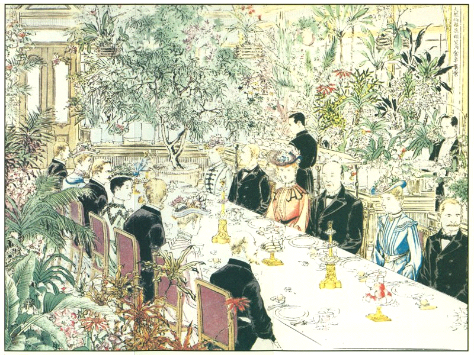
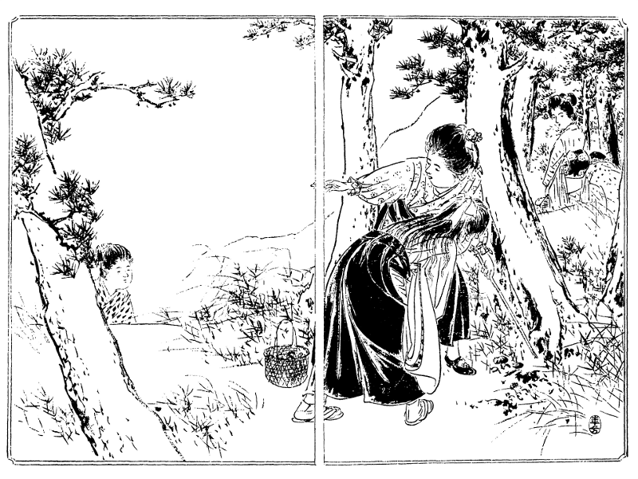
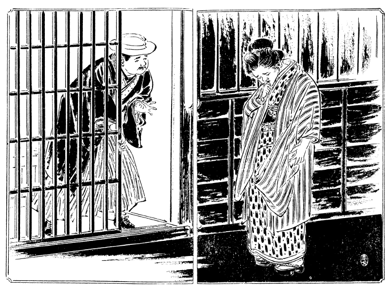
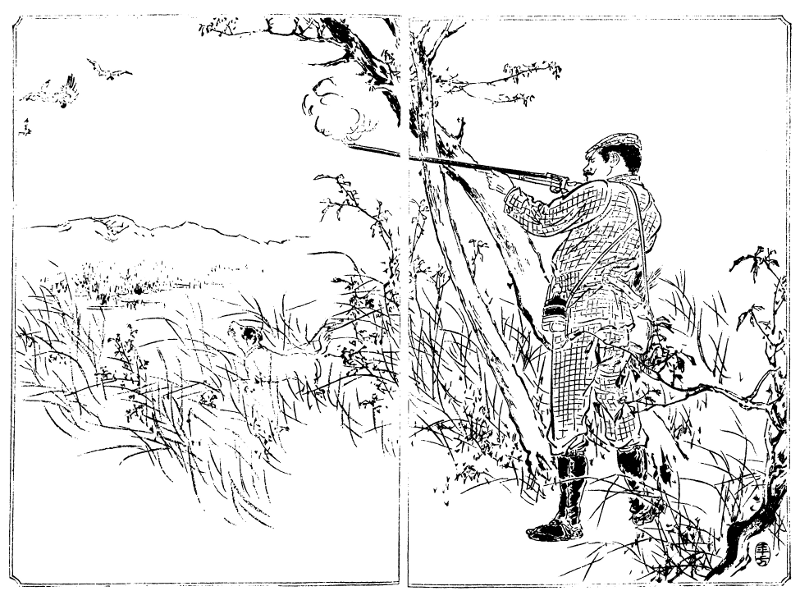
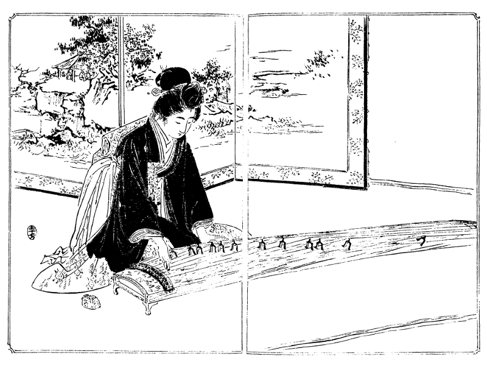

［＃ページの左右中央］
［＃改ページ］

［＃改ページ］
○大隈伯爵家温室内の食卓（口絵参照）
我邦に来遊する外国の貴紳が日本一の御馳走と称し帰国後第一の土産話となすは東京牛込早稲田なる大隈伯爵家温室内の食卓にて巻頭に掲ぐるは画伯水野年方氏が丹青を凝して描写せし所なり。
この粧飾的温室はいわゆるコンサーバトリーにして、東西七間南北四間、東西は八角形をなし、シャム産のチーク材を撰び、梁部は錬鉄製粧飾金具を用ゆ。中間支柱なく上部は一尺二寸間ごとに椽を置き一面に玻璃を以って覆われ、下部は粧飾用敷煉瓦を敷詰め、通気管は上部突出部および中間側窓と、下方腰煉瓦の場所に設けらる。棚下の発温鉄管は室内を匝環し、冬季といえども昼間七十五度夜間五十五度内外の温度を保つ。周囲における二層の花壇には、絶えず熱帯産の観賞植物を陳列し、クロートン（布哇産大戟科植物譲葉の類）、ドラセナー（台湾およびヒリッピン産千年木の類）、サンセビラ（台湾産虎尾蘭の類）、パンダヌス（小笠原島辺の章魚の木）その他椰子類等はその主なるものにて、これを点綴せる各種の珍花名木は常に妍を競い美を闘わし、一度凋落すれば他花に換え、四時の美観断ゆる事なし。
この爽麗なる温室内に食卓を開きて伯爵家特有の嘉肴珍味を饗す。この中に入る者はあたかも天界にある心地して忽ち人間塵俗の気を忘る。彩花清香眉目に映じ珍膳瑶盤口舌を悦ばす。主客談笑の間、和気陶然として逸興更に竭くる事なけん。
［＃改ページ］
小山は
徐ろに席に就き「中川君、非常に面倒で大きに弱ったがやっと今日
埒が
明いたよ」とこの一語は天の
福音としてお登和嬢の耳に響きぬ。中川も
忽ち
愁眉を開き「それは全く御尽力の結果だね、さぞお骨が折れたろう」小山「ウム、実に骨が折れた。最初家庭教育の事を大原君に話して洋行の一件を
勧めたら大原君も非常に賛成して
是非欧米諸国を巡回してみたい、洋行は年来の志願だから何年でも
往っていたいとこういうのさ。ところでお代さんの一件はどうするといったら、それはモー婚礼の期が迫っているので婚礼を済ませて行こうというから、それでは何にもならない、君を洋行させる事に尽力したのも全くその災難を
遁れしめるためだ、婚礼を済ませる位なら洋行するに及ばんと広海子爵の意見と君の苦心とを
委しく話したところ、大原君のいうにはなるほどその厚意は実にありがたい、しかし僕らがお代先生と婚礼せずに洋行したらお登和嬢も僕の帰るまでは嫁に行かないで待っているつもりだろう、一方にはお代先生も待っている、そうすると僕は再び板挟みになって心の苦しみを増すばかりだ、お登和嬢の事は先日も志を打明けて中川君
同胞に申出た通り到底天から僕に授からんものと
諦めているから僕のために
嫁期を失わんより早く
外へ
好い口を捜してもらいたい、お登和嬢の身が片付いていれば僕も安心して海外に往っていられる、場合によれば五年でも十年でも長くいられるだけ
彼地にいたいと大原君は海外で独身生活をしようという位の
意気組だ。そこで僕は一生懸命に君とお登和さんの志を説いてマアともかくも僕らに任せ給え、未来の事はなかなか想像通りに行くものでないから、先によってどういう風に人の運命が変化するかも分らん、行末の事は
成行に任せるとして今度は何でもお代先生の婚礼を避け給えと
無理遣りに大原君を説伏せてそれから外の人たちへも洋行の一件を申込んだ。案の通りお代先生の両親は婚礼を済ませて行けという。大原君の母親もその通りさ。
独り父親が好い
機会として
頻に僕の方へ賛成するが御当人のお代先生は婚礼を済ませて大原君と一緒に行こうと言い出した。大原君の洋行費は家庭教育会から出る、自分の洋行費は親たちに出してもらいたいと言出すと両親たちも海外の事情を知らんから千円までなら自分が出してもいい、それで大原さんと一緒に行けと段々事がむずかしくなって来る。僕も随分閉口して毎日のようにあの家へ出かけて手を換え品を換えて一同を説得した結果、大原君も洋行して帰れば立派な紳士になる、お代先生も大原君と婚礼すれば立派な貴夫人にならなければならんから大原君の
不在中に東京で
確り勉強をしたらよかろう、貴夫人になるのはそれぞれの学問がなければならん、お代先生が日本で充分勉強して貴夫人たる資格を備えた上で大原君が帰朝した時立派に婚礼した方がいいでないかとこの方案に
漸く一決した。それもね、最初お代先生の両親が不同意で、貴夫人には貴夫人の学問が
要るというが今の
貴顕紳士の貴夫人には
素姓の
賤しい
醜業婦が沢山いる。あれはどういう学問をしたのだとこう一本参られたには僕も閉口したね」と今の社会の濁れるは上流の家庭より始まれるなり。
中川「アハハハそれは一言もない。ところでどういう
風に決定したね」小山「それから僕も色々に女子教育の大切な事を説いてどうしても女は結婚前に勉強しないと後になって悔ゆる事がある、結婚後は
子供が出来たり家政の事に追われたりしてなかなか思うように勉強も出来ないと段々説き付けて
漸くお代先生の両親を納得させた。しかるに
忽ちこういう問題が起って来る。大原君が洋行するとあの家へ
独りお代さんを置く訳にならん、国へ連れて戻っては勉強も出来ないし、東京で
然るべき処へ預けて充分に勉強させたい、他日大原文学士の夫人となっても
愧かしくない人物に
仕立ててもらいたい、それには外に頼む処もないから三年でも五年でも大原君の帰朝するまで僕に預かってくれろというのだ。僕も少々驚いたね、外の人を預かって世話をするならいいけれども、あのお代先生を預かるのは随分閉口だ。といって僕が預からんといえば今の相談が忽ち破れるかも知れず、それにお代先生をうっかりした者に預けられて他日一層大原君の迷惑になるようでは僕らの尽力した
甲斐がない。いっその事僕の方へ預かって気長に
世中の事を教えて自分の心から血族結婚の弊害を悟らせるようにした方がいいと思って、トウトウ僕が引受ける事に
極めたよ」中川「ヤレヤレそれはお気の毒だ、とんだ事まで背負い込んでしまったね。君の受ける迷惑は僕の方で弁償しなければならん」小山「アハハ、そんな事はどうでもいいがこういう風に事の極まった以上は一日も早く大原君を海外へ出発させねばならん。もしやぐずぐずしていてまた形勢が一変すると困る。それに両親や外の人は漸く婚礼延期を承諾したけれども御当人のお代先生が
頻に残念がって内々大原君を
追廻すようだ。大原君も長くあの中にいては
溜まるまい。そこで一日も早く洋行させたいがその手順はどうだろう」中川「それはどうにでもなる。ちょうど
昨日広海子爵から手紙が来て大原君の事を家庭教育会へ持出したら誰も彼も大賛成で
速にその事を決定したい、ついては大原君の方はどうであると問合せに来ている。そうと極まったら僕がこれから広海子爵の処へ行って万事の
手筈を極めて来よう。なるべくなら大原君と同道したいな、そうすれば事が早く極まるけれども」小山「ウム、そうし給え。では僕が大原君をここへ呼ぼう。ちょいと紙と筆を貸し給え、僕が今手紙を書くから」と紙筆を
乞いて
換舌の
牘を
認め、中川家の下女に頼みて大原家へ持たせ
遣る。下女の立出ずる時お登和嬢送り来りてそっと注意し「
和女はね、なるべくお代さんやあの下女に
逢わないようにして大原さんにその手紙を差上げておくれ。もしや知らないお方が取次に出ておいでだったら中川から来たといわないで小山さんからお使いに参りましたとそうお言いなさいよ、うっかりお代さんに知れては面倒だから」と何処までも大原のために心を配る。
やがて大原は使者とともに中川家へ入り来れり。家にありて
如何なる
苦みを忍びけん、
茫然としてまた
平生の元気なく「小山君、
先刻は大きに失礼した。あれからね、君が帰った
跡でお代先生が僕や両親の前へ出て来て手放しでワイワイ泣き出して実に困ったよ。今夜婚礼して明日
直ぐ洋行してもいいから婚礼だけを済ませてくれろ。そうでなければ待っている
甲斐がない、婚礼もしないでこのまま別れるようなら首を
縊って死んでしまうという騒ぎだ。僕らが何といって
宥めても聞かばこそ、洋行なんぞと
拵え事に違いない、婚礼するのがイヤだから急に小山さんを頼んで洋行の口を捜したのだ、西洋なんぞへ
往ってしまったら向うで何をするか知れやあしない、婚礼がイヤなら何でも一緒に連れて行ってくれろと強情張って張って何といっても承知しない。そうすると僕の母が先ずその方へ賛成して
盃だけ済ませるなら今夜にも出来るとお代先生の肩を持つし、
叔父や
叔母もうっかりするとまたその方へ心が変りそうだから僕は実にヒヤヒヤするよ。モー一日も日本にいるのがイヤになった。明日にも海外へ飛出したいね」と大原の境遇察するに余りあり。小山も打笑い「アハハハそうだろう、今直ぐ広海子爵の処へ往って洋行の
手筈を
極めて来給え。向うの方はモー出来ている。この上は万事の打合せをして洋行の期日を極めるばかりだ。中川君、広海子爵も大原君の事情を知っているから洋行の期を速める事は何でもあるまい」中川「それはどうでもなるだろう。ともかくも向うへ行って相談しなければ分らん。小山君、君も一緒に往き給え。僕と君と大原君の三人で万事を相談したら今日の内にすっかり事が極まってしまう」小山「それもそうだ、では一緒に行こう」と三人
打連れて広海家へ
赴かんとす。お登和嬢
窃に兄の袖を
惹き「そうすると大原さんは二、三日内に御出発なさるようになりましょうか」と今更別るるを
本意なく思う。兄はその心を知らざるにあらねども大原のためには一日も洋行を延ばし
難し「まだ何とも分らんが二、三日内に出発の出来るように運びたいものだ」お登和嬢少し涙ぐみ「そうすると
暫くお目にかかる事は出来ませんね。今夜は皆さんが
此方へお帰りになって御飯を召上りますか」兄「ウン、少しは遅くなろうがなるべく家へ帰って飯を食べるようにしよう」お登和嬢「それならばお遅くおなりなすっても必ずお帰りになって御飯を召上って下さい。そのつもりで私が今から支度を致します。もしや急に大原さんが御出発のようになると
緩々御飯を差上げる折がないかもしれません」と自分の心は手製の料理を以て大原の別を送るつもり。中川よりも小山がこの言葉を聞き「お登和さん、大丈夫です。
貴嬢のお心はよく分りましたからいくら遅くなっても向うで御飯を食べずに帰って来ます。大原君
悦び給え、今夜はお登和さんが君に
餞の御馳走をせられるそうだ」大原も今は
辞むべきにあらず「アア
有難い」
三人の出で行きし後お登和嬢は台所に入りて
甲斐甲斐しく御馳走の支度に取かかれり。
対手にするは下女のお
竹、これも中川の家に奉公するお蔭にて自ら料理の趣味を覚え「お嬢様、今日はどういう御馳走をお
拵え遊ばします」お登和嬢「そうさねー、今日は何でも大原さんのお
悦びになるような御馳走を沢山拵えて差上げたいものだ。西洋へいらっしゃると
暫く日本料理が召上られまいから日本料理の方を余計にしてそれに西洋料理も二つ三つ
交ぜましょう。大原さんには品数の沢山ある方がいい。家のお
惣菜に煮ておいた
葡萄豆でも何でもある物を
皆んな出しましょう。エート最初は何か汁物を拵えたいがちょうど鯛が買ってあるからあれで鯛汁を拵えよう」下女「鯛汁はどういう風に致します」お登和嬢「この鯛汁は国々で色々な料理があるけれども
先ず手軽なのは鯛の骨と身を別々にして骨や頭を水から四、五時間煮出してスープを取ります。本式にすると朝から晩まで一日煮通さなければならんが急ぐ時には四、五時間でも三、四時間でもいい、その代りにお味噌が入って味噌汁になる。お味噌は
一旦焼いて焼味噌にしたのを
擂鉢でよく摺ります。別に鯛の身を焼いてそれをむしってお味噌の中へ一緒によく摺ってそこへ今のスープを少しずつ入れては
展ばして行って
普通の味噌汁より濃い位なドロドロにしてそれをまたお鍋へ入れてザット煮て出すのだよ。お薬味に
葱の細かく切ったのと
陳皮と海苔の焼いて揉んだのと
紅生姜の刻んだのと
紫蘇の実なんぞを添えて食べる時に味噌汁へ入れて
掻廻してもよし、
温い御飯へそのお薬味と鯛汁をかけて食べてもいいのさ。ちょいとした御馳走にはこの鯛汁に外のお料理が二品か三品あればそれでも沢山な位だ。九州辺では鯛の骨を焼いて摺り混ぜる処もある。なかなか
美味しい味噌汁だよ」下女「オヤそうでございますか、ちょうど西洋料理の濁ったスープに似ておりますね」お登和嬢「やっぱり西洋料理から出たものだろう。九州辺のお料理は多く長崎伝来の西洋料理から出ていて進歩したものがある。関東辺のお料理よりも滋養分に富んでいるものが多い。この鯛汁なんぞは鯛のスープに鯛の実に滋養分の多いお味噌に薬味も色々交じるからなかなか滋養分があるお料理で病人の
恢復期や産婦なんぞにちょうどいいね。よく産婦には鯛の味噌汁やカマスの味噌汁を食べさせると乳が沢山出るというがつまり滋養分の多い飲料が効能のあるという訳だ。
和女なんぞも家にいて毎日色々なお料理を見ているから自然とお料理を覚えるけれどもこういうお料理は病人にいいとかこの御馳走は
老人に差し上げようとか、これは子供に食べさせたいとか一々その用い方を考えておくとお嫁に行ってからどんなにためになるか知れないよ。何でも心掛次第だ、
家にいてお料理を覚える気になったら知らず知らず沢山のお料理を覚えられるよ」下女「ホントにありがたい事でございます。イエね、お嬢様にはまだ申上げませんが先日
宿下りに家へ参りました時西洋風の柔いお料理を二つ三つ拵えて父や母に食べさせましたらどんなに
悦びましてございましょう。そういうお家へは
此方から月謝を出しても置いて戴きたい位だと申して大層ありがたがっておりました。私も一生懸命に覚えますからどうぞよくお教えなすって下さい」と下女までが食道楽にかぶれたり。
○この鯛汁を九州辺にて薩摩という。製法は国々によりて小異あり。
下女の熱心はお登和嬢の
悦ぶ所「ホントにお料理ばかりでない、私の家にいれば何でもためになる事が覚えられて
和女の一生にどんな得になるか知れません。お料理だって家のお料理を覚えておくともしや和女が看護婦になっても病人のお料理が
直ぐ出来る、看護婦にならないでも病人があった時に病人のお料理を知らなかったらどんなに困りましょう。たとい家中が無病息災で病気なんぞはした事がないと威張っても女が妊娠したら妊娠中の食物を知らなければなるまい。お産をした後は産後の食物が一番大切で
肥立の良いのも悪いのも乳の出るのも出ないのも食物次第で大層違う。だから誰でも女と生れたらお料理の事を覚えておかなければなりません。今の鯛汁も西洋料理から出たといったが西洋料理でお魚のスープというとよく病人に食べさせる。お魚は鯛でも
鱸でも
鰈でも
比目でも何でも白い身の物ならばいい。それを
腸だけ抜いてまるのまま水へ入れて暫く
湯煮る。先ず大小によって一時間前後位でいい。別に例の通り白ソースを拵える順序でバター一杯を溶かしてメリケン粉一杯をよく
杓子で攪き廻しながらいためて白ソースならば牛乳を
注すけれどもこれは牛乳の代りに今の湯煮たスープを注してドロドロのものにする。それからお魚のスープが一合入ったらばその上へ牛のスープでも鳥のスープでもやっぱり一合注して湯煮たお魚の身をむしってなるたけ細かくしてその中へ入れて塩胡椒で味をつける。外にお魚の匂いを消すためスパイスという混ぜた香料を少し加える。もっとも病人に食べさせる時には香料を加減しなければならない。そうして弱い火へ掛けてまた一時間も煮るとお魚の身が溶けてドロドロの汁になる。それを火から
卸す少し前に牛乳一合を加えて少し煮るのだ。つまりお魚の湯煮汁が一合ならば牛か鳥のスープを一合、牛乳を一合と三合の汁になる。このスープは平生のお料理に使っても味が大層好いし、病人に飲ませてもなかなか滋養分が多い。よくお医者が病人にスープを飲ませろというが牛肉屋から配達してくれる一合十銭位な
白湯同様のスープを飲ませたって興奮剤にはなるけれども
身体の滋養にはなりません。西洋で病人に飲ませるスープというのは
皆んなこういう風に色々の材料を取合せて極く濃いような重いスープだ。牛肉から取る汁だってビーフチーといってなかなか手数のかかるものだ。それを病気の時には西洋でスープを飲むといって白湯同様なスープを飲むようではなかなか身体の滋養にならない。こんな事は
病家ばかりの罪でない、お医者さんさえ悪くするとスープの拵え方を知らない人も沢山ある。お魚のスープはこういうものだし、鳥のスープといえば先日広海さんのいらしった時拵えたようなボタージデアラレンといって鶏の肉の裏漉しにしたのと御飯を一旦煮て裏漉しにしたのを上等のスープで
展したドロドロのものだ。あれなんぞも病人には極くいいので、滋養分は沢山ある。もっとも病人によっては飲み物ばかり与えて悪い事も沢山あるけれども大概は消化吸収が良くって滋養分の多いものを
貴ぶ。
和女が考えても解るだろう、今までのようなお
粥や
重湯を食べさせるのとこんなスープを食べさせるのと
何方が身体にきくだろうか」下女「それはモーお粥なんぞは
足元へも
追付きません」
○病人に飲ましめるスープ類の料理法は付録に委し〔冬の巻付録「病人の食物料理法」〕［＃「〔冬の巻付録「病人の食物料理法」〕」は底本では「〔本巻五一三ページ以下〕」］。
病人の食物は
何人の家庭にても知らざるべからず。しかるに今の世は医師すら多く薬物療法に重きを置きて食物療法の大効あるを悟らざるなり。いわんや普通の
素人は病人の食物に対して
平生何の用意もなし、お
粥や
重湯に責めらるる今の世の病人こそ
哀れなれ。中川の下女はよくお登和嬢の言葉を解し「お嬢様、ホントにそう申すと病人のある家では食物に困りますね。長い病人になると毎日同じ物を食べさせられますから
飽きてしまいますよ。それに日本風のお粥や重湯では第一味が悪くって無病の人でも
美味しく食べられませんね」お登和嬢「全くそうだよ。病人の食物は無病の人よりも味を美味しく拵えなければならん。何故だというのに病人は病気のために食慾が平生よりも減じている。といって沢山物が食べられないと力が抜けて身体が余計に衰える。だから病人にはよっぽど美味しいお料理を拵えて食べさせなければならない。ところが今の世中は病人の食物が無病の人の食物よりもなお
不味い。不味いから病人には
尚お食べられない。こんな気の毒な事はない。私は先年或る病人が何も食べられないといっていたから西洋風の病人食物セーゴのプデンを拵えて食べさせたら大層
悦んで
皆んな食べてそれから力が付いて快方に向った事もある。セーゴやタピオカの料理は毎度拵えるから
和女もよく知っているがあれは西洋で病人食物の第一番に出て来る者だ。しかし日本人の家には平生西洋食品を
蓄えてある事が沢山はなし、それに御飯の料理でも美味しい物は沢山出来るから先ず御飯のお料理を沢山覚えておく方が便利だよ」下女「オヤオヤ御飯のお料理はお粥か重湯の外にないと
思ましたが色々ございますか」お登和嬢「ありますとも、西洋料理ではお米の料理が何百種とあります。その中で病人の食物にちょうどいい物も沢山あるがブランライスプデンなんぞはどんな病人にも食べられるね」下女「それはどう致します」お登和嬢「これは本式にすると面倒だが略式にすれば日本人の家で造作もなく出来る。
何処の家にも御飯はあるからなるたけ柔い御飯を一度煮て
裏漉しにしてその漉したものを大匙に山盛五杯それへ玉子の黄身を四つと砂糖を三杯と牛乳二合をよく混ぜるとドロドロのお粥のようなものが出来る。それを
丼鉢へ入れて鍋へ湯を沸かして丼鉢を一時間ばかり強くない火で
湯煎にするとちょうどお粥の少し固いようなものが出来て匙で
掬って食べると頬が落ちるほど美味しいよ。プデンは何のでも匙で掬う位の固さにしたのがいい。このブランライスプデンを無病の人に出すのはその中へナツメッグだのシンナモンだのと香料を加えるが病人によっては香料を加減しなければならん。大抵な家だって病人があるとソレ牛乳を飲ませろ、玉子を食べさせろ、お粥を拵えろのといってこれだけの材料を使うけれどもお粥の
不味いのに玉子の半熟に牛乳をただ飲まさせられては病人も
飽きるからね。
殊に牛乳ばかりを飲むのは無病の人にもよくない。病気の
性によっては大層悪い事がある。それだけの材料を使う位なら少し手数をかけてこのプデンを拵えて食べさせた方がどんなに悦ぶか知れないよ」下女「ホントでございますねー」と心なき身もその説に感服する。
○米の料理は秋の巻の付録に日本風五十種西洋風五十種を詳記せり〔秋の巻付録「米料理百種」〕［＃「〔秋の巻付録「米料理百種」〕」は底本では「〔本巻四七二ページ以下〕」］。
お登和嬢は何人に
向いても親切の心に変りなし。弟子に教ゆるも下女に教ゆるもその説く処は詳細を極む「竹や、
和女も料理法を習うからには略式ばかりで物足りない、念のために本式のブランライスプデンを教えて
進げましょう。これにはお米の粉が
要るよ。先ず二合の牛乳へお米の粉を大匙四杯にお砂糖を大匙三杯入れて弱い火で一時間ばかりよく煮るとドロドロしたお粥のようになります。それが出来上った時玉子の黄身を四つ入れてよく
攪き
混ぜてそれからベシン皿へでもあるいは
丼鉢へでも入れて
外のプデンのようにテンパンへお湯を
注いでその中へベシン皿を置いてそれごとテンピの中で二十五分間位
蒸焼にすると上等のプデンが出来ます。セーゴでもタピオカでもジャムやでもやっぱり同じ事で大匙二杯位を初めは
暫らく水へ漬けておいて
膨らんだ処を二合の牛乳へ入れて砂糖を三杯加えて三十分以上煮て出来上った時玉子の黄身を二つ混ぜてテンピの中で二十五分も蒸焼にすると病人にはどんなにいいだろう。無病の人には牛乳で煮ないでも
普通のカスターソースを拵えてその中へ水に漬けたセーゴやタピオカを混て蒸焼にしてもカスターセーゴプデンといってなかなか
美味しい者が出来るよ。その外私が
平生拵える挽いた肉のお料理や崩したお魚のお料理は大概な病人の食物になるからよく覚えておおきなさい」下女「ありがとうございます。お米のお料理でまだ外に病人の食べるようなものがございましょうか」お登和嬢「ありますとも、沢山あります。御飯を
一旦煮て
裏漉にして大匙山盛六杯へ二合の牛乳と三杯のお砂糖を加えて弱い火で一時間煮詰めて出来上った時ゼラチンを四枚水で
濡らして柔くして加えて玉子の黄身を二つ入れて少し煮て
卸したら
其処へ白身を二つ泡立たせて混ぜてそのまま冷して固めると手軽なお米のババロームというものになって病人には
極くいいよ。こういう時
寒天を使うと消化が悪くって病人に食べられないけれどもゼラチンは薬に使う
膠質でお
腹へ
往くと
直に溶けるから病人にも食べられる。この外に御飯を一旦煮て裏漉にしてライスケーキも出来ればライスソフレーも出来るし色々のお料理が沢山あるけれども今は
忙しいから今度また暇の時に教えて
進げよう。エート病人料理の話しで
肝腎な今日のお料理が
何処へか行ってしまった。大原さんは
葡萄豆がお好きだから
昨日煮ておいた葡萄豆をモー一度煮返して差上げよう。葡萄豆は昨日煮たものを今日また一度煮返すと味がいよいよ好くなるよ」下女「煮返さないでもお豆が柔くなって大層結構でございます。お豆というものは大層
身体のお薬りになるそうでございますね」お登和嬢「アア、牛肉やお魚のない田舎には大豆だの外の豆類が沢山あって身体の養いになる。豆というものは肉類に劣らないほどの功能があるよ。しかし料理方が悪いと
消化れないから病人に食べさせられないけれども家で煮るように外の物を入れて柔くしてあれば病人が食べても
差支がない」下女「ホントに融けるようでございますもの。私はお手伝い申したばかりでまたよくあのお料理を覚えませんが
［＃「またよくあのお料理を覚えませんが」はママ］丁寧に致しますとどういう風に拵えます」
お登和嬢「あれはね、
極く上等の大豆を一晩水へ漬けておきます。もっとも古いのと新しいのでその加減をしなければならんが古いほど長く漬けておいて
翌日の朝水を換えてよく洗って少しの
昆布と一緒に深い鉄鍋へ入れて水を沢山
注して先ず半日位強くない火で気長に
湯煮なければならない。水を引いてしまったらまたお湯を
注して
緩々湯煮て、半日もそうした処で一合の豆ならばお砂糖を大匙二杯半位入れて別に一寸四角位に
截った昆布と上等のカチ栗と小さく切った
人参少しと
凍蒟蒻少しとを入れてまた二時間位気長に煮るのだ。昆布が入るから豆も昆布も双方柔くなって双方へ味が付くし外の野菜も美味しくなるが
其処には才覚という事があって悪い昆布を入れるのと上等の昆布とは煮える時間も違うし味も違う。カチ栗も上等の品ならその時入れていいがコチコチ固いような品ならモット前に入れるがいい。昆布を二度に入れるのは豆と一緒に入れた昆布は長く湯煮ると溶けてなくなってしまう。
跡から入れた昆布がちょうど
柔になって食べられる。こうして二時間ほど煮て中の品物が
皆んなよく煮えたと思う時お
醤油を少し注してまた一時間ほど煮て火から
卸すがお醤油はなるべく
寡い位に入れないと味が
鹹くなり過ぎて困るよ。つまり一日かかるね。その晩一度食べて翌日はまたザット煮返すとモット柔くなって美味しくなる。寒い時にこの葡萄豆を煮て翌日モー一度煮返しておくと四日や五日の
副食物になってどんなに調法だろう」下女「私はお豆が好きでございますから毎日戴いても
飽きません。それから今朝ほど八百屋の持って参った大きな栗がございますね。あれを何かに遊ばしますか」お登和嬢「あれは栗を含ませ煮にして鯛のフクメをかけましょう。栗の含ませは先ず皮のままよく蒸してそれから皮を
剥いて一升の栗ならば
味淋二合砂糖一斤塩小匙一杯半の割で弱い火へかけて気長に煮てそのままその
汁へ漬けておけば長く持って段々味が出る。色を白く出そうと思えば白味淋に白砂糖を使うと味もなお良くなる。その栗へ鯛のフクメというものをかけるが、これは鯛を三枚に
卸してその身を指の先で小さくちぎって思い入れ沢山塩を振って二時間ばかり塩漬にしておく。それから今の身を塩から出してよく洗って
沸湯の中へ入れてサット湯がいてよく水気を切て
布巾で堅く
絞る。そうするとバラバラになるから別の大きい鍋へ湯を沢山沸かして湯の中へ薄い鍋を入れて今のバラバラに
成た身を両手で揉みながら落して五、六本の
箸で掻き混ぜていると
湯煎の
空炒になるから段々水気を蒸発して細い白い糸のようなものがカラカラに
干上る。それがすっかり干上った処で火から卸して栗の煮たのへ沢山かけて出すと鯛には塩気の味があり栗には甘い味があってどんなに美味しいだろう。こういうお料理は西洋で食べられないから今日は一つ上等に拵えて大原さんに御馳走しましょう」と嬢の熱心平生に
異るあり。下女もその心を知り「お嬢様、ホントに大原さんはお
名残惜しゅうございますね」
大原の事といわれてお登和嬢
忽ち少しく涙ぐみけるを下女は悪き事言いけりと話しを
外へ向け「お嬢様、栗の
金団なんぞは以前拝見致して覚えておりますが栗を西洋料理に使う事がございましょうか」お登和嬢「ハイありますとも、西洋風にすると栗を皮のまま蒸してそれから皮を
剥いて鉢の中へ入れておく。その上へバニラステーキといってバニラの棒を栗五合ならば二本ばかり載せておく。別に一斤の白砂糖を一合の水で煮立ててよく溶けた時熱い処を今の栗の上からかけて一晩置くと
翌日は栗から
液が出て少し濃くなっている。その液をすっかり漉し取ってまた鍋へ入れ暫く沸立てて熱い処をかけて一晩置く。その
翌日もやっぱり今の通りに液を沸立てて栗へかけて一週間毎日そうしてそのまま
保存っておくと一年過ぎても味が変らない。よく西洋から銀紙へ包んだ栗が来るがあれはそうした栗を干してよく水気を切って銀紙へ包んだのだ。近頃日本製にもその
真似をして銀紙へ包んで立派な
瓶へ詰めたのがあるけれども一度煮たのを銀紙へ包むと見えて直きに腐敗してしまう。何でも料理は親切に拵えないと長く持ちません。親切に拵えたのと不親切に拵えたのとは
保存が違うから争われないものだ」下女「全くそうでございますね。栗をちょっとしたお料理に使えますか」お登和嬢「そうさねー、バター一杯を溶かしてメリケン粉一杯をいためて牛乳一合を
注して塩胡椒で味をつけた白ソースを拵えて今のように蒸した栗を入れてザット煮て出してもなかなか
美味いよ。それから鳥のシタフェというのは若い
雄鶏のお
腹の中をくり抜いて蒸した栗をバターと塩とお砂糖とで
和えてその中へよく詰め込んで鶏の皮の切口を木綿糸で縫ってテンパン皿へ入れる。その側へ
人参や
玉葱の小さく切ったのを置いて鶏の上へは大匙一杯のバターを載せてテンピへ入てロースに焼くが途中で
幾度も引出して鶏から出た汁を上へかけなければいけない。出来上って出す時にはこの汁へスープを加えて塩胡椒して少し煮た汁をかける。ロースを焼くにはお菓子と違って火は極く強い方がいい。それで一時間ほど焼いてよく火が通らなければならん。こういうものを弱い火で焼くと一時間位では火が通らず、二時間も焼いていると肉の水気がなくなって硬くなって味が極く悪い。ロースやビフステキを上手に焼くのはなかなかむずかしいものだ。今度私が
余所へ行った時
和女が一つお料理を拵えて兄さんに差上げて御覧」下女「オホホそう致しましたらさぞ旦那様がお笑い遊ばす事でございましょう。お嬢様、先ほど八百屋からキザ柿をお買い遊ばしましたがあれは召上りますのですか」お登和嬢「イイエあれもお料理に使うよ、柿ナマスといって上等の御馳走が出来る。ちょうど大原さんへ差上げるのにこの上なしの珍味で、柿は西洋にない、日本の名物だ。西洋へいらっしゃると柿のお料理を召上る事が出来まいから今日は一つ美味しい柿ナマスを拵えて差上げたい」と一生懸命に料理の支度をなす処へこれも大原の一件を案じてや小山の妻君突然尋ね来れり。
○栗の西洋料理は本文の外になお数種あり。その中栗のマッシは日本風の金団に似たるものなるが先ず生栗一斤の皮を剥き極く柔になるまで湯煮たるを裏漉にかけバター大匙一杯と塩胡椒を加え少しの牛乳にて弛めて弱火にかけてよく煉り混ぜるなり。
○栗のベーキドプデンも味好きものなるが玉子の黄身二つと砂糖大匙二杯とをよく煉り混ぜ一合の牛乳にて弛めし処へ裏漉しの栗大匙三杯を入れてよく混ぜ合せ香料のシンナモン、丁子の類を少し加えてベシン皿へ入れるなり。焼き方は例の通りテンパン皿へ湯を注ぎその中へベシン皿を置きあまり強からぬ火のテンピにて三十分間焼くなり。火の強きに過ぐるは出来悪し。
○栗のボイルドプデンは前の物より少し固くするものなるが玉子三つに砂糖二杯を煉り混ぜ牛乳一合を注し裏漉の栗大匙四杯を入れ香料を加えてブリキ型へ入れ湯煎にして一時間ほど湯煮るなり。火加減は強からぬがよし。火が強過ぎて湯が沸騰するとプデンに鬆が立ち味悪し。ブリキ型のなき時は茶筒の蓋へ入れ上から布巾をかけて湯煮てもよし。このプデンにはカスターソースあるいはスポンジソースをかけて食すべし。
○前文よりも一層上等なる栗のボイルドプデンは玉子の黄身三つに砂糖大匙三杯とバター大匙一杯とを煉り混ぜメリケン粉大匙六杯と焼粉を小匙一杯加え湯煮たる栗を小さく砕きて一斤ほど入れて牛乳を大匙二杯ほど注し、三つの白身を泡立てて加え、香料のワニラなど混ぜてブリキ型へ入れるなり。これも前文の通りに湯煮てソースをかける。
小山の妻君は
良人の帰宅が遅き故に大原の一件が
如何に
成行きつらんと心配して来りしなり。お登和嬢に逢いて様子を問えば三人同道にて広海家へ赴きしとの事、それならばもはや案じるに及ばず、洋行の相談全く整いて大原ぬしは情実婚礼を
遁れ給わんと小山の妻君もお登和嬢のために前途を
悦び「それでは皆さんも御相談が長くおなりでしょうから急にはお帰りがありますまい」お登和嬢「イイエ晩までにはお帰りになります。たとい遅くなっても晩の御飯を召上らずに帰っていらっしゃるお約束ですから
只今御馳走の支度を致しております」妻君「オヤそうでございますか、それならば私もお手伝い申しましょう。もしや急に大原さんが洋行なさると
貴嬢の御馳走を召上られないからといって今夜は御送別と
御留別を兼ねた御会食ですね。オホホ、そうでございましょう、きっとそうに違いありません。そういう訳ならそのつもりで私もお手伝いを致します。今何をお拵えなさいますか。ナニ柿ナマス、柿がお料理に使えますか。私もお手伝ながら拝見致しましょう」と嬢を促してともに台所へ入りぬ。お登和嬢は下女のみにて手廻り兼ぬる処へ
好き手伝人を得たりと心嬉しく「奥さん、柿ナマスはキザ柿の甘いのを大根の千六本のように細く刻んで沢山の味淋へ漬けておきます。別に
椎茸と
簾麩とを極く細かく切って
糸蒟蒻と一緒にお味淋やお
醤油で
美味しく煮ておきます。それから
油揚を二枚に
剥がして中の白い処を庖丁でこそけて取っておいてその皮だけ細く切って一緒に煮ます。大根と人参の生を千人前か何かで細く
卸して塩で揉んで固く絞っておきます。それから白胡麻を
炒って
擂鉢でよく擂って今の油揚の白い処を入れてまた擂って味淋と酢と砂糖と少しの醤油で味をつけて今の品々と外に蓮根の煮たのを入れてよく
和えます。蓮根は蓋をして外の品々と一緒に煮ると黒くなりますから薄く切って別に塩と味淋で煮ます。貴女のお家のようの南京豆が直ぐ間に合えば白胡麻の代りに南京豆を使ってもいいのです。品物の入れ加減は大概お
見計いでようございますがその中で柿が一番多く入ります。色々な味へ柿の甘味が交ってどんなに
美味うございましょう。柿のお料理ではこれが一番結構のように思います」妻君「そうでございますかね、さぞ大原さんがお
悦びになりましょう。それからまだ色々の御馳走が出来ますか」お登和嬢「ハイ何でも出来るだけ沢山拵えます。上等も下等も日本風も西洋風も構いません、材料のあるだけ品数を沢山拵えて大原さんに充分召上って戴こうと存じます」妻君「オホホソラ御覧なさい」お登和嬢「アラ、そういう訳ではございませんがお
惣菜料理までも一緒に出そうと存じますから里芋の極く柔い小さいのばかり蒸して
鰹節と昆布の
煮汁を薄味にしてよくお芋を煮てその汁へ葛を引いて里芋の葛掛も拵らえましょうし、
鯖の
船場煮やイナダの
餡掛もお料理致します」
○本文の柿ナマスには生柿のなき時干し柿を用いてもよし。
妻君「鯖の船場煮とはどうしたお料理です」お登和嬢「鯖の船場煮は誠にさっぱりしたお料理で先ず生鯖の
鮮しいのへ一塩
宛てて二、三時間置きます。あるいは極く上等の塩鯖があればそれでも構いません。別に
昆布出しの汁を
美味しく拵えて塩とホンの少しの
醤油とで味を付けて
酢を少し加えます、この汁には
鰹節も味淋も砂糖も使いません。昆布の味と塩気と
酸味だけです。別に大根を短冊に切って
湯煮ておきます。塩にした鯖も切身にしてちょいと汁へ入れて煮て椀へ盛る時大根を載せて今の汁をかけて出します。お汁物と煮物の
仲間のようなもので美味しゅうございますよ」妻君「これからは鯖が沢山出ますから宅でも拵えてみましょう、イナダの
餡掛とおっしゃるのは」お登和嬢「これもイナダへ薄塩を当てて蒸しておきます。別に昆布出しの汁へ醤油と味淋で味をつけて溶き葛を入れてお魚へかけて
山葵を載て出します」妻君「それも美味しゅうございましょう。私どもではこの頃近所の家からよくイナや
鰡の
活きたのを貰います。その主人が
投網が好きでよくイナや鰡を沢山取って来てくれますがイナや鰡はどうしたのが美味しゅうございましょう」お登和嬢「
活きているなら
湯鰡というお料理になさると
生臭くなくって極くさっぱりとしております。それはイナでも鰡でも活きているようなのを三枚に
卸して小さく切ってグラグラ
沸立っている湯の中へ
潜らせて直ぐ揚げます。それを酢醤油で食べますが薬味に
摺り
生姜と
刻み
葱と
紫蘇なんぞを用いますと沢山食べられます。船で釣や網に参った時船中の即席料理に極くいいと申します。イナや鰡はよく味噌汁へ入れますがあれは生の身を用いると
汁が生臭くなって
不可ません、一度焼いて入れるのに限ります」妻君「それは
好い事を
伺いました。イナや鰡はこれから沢山出ますけれどもさて食べ方に困るもので大きいのはお刺身にするとか小さいのは塩焼にする位なもので私どもは直きに
飽きてしまいます。イナや鰡は色々なお料理があるとみえてよく浦賀の
土蔵焼名古屋の
饅頭焼なんぞと申しますね。あれはどう致したのです」お登和嬢「名古屋の饅頭焼はお腹の中へお味噌を詰めて焼いたのです。浦賀の土蔵焼は
腸を出さずにそのまま
丸焼にしたのです。しかしこういうお料理はその土地の魚に限るのでイナや鰡が品川湾に来ている時分は
盛に餌を食べて
釣人に取られる位ですから腸が臭くってとても食べられません。品川湾から段々下へ落ちて行って神奈川横浜を過ぎる時分からモー段々餌を食べなくなります。それから段々東京湾の口へ落ちて行って房州へ六分相州へ四分下ると申しますが相州へ下った魚は浦賀湾の温かい処で冬籠りを致します。その時分には少しも餌を食べません。お腹の中の汚物は
皆んな吐いてしまって
綺麗なものです。それに
身体は充分
脂が乗って美味しくなっていますし、その魚を浦賀では
昔し一網千両の馬鹿網といって網で一度に沢山
取たそうです。そういうお魚でなければ土蔵焼にしても美味しくありません。東京辺で取れたイナや鰡はとても腸ごと食べられません」と一々説明の
委しきに小山の妻君感心し「ホントに
貴嬢は何でもよく御存知ですねー」
○イナや鰡を西洋料理にするはフライに用いてもよし。またグレー即ち網焼にも用い、これは魚を背開きにして塩胡椒とサラダ油をかけて十分間置き焼く時塩を少し振かけバターを塗りて強火にて焼くなり。かくすれば味好し。
魚の料理も季節により土地によりて各々その特長あり。小山の妻君
頻に感心し「お登和さん、そう
伺ってみるとお魚ばかりではありませんね、お野菜でも肉類でもそういう
工合がありましょうね」お登和嬢「ありますとも、同じお魚でもワラサやワカナゴの時は夏の方が味も好くって
鰤になると寒中が
美味いとしてあります。お野菜でも
出来秋に食べるのが一番
身体にお
薬りなので、お野菜や植物が出来秋に持っている成分は必ず何かその時に必要の事があるのでしょう。
唐辛が出来る時分には辛味のお料理が身体に必要ですし、梅の実のなる時分は人の身体に最も
酸味を要する時だと申します。山に
薇が出る時分には人のお
腹へ虫が
生きますし」と言うを
遮る妻君「オヤ薇と虫と何か関係がありますか」お登和嬢「ハイ薇は
駆虫の功があります。薇の根からメンバエキスと申して大層強い駆虫剤が取れるそうでございます。ちょうどその時分には人の身体に色々な虫が生いて駆虫の必要があるのだそうです。そういう訳ですから何でも出来秋の品物を色々に料理して食べるのは自然と人の身体の薬になりましょう」妻君「そうでございますかね、してみると何でも季節季節に出来たものは食べておいた方がいいのですね。よく
無花果は
痔の薬になると申しますが追々無花果が出て来ますからあれなんぞも食べておきましょう。お登和さん、無花果は何かお料理になりましょうか」お登和嬢「ハイ色々なものになります。無花果の酢煮と申すのは無花果の皮を
剥いて大きいのなら二十位を一斤の砂糖と一合の水と大匙四杯の西洋酢とで
丁子を十粒ほど加えて弱い火で煮るのです。なかなか結構なものですよ」妻君「無花果はただ煮てもようございますね、あれをジャムにして長く置けましょうか」お登和嬢「ハイ、やっぱり外のジャムのように拵えれば出来ます。皮を剥いた無花果が一斤なら砂糖を百目振かけて三、四時間置くと砂糖が溶けて
液が出ます。それを深い鉄鍋へ入れて最初は強い火で一時間ばかり煮る内にアクが浮いて来ますから
丁寧に
幾度も
掬い取ってアクが出なくなったら火をズット弱くして
弱火で二、三時間煮詰めるとジャムになります。西洋では無花果を
乾して砕いて
珈琲に製するそうです」妻君「そうでございますか。私も今度ジャムを拵えてみましょう。しかしお登和さん、大概なジャムは果物一斤に砂糖一斤の割ですがあれではどうも甘過ぎるようです。モー少し砂糖を減らしても構いますまいか」お登和嬢「ハイ、早く食べるのは砂糖を減らしても構いませんがその代り長く持ちません。長く持たせるものへ砂糖を沢山入れるのは防腐剤にするものです」妻君「オヤお砂糖が防腐剤になりますか」お登和嬢「お砂糖は塩に
亜いでの防腐剤です。
庖丁やナイフで手を
截った時塩を塗っておく代りにお砂糖の固まりを押付けて
疵口へよく浸み込ませておけば
膿むような事はありません。
菓物や何かをお砂糖漬にするのも防腐のためです」妻君「そういうものですかね、モー
葡萄が沢山出ますがあれもジャムになりましょうね」お登和嬢「ハイ、あれも皮付のまま砂糖をかけておいて今の通りに煮てそれから
裏漉しへかけてモー一度煮詰めておくと
何時までも持ちます」妻君「私は近頃何でも菓物を煮ますが梨ばかりは煮ても美味しくなりませんね」とこれは自分の失敗らしし。
○無花果の酢煮は皮付のままにてもよし。それには一斤の無花果へ砂糖八十目、酢を大匙四杯加えて本文の如く煮るべし。
お登和嬢「奥さんは梨をどういう風にお煮なさいます」妻君「やっぱり
外の菓物のようにお砂糖を入れて煮ました」お登和嬢「それでは甘くばかりあって
美味しくありません。梨は全体甘味ばかりで
酸味がありませんからお砂糖ばかりでは甘ったるくなります。あれは先ず大きい梨の皮を
剥いて
心を
除って四つに割って梨一斤半にお砂糖を百目入れて水を五
勺注して四十分間煮てそこへ甘くない
生葡萄酒を五勺加えてまた二十分間煮ます。そうして
冷めてから戴くとなかなか結構です」妻君「なるほど葡萄酒で煮たらば美味しくなりましょう。この頃は西洋梨といって長い形のコチコチした石のように堅いのがありますがあんまり堅過ぎて煮なければ食べられませんね」お登和嬢「イイエ、あれは
極く柔くって味の好いものです。堅いようなのを買って糸で
縊って風通しの好い処へ釣るしておくと二、三日目か四、五日目位でちょうどいい食べ頃が来ます。手で触ってみると柔くなっていますからそれを召上るとどんなに美味しゅうございましょう。とても日本の梨は遠く及びません。ちょうど梨と
林檎の味を一緒に持っているようです。その代り食べ頃はたった一日か二日でその時食べないと
直きに腐敗しかけて
酸味を
帯びます。そうなるとモー食べられません。よく世間の人が西洋梨を堅い堅いといいますが全く食べ頃を知らんからです。マンゴーでもマングスタンでもライチーでも
皆んなその通りちょうどいい時に召上らないと菓物の王だとか女王だとかいう味が致しません」妻君「それで分りました。やっぱり
此方が悪いのですね。お登和さん、先日
良人が
貴嬢から三十銭料理や二十銭料理を教えて戴きまして宅へ帰ってから一々
皆な試みてみましたが大層経済に出来てどんなに
悦びましてしょう。その
中でも二十銭のサンドウィッチ料理なんぞは大層社中の賞賛を博したそうです。あれから宅では十八銭のブリスケ料理だの牛の尾の料理だのと徳用なお料理ばかり致しますがその外に
臓物料理は皆んな
直段が
廉くって味が好いと伺ったそうです。全体牛の臓物料理と申しますとどういうものでございましょう」お登和嬢「そうでございますね、上の方から申せば第一が
犢の頭です。頭一つを四十五銭から六十銭位までで買えます。大牛の頭も買えない事はありませんけれども大牛の頭は切りほどくのに面倒ですから大概犢を買います。大牛のは脳味噌とか舌とかいって別々に買う方が便利です。犢なら頭一つで脳味噌も取れれば舌も取れますし、顔の皮の美味しい処も取れて大層徳用です」妻君「牛の脳味噌は大層お薬だと申しますがどうして拵えます」お登和嬢「ハイ牛の脳味噌は大層なエキス分を含んでいますから興奮の効が多いそうです。脳味噌はトントお豆腐のように柔いものでそれをザット
塩湯煮にして薄い膜を
剥ぎまして薄く切ります。それへ塩胡椒してメリケン粉をつけて玉子の黄身へくるんでパン粉をつけてバターでフライにするのが一番軽便で美味しゅうございましょう。その
外色々のお料理に出来ますけれども食べ慣れないお方は気味を
悪るがって召上らないようです。西洋人は一週間に一度お薬のつもりで食べる人が多いそうです」
○梨はこの外に焼梨という料理あり。そは焼林檎の如く心をくり抜きバターと砂糖を詰めテンピの中にて二時間ほどロース焼にするなり。よく気長に焼くべし。
○牛の脳味噌はコロッケーにもすべし。それには一旦湯煮て細かく切り固き白ソースへ混ぜ塩胡椒を加えて冷まし、それを丸めてメリケン粉をつけ玉子の黄身にてくるみパン粉をまぶして油にて揚げる。これにトマトソースをかけて食すれば一層上等なり。
妻君「牛の脳味噌と聞くと何だか気味が悪いようですね。追々食べ慣れたら平気になるかもしれません。それから顔の皮というのはどう致します」お登和嬢「顔の皮と申して頭の皮も何の皮も
皆んな食べられますが、それを最初塩でよく
揉んでヌルヌルを
除ってしまってよく洗って、深い鉄鍋の中へ水と一緒に入れて少し塩を加えて
人参や
玉葱なんぞを入れて強くない火で四時間ばかり
湯煮ます。そうすると皮が大層柔くなります。別の鍋でバター一杯をいためてコルンスタッチ一杯をよくいためてスープを五
勺に
瓶詰のトマトソースを一合加えて塩胡椒で味を付けて今の皮をその中へ入れて一時間ほど煮ますと
美味しいシチューが出来ます」妻君「牛の舌はいつでもシチューに致しますが外にお料理がございますか」お登和嬢「ハハ色々ございますが軽便なのはやっぱりシチューにする時のように最初舌を塩でよく揉んでヌルヌルを除って洗って深い鍋へ水と一緒に入れて人参玉葱を加えて強くない火で四時間湯煮ます。湯煮上った処でザラザラした厚皮を
剥いで別にバターで粉をいためて牛乳を
注して塩胡椒で味をつけた白ソースを拵えます。その白ソース一合へ玉子の黄身を二つ入れてツブツブの出来ないようによく混ぜて丸のまま今の舌を入れて弱い火で一時間煮ます。イザ出す時薄く切って油で揚げたジャガ芋か何かの野菜を附合せにして汁をかけますがこれは舌のフルカセーです」妻君「ジャガ芋を揚げるのはどう致します」お登和嬢「ジャガ芋を
拍子木形に切ってサラダ油でよく揚げて熱い内に塩胡椒を振りかけます」妻君「それで頭のお料理が出来ました。今度は何になります」お登和嬢「そうですね、レバーといって
犢の肝臓のお料理があります。犢の肝臓は
廉い物で大きなのが一つ十五銭位一斤余あります。それを生のまま三分位の厚さに切って塩胡椒してメリケン粉を叩きつけてバターでフライにしますが柔くってなかなか結構です。これへ野菜を附合せにして
芥子ソースをかけるとなお美味しくなります。芥子ソースはフライにした時出た汁へメリケン粉を入れてよくいためてスープを加えて溶き芥子を入れて酢を少し
注したものです。豚のベーコンを湯煮て薄く小さく切ってこのソースへ入れて一緒にレバーへかけて戴くとなお上等になります」妻君「レバーは私も一度食べた事がありますが脳味噌ほど気味が悪くありません。その次は」お登和嬢「トライプといって牛の胃袋のお料理もあります。これも最初塩で揉んで洗って人参玉葱と一緒に四時間湯煮て、それを小さく切りますがその時黒いポツポツの処を除かないといけません。それから今の皮のようにトマトソースを拵えて一時間煮てシチューにしてもよし、あるいは白ソースで煮てもようございます」妻君「その次は」お登和嬢「キドネー即ち腎臓です。これは俗にケンネーといいまして牛の
生脂即ちケンネー脂の中に包まれています。最初生のまま細かく切って
沸湯へザット入れて一度
沸上ったら直ぐ出してブラウンソース即ちバターでメリケン粉を黒くなるまでいためてスープを注して味を付けたもので火を弱くして少し煮るのです」妻君「その次は」
○牛の舌は本文の如く湯煮たるものを薄く切り白ソースかあるいはトマトソースをかけて食すればボイルドタンなり。その残物は翌日フライにしてもよし、フエタスにするもよし、崩してメンチトースあるいはコロッケーにもなすべし。
○犢の肝臓はロースにするもよし。それには肝臓へ豚のベーコンを処々へ差し込み塩胡椒を振りバターを載せて二十分間法の如くロース焼にするなり。
○舌は犢か羊を上等とす。豚の舌も牛の如くに料理すれども味は少しく劣れり。
○胃袋は大牛を良しとす。
○キドネー即ち腎臓は羊を上等とす。
臓物料理も尽くる事なし、お登和嬢
倦める色なく「その次はハート即ち心臓のお料理で心臓には
孔が
明いております。先ずパンを
四半斤位皮の固い処を切捨てて
真中の柔い処ばかり水に漬けて
絞てそれへ大きな玉葱の細かく切ったもの二つ
振とパセリの細かく刻んだもの大匙一杯と玉子の黄身二つと塩胡椒とをよく混ぜ合せて今の孔へ詰めて塩胡椒を振かけてバターを載せてテンパン皿へ入れます。その
周囲へ人参や玉葱の小さく切ったものを置いてテンピへ入れて四十分間強い火でロース焼にします。何のロースでもこういう風にしますと肉の味と野菜の味とバターの溶けたのが一緒になって下へ
溜まりますから
幾度も幾度も引出して大匙でその
汁を肉の上へかけながら焼きます。それが出来上った時肉を出してその汁の中へバターを入れてメリケン粉を真黒くなるまでいためてスープとセリー酒を少し
注して塩胡椒で味をつけてよく煮て
丁寧にすればその汁を
水嚢で
漉して肉へかけて出します」妻君「その次は」お登和嬢「これでお
腹の中の物はお
終いです。今度は下へ行って尾のお料理ですが先日小山さんにお教え申しましたから御存知でしょう。それから
脛はスープになりマルボンといって
髄も取れますし、足の先のお料理も結構です。足の
先きは生のまま四時間
湯煮て骨と肉とを別にしてその肉を今のお料理のようにトマトソースか白ソースで煮込みます」妻君「そうすると足の先から頭の先まで捨てる処はありませんね」お登和嬢「少しも捨てる処はありません。西洋人は肉料理よりも臓物料理を好む人がある位で食べ慣れると
美味いものです。しかし
我邦ではまだ臓物の食べ方を知らない人が多いため
美味しい臓物も腸と一緒に肥料屋に売られたり、あるいは胃袋なんぞは折々
香具師の材料となって縁日の
見世物になるそうです。大きな胃袋へ水を一杯詰めて裏返して置くとちょうど頭のような処が先にあり手足のような処もあり何とも訳の分らない
化物のような形になるそうです。それを見世物師が
何処の海で取れました何という珍らしい動物でござると名をつけて一銭二銭の見料を取って見せるのです。よく縁日の見世物を気を
注けて御覧なさい。黒い牛のような化物の看板が出ていますよ。あれが牛の胃袋です。西洋ではお料理にして食べられるものが我邦では見世物に出るので随分おかしいではございませんか。それから見世物に
蛇の
骨だといってよく出ているのがあれも牛の軟骨を
乾し
固めたのだそうです。そんなものを見るために一銭二銭の
金子を払って嬉しがっているのは多く
頑是ない子供ですが、まことに浅ましい事ではございませんか。文明流の家庭教育は子供に博物学上の智識を与えて牛はこういうものである。胎生動物と卵生動物の区別はこうであると事物の真相を教えて
遣らなければならんのに牛の胃袋や骨を以て子供を
欺いて金銭を
貪るなんぞとは実に乱暴とも野蛮とも申しようがありません。ああいう処を改良して行くのが教育家の仕事でありましょうけれども今までは家庭教育にさえ重きを置かなかった位ですからそんな処まで手が届きません。大原さんが西洋からお帰りになって家庭教育の必要をお唱えになったらばその時こそ始めて子供の幸福も出て来ましょう」と物に感じてはとかく心を大原の身辺に
馳する。
小山の妻君も同感なりけん「ホントに大原さんの力を以て
我邦の家庭教育を改良したらさぞ
世中が清くなって楽しい事でございましょう。しかしそれも大原さん一人の力では隅から隅まで行届く訳に参りません。
是非とも
貴娘が内から助けて婦人社会を感化なさらなければ大原さんの功を全くする事が出来ますまい。私は一日も早く大原さんと
貴嬢が
奥床しい御夫婦におなりなすってお二人揃って世中を感化なさる処を拝見したいと思いますよ。オホホ何ですって、そんな事は望まれないって。今度こそ大丈夫です、大原さんが洋行なすっておしまいなさればモー決して御心配はありません。お代さんの方は私ども夫婦が引受けてきっと始末を付けますから誰が何といっても今度はモー貴嬢と大原さんの間を妨げるものはありません。大原さんの御帰朝が待遠しかったら貴嬢も
跡から西洋へいらっしゃいまし。貴嬢が西洋へいらっしゃりたければそれこそどんな機会もありましょう。やっぱり家庭教育の取調をなすってもよし。料理法の研究をなすってもよし。どの口も直ぐ出来ますよ。ホントにいっその事そうなさいましな」と段々話しが先走りする。お登和嬢あまりにこの話を進めらるるが
厭わしく「私はモーモー決して先の事は何とも考えません。私なんぞが
浅果な智恵を以て未来の事を考えても決して解るものでないそうですからかえって考えない方が楽でございますよ。ネー奥さん、人は誰でも先の事を考えたがりますけれども
滅多に物事が考え通りになった
例がありません。それは考えるのが悪いのでない、まだ考えるだけの智識と経験を蓄えないでただ
無闇に考えるからだとよく兄が申しますよ。譬えば海岸へ出て海の水の
穏で広々した処を見ると誰でも
好い
心持になって海の
真中へ出てみたいような気がします。小舟に乗って海の中へ出ると海岸で眺めた時よりは案外に波のウネリが大きくって舟は揺れる、心持が悪くなる、オヤオヤこんなつもりではなかったと
忽ち怖くなって来る処へ風が起り雨が降って海が荒れ出して来ると舟が今にも
顛覆りはしないかと思って生きた心持のしないような事もあります。現に私も国にいる時分折々海へ出てそんな目に逢った事もございます。そうなると海が恐くなって
厭になって最初に考えた事とはまるで違ってしまいます。兄がよくその
譬を人の事に取ってこう申します。それは全く最初の考えようが悪いので海は一年中
平で
穏なものでない。時あって風も起り波も荒くなるのが海の
持前だ。それを無経験の内は
何時でも平に穏なものと思っているから風に
遭い波に遭うと非常に驚く。最初から海の事をよく知っていて今日は穏だがもし途中で風が出たらこうして避けると用意して乗出せば少し位の
風波があっても決して驚かない。今の青年男女がまだ社会へ出ない内に学校の窓から社会を望むのはちょうど無経験の人が初めて岸辺から海を望むようなものだ。社会は何時でも春の海のように穏なものと思って何の用意もなく乗出してみると忽ち風も出れば
浪も起る。そこで
大に
狼狽して社会を
怨み世を
罵り、いわゆる
厭世主義の悲哀観を起すようになる。まことに不心得千万な事だ。
殊に今の女学生や
浮気娘の間には自分勝手な理想という言葉が流行してヤレ我が理想に
適った
良人を持ちたいとか我が理想に適った家庭へ嫁入したいとかいうがまだ社会を知らない娘時代にどうして理想なぞが立てられるものか。ちょうど海岸に立って理想的の
無風無波な海へ乗出したいというに同じ事で、そんな海は世界にない。ないと忽ち世を罵る。これも不心得の第一だ。何でも娘の時分は
我儘な心と
生意気な心を
慎んで老功者の教えに
順うものと心掛けなければならん。老功者の唱える理想を実行するものと覚悟しなければならん。娘時代に我が理想なぞという生意気な心を出すのは
他日身を不幸の地に
陥れる
基だとよく兄が申しますから私は決して未来の事を自分では考えません」とこれがお登和嬢の
平生の覚悟。
かかる物語は多少経験のある婦人にこそよく解し得らるるなり。小山の妻君さも我意を得たる如く
頷きて「ホントにそうおっしゃれば
世中の事は今のお話の通りですよ。私なんぞもやっぱり学校の窓から社会を眺めて自分勝手な理想を立てた方ですが今になって考えてみるとホントにおかしいようでございます。私ばかりでありません、その時分の学校友達は
皆んな同じような事を考えたものです。ちょうどお話のように理想の海といったら風もなく波もなく一年中
盥の水のように
穏でそこへ乗出して幸福の岸へ着いたらさぞ楽しいだろうというように考えたものです。ところで世中へ出てみるとまるで娘の時分に思った事と反対で海でも無風無波という日は
滅多にありません。
稀にあれば暴風雨の起る前兆位なものです。その代り風を
凌ぎ波を凌いでその海を渡って行くのが航海者の楽しみである通りに私どもが風波の荒い世中を凌いで行くのもまた一つの楽しみです。しかしそれは娘時代に決して想像の出来ない事で、娘時代に想像したものよりはモット
楽みの深い幸福の多いものですけれども、最初に無風無波の理想を持っていたものが社会の海へ乗出して始めて風波に
遭う時は誰でも一度驚きます。その時の心掛次第で女の幸不幸が
岐れるのでしょうが娘の時代に何の覚悟もなかった人は多く自ら不幸の地に
陥ります。私自身の事を考えてみても色々な事がございますよ。私の
実家は少し地位もあり資産もあった方ですから私は浮世の風波を知らずに育って学校へ入ってからもその時分の教育法で
無闇に
突飛な
高尚な事ばかり習ったものです。高尚というのは悪い事でありますまいけれども中川さんの風流亡国論の通りに何でも風流がかった事を高尚と心得てその実は
迂遠な学科ばかり
稽古したものです。それが縁あって小山文学士の処へ参るようになりましたからそれこそ娘心の理想では
良人とともに毎日風流を楽んであるいは歌を
詠み詩を作りあるいはともに天下の名所旧跡を歴遊してあくまで風雅な生活をしようと思っておりました。ところが恥をお話し申さなければお解りになりません、私が嫁に参って第一に驚きましたのは書生上りの
貧乏世帯です。家は狭いし道具は
寡いし、何事も足らぬ
勝で私は何となく鼻が
閊えるような気が
致たしました。実家にいて広い
邸に住んで奉公人を沢山使った身が急に島流しにでも逢ったような気がして心細く感じました。そうすると嫁に
参いって三日目にたった一人の下女が急に病気になって宿へ下がりました。
良人は社へ出て
不在ですし、晩になっても御飯の
副食物を
拵らえる事が出来ません。近頃のように学校時代から料理の事を仕込まれていれば
狼狽もしませんけれども
副食物拵えは奉公人の役目位に思っていた私ですからサアどうする事も出来ません。それでも良人が帰えって来て食べる物がなかったら困るだろうと思って九死一生の大奮発をしてお
吸物のような物を拵えてみましたが実に入れるものがありません。八百屋へ買物に行くという勇気は出ず、
独りで困っている処へ門の前を豆腐屋が通ります。あれでも買おうと
笊を持って裏口まで出たのはようございますけれども声を出して豆腐屋を呼ぶ事が出来ません。豆腐屋ーと呼捨てにしていいものか、豆腐屋さーんと尊敬して呼ぶべきものか、何といっていいのか訳が分らんで考えている内に豆腐屋はズンズン通り過ぎてしまうではありませんか。ホントにあんな困った事はありません。娘時代の理想に豆腐屋を呼留める言葉まで考えておく人は
滅多にありますまいからね」お登和嬢も思わず「オホホ」と笑い出しぬ。
小山の妻君もともに笑い「オホホ、そういう
訳で豆腐屋を呼び
損くなってその晩は里芋の堅いのをお吸物の実に入れて大層
良人に笑われましたがそれから毎日一生懸命に副食物拵えの稽古です。それも私ばかりでありません、
外の学校友達を聞いてみますのに大概誰でもお嫁に行って同じような経験をしたそうです。商人の妻になったものが八百屋を呼捨にして横柄だと悪く
言れたり、軍人の妻になったものが魚屋さーんと丁寧に言って
良人に
戒められたり、色々な奇談がございますよ。
畢竟良人の資格によって妻たるの覚悟を定めなければならんという思慮がないので、何でも娘時代の理想通りに押通そうとするから間違うのでございましょう。お
姑さんとの
衝突もやっぱりそれから起るのが多いようです。娘の理想に
適った良人さえ
寡い
世中ですもの、娘の理想に適うようなお姑さんが滅多にある
気支いもありません。私は
舅姑が
郷里におりましたから
此方では夫婦
差向いでございましたが二十日ばかり過ぎるとある時
良人が家の近所で車から落ちて右の腕を
怪我しました。それを宅へ持ち込まれた時には私もただ
狼狽するばかり、
疵口へどういう
手当をしていいものだかどうしていいか訳が分りません。医者を呼びに
遣っても急には来てくれず、ホントニ
困まりましたよ。西洋の女学校では必ず看病学や
繃帯の仕方を教えると聞いていますが私どもの理想に
良人の怪我を手当するなんぞという事は夢にもありません。
小式部が言下に歌を
詠んだとか
曹建が
七歩の詩を作ったという事は習い覚えていますけれども怪我をした時即座の応急療法を
施すというような実用の学科は一つも習った事がありません。
幸に良人の怪我が極く軽いので一週間ばかりの後に全快しましたけれどもその時の私の驚きはまだ忘れません。あれが海へ乗出して急に大風に
遭ったようなものですね、オホホ。しかしそう申すと嫁に参ってから悪い事ばかりあって
懲々したように聞えますが一方には段々良人の情愛が解って参りますし、良人の
価値も知れて来ましてこれもやっぱり娘時代にはとても想像の出来ない幸福を感じました。ですから
善い方角も悪い方角も
皆んな娘時代の理想以外です。そうしている内にちょうど二月ばかり過ぎますと私の身に取って一大打撃が参りました。忘れもしませんあの時の事は、
良人の不在に妙な人が尋ねて来て奥さんにでもいいからお目にかかりたいと申しますので逢ってみますと、今まで人の噂に鬼の如く聞いていた高利貸です。
是非今月の末までに三百円の
金子を返済しろ、返済が出来なければ訴えると厳重の談判です。私は良人が帰ったらお返事をしようと
幾分か腹も
立ましたからケンモホロロに追返しましたけれどもその時の心持と申すものは今に忘れませんよ。小山は物堅い人物と聞いて嫁に来たけれどもやっぱり以前は
放蕩でもして高利貸の金を借りていたのか、そう思えば机の
抽斗に芸者の写真が一枚大切そうに
蔵ってあったがあれがお
馴染というものかしらんなんぞと余計な
嫉妬心まで起してその時ほど心の悲しく浅ましく思った事はありません。家庭の幸福も何も
彼も
忽ち消えてしまったような気がして良人の帰るまでは心の
中で泣いておりました」と始めて聞きし身の上話しにお登和嬢も耳新しく覚え「オヤ、そんな事がおありになりましたか」
人世の
風波は思い
設けぬ方面より起る。小山の妻君熱心に「マアどうぞ
終いまでよく聞いて下さい。それが全く私の
邪推で、娘時代の理想に
良人が高利貸に責められるというような事も想像しませんからただ驚きのあまり色々な邪推を起したのです。極端まで邪推を
逞ましくしたのです。そういう時に
好い方角へ考える事は決してありません。悪い方へばかり考えて
独りで悲しくなりました。晩になって
良人が帰りましたからその話しをしますと良人も少々困った
風で、あれがいよいよ
遣って来たか、あれは友達の借金へ判を
捺したが連帯責任になっているから
此方へ来たのだ。本人は遠方へ
往っていてとても返金の見込はなし、自分が
何処までも責任を負わねばならんと
頻に思案をしております。私はその時済まない事ですがまだ良人を疑いました。友達の借金なら
貴郎が
被る訳もありますまい。貴郎も少しは手伝ってお遣いなすったのでしょうと
串談のように気を引いてみましたけれども決してそうでないといいます。それならば机の
抽斗にある芸者の写真はどうしたのですと痛くない腹まで探りますと、その友達があの芸者に
溺れて堕落したから非常に
苦諫して手を切らせて遠方へ友達を
遣ったのだ、その時友達の手から取上げた写真だとこう申します。それでもまだ私は充分に信用しません。
平生嘘を
吐かない良人だけれどもこの事ばかりは怪しい位に疑っておりました。人の妻となって良人を疑ぐる位物悲しく情けない事はありません。良人の言葉を信用する事が出来ない位なら天下に何を信用する事が出来るだろう。実に浅ましいものだとあの時位不愉快に思った事はありません。そうしますと良人が
翌日高利貸の家へ出向いて色々談判した末三百円を
月賦で返す事に
極めて参りました。それからと申すものは毎月の収入を
殆んど半分
近かく高利貸の方へ取られる始末、さなきだに私の目から見ると物足りない
貧乏世帯がいよいよ物足りなくなって私は始めて辛いという感じが起りました。過ぎ去った事は
咎めないにしてもそれがために私までが長い間苦しい思いをしなければならんかと
口惜しくなりまして、三百円位の
金子なら私の
実家へ話して出しておもらいなさい、私が口を添えれば必ず出しますからと良人に
勧めましたけれども承知しません。自分は女房の実家へ金を借りに行くほどの
意気地なしでもない、自分の責任は自分で果すといって一生懸命に
外の
反訳物まで引受けて遊ぶ処も遊ばないで一年ばかりは借金返しに
苦んでいました。その内に
此方の中川さんや外のお友達がいらしってのお話しに
漸く事の真相が私にも解りまして良人の言葉は嘘でない、全く堕落した一人のお友達を助けるためにその人の借金まで背負って独りで苦むのだと
疑の心はすっかり晴れましたが、サアそうなると
良人や私どもの苦しむのが馬鹿馬鹿しくって溜まりません。自分に何の罪もなくって他人のためにこんな苦しい想いをして借金を返して
遣るなんて何という損な事だろう、
旨く掛合ったら返さないでも済みそうなものだ、良人があんまり正直過ぎると私の
浅果な心から
窃に不平を起した位です。それでもマア
辛抱して一年足らずの内に漸くその借金を返してしまうとそれから
三月ほど過ぎてその本人のお友達が突然台湾から帰って来て、実に君の恩は忘れない、僕も台湾で少し金を
拵えたから君の損害はこの通り弁償する、金銭の損害は弁償しても君の迷惑は弁償し尽せない、その恩は末長く報ずるといってそれから後台湾へ帰りましたけれども良人を兄とも親とも思って何事も親切にしてくれます。一方には高利貸連中が小山さんなら
何時でも
安利で金をお貸し申すと大層な信用で、それが四方八方へ広まって小山の物堅い評判は段々
高りました」
小山の妻君「ネーお登和さん、その時私は生涯忘れられないほど愉快を感じた事があります。それは私が実家の父に叱られましたので、その叱られたのが何よりの愉快です。以前小一年ばかり借金返しに苦しんでいる時分には私も折々実家へ参って母に
愚痴を申した事もあります。それを父がよく知っておりましてある時私に申しますには
和女ほど不心得なものはない、小山さんが他人の借金を背負って苦しんでいる時にナゼ折々
家へ来て愚痴を
漏した、愚痴を漏すべき事がない、本来なら小山さんのありがたい事を感じてその身の幸福を悟らなければならない、もしも小山さんが自分の責任を
遁れるような
工風をするとかあるいは
和女を
頼で家へ金を借りに来るような
意気地のない人であったら、それこそ和女が不平を起しても仕方がないが小山さんの仕方は実に男らしい、自分の責任は自分で果すという立派な覚悟のある人物だ、友達に対してすらその通りであるから妻に対してはなおその上の覚悟を持ているだろう、即ち人の
良人となってはあくまでも良人たるべき責任を尽す人だ、してみると和女の身に取ってこれほどありがたい幸福な事はないでないか、世中に何が役に立たんといって何事にも自分の責任を遁れたがる人位
腑甲斐ないものはない、
外へ対して責任を遁れたがる人は我が家庭に対しても主人たり良人たるべき責任を尽さない人だ、世間には男子の癖にそういう意気地なしが多いけれども小山さんは実に珍らしい、その小山さんの
真価を悟らないでかえって不平をいうとは
重々和女の
不埒だ、以来何事があっても小山さんの言う事に
負いてはなりませんと私は散々叱られましたがその時の嬉しゅうございましたこと、モットモット叱られてもいいと思いました。それから
後は宅の父も小山の事を知った人へ
吹聴して我が
婿はこういう人物でござると自慢を申すのです。あの広海子爵なんぞは最初実家の父が小山を紹介致しましたので」お登和嬢「アラそうでございますか、それではやっぱりその事が私どもへまで関係しているのですね」妻君「ハイ、
世中は妙なものでございますよ。それから私も始めて我身の幸福な事を感じましたが一つ
好くなれば外の事も段々好くなるものでその事の信用から小山の地位も次第に進みますし色々な幸福が諸方から
舞込で参ります。もしも以前借金で責られた時私の思った通りに責任を
遁れる工風したり
実家の親に金を借りたりするような小山でしたらば私も決してこんな幸福は得られないのです。つまり私をして一時苦しい目に逢わせてくれたような
良人ですから私の幸福になったのですが娘時代の理想にそんな事は決して考えられません。
勿論世間の娘には私よりも見識のある人があってそういう場合に、よくこそ他人の借金を引受けてくれる、よくこそ物足りない貧乏世帯から半分の収入を借金の方へ廻してくれる、実に有難い人だと感じる事があるかもしれませんが先ずマア
寡い方でしょう。いわゆる娘心の
浅果な理想から申しましたら私と同様にあるいは良人を疑がったりあるいは馬鹿らしいと思ったりするような事がないとも限りますまい。私ですらその通りですから娘時代の理想なんぞがあんまり
当になるものでありません。世間の娘を持った親やあるいは女子を教育するものはよくそういう事に注意して女の子に生意気な心を出させないようにしなければなりませんね」とこれこそ最も有力なる経験説。
この時門前を「松茸や松茸」と売り歩く声聞えたり。お登和嬢
俄に心付き「オーそうだ松茸を買って大原さんに御馳走しましょう。竹や松茸売を呼んで来ておくれ」と下女に命じて松茸を買わしむ。やがて松茸売は下女とともに台所へ来れり。お登和嬢自ら出でて松茸を点検するに小山の妻君も心得のためとてともに出で来り「お登和さん、品が良ければ私も少し買いますがその松茸はどうでございます」とお登和嬢に問うに嬢よりも松茸売の商人が進み出で「奥様、この松茸が悪いと申したら外に良いものはありません。その代りお
直段は少し高うございますけれども京都の本場で、
昨日採れた品ですからこの通りまだ
匂いが抜けません」と売物屋の説明
当にはならず、お登和嬢一々籠を取りて中の松茸を指にて
摘み「小山の奥さん、松茸をお買いなさる時には何でも最初に
茎を指で摘んで御覧なさい。茎が固くって
確りしていれば新しくって虫もいないのです。茎が
柔で押すと
凹むようなのは古いのです。新しくっても
質の悪いのは
生えている時から虫がいます。虫のいるようなのは新しくってもいけません。それに笠が開いたのもいけません。やっぱり
椎茸と同じように笠の開かない肉の厚いのがよいのです。オヤオヤこの松茸は大層良いのと悪いのとが混ぜてあるね。良いのが一つ位上に置いてあって
周囲のは
皆んな悪い。
一舟一舟になっているけれども良いのだけ
択らせるなら買いましょう」と急所を指されて商人も閉口せしが前の広言に対して
否とも言われず少し直段を高くして
択取に任せんという。お登和嬢一つ一つ択り出して小山の妻君に説明し「この中には
西京の松茸も少しばかり混っていますが大概は
江州から
美濃辺の松茸のようです。西京の松茸は匂いが高いばかりでなく茎が短くって太く肥えています。外のは
痩せて長うございます。同じ西京といって西京ばかりでありません。その近所の山々から沢山出ましてその中に
質の
善悪はありますけれどもどうしても本場と申すだけ西京辺のは全体に良いようです。もっとも伊勢の
播摩山の松茸なんぞは
遥に西京のより上等だと申しますが沢山採れませんから外へ売出しません。今は東京へも諸国から松茸が参ります。東の方は上州太田の
金山が名所でその
近傍は
野州の
唐沢山辺まで松茸が出るそうですが西は
濃州三州江州辺から沢山参ります。それが
皆んな売物屋の手へ入ると西京の松茸と名をつけてしまいます。何にせよ戴いてみると味が違うから仕方がございません。この品物の中には昨日の朝
採れたのも少しはありますが古いのも沢山ですから今私が新しいのばかり択り出しました。松茸は
昼中採った物より朝早くまだ草の露のある内に採ったのが味もよし匂いも高いとしてあります。ここへ択り出したのは皆んな上等ですから御入用ならこの
中をお持ちなさいまし」と今択り出したる松茸を盆の上に載せて妻君の前に置く。妻君それを売物屋の品と見比べ「なるほどこういう風に択ってみると上等と下等は大層違いますね」売物屋泣かぬばかりに「こういう御客様ばかりあっては商売人は上ったりだ」と代金を受取り
悄々と帰り去る。
松茸売の去りし跡にて小山の妻君今
買し松茸を
打眺め「お登和さん、ホントに今
選り
出て下すった松茸は良い品物ばかりですね。
何故良い品ばかり揃えて
直段を高くして
売ないでしょう。わざわざ良い品と悪い品と一緒にしてあるから
択出のに骨が折ます。松茸ばかりではありません。今の
世中は何を
買のでも油断をすると悪い品物ばかり押し付けられます。何一つ安心して買う事が出来ません。ホントに困ったものです」と到る処この
弊あり。お登和嬢も歎息し「商売人に信用を重んずる心の出ない内は仕方がございませんね、しかし商売人ばかりも責められません。客の方で品物を
鑑別る力がないと良い品物を持って行っても売れない事があります。奥州の或る地方へ色の白い塩を持って行くとこの塩は白いから
利きが悪いといって嫌うそうです。仕方がないからわざわざ白い塩を
一旦泥の上へあけて俵を結び直して深川からその地方へ送るという
話しもありますが
世人の智識が進歩しないとそんなものです。何事も無智識無経験という事が一番困るので
西京の松茸山へ
素人が
採りに入ると
竹篦で地を掘ってこれから出ようという
極く小さな松茸まで採ってしまったり、極く若い松茸を踏み
潰してしまったり、その損害は一通りでありません。だから素人を山へ
入るのはよほど高い代価を
貰わなければ
引合ないといいます。松茸ばかりでありません。東京の
近傍では
初茸が沢山採れてスープにでもすると味は大層
好いものですが秋になって初茸を出そうとするには六月頃から松の落葉を
掃かずにそのまま置いて
藁を振り撒いておくと秋になって雨の降った
後に大きな上等の初茸が沢山出ます。それを素人に取らせると根の土も一緒に引抜いてしまいますから再び
其処へ出なくなります。
馴たものは根の上からポクリと折り取るようにして根の先の土を動かさずにおきますからまた雨が降ると
幾度でも出て幾度でも採れます。
松露を採ってもその通りです。無経験の人は後の事を構わず、不親切に採りますから松茸でも初茸でもその土地がとんだ損害を受けます。後の事を考えずに一時に物を多く取りたがるのは人の品性の低い証拠で商人が一時の暴利を
貪るため大切な得意先を一度で
懲々させるのと同じようなものです」小山の妻君「なるほどそういう事もありましょうね。松茸は全体どういう土地にあるのがいいのでしょう」お登和嬢「松茸は赤土山で松の木が二十年位から四、五十年位
過った処が多いとしてあります。それより木が
稚くっても出ず、それより古くなっても出なくなります。しめじは木の稚い処へ出ますけれども松茸はそういう処へ出ません。それに南向きの温い処へ出る松茸は肉が厚くって味も好うございますけれども日の当らない処へ出るのは
痩せて味が悪うございます」小山の妻君「松茸採りは大層面白いものだといいますがツイまだ一度も参った事がありません。来年は太田の
金山へでも御一緒に参ってみたいものです。秋に山へ参ると松茸の
外に色々な
茸が出ていて面白うございましょうね」お登和嬢「ハイ、それこそ何十種何百種という位変った茸が出ていますれども、うっかりしたものを採って食べると大毒があってよく死にますから知らない茸を食べるものでありません」

小山の妻君「お登和さん、
菌の
中でどういうものが食べられるのでしょう」お登和嬢「そうですね、松茸や初茸の外に
椎茸やしめじは
勿論ですが栗茸、岩茸、鼠茸、舞茸なんぞというのは食べられますね」妻君「よく俗に
縦裂のするのは食べられるとか銀の物を一緒に煮て黒くならなければ食べられるとか、あるいはお米粒を一緒に煮て黒くならないのは毒がないと申しますがそうでしょうか」お登和嬢「イイエイイエ、その俗説が
当になりません。かえってそんな事をいうためにこれは縦裂がするから大丈夫だなんぞといって大毒なものを食べて死ぬ人があります。現在私が
幾度も試してみました菌の中で、一番の激毒を持っている
蠅取茸というものがあります。東海道辺の松林には折々出ていますが大きな菌です。それを
採て火の上で
炙ると笠や茎から
液が出て一種の
匂を放ちます。それをお皿の上に
逆さにして笠の裏を出して砂糖を少し振りかけておくと蠅がその匂いを
嗅ぎつけて沢山
聚って来てその
液を
嘗めます。五分間も嘗めているとコロリコロリその場で
斃れて見ている内に四十も五十も蠅が取れます。大磯や平塚辺には折々あるそうですから今度あの辺へ遊びにいらしったら試して御覧なさい。面白く蠅が取れます。しかるにその菌は立派に縦裂もしますし、私は銀貨と一緒に長く煮てみましたが少しも黒くなりません。ある時
鶏がその死んだ蠅を四十も五十も一度に食べてしまいましたから、オヤオヤ大変だ今にあの鶏も死ぬだろうと思っていますと鶏は平気なもので
翌日になっても何ともありません。そこで
疑が起りました。蠅には毒になっても鶏には毒にならないのか、それとも蠅を殺す分量では鶏を殺すまでに至らないのかとも思いました。
何にしろ四、五十の蠅を
皆んな食べたのですから毒の分量も
寡くはありません。どういう
訳だろうと或るお医者に尋ねました
処下等動物は毒物に対して色々な免毒性を持っている、鶏は
阿片性の毒に対して他の動物よりも非常に感じが鈍い、
殆ど免毒性を持っているというべき位だ、
蠅取菌の毒質はムスカリンといって阿片性だからそれで鶏へは感じが薄いといわれました。物を知らないと色々の疑いが起りますし、とんだ
間違も出来ます。鶏が死なないから人間も大丈夫だろうなんぞとそんなものを食べたら大変です。あるいは鶏も今の菌の毒を蠅から受けて少し胸が苦しい位に思ったか知れませんが鶏なんぞは自然作用で解毒の草や土や知っていますからそんなものを食べて毒を消す事もありましょう。何にしろ菌を食べる時は菌に対する智識がなければならず、鶏を飼う時は鶏に対する智識がなければなりません。或る素人の家で自分の家の鶏が
風邪を
惹いて
咳をするからと発汗剤の
水揚散を飲ませたそうです。
跡でお医者に聞いたら大笑いで、鶏は決して水分を分泌しない動物だ、どんな薬を用いても汗の出る
気支がないという事でした。物を知らないと色々な間違が出来ますよ」と話しは四方八方へ
飛廻るに小山の妻君も
烟に巻かれたり。
松茸の講釈は聞き得たり。この上は松茸の料理法を
問んと小山の妻君「モシお登和さん、その松茸は何のお料理になさいます」お登和嬢「そうでございますね、これで松茸の御飯を
炊きましょう。松茸は最初
好い
加減に切って
暫く塩水へ漬けておきます。松茸ばかりでありません、初茸でも何でも暫く塩水へ漬けておいてから料理するのは殺虫の功があります。それをよく洗って
一旦美味しく下煮をしてその
汁へ醤油と味淋と水とを加えてお釜の底へ煮た松茸を入れて御飯をその汁で炊きます。手軽にするのは並の御飯を炊いてお
櫃へ移す時煮た松茸と汁とをよく混ぜて出しても構いません。
極く上品にして松茸の香気を保たしめるには
桜飯を炊いて吹きかけた時生の松茸を入れて普通よりも長く蒸らしておきます。松茸の御飯には必ずお豆腐のお汁を添えますがお豆腐は松茸の刺撃を中和させる功があるのです。あるいはお豆腐と松茸とをお汁にしたり、初茸とお豆腐とのお汁が出来たりするのもその
訳で、人によると松茸に
酔て大層
逆上る人があります。そういう人はお豆腐と一緒に食べると酔わないと申します。松茸の中へ
茄子の
蔕を入れるのも解毒の功がありましょう。松茸の甘酒漬を出す時にはその
跡で必ず茄子の漬物を出すのも毒消しのつもりです」妻君「松茸の甘酒漬と申すのはどう致します」お登和嬢「松茸の大きいのばかり
択って
茎ばかりを塩水へ漬けて
洗て
蒸籠で蒸します。それを濃い甘酒へ漬けて四、五日置いて食べる時
短冊に切って出します」妻君「松茸にも色々なお料理がありましょうね」お登和嬢「ハイ、
蒸松茸と申しますのは大小に限らず茎笠ともに今のようにして蒸します。それを切って
生姜味噌か
胡麻味噌で食べると結構でございます。蒸す代りに
湯煮て湯松茸にしてこうするのもありますがこの
湯煮加減や
蒸加減が少し
工合もので足りなくてもならず過ぎてもならずちょうど好い程にしないと味が出ません。それから
焼松茸と申すのが大層
美味いものですがそれはあまりに開き過ぎない松茸を丸のままよく塩水で洗って
濡紙へ包んで火の中の灰へ
暫く埋めておきます。気長にしてよく松茸が蒸焼にならなければいけません。好い時分に取出して水の中で紙を取ってよく洗って指で根元から裂いて皿へ入れてそれへお
醤油と
橙酢をかけて戴きます、橙がなければ
柚醤油でも構いません。松茸
田楽は串へ刺して焼いて
山椒味噌なんぞをつけたのです。その
外贅沢にしますと大きい笠ばかりを取って茎は別にして笠の裏へお魚の
摺身を詰めて
蒸揚げたのを
裏白松茸と申しますし、
土瓶蒸だの、
蒲鉾だのと色々変った料理がございます」妻君「
如何でしょう、松茸の西洋料理がございますか」お登和嬢「ハイ、西洋料理にしますと一つはソース煮ですね。それは松茸を塩水へ漬けて洗って一旦蒸してそれから野菜のソース煮のように例の白ソースで煮込みます。松茸のフライも結構なものですがこれは笠ばかりを使います。大きな笠ばかりを取って指で薄皮をグルリと
剥いて、それを塩水へ暫く漬けておいてよく絞って水気を切ってバターでジリジリと
揚げて塩胡椒を振ります。松茸のロースは二つに割って薄皮を剥いてバターと塩胡椒を振ってテンピの中でロースに焼きます。あるいはベシン皿の中へ松茸を一
側並べてバターと塩胡椒をつけてまた松茸を並べてバターと塩胡椒をかけて二、三段にしてテンピで焼いてもようございます」と
頻に語りかける
側に下女は
薩摩芋の皮を剥きながら「お嬢様、お芋も何かお料理になりますか」
お登和嬢「アハハそれはお芋の
酢煮にしますから大根の千六本のように細く切っておくれ」と下女に命ずるを小山の妻君不審がり「お登和さん、お芋の酢煮というのがありますか」お登和嬢「ハイ、それは薩摩芋の皮を
剥いて千六本のように細く切りまして水でよくアク出しをして
暫く酢に漬けておきます。一時間も過ぎましたらその酢へお湯を二倍位
注して少しの塩と
好い
加減なお砂糖を加えてよく煮ます。味が変って結構なものでございますよ」妻君「そうですか、早速宅でも致しましょう。お登和さん、薩摩芋は西洋料理になりましょうか」お登和嬢「なりますとも、西洋料理にしますと薩摩芋とバターが
合物で味が大層好くなります。お芋のフライは薩摩芋の皮を剥て薄く切って最初はサラダ油でよく気長に揚げます。それから
一旦笊の上へ取って今度はフライ鍋へバターを溶かしてその中へ今揚げたお芋を入れて塩胡椒を振って
和えるようにしてザッと揚げますとどんなに
美味しくなりますでしょう。これにはフレッシバターか上等のバターを使わないといけません。それからこうしたのも美味しゅうございます。
湯煮たお芋を輪切にしてベシン皿かあるいは
丼鉢の底へ一
側並べてその上へバター大匙一杯に砂糖を大匙一杯に塩胡椒を好いほどかけてまたお芋を一側並べてまたバターやお砂糖を今のように置いてモー一側お芋とバターを置いてつまり三段にして一番上へバターを沢山載せてブリキ皿へ入れてテンピの中で強い加減の火で焼きます。少し焼くとバターが溶けてブリキ
皿へ
溢れ出ますからそれを
引出しては
匙で
掬って上からかけてちょうど肉類のロースを焼くように
幾度もそうして三十分間も焼きますと出来上ります。これはなかなか美味しい御馳走です。並のロースは薩摩芋を丸のままテンピの中で焼きますが普通の焼芋よりは大層味が出ます。食べる時勝手に切ってバターや塩胡椒をかけても結構です。それから薩摩芋のソフレーと申しますのは一旦湯煮て
裏漉にしたお芋を大匙五杯に玉子の黄身三つに砂糖を大匙三杯とこれだけよくよく混ぜてそれに玉子の白身三つ
振の泡立てたのを加えてテンピの中で二十五分間焼きます。リッキスウィトポテートといいますのは薩摩芋を拍子木に細く切って今のフライのようにサラダ油で揚げてまたバターで揚げるのです。薩摩芋のプデンも美味しいものですがそれは玉子の黄身二つへ砂糖を大匙二杯加えてよく混ぜて牛乳一合と湯煮て裏漉しにしたお芋を大匙四杯入れてシンナモンの粉即ち
肉桂の粉を小匙に軽く一杯とグローブス即ち
丁子の粉を小匙に軽く一杯加えて
皆んなよく混ぜ合せてベシン皿か
丼鉢へ入れてテンピの中で二十五分間焼きます。今頃は栗がありますから栗を湯煮て裏漉しにして今の通りな分量にして焼いても栗のプデンが出来ます。栗と申せば
生栗のアクを取って細く刻んでお刺身の妻にしても結構ですが栗のアクを取るのは皮を剥いたまま葛粉の中へ半日でも一日でも漬けておきます。そうすると生栗の渋気がすっかり取れますよ」妻君「そうでございますかね。栗のプデンや薩摩芋のプデンも早速
拵えてみましょう。時にお登和さん、私どもは毎度使い慣れていますから大匙一杯小匙一杯という事がよく分りますけれども田舎の人なんぞにはよく分らない事があります。大匙一杯というとどの位な分量になりましょう」と世間往々この問あり。
慣れぬ人に料理法を教ゆるは思い掛けぬ処にて
間違を生じやすし。お登和嬢もその意を
諒し「なるほどそうでございますね。田舎なんぞで大匙や中匙がなかったらその分量に困るかもしれません。しかし料理の分量は
幾度も経験してこの位がちょうどいいという
程を我が心で悟るようにならなければ匙で
量っても
桝で量ってもなかなか
旨く参りません。
何故と申すのに同じ大匙一杯と申しても量る品物によって一々その分量が違います。大匙というのは西洋で野菜匙という大きな匙で、メリケン粉を並に量ると先ず二十杯で一
斤になります。
山盛にすると十六杯位で一斤になります。しかしメリケン粉も
篩ったのですと大匙で並に三十杯量らなければなりません。即ち二杯と三杯と同じ事になります。水を量る時には大匙八杯で一合になります。中匙というのはスープに使う匙でメリケン粉を量ると大匙の半分以上あります。即わち大匙の七割位ありますが水で量るとちょうど大匙の半分です。小匙と申すのは茶匙の事でメリケン粉で量ると小匙三杯が大匙一杯になりますが水で量ると小匙四杯がちょうど大匙一杯になります。バターなんぞはスリ切りで大匙に十六杯が一斤になり、お砂糖も篩わないのが十六杯で一斤、篩ったのが二十杯位の割になります。お砂糖と申せば西洋料理でお砂糖一斤にメリケン粉一斤というと粉も百二十
目お砂糖も百二十目即ち
英一斤です。
譬えばジャムを煮る時
菓物一斤に砂糖一斤といいますのは双方とも百二十目の事です。
赤茄子とか
無花果とか酸味の
寡い菓物は菓物一斤に砂糖百目といいますから外の物よりも少しお砂糖の寡い割です。それを砂糖屋から黙ってお砂糖を一斤といって買って来て菓物屋から菓物を一斤といって買って何の気も付かずにジャムを煮たら甘過ぎて食べられなかったという人がありました。お砂糖の方は百六十目で菓物の方が百二十目ですからそれでは甘過ぎて食べられません。全体
我邦には百六十目一斤だの百二十目一斤だのと同じ一斤に相違のあるのは国の文明が進歩しない印で実に不便この上なしです。尺にも
鯨尺と
曲尺とがありますし、同じ一尺といっても二寸ほどの差があるのです。こんな事こそ早く政府の力で一定させて下さるといいのですね。しかし同じ鯨尺で
反物を測っても人によって
延尺の癖があり
縮尺の癖があるようなもので、同じメリケン粉やお砂糖を大匙何杯で量るにも人によって手加減が違いますからとても一様に参りません。大匙何杯と教わったからその通りにお砂糖を入れたが甘過ぎたとか甘味が不足したとかいいますけれどもそれはその人の手加減にもあるので、即ち料理の一番大切な
程や
加減という事です。自分で研究してその程と加減を覚えなければなかなか一度位で
美味いお料理が出来るものでありません」と人を教うるものは常にかかる苦痛あり。小山の妻君も嬢の心を察し「全くそうでございましょうね、一度聞いた位で試験してみてそれでよく出来ないと教え
様が悪いというのは習う人の無理ですね。或る書生さんが自転車の書物を買って二度も三度も読み返してモー自転車の乗り方を覚えたと自転車を買って乗ったところが
直ぐ
転覆って一尺も先へ出なかったという話しがあります。何ほど自転車の事が書物で
委しく書いてあってもそれを読んだばかりで
稽古もせずに自転車へは乗れません。料理の事もその通りでございましょう」と世には往々この
自転車乗に似たる事多し。
独り自転車の事のみにあらず。世の青年子弟が一の学校を卒業すれば
天晴れ自ら何の事も
成し
得べしと信じ、無経験の身を以て大胆なる事業に
当り遂に失敗して世を
怨み自ら苦むもの
比々として
皆なこれなり。小山の妻君はさすがに経験のあるだけお登和嬢の言葉に服し「お料理の事は段々習って行くほど面白くなりますがその代り段々むずかしくなって
何処まで習ってもこれでいいという際限がありません。今のお話しのように同じ一斤のお砂糖を使ってもお砂糖の
質によって大層味が違いますね」お登和嬢「そうですとも。同じ一斤のお砂糖でもアクが強くって
利きの良いのもありますし、アクが
寡くって甘味の淡泊なのもあります。ジャムにはアクの寡いザラメ糖が淡泊で良うございます。
車糖を使う時はそのつもりで少し分量を減じなければなりません。赤砂糖のようなアクの強いものを一斤も入れたらそれこそ甘ったるくって食べられません。お砂糖ばかりでなく塩もその通りで塩を小匙に一杯といいましてもアクの強い日本の塩と上等の西洋塩とは大層な違いですから一々その使うもので加減しなければなりません。といって家庭の料理に毎日最上等の舶来塩を使わないでも日本の
赤穂塩で出来ますがその程と加減を覚えるのが
肝腎です。舶来の上等食塩と
申た処が市中で売っているのは
殆ど大概和製食塩の
詰換で
壜と商標だけが舶来なのです。本物の中味は
滅多にありません」妻君「オヤオヤそうでございますか。道理でこの頃の食塩は品が悪いと思いました」お登和嬢「食塩を皿へ出して空気に
当てておくと二、三日ですっかり湿りが来るようなのは和製の悪い品です。上等のものは乾燥が充分ですから決して湿りません。食塩ばかりでなく、何でも舶来の上等といって舶来の壜へ入れて舶来の商標を張って上等物のように
拵えてありながら中味は和製の詰換になっているものが沢山あります。西洋酢なんぞは殊に
甚しいもので
葡萄酒の腐ったのや
麦酒の腐ったものを大きな樽へ溜めておいてそれを酢に製して西洋酢の壜へ詰め換えてあります。丸で西洋酢の
美味い味はありません。
丁子や胡椒や
芥子は大概日本製の詰換です。舶来の壜へ詰め換えた品を食品屋から一壜二十銭で買う位なら
薬種屋へ行って同じ分量を一袋で買うと六銭でくれます。世人がまだ西洋食品に慣れませんから
風の悪い西洋食品屋では好き自由な事をしています。フライを拵える時にサラダ油が良いと申しても詰換の悪いサラダ油を買いますと臭くって胸に持って
胡麻油よりもなお悪いのが沢山あります。それで
直段は胡麻の油の三倍も高く取って
儲かる儲かると
悦んでいます。実に今の世の不徳義な商人ほど
不埒なものはありません。その食品屋が西洋人の家から注文される時は割合に悪い品物を持って行きません。西洋人は使い慣れて品物の
善悪が分りますから悪い品物は
直ぐ突戻して受取りません。それはそれは厳重なものです。日本人の家だと
贋物と
見顕されるまでは一年でも二年でも悪い品物を売付けて儲かる儲かると悦んでいます。見顕わされても日本人の家では制裁が
弛くって先日の品は悪かったから今度は良いのを持って来い位なものです。壜の口を開けてみて悪いから突戻すというような西洋風は
滅多にありません。私どもが西洋料理を世に
弘めると西洋食品が沢山売れて来ます。食品屋は大きに悦んで益々商売に勉強すれば殊勝ですが、益々悪い事をして暴利を
貪るようではかえって西洋料理の発達を妨げます。西洋食品を使う人はよくその品物を検査しなければいけません」と深く商人の不徳義を
憤る。
○サラダ油は同じ大きさの壜にて下等は六十銭位の品より上等は壱円六、七十銭まであり。よく検めて買うべし。
商人の不徳に憤慨するは
独りお登和嬢のみにあらず。小山の妻君も
平生自ら実験する所あり「お登和さん、ホントに今の世は商人の言葉ほど信用の出来ないものはありません。何でもその場限りの嘘を
吐いて平気でいます。食品屋ばかりでなく何一つ買っても商人の言葉は信用されませんから一々その品物を検査しなければなりません。先日も或る宝石屋へ行って宝石入の
指環を買いましたが最初の時は番頭が応対して日本製の品物でも細工が上手になっていますから決して宝石の抜け出す
気支がありませんと真珠入の指環を売付けられました。帰って来るとその翌日指環の真珠が
直ぐ抜けて落ちましたからその
見世へ行って
小言を申しますと今度は主人が出て来て、日本製の品はドウも足が弱くって中の石が抜けたがります、舶来の品物は決して抜けませんから舶来の物をお買いなさいと以前よりも高い品物を売付けようとします。よく平気でそんな事が言えたものですね。客に
隙間があれば少しでも儲けようという浅ましい根性なのです。客に対して親切という心は少しもありません。
親切義のない商人から決して物を買う気になりませんね。
外の品物はともかく食品屋だの外の食物の商売人に親切義のないほど人の
身体に危険な事はありません。お客の身体が好くなろうが悪くなろうが死のうが生きようが構わないで少しでも余計な金を儲けようと不衛生な品物を売るような商売人は実に国の賊です。こんな事は何とか政府で
取締の方法がないものでしょうか。それとは少し違いますけれども私の家では御存知の通り毎日牛肉を配達させますから物の試験に十日間続けて毎日同じ
霜降ロースを取った事があります。ところが毎日少しずつ味が変って
美味いのが一度か二度ありましたが美味しくないのは同じ霜降でも肉が
硬くって味がなくして並肉より悪いのが来ます。ナゼこんなに硬いだろうと聞きますと肉が新しいからだと申します。それならばと
食頃の日まで
置てみてもやっぱり硬くっていけません。同じ代価を払って同じ霜降を買うのにどうしてあんなに味が違いましょう」お登和嬢「それは少々御注文なさる方もお悪いのです。牛肉に霜降という部分はありません。霜降だの
鹿の
子だのというのは肉へ
脂身が霜を降ったようにさしている処を言うのでロース肉の美味しい処にも霜降の部分がありますし、ショーランドといって胸の処の硬い肉にも霜降がありますし、バラーの処にも霜降の部分があります。ロースの霜降を持って来れば煮ても焼いても
柔ですがショーランドの霜降を持って来られると硬くって仕方がありません。しかしショーランドの霜降は幅が
狭うございますから双方を比べてみると分ります」妻君「なるほど、そう
伺えば小さく切って持って来た時はいつでも硬くって
不味いようです。それでは牛肉を注文する時一々その肉の名を指して
遣らなければなりませんね。肉の名はいくつ位ございましょう」お登和嬢「西洋人の言うように
委しく
別ければ沢山ありますが先ず一通りに区別しても二十五、六はございましょう」妻君「オヤオヤそんなに沢山ありますか」
お登和嬢は立って我が机の
抽斗より一枚の紙片を取出し来り「奥さん、ここに牛の
切図がありますからこれを御覧なさいまし。先ず首の方から見て参りますとネックレブにチャックレブにレブロースという所が三つ並んでいます。これは首から肩の肉で牛肉の中では悪い部分です。その中にも首の方へ近いネックレブが一番悪くってチャックがその次レブロースが少し好くなります。ネックは下等のスープにでもするより
外に使い道がありません。チャックとレブロースはコーンビーフといって、塩漬肉にするか骨附きのビフステキにするか、下等のロースにでもする位なものです。或る華族さんはこのレブロースをヒレ肉だといって一年の余も毎日牛肉屋から売付けられたお方があります。ヒレとレブロースとは
直段が半分も違います。この三つのレブは皮の方にあって悪い処ですけれどもちょうどレブロースの
真中の
心のようになって
円い長い肉が少しばかりあります。それをスタンデンドブーフといって、牛肉中の一番
美味しい所です。ヒレ肉よりも
美味いのです。少し肉は
硬い方ですが
料理方で大層
美味しくなるもので西洋人が大層好みます。三つのレブの次即ち背の肉がサラエンロースの三番同じく二番同じく一番と三つ
並でいます。これが先ず上肉でロースに適当の処です。その
中でも一番の処が
美味いので西洋では一番の処が二番よりも高いのですけれども
我邦ではそんな区別もありません。この三つは背の皮の下にありますがこの肉の下にヒレ肉という上等の処があります。即ち俗にいう内ロースで一頭の牛で八
斤か九斤位より多くはありません。一頭の牛から十五斤も二十斤もヒレ肉を出すような牛屋がありましたらばそれは必らず外の肉を
交ぜるので今のようにレブロースが
化ける事もありましょう。本物のヒレ肉は
寡いものでロースにしてもビフテキにしてもあるいはビフテキプデンにしてもカツレツにしても第一等の味を持っています。その代り
煮込みものには適当しません。シチューなんぞには不適当です。ヒレ肉の下の処がケンネ
生脂に包まれていてその脂の中に
腎臓があります。今度は腰の方でランの一ランの二ランの三としてあります。このランは柔くってビフテキに適当の処です。
殊にランの一、二が好いので三は肉が悪くなります。ランの次がイチボの三角肉で肉は硬い代りに大層味があってボイルドビーフにすると
極く結構です。ボイルドビーフの外にはコーンビーフにも使います。それから
腿となって上のランド上のベインはビフテキなんぞに使いますし下のランド下のベインは
挽肉といって
肉挽器械で挽いてフーカデンとかコロッケとかいうものに致します。肉挽器械で生肉を挽いて料理する時は肉が細かくなりますからヒレ肉やロースの上等を使わないでもこの辺の悪い肉がちょうど適当しています。その下が
脛の肉でスープに適当ですし、その先が足でボイルドに致します」と一々委しく図面の説明。

注意 この切図と各部の名称価格等は『食道楽』夏の巻付録に委しければ読者就て覧らるべし〔夏の巻付録「西洋食品価格表」〕［＃「〔夏の巻付録「西洋食品価格表」〕」は底本では「〔上巻五六九ページ〕」］。
小山の妻君牛の図を見て感服し「一口に牛肉といいますけれどもこんなに色々区別がありますかね。
腿からお
腹へ来まして骨なしフランク骨付フランクという所がありますね。これはどういう所です」お登和嬢「これはモー悪い処で多く
脂身交りです。しかしシチュウにするバラーはこの中の
肋の方にあるのです。それからまた首の方へ戻って来てショーランドの一、二、三とありますがこれも
挽肉で肉挽器械へかける処です。その下にラットルランドという所がありましてこれはボイルドかコーンビーフに致します。一番下が毎度お話し申すブリスケでボイルドに致しますと
極く徳用な所です」と肉の適不適は料理によりて一々異るなり。小山の妻君
頻に図面を眺め「考えてみると私どもは
迂闊なものですね。牛肉とさえ言えば
何処でも同じ事だと思って内ロースをシチューにしたり、
硬い肉をビフテキにしたりして毎度
失敗っていました。それに以前は内ロースに
霜降ロース上等に並肉位よりは区別を知らなかったのです。今でも世間ではそういう名で牛肉を売っていますが全体何の部をいったものでしょう」お登和嬢「私も一々それを見ませんからよく存じませんが東京辺の悪い牛肉屋では今の図にあるネックレブ、チャックレブ、ブリスケ、下のランド、下のベインなんぞを並肉として売りますし、上のランド、上のベイン、ショーランドの一部が上肉ですし、ショーランドの大部分がロースですし、
霜降りになっている処が内ロースだそうです。もっとも上等の牛肉屋ではそんな事もありますまいけれども牛の一頭を
屠ると上の半分は屋敷行き下の半分は牛鍋屋行きと申すそうですから自然とそういう区別が出来るのでございましょう。その代り牛肉屋にもそれぞれ長所があって東京の牛肉屋では牛の生肉を薄く紙のように
截る事が名人で西洋人が驚くそうです。日本人の牛肉を薄く截るのは一種の技術だと申すそうです。それは鍋で出す時鍋の上へ広く張り
展ばす必要があるのと薄く截って配達するからです。牛肉は薄く截ると大層目方が殖えますから截る手数をかけても薄く截って売った方が徳です。買う人は截ったのを買うより截らないのを買って家で料理して截った方が大層徳です。しかし東京の牛肉屋は肉の各部を
斫別ける事が下手です。それは横浜が上手で多く西洋人へ売りますからヒレならヒレ、サラエンならサラエンとその部分を斫別けて持って来るそうです。東京の牛肉屋ではランもイチボも一緒に切って誠に部類別が面倒です。これから追々お客の方でも肉の名を指して買うようになりましたら自然と区別も出来て参りましょう」妻君「それに追々寒くなりますと沢山買っておけますがどうしておくのが一番長く
保ちましょう」お登和嬢「新聞紙へ包んで高い処へ
釣るしておくのが一番です。冬の寒い時は
屠ってから五、六日目がちょうど食べ頃ですから新しい肉は五、六日置いてから料理しなければなりません」妻君「オヤ、そんなに置くものですか。新しい肉と古いのとはどうして
鑑別ます」お登和嬢「新しいものは色が赤黒くって指で押しても
凹まない位に硬いものです。二、三日過ぎると色が段々桃色になって肉が
弛んで来ます。その頃は色が白みを帯びて押すと
凹むほど柔くなります。冬でも
暖い処にあると早く弛みますし、時候によっても違いますから一々その場合を考えなければなりません」
何事も研究せざれば真相を知り
難し。小山の妻君一々質問し「お登和さん、寒くなりますと牛肉を井戸へ釣るしたり
氷箱へ入れたりしないでもようございましょうか」お登和嬢「さようです。モー涼しくなったらばかえって牛肉を冷さない方がいいのです。地上の温度よりも無理に冷しておくと外の空気に触れた時直ぐ腐敗しますからかえって損です」妻君「近頃は宅でも
犢の肉を買って料理に使いますが犢の肉もやっぱり一週間位
置けますか」お登和嬢「イイエ犢の肉は牛肉よりも
食頃が速いので
極く寒い時でも
屠ってから三、四日目位でございます」妻君「犢の肉はやっぱり
大牛のように
牝牛の方がいいのでしょうか」お登和嬢「犢の時は
孰方も同じ事ですが大概
牡ばかりで
牝は
滅多に
屠りません。その代り大牛になりますと牝の肉が良いので牡は
殆ど食用になりません。市中では折々牡の肉を
交て売る事がありますけれども牡の肉は
硬くって味がなくってとても
食られません。その癖牡の方は舌でも尾でも牝の倍位な大きさがあって直段は半分より
廉いものですから折々
素人が
欺されます。現に私の
知た家で舌を注文した処が大層大きくって直段の廉い舌を持って来たそうです。これは大層徳用だと思って料理してみたら何ほど煮ても硬くって食られなかったと申しますが、全く牡の舌を売り付られたのです。尾もその通り牡のは牝の倍もありますがとても食られません」妻君「そうでございますかね、牛は全体どういうのが
美味うございましょう」お登和嬢「場所で申せば神戸牛といって中国筋の者が良いので
上総房州から出る
地廻りは味が悪うございます。同じ場所の牛でも激しく労働させた牛は味が悪くって楽にしている牛が味も良いのです。それも老牛の肉は同じ牝でも味が大層悪いので、よく牛肉屋から老牛のヒレ肉やロース肉を持って参りますけれども硬くって料理に使えません。若牛のロース肉と老牛のロース肉とを並べてみますと老牛の方は筋が深く肉へ入っていて肉の幅が
狭うございます。牛肉のお料理を
拵える時にはそういう処から
検べて参らなければなりません。よく世間の人は
何処の牛肉屋が
廉いとか高いとかいって肉の分量ばかりかれこれ申しますがあれこそ料理の趣味がない証拠で分量の
多寡よりも品質の
良否を選ばなければなりません。同じロースを買っても若牛の肉と老牛の肉とは大層な違いがあります。それを客の方では肉の良否に注意しないで沢山ある方が廉いと思っていますから自然と牛肉屋の方も発達しない訳です。老牛でなくとも
乳牛が病気になってそれを
屠った肉も沢山あります。乳牛の肉はいけません。牛には乳牛と
食牛と
耕作牛との区別があって乳牛は乳を取るのに適していますけれども食用には不適当です。その肉を食用にすると味がありません。私は以前神戸辺にもおりましたがあの辺で並の牛肉を料理しましても東京の上肉より
遥に優っています。一つは牛の種類が良いからですし、一つは中国筋で牛を
飼う者が労役させると
直段が廉くなりますから極く
痛わって牛を使います。関東では牛の
斃れるまで
追使ってそれから
潰します。ちょうど鉄道馬車の馬と貴顕の乗馬と違うようなもので肉の味も非常に違います。関東の牛では飼育法を
改たら上等の肉を得られない事はありますまい」
一口に牛肉といえど種類により場所によりてその質の
異ることかくの
如し。小山の妻君説明を聞て我が智識の増したるを
悦び「お登和さん、こういうお話を伺うのが
活きた学問と申すのですね。私なんぞが以前一生懸命に学んだ事は死んだ学問の方が多いので生活上の役に立つものは
滅多にありません。もっとも生活上の事ばかり知っていればそれでいいという訳でありませんけれども女の身は誰でも生活問題の事をよく覚えてそれからその上の学問をしなければなりません。私どもの娘時代には女学生の
中にこういう人がありました。自分は読書が大好きだからお嫁に
往っても読書ばかりさせてくれるような
良人を持ちたい、その代り三度三度食べるものはどんなに
不味くっても構わない、
好い
衣服も
要らなければ
外の
贅沢もしない、ただ読書の材料と時間を与えてくれればそれで満足すると自慢顔に話したものです。外の人たちもそれに同意したり賛成したりしてさも高尚らしいように思ったのです。なるほど読書は悪い事でありますまいけれども生活問題に必要な
書物を読んで食物の事を衛生上から研究するとか、育児の事を生理学上から調査するとかいうなら他日人の妻となり母となった時の役に立ちますが、食物や衣服は何でも構わん、ただ読書がしたいというのは何のために読書するのでしょう。つまり恋愛小説を読むとか、
似非風流に
耽るとか、女学生の
口真似をすれば我が理想を高潔神聖にするとかいう位なものです。女の身として生活問題を度外視するのは女の恥辱と申さなければなりません。何を食べても構わないから書物が読みたいというのは女の本分を忘れた言葉で何を食べたら人の
身体のためになるか、子供を育てるためになるか、そういう書物を読みたいと言わなければなりません。悪くすると子供は
蒼蠅いから欲しくない、育児なんぞはイヤな事だというような人も出ます。私は
貴嬢に色々の事を伺うので近頃
俄に生活上の智識を増したような気がしますがナゼ昔の娘時代に活きた学問をしなかったろうと悔しく思います。先日も
良人が米国の料理学校の試験問題を伺って私に委しく話しましたが私はナゼ娘の時代にそういう事を試験してもらわなかったろう、ナゼそういう事を教えられる幸福がなかったろうと残念に思いました。あれなんぞがホントの活きた学問で一度覚えておけば毎日役に立つ事です。あの中にイーストで製したパンは
何故に消化良きやという問題もありましたが西洋ではパン一つ焼くのでも学理上から委しく調べてあるのですね。
我邦では毎日お米を食べながらお米は人の身体にどういう作用をするか、御飯とお
粥はどういう風に消化されるか、そういう風な事を委しく教える学校もありません。ホントに考えてみれば今の女子教育は
情けないほど
迂闊ですね。といってそういう私もお米の事を少しも存じません。お登和さん、お米の事を学説の上からいったらどういうものでしょう」と段々質問も高尚に進む。
質問を受けてお登和嬢
微笑を含み「オホホ、私も
委しい事はよく存じませんが先ず
荒増を申せばお米は草の実で
籾という皮を
被ってその皮を
剥くと中に若い芽があります。米粒を御覧になると先の方の
尖った処に
黄いような黒いような芽のようなものがありましょう。白米にするとあの芽を
摺り
潰しますがそれでもよく見ると、
黄いようなものが小さく残ります。あれがお米の本尊様で外の部分はあの芽を保護するために出来ているのです。人間の食物とする白い
澱粉質の物はあの芽を
養うための滋養分です。米粒を地の中へ
播けばその芽が発生して外の処から滋養分を吸収するまで籾の中で若芽を養っている食物です。あの事を学問上で
胚乳と申しますからちょうど人間の乳のようなもので即ち米の若芽の乳です。玉子で申せばちょうど黄身で、白身が鳥の身体になるまで黄身がそれを養っているのと同様です。黄身は白身の食物です。お米の胚乳は若芽の食物です。人間はその若芽を摺潰し食物を奪うようなものですが、最初から食物に出来ている胚乳ですから人が食べても
身体の滋養分になるのです」と
仮初の話にも小山の妻君感服し「なるほどね、そう伺ってみるとお米の功能が始めて分ります。
私しばかりでありません、誰でもお米を食べる人が一度その事を聞いたらなるほどと感心して生涯忘れる事はありますまい。しかるに私どもは今まで
頓と知りませんでした。毎日お米を
炊いたり料理したりして食べていても無我夢中でおりました。料理を教える先生でも先ずそういう原理から説明して御飯の炊き方を教えるというような人は
滅多にありますまい」お登和嬢「オホホ、今の世にそういう事をおっしゃっても少々無理ですがしかし今年の夏富士へ登山した人の話しに富士山の上で御飯を炊くとグラグラ
沸立っていても御飯が
生煮で何ほど長く煮てもよく出来ない、どういう訳だろうと帰って来て料理の先生に聞いたが先生にも説明が出来なかったという事でした」妻君「ヘイ、それはどういう訳でしょう。多分
沸騰点が違うからですね、先日の試験問題にもそういう事がありました。水の沸騰点と牛乳の沸騰点との比較がございましたね」お登和嬢「さようです。西洋の料理学校で煮物の事を教授する時には必ず物の煮えるという原理から教えるので料理法の初歩に水は水平線上で二百十二度が沸騰点、六百尺の高さを加えるごとに一度ずつ減ずるとありますから一万二千尺の富士山では二十度だけ沸騰点が低くなる訳です。富士山の上は例外ですけれども東京で物を煮るのと信州の軽井沢で物を煮るのとは寒暖計で四、五度ほどの相違が出来ましょう。カステラのホンザーを
拵えるのも東京と札幌辺とは同じ温度の日でも空気の湿度の差でよほど
工合が違わなければなりません。気候と料理の関係は大切なものだと申しますが私なんぞはまだ一向委しい事を存じません。これから追々勉強して覚えるつもりです」と嬢の深く謙遜するに小山の妻君「
貴嬢位よく御存知ならモー沢山でありませんか」お登和嬢「どう致しまして。西洋の料理学校で料理の初歩に教える原理さえ私はまだよく存じませんもの。それで料理が出来るなんぞと
嗚呼がましい事は申されません。これから追々稽古致しましょう」と何人も物を学ぶ時はこの覚悟なかるべからず。
学業の進歩するとせざるとは
平生の覚悟
如何にあり。お登和嬢の心掛の殊勝なるに感じて小山の妻君も
俄に奮発し「
貴嬢さえそういうお覚悟でいらっしゃるなら私なんぞは
夜を
日に継いで勉強しても
追付きません。これからモットモット身を入れてお料理の事を習いましょう。お登和さん、私どもでは毎日食パンを配達させておりますが家で軽便に食パンを
拵える法がございましょうか」お登和嬢「食パンはむずかしゅうございます。無理に拵えて出来ない事はありませんけれども食パン屋が近所におありならば配達させた方が御便利です。食パンを上手に拵えるのはパン
焼竈がなければなりません。さもなければ西洋風のストーブですがとても充分とは参りません。ましてテンピなんぞで上等に拵える訳になりませんけれどもしかし一通りは拵らえ方を知っておいて物の試験に一度や二度焼いて御覧なさるのもお稽古になりましょう。全体食パンにも英国風や仏蘭西風や米国風や色々の種類があります。その製造法もそれぞれ少しずつの相違があって手数をかければ際限がありません。日本で行われるのは多く英国風で先ずパン
種即ちイーストという物が第一の材料です。それは最初拵えたものへ少しずつ拵え足して行って段々古くなるほどよく
醗酵して来ると申しますからちょうど
鰻屋のタレのようなものです。食パン屋が近所におありならば食パン屋から今のパン種を買ってそれでパンをお焼きなさるのが一番便利ですけれども食パン屋のない地方では自分でパン種を造らなければなりません。パン種にも色々の製法があってよく
麦酒を混ぜる人もあります。白米と
麹で拵える法もあります。そんな事は先ず
黒人の仕事で
素人に不便ですから一番軽便な法を申上げましょう。第一に必ず
入用なものがホップス即ち
葎草といって麦酒の種に使う草です。少し苦みを持っていて醗酵性の強いものです。食品屋へ行くと
何処にでも売っていますからそれを買っておおきなさい。そこで水一升の中へジャガ芋を一斤半、お砂糖を大匙二杯、塩を大匙一杯入れて火にかけて
沸立った処へ今のホップスをほごして大匙に山盛一杯加えて一時間ほど煮ます。これは軽便法で全体はホップスを別に煮てその
汁で外の物を煮るのが順序ですけれども
皆んな一所に煮ても構いません。火から
卸してよく
冷めた処へメリケン粉を大匙四杯入れてよく混ぜて
裏漉にかけます。その裏漉にかけた
汁を
壜へ詰めて一週間ばかり寝かしておきますが中で醗酵して壜の口から吹出しますからよく壜の栓を糸で縛って大丈夫にしておかなければいけません。壜は
逆さにして置くか横にして置くのに限ります。イーストばかりでなく麦酒でも
葡萄酒でも炭酸水でも醗酵性の物は逆さに置くか横に置くものです。このパン種はパン屋へ行けば
何時でも出来ていますから買って来ると造作もありません。つまり日本の麹のようなものですね。これがなければどうしてもパンは出来ません。田舎なんぞではよく麹やお味噌を拵え慣れていて物を醗酵させる経験がありますからかえってパンを上手に拵える人があります。東京の人はそういう事に慣れません
故か誠に下手です。東京の悪い食パンよりは田舎の食パンの方が上手に出来ている事も毎度あります。小山の妻君「それでは東京の人にむずかしくって田舎の人に
容易いような者ですね」
お登和嬢「
先ずそうです。それを毎日少しずつ使ったら少しずつ
拵えて
注して行くと段々パン
種がなれて好くなります。いよいよパンを拵えようという時には大きな木鉢へ今のパン種を一合
注いで水四合を加えてメリケン粉一
斤を入れて
湯煮た薩摩芋の大きいのを一本
裏漉にして混ぜます。それから木の
杓子で休みなく
掻き
廻して
煉るようにするのですがこれがむずかしいもので随分骨が折れます。段々と煉っているとちょうど
生麩のようになって来てブツリブツリと中が泡立ちます。そうして煉って煉って煉り抜く事がおよそ四、五十分間ですね。よく煉り上ったと思う時分にメリケン粉を一握り
掴んでパラパラとその上へ振かけて木鉢の上へ大きな
布巾を
蔽うようにかけます。これは
温くして蒸らせるのですから布巾の代りにフランネルか
毛布ならなお結構です。その木鉢を
極く温い処へ八時間ほどそうっと置きます。先ず火鉢の脇とか温い戸棚ならなおいいので寒暖計八、九十度の処へ置かなければいけません。八時間の
後出してみるとブツブツと醗酵していますからその中へメリケン粉二
斤を加えてよく混ぜると
饂飩の少し柔い位なものが出来ます。それを大きな
俎板かのし板の上へ置いて両手で力限りに二十分間もでっちます。即ち饂飩を
捏ねるようによくでっちます。こんな事は
田舎の人の方が都会の人よりよっぽど上手です。二十分間もでっちたらばそのまま木鉢の中へ入れてメリケン粉をパラパラと振かけてまた布巾をかけて今の通りな温い処へ二時間置きます。二時間過ぎてみると膨れて柔くなっていますからそれを板の上へ取って
打粉代りにメリケン粉を振かけてモー一度十分間ばかりよくでっちるとちょうど好い加減な柔かさの物が出来ます。それを大きくでも小さくでも好き自由に切ってパンの型へ入れて上へ布巾かあるいは
毛布をかけて今の通りの温い処へ一時間ほど置きますと今度はズンズン膨れ上って大きくなっています。パンは焼く前に膨れていなければなりません。焼いてから膨れるのはホンの二分位なもので焼かない前に大概膨れておるようでなければいけません。それへ
手水をバラバラと振かけてテンピの中へ入れたら強い火を四方からよく
中るようにして大きいパンならザット一時間位、小さければ三、四十分間位焼きます。ストーブならモット早く出来ます。テンピで一時間かかるものはストーブで三、四十分間なら出来ます。先ず一通りこれが食パンを拵える順序で朝早く食パンを焼くには前の晩から用意して夜中に二度起きてでっちなければなりません。この割合で拵えたパンは悪い食パン屋のパンよりも色が白く出来て味が良うございます。その代り最初の煉り方と途中のでっち方に念を入れなければなりません。悪い食パンはパン種の分量を多くしてその力で膨らせますから色が赤黒く出来てイーストの
匂いがして
美味い味がありません。つまり煉り方とでっち方でよく膨らせたのが上等です。もしや焼く前によく膨れていなかったらそれを
一旦蒸してそれから手水を振ってザッと焼いても出来ます。食パンばかりは同じ原料を使っても上手と下手とで大層な味が違います。骨は折れますけれども今度一つ試して御覧なさい。
貴女のお家の女中さんは田舎の人で
饂飩やお
蕎麦を上手に打つと
伺いましたからそういう人に煉らせたりでっちさせたりしたならばかえってよく出来ましょう」
○パン料理五十種は秋の巻の付録に委し〔秋の巻付録「パン料理五十種」〕［＃「〔秋の巻付録「パン料理五十種」〕」は底本では「〔本巻四九九ページ以下〕」］。
小山の妻君「ハイ、宅の下女はあの通り鬼とも組みそうな田舎者で力もありますからきっと上手にパンを
捏ねましょう。あの下女は不思議に
饂飩やお
蕎麦をよく打ちます。宅ではいつも下女に手打饂飩や手打蕎麦を
拵えさせますがそれを食べ慣れますとモー買ったものは
不味くって食べられません。饂飩は小麦粉を
択るのが
肝腎で粉が悪くっては
美味しく出来ませんね。名古屋の饂飩が美味しいというのもあの辺の小麦粉が良いのだそうです。宅では折々
米利堅粉で饂飩を打ちますが色が白くって
綺麗でございます。味も日本の饂飩よりは軽くって美味しゅうございますけれども時によるとどうしても
繋がらないでポツポツ
截れる事があります。あれはどういう
訳でしょう」お登和嬢「ハイ、米利堅粉の饂飩では私も色々苦しみました。全体米利堅粉は西洋の小麦であの通り細かい粉になっていますから日本の小麦粉よりも余計によく繋がらなければなりません。しかるに極く上等のメリケン粉はかえって繋がりが悪くって中位の処がかえって良く繋がります。中等の粉でもその産地によって繋がりの
好いのと悪いのがあります。和製のメリケン粉なら大概よく繋がって饂飩には適当しています。その代りパンに焼くと舶来の粉のように好く出来ません。これは
畢竟小麦の性質が違うからで西洋の小麦粉は
粘着力が
寡うございます。パンに焼いたり菓子に焼いたりする時は粘着力の寡いほど良く膨れて浮き上りますから上等のメリケン粉ほど粘着力が寡いのです。その代り饂飩にしては繋がりません。日本の小麦粉は粘着力が非常に多うございますから饂飩にすると良く繋がりますけれどもパンや西洋菓子に焼くと誠に浮き方が悪くって味がモチモチします。日本の小麦粉で製したカステラと上等のメリケン粉で製したカステラとを食べ比べてみると一方は軽くって淡泊ですし、一方は重くってモチモチします。饂飩に打ってもそういう違いがあってメリケン粉の方はどうしても淡泊です。それに日本の粉で饂飩を打つ時は塩水を入れますが米利堅粉へ塩水を入れるとなお繋がりが悪くなります。それも粉の性質が違うからでございましょう。一口に米利堅粉の饂飩は軽い代りに味が悪い、日本の饂飩は重い代りに味が良いと申しますけれども、原料の善悪と製法の上手下手で一概にそうは申されません。同じメリケン粉でも
伊太利や
仏蘭西の南部の方から出るのは気候風土が日本に似ている
故か大層粘着力が多くって饂飩には極く上等です。西洋の
孔明き饂飩と俗に申しますマカロニは伊太利製を上等としてありますがつまりその国の小麦粉が饂飩に適しているからでしょう。市中の食品屋へは多く米国製のマカロニが来ています。伊太利製や仏蘭西製の上等は滅多にありません。その味の悪い事と申したらポツポツして
粘着気がありません。これもやっぱり小麦粉の性質に
由るのでしょう。奥さんのお家で饂飩をお打ちなさるのはどういう風になさいますか」小山の妻君「さようですね、メリケン粉一升へ玉子を三つ入れて水を少し
注して固い位に
捏ねて濡れた布巾へ包んでお座敷か台所の温かいような処へ半日ほど置きます。それからちょいと捏ね直して
展して
截りますがそうすると饂飩がフックリ出来て大層軽くなります。やっぱりちょうどパンを捏ねて寝かすようなものですね」と品は
異れども理は同じ。
○西洋にはマカロニの外にラピオリとて平打饂飩に似たるもあり。ジャミセージとて素麺に似たるもあり。多くはスープの実に用ゆ。
饂飩の製法を聞きてお登和嬢も感心せり「なるほどそれは
美味うございましょうね。最初に柔く
捏ねたのは軽くって味がありません。固く捏ねて寝かしておいて自分で柔くなったのは軽くって味が良うございましょう。しかし一番大切なのは粉の性質でメリケン粉の中でも
粘着力の強いのを
択らなければいけません。その代りその粉でパンやカステラを焼くと良く出来ませんから饂飩に打つメリケン粉とパンやお菓子にするメリケン粉とは別々の品を買わなければなりませんね」小山の妻君「日本の小麦粉はどういう
訳で粘着力が多いでしょう」お登和嬢「それは日本の空気に湿気の多いためどの
澱粉質にも
糊精という成分が多いからだそうです。小麦粉ばかりでありません。お米もその通りで日本のお米は御存知の通り糊精分が多くって大層粘着力があります。俗に
南京米という外国の米は粘着力がなくってポソポソします。外国米の御飯ならば
直ぐ
裏漉に掛けられますが日本米の御飯は
一旦煮るとか
擂るとかしないと
粘着り
付いて裏漉しに骨が折れます。ジャガ芋なんぞでも日本のは大層粘着力が強いようです。その
外色々の物にそういう違いがあると申しますが食物ばかりでありません。
生糸も日本のは大層ゴム質が多くって西洋のは
寡いそうです。或るお医者は同じ暑さの時に日本では西洋ほど日射病の沢山ない訳は人の
皮膚に粘着性が強いからだと申します。してみると人間の
身体や皮膚も西洋人と違うのでございましょう。もっとも人の皮膚は同じ人種の
中でも食物の栄養で大層違う位ですから風土が違えば必ず相違がありましょう。粗食する人の皮膚は枯れてポソポソしているように見えますし、衛生的の食事をしている人は誰が見ても
沢々して
潤沢が多いようです。その
外日本の土地にあるものは何でも気候と風土の影響を受けないものはありません。
殊に食物はなおさらで舶来のビスケットや西洋菓子が日本へ来て食品屋の店頭に飾られると
直ぐに味が変ってしまいます。先頃米国の或る会社で
如何なる気候に逢っても決して
潤らないというビスケットを売出して大層な好評を得ました。しかるに日本へ輸入したものは
直ぐに
湿気を受けて柔くなっています。とても佐賀のマルボーロのように
梅雨を
凌いでも潤らないという訳に参りません。小麦やお米の新しいのに毒があると申すのも或る人の研究では湿気の多いため発芽力が強過ぎるからだという説もあります」妻君「オヤ、麦と米の新しいのは毒がありますか」お登和嬢「ハイ、小麦の新しいのを直ぐ粉にして饂飩に打ちますと食べたものが腹痛を起します。お米の方も新米は胃腸を害します。人よりも馬は大層新米の毒に
当てられるそうで馬に新米を食べさせると病気になるそうです。ジャガ芋の芽にはゾラニンという毒質を生じますから色の
紅い芽の処は料理の時に切って捨てたり用心深い人は発芽の時のジャガ芋を食べません。何の食物でもその有毒時期を避けるのが料理法の心得です。
牡蠣は五月が有毒時期になり、
渓間の鯉は夏が有毒時期になり、
猪なんぞは寒い時ばかりが食べられるので秋と春は大層肉の毒質が強いそうです」小山の妻君「オヤオヤ、猪の肉は毒ですか」
お登和嬢「ハイ、猪の肉は冬の寒い時食べても人の
腫物や
疵が
直ぐに
膿を持つ位で大層刺撃性の強いものです。その代り味はなかなか結構で上等の御馳走にしてありますが料理法が悪いと
身体を害します。
殊に
半煮の物を食べるのと
鮮しい肉を料理するのが一番悪うございます。西洋料理では猪の肉を一週間以上置かなければ決して料理に使いません」小山の妻君「一週間も置いたら肉が腐りは致しませんか」お登和嬢「一週間置いて腐るような
暖い季節には猪を食べません。冬の寒い時ばかりに限ります。それも上等にするとブランデーへ漬けておいてそれから料理します」妻君「ナゼ鮮しい肉は毒分が強いのでしょう」お登和嬢「私にも
委しい事は解りませんが猪は大層好んで蛇を食べるそうです。殊に
蝮蛇は猪の御馳走で暖い時分には蝮蛇ばかり捜して歩くそうです。猪ばかりでありません。蛇を食物とする動物は何でも肉の中に同じような強い刺撃性を持っています。鳥で申せば
雉と
山鳥は蛇を食べますから雉と山鳥は冬の寒い時に殺してからやっぱり一週間の後でなければ食用になりません。雉や山鳥の肉も猪の肉と同じように腫物や疵口は膿を持たせます。母親が雉の肉を食べると
翌日乳呑児の顔へ
発疹が出来るという事はよく聞いております。魚でも
鮭と
鱒と大きな

と
渓間の鯉は蛇を食べますから鮭や鱒を食べると三年過ぎた
古疵が再発すると申す位で腫物や疵には大毒です。何でも蛇を食べる動物の肉には同じような刺撃性を持っていて人の血液に変化を起させるのだと申します。或る西洋医者は食物問題に注意しないで外科の病人が
殆ど疵口の
癒った時猪を食べてもよいかと尋ねたら肉食は結構だ、
肉芽が早く発生するから肉食をなさい、猪でも豚でも構わないとこういったそうです。その病人は安心して猪の肉を少し食べると翌日から疵口へ膿を持て大層悩みました。この事は私の親戚にあった事で私もよく存じております。今の西洋医者はとかく食物問題に不注意で、昔の漢家のように病気の
毒断という事をやかましく申しませんが何の病気にも食物の影響は薬に優る位ですから毒断が
肝腎です。
殊に猪のような毒質の多い肉を
悪疫質の人や
発疹のある人が食べたら大変な害を受けます。しかし一週間も置いた肉と鮮しい肉とその毒質に強弱の差があるのは肉の古くなるほど毒質が分解作用を受けて勢力を弱めるのだと申します。
勿論同じ猪でも肉の毒質はそれぞれ
異っていて沢山蛇や蝮蛇を食べた猪と穀物や野菜ばかり食べた猪とは大層な違いがありましょうから誰は鮮しい猪の肉を食べて少しも害を受けなかったという説は証拠になりません。誰は
河豚を食べて
中らなかったから河豚は無毒だというに同じ事です。不幸にして毒のある河豚を食べれば必ず中ると同様に毒質の強い猪の肉を食べれば必ず害を受けます。
昔しから猪に毒のある事は知っていたので日本料理でも猪へは毒消しというものを何か加えます。多くの場合は味噌で煮ますが味噌の
蛋白質はちょうど豆腐の蛋白質が松茸の刺撃成分を吸収するように猪の肉の刺撃成分を吸収するかもしれません。大根と煮るのも何か功がありましょう。大根はあの通り一種の成分を持っていて物を分解させますから」小山の妻君「私の
郷里では猪を
生姜と煮ますよ」
猪と
生姜は食物上の一問題なり。お登和嬢「サアその事は私も色々に研究してまだよく
訳が分りません。関東
辺では猪と生姜を食べ
合せの
禁忌だと申して大層嫌います。伊勢や紀州の方へ参りますとそれと反対に生姜を猪の毒消しだといって一緒に料理します。毒消しが本当でしょうか、禁忌が本当でしょうか、よくお医者にも聞いてみますがまだ適当の説明を得ません。しかし生姜と猪は何か一種の作用を起すに違いない事は豚に生姜を食べさせると中毒を起して死にます。猪も豚も同じ者ですから何か変った化学作用を生ずるに
違ありません。食物の配合は
何んでも化学作用に帰するので猪の肉をブランデーへ漬けておくと味が良くなるばかりでなく
幾分か毒質の分解作用を起しましょう。それはちょうど
蝮蛇をアルコールや
焼酎へ漬けて人が飲むのと同じ事で猪の毒質が蛇や蝮蛇より生ずるとすれば猪の肉をブランデーへ漬けるのも自然と配合法が似ております。蝮蛇の
中にも毒質の
多おいのと
寡ないのがありましてアルコールや焼酎へ漬けた時肉の縮まるのは良いし肉の
弛むのは悪いと申します。猪の肉にも一々検査したら毒質の違いがありましょうけれども何にしろ寒くない時と鮮しい肉は決して食べるものでありません」小山の妻君「そういうものですかね、私は猪でも
雉子でも鮮しいほど好いと思っておりました。私ばかりでありません。世間の人も大概は新鮮な肉の方を
悦びましょう。
殊に
雉なんぞは古くなると
羽が抜けて来てそんなのはモー食べられないと思っていました」お登和嬢「そこに
肝腎な事があります。古いのが良いと申して腐ったのではありません。秋や春の雉子は
直きに腐りますから一週間も置くと段々背中の色が青くなって来ます。背中の色の青くなったのは全く腐った
兆で、決して食べられません。その時分の
雉はお
腹の中によく蛇の消化しないのがあります。胃袋の中を
検めると大概少しずつ蛇の肉の残りがあるものです。そんな雉の鮮しい肉を食べたらそれこそ必ず血液へ有毒成分を受けます。一週間置いても腐らないような寒い時でなければ決して料理に用いられません。その代り一週間も置くと羽は段々抜けやすくなります。羽の抜けるのは構いません。ただ羽が抜けやすくなるとモー
直きに腐るのですからその前食べ頃を
失ないようにしなければなりません」妻君「そう
伺って始めて分りました。遠州の或る田舎では蛇の味噌漬を珍味の御馳走に数えるそうですが蛇の肉は味噌へ漬けてから三年目でないと食べられない、新しいのはまだ
馴れていないから毒だと
申ますが馴れないというのはつまり毒質が分解されないという事ですね。それに味噌へ漬けるのもやっぱり毒消しになるので猪の肉を味噌で煮るのと同しような訳でしょう」お登和嬢「ハイそうに違いありません。お味噌の蛋白質が外の物の刺撃成分を吸収するのでしょう。お味噌は豆ですからお豆腐の成分が松茸や初茸の刺撃成分を吸収すると同じようでございましょう」
○西洋料理にも蛇を用ゆる事あり。多くはブランデーに漬けて葡萄酒等にてシチューにする由。本文と同じ理ならん。
小山の妻君「そう
伺って考えてみると食物の作用は面白いもので、お豆腐と松茸というような事もただ味を出すばかりでなく
互に化学成分を中和させる功があるのですね。よく世間の人はお豆腐で酒を飲むと酔いが遅いと申しますがやっぱりそんな
訳でしょうか」お登和嬢「ハイ、同じ道理だろうと存じます。松茸も人を酔わせるもの、お酒も人を酔わせるもの、お豆腐の
蛋白質はその酔わせる刺撃成分を吸収しますから酔いが遅いでしょう。しかしお豆腐が
一旦吸収しても人のお
腹で段々消化されれば吸収したものを吐き出しましょうけれどもその時間が長いため刺撃の力を大層弱めます。お豆腐ばかりでありません。生玉子でお酒を飲んでも酔いが遅いと申します。それは玉子の蛋白質がアルコール分を吸収するからで、
下戸の人にブランデーを飲ませようとしては
我慢にも飲みませんが生玉子と混ぜてランブランという薬品にすると下戸でも楽に飲めます。それと同じように
焼酎をそのまま下戸に飲ませられませんが焼酎の中へお豆腐を一日漬けておくと誰にでもその焼酎が楽に飲めます。その
外柿とお酒が一緒になると酔いが遅いと申しますし、酒に酔った時柿を食べると酔が醒めるというのも柿の
収斂性がアルコール分を吸収するからであの甘い樽柿はその作用から出来ています。外の菓物を酒樽へ入れても酒の気をあれほどに吸収しませんけれども柿はあの通りすっかり吸ってしまいます。その外
栃の
木の
小楊子を
咬えながら酒を飲むと酔わないとか、テンポコ梨の実を
噛みながらお酒を飲むと酔わないとか申すのもやっぱりその物にアルコール分を吸収せられるからでしょう。それと反対に椎茸酒といって椎茸を酒へ入れて
燗したり初茸や松茸を食べながらお酒を飲むと双方とも同じ性質だから酔いが激しゅうございます。
唐辛子や
芥子でお酒を飲んでもその通り。魚類の
腸なんぞは大概刺撃性の強いものですからアラ酒といって甘鯛のアラへお酒をかけて飲むと早く酔いますし、
松魚の
塩辛の事は
酒盗という位ですし、
海鼠腸や
海胆も酒を酔わせます。もっとも海胆は腸でありません。
海栗という貝の
卵巣ですけれども刺撃性が強いと見えます。何でも食物を料理する時は中へ入れる品物の性質を知っていてその配合を定めなければなりません。それが料理法の一番
肝腎な処です」と嬢もまた時あって長広舌を
揮う事あり。小山の妻君いよいよ感心し「なるほど伺ってみると段々面白くなります。世間の人は何でも新しいものが食物に適当だと思って猪でも
雉でも新しいほど
悦ぶ人もありましょうが新しいのでかえって毒なものもあり、古くって悪いものもあり、一々その物の食べ頃を知らなければなりません。
鶏卵でさえ産みたては料理に使えないで三十六時間過ぎた処が食べ頃だと伺いましたが小麦の新しいのも悪いしお米の新しいのも悪いし、猪や雉の鮮しいのも悪いし豚の鮮しいのも定めて悪いでしょうね」お登和嬢「豚も冬ならば四、五日位、
暖い時でも涼しい処へなるたけ長く置かなければいけません」妻君「しかしお野菜なんぞは大概新しい方が好いようですね。私どもでは
新蕎麦が大好きでよく宅で蕎麦の新しいのを打たせますが新蕎麦はどういうものでしょう」と今は一々食物の食べ頃を問わざるべからず。
蕎麦は日本の名物なり。
殊に信州の産を以て良品となす。お登和嬢は
西国の人いまだ蕎麦の事に
委しからず「そうでございますねー、お蕎麦の方はよく存じませんが別に新蕎麦が害になると聞きません。よく信州の新蕎麦と申す位ですから新蕎麦は結構なものでございましょう」小山の妻君「ハイ、結構ですとも。お蕎麦ばかりは宅で打ちましたのを食べますとどうしても外のは食べられません。今度私どもへいらっしゃいましたら下女に打たせて御馳走致しましょう。その代り前の日からそういって下さいませんと出来ません。宅では信州から上等の
粒蕎麦を取寄せてイザ打とうという前に
碾臼で碾かせます。碾いた粉を一晩置くとモー味が悪くなりますからその日に打たせます。碾いた粉にも一番粉二番粉三番粉と段々区別がありまして一番粉と申すのは一番先へ出た
極く上等の分です。それは色が白くって
綺麗で、それで打った
生蕎麦はやっぱり色が白うございます。よく人が生蕎麦は色が黒いと申しますけれどもあれは
蕎麦殻の交った三番粉位を使いますから皮の黒い色が出るので上等の蕎麦粉は色の白いものです」お登和嬢「そうでございますかね。蕎麦粉というと大概は少し鼠色になっているように思いましたがやっぱり粉が悪いのですね」妻君「鼠色の粉は上等の品でありませんけれども色の白い粉は家で碾かせるより外に得られません。家で碾かせますと一番先へ出た粉を極く細かい
篩にかけてそれを一番粉と申しますから色が白うございます。売物屋では大概その篩い残りをまた碾いて篩い、モー一度碾いて篩って三番まで位を一番粉に混ぜますので鼠色になります。それから後に出たのが二番粉三番粉となりますから家で
拵えた五、六番粉が売物屋の二番粉三番粉になるのです」お登和嬢「お蕎麦はどういう風にお
打なさいます、やっぱり少しは小麦粉を
繋ぎにお
混なさいますか」妻君「イイエ決して小麦粉を混ぜません。少しでも小麦粉を混ぜたらまるでお蕎麦の味が悪くなります。信州の極く上等のお蕎麦なら碾いた粉をそのままお湯ばかりで
捏ねられるのもあります。その代り一晩置くとモー繋がりません。碾きたての粉でもお湯ばかりで捏ねるのはやっぱり
葛切をお湯ばかりで捏ねるように特別の熟練が
要りますから大概は玉子を繋ぎに入れます。先ず一升の蕎麦粉へ玉子を九つか十位入れてそれだけで捏ねて
展します。それを直ぐに
截って
湯煮ますがどんなに
美味うございましょう。こう致したのは翌日まで置いても売物屋のお蕎麦のように柔く伸びません。ただ極く細く截るのが
手際ですけれどもそれはそれは味が良うございます」お登和嬢「今度一つ御馳走して戴きましょう。お蕎麦のお
汁はどういう風にお拵えなさいます」妻君「これも上等にすると際限がありませんが私どもでは先ず一合のお湯を
沸立たせて
鰹節を沢山入れて
煮出しを取ってそれへ味淋を一合に
醤油を一合ですからつまり三等分ですね。もし味淋やお醤油が悪くって好い味が出なかったらホンの少しのお砂糖を加えてよく煮て
皆んな
漉して用います。お蕎麦が良く出来てもお汁が悪いと何にもなりません」お登和嬢「そうでございますとも。田舎へ行って生蕎麦の
美味いのを出されてもお汁の悪いので困る事があります。やっぱり西洋料理に掛汁の味がむずかしいようなものでしてね」とかかる長話しに
耽りて既に夕暮を過ぎたれども先に
出でたる三人はいまだ広海家より帰り来らず。
○西洋料理にては蕎麦粉をケーキ、マッフン、ワッフル等に使う。
三人はいまだ帰らざれども堅く約せし事あれば必ず食事前に帰宅せんとお登和嬢熱心に御馳走の用意をなし「小山の奥さん、ただ今私がパイを
拵えますから一つ御覧下さい。パイというお菓子は
素人にむずかしいものですが
饂飩やお
蕎麦を打つ人には
直きに覚えられます。やっぱり
木鉢と
展し
板と展し棒を使うので、上等にすると石の展し板が熱を持たないで良いのです。しかしお蕎麦の展し板や展し棒があればそれでも出来ます。これもお家で試して御覧遊ばせ」妻君「ハイ、早速致してみましょう。木鉢でも展し板でも何でもありますからパンとパイは下女に拵えさせましょう。私はパイ物が大好きです。だが出来の悪いのは
脂濃くって胸に持っていけません。同じパイでも上等と下等とはあの位味の違う物もありませんね」お登和嬢「全くそうでございますよ、
手際一つで美味しくも
不味くもなりますから西洋菓子の中では一番むずかしいものとしてあります。形だけはパイに似たものを拵える人は沢山ありますけれども口へ入れてポロポロと溶けるような軽いパイは
滅多にありません。パイにも色々の種類があります。一番上等はバターで拵えたものです。その次はケンネ
脂即ち牛の
生脂で拵えます。一番下等は豚の脂のラードで拵えますがこれは味が悪くって胸に持ちます。私は今バターのを一つ拵えて御覧に入れましょう。バターで拵えたパイは売物屋にありません。売物屋ではケンネやラードを使う所が多いようです。先ず御覧なさいまし。こういう風に木鉢の中へメリケン粉を三斤取ります。それへ玉子の黄身を二つと塩を小匙に一杯と水を大匙八杯ほど入れて饂飩を
捏ねるようによく
捏ます。これも
温い日には水で捏ねられますけれども極く寒くなるとお湯で捏ねます。寒い時はお湯でないとメリケン粉の
粘着力が出ません。ちょうど固さも捏ねた饂飩位にしてこの通り展し板の上へ取って
打粉を
撒いて展し棒で少しずつ展して行きますが饂飩のように四方へ広く展しません。幅は一尺位にして長く帯のように向うへ展します。この展し方は饂飩や蕎麦を打つ人なら分りますけれども決して厚い処と薄い処のないように平均に展して先ず二分位の厚みに展してしまいます。慣れない内は棒へ力を入れますから薄い処が出来たり厚い処が出来たり幅が広くなったり狭くなったりして困ります。こういう風に長く帯のように展せたらば玉子の白身を
刷毛で上の一面へ敷きます。それから極く上等の
匂いのないようなバターをその上へ一面に平らに塗ります。塗るのは大きなナイフでようございます。これもバターが多過ぎてならず
寡くってもなりませんが先ず紙十枚位の厚さに塗るという
心持で
遣っていると自然と覚えられます。しかし夏の暑い日にはバターが直ぐに溶けて来て流れ出しますから素人に出来ません。
黒人でも夏は石の展し板の上で手速く拵えないとよく出来ません。このお菓子はバターやメリケン粉へ温度を持たせないように手速く拵えるのがむずかしいのです。そこでバターが一面に塗れましたら両方の端からグルグルと二寸位の幅に
巻て行って
真中でピタリと合せて
畳みます。ちょうど帯を双方から畳んで行く心持でなさると
間違がありません。これまでは誰でもむずかしくはありませんがこれからが段々むずかしくなるので、今畳んだものへ打粉を振ってまた展し棒で少しずつ展して以前のように向うへ長く帯のように展します。そうするとちょうどバターが皮の間へ挟まれて皮と一緒に薄く展ばされる訳です。この時展しようが悪いと皮が破れてバターが顔を出します。顔を出したらモーいけません。皮が破れなくって手速くしないとバターが溶け出して横から流れます。それでもいけません」と講釈しながら拵える
手際好さ。
小山の妻君は一生懸命にお登和嬢のなさんようを眺め「それではつまり二枚の厚い紙の間へバターを挟んだようにするのですね」お登和嬢「ハイ、そうです。それを前のような二分位の厚さに
展したらまた玉子の白身を敷いてバターを塗ります。それをまた前の通りに双方から畳んでまた展します。そうすると皮もバターも大層薄い物になって前の時が紙十枚の厚さならば今度は紙五枚の割合になりますから少し
手際が悪いと
直きに皮が破れます。それへまた玉子の白身とバターとを塗って双方から畳んでモー一度展します。つまり三度塗って展しますが今度こそ皮もバターも何枚となく合さって極く薄いものですから展し方がむずかしゅうございます。それに一番
終いですから幅も広くして厚さは五厘位即ち一分の半分ですね、半紙を十枚
累ねた位のものにしなければなりません。つまり
饂飩を展したようになるのです。これがパイの皮になるのでペースと申しますが二斤の粉ならばバターが一斤
要ります。こういう風に出来た皮を色々なものに使いますが、先ず一番
容易いのをお目にかけましょう。ここにパイを抜くブリキの型がありますけれども
茶筒の
蓋で構いません。ちょうど
塩煎餅を抜くように茶筒の蓋で
円い煎餅
位いなペースを抜いて
菓物のジャムを何でも構いませんから小匙に一杯ほど
真中へ置いて
柏餅のようにピタリと双方から合せます。
形ちもちょうど柏餅です。その合せ目へ玉子の白身をよく塗りつけてブリキ皿へバターを敷いて並べてテンピの中で十分間焼くとジャムパープスというお菓子が出来ます。テンピの
火加減は普通の処でようございますが玉子の白身を合せ目へ
丁寧に塗らないと中のジャムが吹き出します。白身を塗ってもジャムを沢山入れ過ぎると吹き出しますからその注意をしなければなりません。これは誰にでも出来ます。それからこのペースで
林檎を焼くと林檎のダンブルといって
大層美味いお菓子が出来ます。それには先ず林檎の皮を
剥いて
心をくり抜いてその中へバターを小匙に一杯と砂糖を小匙に二杯入れます。別に今のペースを
銭車という器械があればそれで
截りますし、なければナイフで大きく四角に截り取って林檎を四方から包んで弱い火のテンピで四十分間焼きます。もっとも林檎の大小でその時間を加減しなければなりません。これをお皿へ盛って食べる時にはフークで皮ともによく崩して混ぜますと林檎の味と皮の味が大層美味しくなって西洋人の非常に
悦ぶものです。モット上等にすればそれへクリームをかけて戴きますと何とも言われない味になります。それから林檎のパイも結構なものでそれには林檎一斤の皮を剥いて
心を
除って一つを四つ切りにして直ぐに水の中へ放します。水へ入れずにおくと林檎のアクで白が赤くなります。それを大匙二杯の砂糖と大匙一杯の水で二十分間煮てそれからパイ皿へ入れます。その上へ今のペースを蓋にしてやっぱり同じペースで花の形や葉の形を飾りにしますがその時銭車が要ります。しかし飾りはなくっても構いません。それをテンピの中で二十五分間焼いたのが林檎のパイです。パイには色々の種類があって
菓物も入れれば肉類も入れますし何でも中へ入れますがこうしたのがつまりパイというものです」
○林檎のパイには生林檎を用いても味好し。それは先ず林檎の皮を剥き心を取り極く薄く小さく切りたるものへ砂糖をかけて一時間置きその後汁を絞ってパイの中へ入れて法の如く焼くなり。
○パイには林檎の外に桃、李、杏、無花果等は煮たるものを入れ、苺は生のものへ砂糖をかけて前文の如く用ゆ。蜜柑は皮を剥き輪切にして生のまま用ゆ。
お登和嬢「
菓物のパイは何でもこういう
風に
一旦煮たものを入れてペースを
被せて焼くのですし、
南瓜やジャガ芋は一旦
湯煮るか蒸すかして玉子と牛乳と砂糖で混ぜてペースをかけるのですし、肉類のパイはシチューに煮たものかあるいは肉を崩してソースで
和えたものへペースをかけて焼きます。肉の上にこの皮があるだけ一層味が良くなるのでビフテキのパイもありますし、
犢のパイもありますし、鳥のパイもありますし、魚のパイも何でも出来ます。しかしパイよりも上等にするとオロアンというお料理になりますがそれは
後にお話し申すとして林檎のターツというものをお目にかけましょう。ターツは今のペースを
上下へ敷いて
平たく焼いた菓子です。林檎なら皮を
剥いて
心を
除って先ず二つ割にしてそれから薄く切って林檎一斤に砂糖を大匙五杯入れてよく混ぜ合せて十分間ほど置きますと林檎の
液が
浸み出して砂糖が溶けます。それからターツ皿があれば結構ですしなければテーブル皿でも構いません。その底へ今のペースを敷いて林檎の水気を切って入れてまたペースを上へ被せてテンピの中で四十分間焼きます。市中ではよく小さいターツを売っていますがあれならモット時間を
速して出来ます」小山の妻君「市中で売っている西洋菓子は大概シュークリームにケーキ類にターツ類と
極まっているようですが買ったターツの悪い品は
脂濃くってモチモチして胸に持っていけませんね」お登和嬢「あれはラードでペースを
拵えるからでしょう。ペースは上手に出来ると少しも脂濃くありません。口へ入れるとボロボロと軽く崩れます。それでなければペースの功能がありません。このペースでパテーなんぞを拵えて御覧なさい。ラードを入れたのはニチャニチャ歯へ付いて
美味しくも何ともありません」妻君「パテーとはどういうものです」お登和嬢「パテーとはペースの皮をまた双方から
畳んで五
分位に厚く
展して一旦パテー型で抜きます。パテー型の代りに茶筒の蓋を使っても構いません。そうするとお
饅頭位な円いものが出来ます。今度は小さいパテー型かあるいは小さいブリキ筒でお饅頭のような物の中ほどを底の近所まで押込みます。つまり底だけ残して中をくり抜くのですからそのつもりに型を一旦押し込んでそっと抜き出すとちょうどお饅頭の上へ
蛇の
目が出来たようになります。その上へ一面に玉子の黄身を塗ってブリキ皿へ入れてテンピの中で四十分間焼きますが今の物が倍位に
膨れて高くなります。
何のペースでも焼いた時よく膨れなければいけません。よく膨れるとモー饅頭の
形ちでなくって
臼のような形になります。蛇の目の印をつけた処は双方別に膨れて取りよくなりますから
尖った
刃物で中の蓋をちょいと
剥がすと直ぐ剥がれます。その蓋は大切にしておいて蓋の下の柔い処即ち蛇の目の中身だけホジクリ出すと楽に出ます。つまり
搗臼の穴のようになるのです。その中へ
軽便にすれば玉子の
湯煮たのを少さく切って白ソースで
和えたものを詰めてもよし、鳥の肉でも牛の肉でもあるいは
海老や魚が大層結構ですが一旦煮るか蒸すかして白ソースや玉子ソースで和えたものを詰めて今取った中身の蓋を載せて出しますと大層上品な御馳走になります」
小山の妻君「今
伺ってみればそういう物を外で戴いた事がありますけれども
脂濃くって食べられませんでした」お登和嬢「それは材料の悪い
故か
拵え
方が下手なのでしょう。よく出来たパテーは軽くって
美味いもので日本人の口にはよく合いますから誰でも一度召し上るとお好きになります。今御覧の通り
幾重にも幾重にも
展して焼いたものですから横から見てちょうど紙を幾百枚も
累ねたようにならなければいけません。紙を累ねたようでなくって上も下もひっついているようなのは
脂が顔を出したので味も重くなります。そういうのは
一向美味しくありませんけれども世間にはそんなパテーの方が多いのです。このパテーの皮は一度拵えて直ぐ焼いておくと冬は一週間以上十日や十五日位
保存ておけますから食べる時中身を詰めるばかりでどんなに調法だか知れません。私どもでは寒くなると大概この皮だけ拵えておきます。しかし皮が出来たら直ぐ焼いておかないといけません。今日拵えて翌日焼くと一晩の
中に脂が顔を出して大層重くなります。焼いて中身を掘出す時柔い処を捨てるに及びません。温い処へお砂糖をかけて戴くと結構です。最初の一、二度はお拵えなさるのに
御面倒でしょうがペースさえ上手に出来ていれば少し慣れるとパテーは何でもありません。パテーの通りでモット大きく拵えてその中へ
鴫の肉だの鴨だの、鳥のササ身だののお料理を詰めたのが先刻申したオロアンという上等の肉料理です」とペースの応用も
尽る処なし。小山の妻君熱心に聞き覚え「お登和さん、西洋料理の味はパイと
赤茄子にあると申す人がある位ですからパイの皮も
是非拵え方を存じておらなければなりませんね。しかしバターを一斤ずつも使うと随分高いものになります。
普通の処は何で拵えますか」お登和嬢「普通のペースは牛の
生脂即ちケンネ脂で致します。それも生脂の使い頃がありまして牛を殺してから冬は一日二日の
後夏は三、四日の後がいいのです。新らしいものは脂が
凝まりませんから使えません。一日二日置くと凝まります。冬の方が早く凝まって夏の方が遅いのですがケンネのペースはバターのよりも一層むずかしくってその代り上等に出来さえすればバターの品に劣りません。下手に出来るとラード製のようなニチャニチャしたペースになります。先ずケンネ脂を小さく切って
裏漉しにして少し煉るとバターよりも固い位なものが出来ます。別にバターの時のようなメリケン粉と玉子と塩と水とで
饂飩位な固さの物を
捏ねてこれは厚さ三分位に大きく四方へ
拡げて
展しておきます。今のケンネ脂を手で薄く押してその皮の
真中へ置いて四方から風呂敷で包むように引包みますが包みようが悪いと脂が顔を出しますからよく気を付けて包まなければなりません。それから今度こそ帯のように長く展して行って
打粉を振って双方から畳んで、そのまままた展してまた畳んで三度あるいは四度位展します。バターの方は一度一度に塗りますがケンネ脂は最初に包むばかりで
跡はそれを
幾重にも展します。これもやっぱり熟練が
肝腎で
［＃「肝腎で」は底本では「肝賢で」］殊に夏は手速くしないと出来ません」小山の妻君「それでケンネ脂の分量は何ほど入れます」お登和嬢「寒い時ほど多く脂を入れます。冬は粉一斤にケンネ一斤即ち等分でようございます。暖い時は段々脂を減らして粉六分に脂四分の割に致します。これも少しお慣れになるとちょうどいい
工合がお分りになりましょう」とかかる料理は説明にもまた骨が折れる。
教ゆる者の説明
如何に
懇ろなるも学ぶ者が熱心に練習せざれば料理の道を
究め
難し。
幸に小山の妻君は料理を学ぶに一生懸命なり「お登和さん、それからラードで
拵えるのはどう致します」お登和嬢「それはバターの時の通りにしてバターの代りにラードを一々塗ります。しかしラードの時は大概手軽な
胡麻化し料理にする
方が多いようです。それはメリケン粉一斤ならラード四十目ですから即ち三分の一の分量をただイキナリ粉の中へ混ぜて玉子の黄身一つと小匙一杯の塩と焼いた時
膨らせるために
焼粉を大匙半分位入れて水で
捏ねて一度
展すばかりです。それを直ぐペースに使いますからこういうのを召上るとモチモチして歯へ付いて食べた
跡が胸に持って一度で
懲々なさいましょう。パイばかりは拵え方で味が非常に違います。ペースがあるだけ物の味が良くなる処を悪くするとかえって
不味くします。ラードのペースなんぞはお拵えにならない方がようございましょう」小山の妻君「そうですかねー。何でも西洋菓子は家で拵えるとモー買ったのが食べられません。カステラなんぞも家で拵えたのと市中で買ったのは大層味が違いますね」お登和嬢「市中のカステラは玉子が
寡くって粉が多くって折々は乱れた玉子も交っていますから泡立てる
訳になりません。多くは粉と玉子と
擂鉢で擂るそうですから手製のカステラよりも味が重くって胸に持ちます。あのカステラをケーキの種に使うと西洋人は菓子でないパンだといって食べないそうです。何でもお家で上手にお拵えなさるほど
心持の好い事はございません」妻君「この頃は市中でドロップスというお菓子を売っていますね。
飴の固まったような小さなものの中に
菓物の味が交っていてよく
壜詰になってあります。あれなんぞも家で出来ましょうか」お登和嬢「あれは何の造作もありません。菓子屋で使う
浮粉というものを買って来れば誰にでも出来ます。浮粉は
形ちを拵える粉で菓子屋には
何処にでもありますけれども
素人に売る事を
厭がります。大きな乾物屋でお買いなさい。それを
平たい箱へ詰めてドロップスの型を押します。譬えば
銀杏で横に押すと銀杏の形ちが半分出来ます。指で押せば指の形が出来ます。ドロップスの形は半分だけ模様があって半分は
何にもありません。つまりそうして拵えるからです。浮粉がなければコルンスタッチでも出来ます。その型を小さくいくつも押しておいて原料は一斤の白砂糖へ水を大匙四杯位入れて弱い火で一時間ほど煮ます。その煮加減が工合もので水の中へボタリと
滴らしてみて直ぐ飴のように固まればちょうどいいのです。それを火から
卸して菓物のシロップならば大匙二杯位加えますしレモンの
絞汁ならやっぱり二杯位ですがレモン
油なら小匙に一杯半位です。シャンパンとかマルシキムとかいう酒類ならば大匙一杯位です。それを加えて混ぜて今の浮粉の中へちょいちょいと
注いで
往くと一時間位で固まってドロップスが出来ます。しかし砂糖の煮方が悪いと一旦飴のようになったものが
一月も過ぎない内に砂糖に
返えってボロボロします。和製のドロップスにボロボロするのが多いのは煮方が粗末なのです。何でもあんなキャンデー類の菓子は砂糖に返るといけません」妻君「そうですか。早速宅で致してみましょう。時にお登和さん、私はあんまり遅くなりますからモーお
暇を致します。皆様もその内にはお戻りになりましょう」お登和嬢「マアいいでございませんか。
御一所に御飯を召上っていらっしゃいまし」と
頻に引留めて人々の帰りを待ちけるに夜に入りて中川小山大原の三人広海家より戻り来りぬ。
ここにおいてお登和嬢が心を
籠めたる御馳走は早速人々の前に
持出されたり。客も主人も
皆な食卓を囲みぬ。客の大原は
殊に今日の御馳走を
賞翫し「お登和さん、僕もいよいよ四、五日内に海外へ出かけますから今日は昔の大原に立戻って腹の裂けるほど御馳走を戴きます。中川君、今日はカロリー表の制限を許してくれ給え。お登和さんの御馳走で
食傷してもサラサラ
恨みと思わんからね」中川「アハハ僕らも随分腹が減ったよ。広海さんが
是非食事を差上げると言われたけれども家に御馳走の
支度があるといって断わったもののこんなに遅くなろうとは思わなかった。お登和や、広海さんの所で今度の日曜日にいよいよ食道楽会を開く事に
極まったがちょうど大原さんの洋行も
直ぐだから一つには大原さんの送別会を兼ねるのだ。その日には
和女にも早く来て手伝ってもらいたいという事だ」お登和嬢「ハイハイお手伝い申しましょうとも」と勇んで答うるは大原への心尽し。小山の妻君はお登和嬢のために
慮る所あり「ネー中川さん、私は
先刻もお登和さんに申上げたのですが大原さんの洋行なさる
後にお登和さんも西洋へいらっしゃれるような
御工風をなすったら
如何でしょう。家庭教育を取調べるにしても女の方がかえってよく解る事もありましょうし、食物の事を取調べるにもお登和さんがいらっしゃればこの上なしです。私は家庭教育研究会のためにも大原さんの外にお登和さんを洋行おさせなさる方が利益だろうと存じます。今直ぐという訳になりませんでも大原さんのお
跡から是非お登和さんを洋行おさせなさいな」と熱心に
勧むる所あり。
良人の小山も賛成し「これは名案だ、この上なしの名案だ。今の
我邦に最も欠乏しているものは何であるというに母である。健全なる未来の国民を養成すべき母がないのだ。しかるに
世人は教育教育と騒いでいるけれども多くは父の方ばかりだ。母を作るために絶叫しておるものは
甚だ
寡い。その癖家庭教育とか小児の感化とかいう事は母の任務に属する。家庭教育研究のためには男子を洋行させるよりもむしろお登和さんのような婦人を洋行させる方が得策というべし。一つにはお登和さんのためにもなり一つには国家のためにもなる。失礼ながらお登和さんの洋行費位は
何処からでも出るよ。広海さんの方で出来なければ誰に話しても僕が調達する。どうだね中川君、一つこの事を奮発しては」と今は
仮初の話しにあらず。中川は即座にも答え兼ねたり「ハア、その事はいずれ後の話しさ。大原君の
跡からお登和を洋行させるというと何だか
其処に秘密があるように思われてもならん」小山「それは君にも似合わん。秘密がなければ構わんでないか。ナニも同行するという訳でなし。大原君が
欧羅巴にいる時お登和さんは
亜米利加にいるという風にしたら誰が何というものか。それに家庭教育の事はなかなか広い問題だから大原君一人の力でとても充分調査が出来ないよ。大原君とお登和さんとが手を分けて調査しなければとても好結果は得られんよ。決して私情を以て
斟酌する場合でない。国家のためにお登和さんの洋行を必要とするのだね」と小山夫婦は熱心に説き勧むる。中川は無言。大原は聞くや聞かずや人々の談話を
余所にして一生懸命に御馳走を
飽食している。当人のお登和嬢この
話しを耳にしながらわざと台所へ隠れて容易に出で来らず。
お登和嬢の心は知る
由もなけれども客の小山はなお熱心に説く所あり「ネー中川君、僕の考えでは大原君一人に家庭教育全体の取調を任せるのも
甚だ無理だと思う。家庭教育は実に広い問題だ。何の事にも関係している。イヤ関係する位でない、社会全体の事一としてその根本を家庭より発せざるはなし。一口に一国の文明というけれども家庭を基礎としない文明は皮相の文明だ。先ず人の家庭が文明に進んでそれから社会を文明に進めたものでなければ真の文明と言われまい。政治だってその通り、人の家庭が立憲制度のようになって夫婦兄弟親子の間に各々その分限を守る習慣が出来、
幾人の家族があっても
互に
相侵さないで一家
団欒和気靄々とするようにならなければ政治上の立憲制度も到底円滑に行われんよ。ところで今の政治家を見給え、口には立憲とか非立憲とか殊勝らしい事を言うけれども果してその家庭が立憲制度になっているかしらん。一国の代議士と言われる人で
平生盛に立憲論を唱えながら家にあっては酒道楽に
耽り女道楽に
荒み
言語同断乱暴狼藉朝から晩まで我が家庭に対して非立憲の行為をしている
横道曲の
如き人物が政治家の中にないとも限らん。そんな
世中にどうして立憲政治が
旨く行われよう。実業界もまたその通りさ、ヤレ株式組織だの会社組織だのと共同の事業は沢山起るけれども株主や役員たる人に果してよく
共公心があるだろうか。我が家庭に対してすら共公心もなく
想い
遣りもなく何でも主人一人のわがままを通すような根性ではどうして共公の事業を遂げる事が出来ようか。市街鉄道の大騒動なんぞはその好的例でないか。人の家庭に共同心が充実するようにならなければ実業界の共同事業も到底円満に発達せんね。それにモー一つこういう事がある。我邦の政治家は明治の初年から国民に殖産興業を
勧めて富を作れ作れと奨励した者だ。
殊に日清戦争後は戦勝の余熱に乗じて中央銀行すら開放主義を
執った位、
盛に興業熱を
鼓舞した。実業家も
無闇に
金儲金儲といって騒いだ。それがため一時は殖産興業も発達した、富も作れた、金も儲かった、ところがそれは一時の夢となって覚めての後は不景気に
苦む事
殆ど十年、寄ってたかって青い息ばかり吹いている。あれはちょうど人に大食をしろしろと勧めたようなものだね。勧められたものはただ無闇に腹一杯物を食べて一時は
美味いとか面白いとか思ったろうが
跡で胃病を起して五年も十年も悩んだと同じ事だ。人の身体に消化吸収の力を養わないで無闇に大食をさせたらその大食はかえって害になる。国民の品性道徳を養わないで無闇に金儲を勧めるのはかえって国民の害になる。ちょうど
放蕩息子に金儲をさせたようなものだ。ソレ金が儲かった、ドシドシ遊べと図に乗って儲けた金の二倍も三倍も
遣ってしまう。随分実業家の息子にはそういう人もあるよ。
畢竟親が悪いのだ。先ず息子の品性を養わないで金儲をしろしろと教えるからそんな事になる。国民もその通り富を消化吸収する力がなくって
不時に富を得たらばその国民はかえって益々堕落するばかりだ。富は国民の腹の中を素通りして
忽ち外へ出てしまう。国民の身体はそれがため胃病を起して営養不良になる。我国の
有様は全くこの通りに違いない。それではどうしたらいいだろう。先ず国民の品性道徳を高めて人の家庭を改善した上秩序的に富を得る道を講ずべしだ。古人は衣食足りて礼節を知るといったが僕からいうと先ず礼節を知らしめて
後富を作るべしだ。野蛮人に衣食を足らしめても礼節は起らん。人を野蛮界から文明界へ導いておいてその上で殖産興業を教ゆべしだ。今までの勧業政策や殖産主義は根本において間違った処があると思う。こういう風に論じて行くと大原君の家庭教育取調一件は政治の根本にもなり実業の根本にもなりその
外文学美術あらゆる方面の根本になるから到底一人や二人の力に及ばんでないか」と
滔々たる経世の大議論。
小山の大議論は主人の中川も客の大原もともに
首肯する所あり。中にも
平生沈黙なる大原はここに至りて何を感じけん突然顔を
挙げ「小山君、それは全く君の言う通りに違いないが僕はそういう広い問題を取調べるよりもかえって
極く小さい問題から取調べて段々大きな事に及ぼすつもりだ。譬えば文明国の家庭では小児がどういう風に発達して大人になるかという事を調べたらこれが第一番の根本だろう。小山君からいつぞや小児の洋服という話しを聞いた事もあるが洋服で育てると和服で育てるのとどういう差がある、食物の関係はどうである、それから段々大きくなってどういう風に育てられるかとこういう点を調べるのが家庭教育の根本だと思うね」と大原もまた
確乎たる意見あり。中川案を
拍ち「それだそれだ、それがもっとも今日の急務に違いない。もしも人の発達の径路を調べたら
我邦の小児ほど不幸なものはあるまい。食物と衣服と家屋の三点は無論だけれどもそれを別にして我邦の小児は言語を知るという事について非常の困難がある。英国人の小児が人を招く意味を現わしたい時には誰に向ってもカム即ち来れという一語を知っていればそれで済む。我邦の小児は犬を呼ぶ時ワンワンコイコイと教えられる。友達に向って誰さんコイコイというと叱られる。おいでなさいとかおいでと教えられる。もしや親たちに向って
母様コイコイというと
大層叱られる。その時はいらっしゃいと言わなければならん。物を欲しがる時何をおくれと教えられる事もあるし
頂戴と教えられる事もある。親たちの
真似をして何をよこせといって叱られる事もある。英語ならば誰に向ってもギーヴミーの一語で済む処を我邦の小児は三通りも四通りも言語を覚えなければならん。少し大きくなって文字を習うとサテ一層の困難だ。英語で人を招く意味にカムという一語を覚えれば文章に書く時でも手紙を書く時でもやはりその
語を使えるけれども我邦では手紙にコイコイともおいでとも書けない。ヤレ
御入来下され、
御来車下され、
御抂駕下され、
御来臨下され、
御賁臨下されなんぞと一つ事を十通りも知らなければならん。譬えばスナワチという
詞にも
即の字があり、
乃の字があり、
則の字があり、
便の字があり、ヨルという詞にも
因の字があり、
由の字があり、
縁の字があり、

の字があり、
拠の字があり、
依の字がある。言葉の時に英国人の小児より四倍も五倍も苦しんだ上に文字の時も十倍も二十倍も
苦まねばならん。自分で書く時は誰に向っても簡便な文字で押通す事も出来るがそれを一々知っていなければ人の文章を読む事が出来ない。
殊に困難を感ずるのは今のいわゆる自称文学者とか自称美文家とかいう先生たちの文章だ。僕ら
如き専門の文学者でさえ
振仮名を
宛にしなければ読む事の出来ない文字が沢山ある。
解りやすい文字で書けば誰にでも読めるものをわざわざむずかしい文字を並べて無理な振仮名をつけてある。振仮名を読んでみてああなるほどこう読ませるのかと
漸く
合点するような場合がある。意味を現わすのが文字の本能であるべきにわざわざ意味の現われないように書いてある。モー一つは聞いて解らない文字が沢山ある。譬えば新体詩なんぞに
汝と書いてナと読ませてナの
俤とかナの姿とか読ませる。文字を見ずにただ聞くと
菜の
花が幽霊になったようだ。少年時代に散々困難した上大きくなって他人の意思を知ろうとするとまたまたこんな困難を
経なければならん。僕の如きはなるたけ人に解りやすく文章を書こうと思うのにわざわざ解りにくく書きたがる人がある。言語文章は意思を伝える道具だからなるたけ透明で解りやすくなければならん。
硝子箱へ物を入れたように中の品物が見え
透かねばならん。しかるに我邦の文章とか文学と言われるものは鉄板を
累ね
張りにしてある。エッキス光線かラジューム線でなければ中の品物を見る事が出来ないよ。アハハ」とこの先生折々
奇矯の事を言う。
中川の言葉は
奇矯なれども大原は深く感ずる事あり「中川君、我々が今までその困難を感じて来たのは仕方もない。また今の文学者連中が
独りでよがっているのもその人の道楽として
恕すべきだが将来の小児にその困難を感ぜしめるのは
如何にも気の毒だね。それらの点は僕もよく取調べて他日
我邦の言語文章を平易簡単に一定させるようにしたいね」中川「ところでそこに誤解されてならん事がある。
世人はよく平易簡単というと一番短い
賤しい言語に傾きたがるからそれを注意しなければならん。
汝というのは長いからナで沢山だという事になっても困るさ。僕の主張は人を呼ぶのにナンジとかアナタとかオマエとかキサマとか
幾通りもある言葉を一つに定める時はその中の一番
丁寧な言葉に
極めようというのだ。僕が子供を持ったら誰に向ってもアナタと呼ばせる。下女下男から親兄弟に向っても他人を呼ぶのにアナタの一語を知っていれば済むようにしたい。もっとも外から色々な事を教えられてなかなか思い通りに行くまいけれども物を望む時は誰に向っても
頂戴といわせる。人を招く時は誰に向ってもいらっしゃいと言わせる。犬に向ってもワンワンいらっしゃいと言わせる。コイコイと言うよりいらっしゃいという方がむずかしいに違いないけれども幾通りも覚える困難に比べれば一つだけ丁寧な言葉を覚えさせるのは何でもない。英語だってアナタという言葉とナンジという言葉と二通りあったが今では丁寧の方のアナタばかり使ってナンジという言葉は廃された。英語では犬に物を言う時でもアナタだ。つまり人の言葉は丁寧なかつ
綺麗な言葉に一定させなければならん。今の恋愛小説には華族の姫君が、アタイこうしてよとかイヤだワとかどうしたのよとかよくってよとか下等社会の俗語を使っているのも折々見えるがああいう言葉は文明の最も進歩しない野蛮人の言葉だ。簡単でなければ舌の
廻らないという動物性の言葉だ。これも小説ばかりではあるまい。実際にそんな賤しい言葉を口にする姫君や令嬢が一人や二人はあるのかもしれん。女ばかりでない、男の言葉はなお乱暴だ。書生さんの中には我が両親に向って僕は
何処へ
往って来たよなんぞと
折助言葉を
吐く人がある。舌に病気があって往って来ましたとか往って参りましたとか言えないのであるまいし、まるで礼儀も作法もなくなっている。家庭教育はそういう点を第一に正さなければならん。無用な言葉は廃して一番上品な言葉一つ知っていれば済むようにして行かねばならん。人に備わる美という点はそこにあるだろう。今の文学者は一方にアタイいやだワというような動物的の言葉を書き一方に
仮名がなければ読めないようなむずかしい文字を並べて純文学だとか美文だといっているがなるほど双方の極端を寄せてあるからアルカリ性と酸性とを中和させる量見かも知れないね」ここに
至て客の小山笑い出し「アハハ君の攻撃も随分皮肉だね。それでは家庭教育論が文学論になってしまう」中川「イヤさ、これが家庭教育に大関係あり。文明の進歩した清潔なる家庭に果して
能く
猥褻なる小説や
淫靡なる文学を
容るるや
否やという点を大原君に調べてもらわなければならん」大原「よろしい必ず調べよう。その外にまだあるかね」
中川「あるともあるともまだ沢山ある。子供を育てるには
翫具の種類画本の良否行儀作法の
仕込方読書や習字の
稽古なんぞと必要な点が沢山あって
一朝一夕に説き尽せないが君に一つ調べてもらいたいのは家庭教育の主義と方針だね。近頃は小児を育てるのに放任主義とか自由主義とかいう
大間違の言葉が流行してそれがために小児が非常の不幸に
陥るようだ。西洋で放任とか自由とかいうのは圧制とか干渉とかいう言葉に対照したので料理法でいえば強い
火加減に対して弱い火加減を用いるという
訳だろう。即ち或る程度を指したのだ。それを
我邦の人は何でも
気儘勝手に育てなければ放任でない自由でないと心得て大切な子供を
野放し同様に育てるものが多い。実にとんでもない不心得と言わなければならんね。動物を飼っても知れるでないか。野放しの犬と教育した犬とはいずれが上等であるか。
藪鶯と飼った鶯とはいずれが妙音を発するだろうか。人に譬えても訓練した兵士と訓練しない兵士といずれが上等だろうか、誰にだって分りそうなものだ。つまり子供を野放しに育てるのは野蛮風だ。文明に進むほど規律的に発育させなければならん。行儀作法や言葉
遣いという事に最も重きを置いて上品に優美に育て上げなければならん。ただそこに
程や
加減という事があって圧制に過ぎてもならず放任に過ぎてもならず、物を教えるにも注入的では小児の脳を悩ますから誘導的に啓発するという工合がある。ちょうど料理する時強きに過ぎず弱きに過ぎざる火加減でなければケーキやシューが
膨れないと同じ事だ。しかし誰にも
皆なその加減が出来る訳でないから
平生の心得が
要る。僕の考えでは小児を育てるにむしろ
厳に失するも
緩に失してはならん。干渉に過ぎても放任に過ぎてはならんと思う。今の世の社会に立って何の
某といわれる人物を
質してみ給え。父親に厳しく仕込まれたとか母親が賢婦人であったとかあるいは祖父母か兄弟に感化されたとか大概家庭教育のお蔭を受けない人はない。野放しに育って大業をなした人は
殆ど世界中にあるまい。よく自然に任せるの自由に任せるのというが人の子を猿に預けたら、決して人間並の者は出来んぜ。しかるに我邦は自由とか放任とかいう言葉が流行するため父兄がそれを誤解して自分の子供を野放しに育てる。野蛮人の子だか下等社会の子だか分らないように育てる。中流以上の良家の子弟にさえ野放し育ちが沢山ある。小児ばかりでない。大きくなった娘や息子、書生さんや女学生を見ても野放し育ちが沢山あるでないか。行儀作法も知らず言葉遣いは下等人物同様で一挙一動が
悉く感情
任せという動物性の人間も
寡くない。実に野蛮界の
有様を現出しているね。といって
極くの幼年時代から厳しくしろとは言わんが段々生長するほど子供には制裁を加えなければならん。
世人は二、三歳の小児を大層
撫育するが段々大きくなるほど放任してしまう。それが大間違で段々大きくなるほど制裁を加えなければならん」大原「少し待ち給え、君のように言うと人の子供は
幾歳になるまで家庭教育の必要があるね」
家庭教育の年限は一問題なり。中川も
興に乗じ「それは一々子供の情態によって違う場合もあるが先ず誰にも応用すべき標準はだね、僕の主義からいえば女の子は嫁に行くまで、男の子は四十歳までだろう」大原「ナニ四十歳、してみると僕らもまだ家庭教育を受ける身分だ」中川「
勿論さ。人の生涯に小児の時代が二度ある。一つは家庭の小児、一つは社会の小児だ。三十歳近くまで学校教育を受けてそれから初めて社会へ生れるのは社会の小児になるのだ。家庭の小児も野放しにしておけないと同様に社会の小児を
野放にしておくほど不心得な事はあるまい。
悴がモー学校を卒業しましたから安心だというが学校を卒業したのは社会に対する
初声を
挙げたので、まだ
匍う事も立つ事も出来ない人間を野放しに置かれて
溜まるものでない。親の目から見れば社会に向って二度目のお産をするのだからいよいよ益々監督を厳重にしなければならん。男の三十歳前後は生涯の運命が
岐れる時で野放しにされても
僥倖にして明るい道へ
匍い
出したものは出世の山へ進めるけれども暗い道へ匍い込んだら段々深い谷へ落ちるばかりだ。処世の事もその通りであるが僕の最も心配するのは人の生命がこの時代に大変化を起す事だね。ここに医者の調べた正確なる統計表がある。日本全国の人口をその年齢と対照するに児童の数が一番多くってその次ぎは順序よく減じて行く中にただ一つ三十五歳以上四十歳以下という時代に男女とも急劇の減少がある。この時代が
外の年齢よりも一番多く人の死ぬ時だ。それから先きは再び平均して行く。この時代の生存者は次の時代の生存者より
寡い。四十歳以上四十五歳までの人が我邦に千人あるとすると三十五歳以上四十歳までの人は九百人よりない割合だ。順序からいえば若い人の方が老年の人より多くなければならんが三十五歳以上四十歳までが特別に寡い。医者はこの時代を以て人の最も危険なる時期という。それは
畢竟多くの人が三十前後に不養生をするからだ。飲食の不養生は
勿論精神の不養生も何の不養生もちょうど社会に生れた小児時代に多い。その時代には体格も気力も
旺盛のように見えるから何の不養生をしてもさほどに弱らない。何を
食ても平気だよ。三日位徹夜したって何ともないと
無闇に
威張てわざわざ極端な不養生を自慢するのがちょうどこの時代の人たちだ。その不養生が積もり
積て三十五歳以上四十歳以下の年齢に
不治の病気を発する。その時になってモー後悔しても
追付ない。これは畢竟監督者なしに社会へ
産み落されて野放しにされるからだ。何ぼ放任主義がいいといって一、二歳の小児を台所へ手放しにしてみ給え。毒な物でも何でも口へ入れるだろう。三十歳前後の男子が社会へ野放しにされるのはちょうどそれと同じ事だ。生命の上からいってもその通りだが事業の上から言っても三十歳前後の人は多く無理ばかりする。僥倖で小さな成功をするとさも自分の
技倆のように慢心して
忽ち手一杯な仕事にかかる。それがために生涯の大失敗を招くもの
比々として
皆なこれなりさ。四十歳までは誰でも小児時代勉強時代と心得なければならん。四十歳を越してから
初て社会の大人になれる。しかるにその小児時代を野放しにするほど
憐むべき事はない。親がなければ
親戚の老功者に監督してもらうとかあるいは誠実なる先輩に保護を頼むとか、何でも一人の監督者を得なければならん。親があったら我子の四十歳になるまでは充分の家庭教育を施して社会の大人に仕上げて
遣らなければ親の役目が済まんでないか」と
相も変らず
奇矯なる一
家言。
主人の言葉奇なりといえども深く人生の事を
味いなば争い
難き事実の存するあらん。客の小山
好き口実を得たりと思い「中川君、四十歳までの家庭教育を取調べるとなったら大原君が十人あってもまだ足らんよ。ここにおいてお登和さんの洋行がいよいよ必要なる事を悟るね」中川「アハハそれは随分お登和を洋行させて食物問題や家庭問題を調べたら多少の
獲る所があるかもしれない。しかし今急に何とも
極められんね」小山「ナニも急ぐ事はない。来年になっても構わんからその方針にしておき給え」中川「だがね、大原君の洋行した後にお登和が西洋へ行くとなったらお代さんの方からどんな苦情が出て大原君が迷惑するかもしれん。大原君の事がなくってお登和を洋行させるなら僕も望む所だけれども。ネー大原君、君は定めし迷惑するだろう」大原「そうさ、僕は迷惑しないとも限らんがしかし僕の事があるためお登和さんの洋行を妨げるのもお気の毒だね。僕は別に関係せんよ」小山の妻君が笑い出し「お登和さんが洋行なさればお代さんも負けない気になって洋行するというかもしれません。お代さんに西洋まで
追駆られては大原さんもお困りでしょうね」大原「それこそ大迷惑」と談笑の声高かりけるに小山の妻君フト耳を
欹て「あんまり大きな声をなすってもしやお代さんが
立聴しているといけませんよ。どうも
先刻から門の外を人が
往ったり来たりするようですがもしやお代さんではありますまいか。大原さん、ちょいと窓から
覗いて御覧なさい」といわれて大原立って
窓外を眺め「アアそうです、お代さんと下女と門前に立っています。僕はモー
帰えりましょう。中川君大きに御馳走さま」とそこそこに
暇を告げ恐る恐る中川家の門を
出でたるに門前に立てるお代嬢、今日は前日の
如き元気なく、そっと大原の側に寄り「満さん、あんまり遅いから心配して迎いに来たのよ」と
打萎れて悲し気に言う。大原も少しく哀れを催し「ツイ
話しが長くなって遅くなりました」と優しく答えぬ。お代嬢いよいよ悲し気に「満さんはイツ西洋とかへ行くの」大原「いずれ四、五日内です」お代嬢「アラ四、五日内なの、わしも
先刻父様に頼んで西洋へ
遣ってもらう事にしたワ、小山さんの所で
二月か
三月色々な事を習ったら来年あたり西洋へ行ってもいいって」大原驚き「
貴嬢が洋行なさるって、それは大変、西洋へ行くなら第一西洋の言葉を覚えなければなりません。とても二月や三月でそれが覚えられるものでもなし、それに男の洋行と違って女の洋行は入費も非常にかかります」お代「父さんが千円位は出してもいいって」大原「千円や二千円でとても洋行の出来るものでありません。第一に女の洋服から
拵えなければなりません。貴嬢は小山さんの家で一生懸命に勉強していらっしゃい」お代嬢「じゃ満さんはイツ帰るの」大原「先ず三年間の約束です」お代嬢「三年なんて長いこんだねー」とシクシク泣きながら満の手を
執りて我家へ
伴い行く。

これより数日の後食道楽会の第一回は大原満の送別会を兼ねていよいよ広海子爵の家に開かれたり。参集の時刻は午後一時、来会者は
皆な約束を重んじて一人も遅刻せるものなし。妻や娘を
伴える老人連は多く家庭教育会の会員なり。英気
勃々として我こそ姫君の選に預からんと心
窃に期する所あるは独身者の若紳士なり。中川兄妹は主人方の手伝い役、小山夫婦は来客の間を
周旋し、大原満は
快然として得意の色あり。料理法研究のためにとて中庭に仮の料理場を設け、テンピ、七輪、西洋鍋に至るまで来客の
睹る前に順序
能く並べられ、
篤志の料理人両三輩各受持の仕事に取かかる。座敷の広間には長き食卓へ清らけき布をかけ、卓上の器物はいうも更なり、花瓶に
挿したる美しき花々は
自ら人の眼を
悦ばしむ。席上に年若き紳士あり、
金縁の
眼鏡を眼の上ならで鼻の上の
辺りに
載せながら眼鏡越しに座敷の隅々まで眺め廻し「オイ中川君、少し君の説明を聞きたい事がある。君は
平生何でも実用主義を唱えて風流は国の害だとか美文は教育の
妨げだとか
頻に我が党を攻撃されるが、この卓上に花を飾ってあるのは何の訳だね。この花も
摘んで食べるという実用主義か、それとも卓上の装飾か」と言葉に
角を立てて
詰問するは同じ学校の出身にてつむじの曲りし人なんめり。中川は微笑を含み「無論装飾のためだ。しかし無用の装飾でない、実用の装飾だ」若紳士「これは面白い、食べられもしない花を飾って実用の装飾というからは天下何者か実用ならざらん。君はここに
至て我党の主義に降参したかね」と妙に中川へ
突かかる。中川は好んで
対手にもせず「
大層むずかしくなって来た。別に何の意味でもない、ただ会食の時に人々の眼を悦ばしめるため花が飾ってあるのさ」若紳士「よろしい、それならば風流も人の心を悦ばしめるため、美文も人の心を悦ばしめるためだからそれを無用とはどういう次第だ」と頻に責めかけられて中川も今は黙っていられず「僕は風流と美文を無用とは言わない。
似非風流は亡国の
基、似非美文は子弟教育の害になるという。しかしそれは今ここで説明する場合でないが食卓に花を飾るのは食事の愉快を増さしむるためだ。君なぞは食物を舌でばかり味わうと思うから
間違っている。食物の味を心に感ずるのは眼と鼻と舌との三つである。盲目者は別にして誰でも先ず食物に対すれば眼を以てその
体裁を
視る。
如何に味の良い御馳走でも盛り方が乱雑で皿が不潔であったらば食べる気にならん。第一に人の食慾を起さしめるものは眼の働きだ。その次は鼻で皿の中から
香ばしい
匂いが鼻を
掠めればそこで一段の食慾を起す。悪い匂いが鼻を
衝いたら
忽ち胸が悪くなる。鼻の働きが済んだ後初めて口へ入れて舌で
味うという順序だから食物の味は眼と鼻と舌の三つで感ずる。眼もそれほどに大切だから食卓の上へ花の飾りをする。食卓へ花を飾るばかりでない。大隈伯爵家の
如きは有名なる花壇室内に食卓を設けて西洋人を
饗応せられる事がある。西洋人は日本一の御馳走といって悦ぶそうだが冬の寒い日に百花
爛
たる温室内で天下の珍味を御馳走になったらそれほど愉快な事はあるまい。食卓へ花を飾るのに何の不思議があるね」と
穏に答えられて若紳士は
暫く
口籠りぬ。
さりながらこの若紳士は容易に引込ず「中川君、それではね、食卓を飾るのに西洋風の粗雑な
掴み
挿しの花を用いずとも
我邦には古来より練習した
活花の特技があるでないか。遠州流でも古流でも池の坊でもその一流に
拠って
清楚なる花を食卓へ飾ったら葬式の
造花然たるこの掴み挿しに勝る事
万々だ。それとも活花は風流に属するから君の主義に合わんかね」と
執念く争いて中川を
凹まさんとするは子爵家の姫君に対して
窃に野心ありと見えたり。他の人々もこの問答を面白く感じぬ。老人連の中には若紳士の説を喜ぶものもあり。中川が
如何に答うるやと窃にその様子を
伺っている。子爵家の姫君玉江嬢も心配顔に中川の顔を
打眺めぬ。中川も少しく考うる所あり「サアそれはチト面倒な問題だ。西洋風の花飾も完全無欠とは言えないが日本風の活花とは主とする所が違う。西洋風のは
重に色の配合を主としてあって美しい花の色で人の眼を
悦ばしめる。日本風の活花は形を主としてあって形の
巧拙で人の心に趣味を感ぜしめる。時と場合によっては形を主とした方が趣味の深い事もあろうが多数の人の食会する食卓の上の飾りとしては形の力到底色の力に及ばんね。色の光線は遠くに達してその範囲が広い。
譬えば遠方の山に桜が一本美しく咲いていても美の光りは
観る者の眼に映ずる。同じ場所に同じ大きさの松があって
枝振が
如何に面白くとも数歩の近くへ寄らなければその奇を賞する事が出来ない。それに色の美は直ちに人の眼に映ずる。形の奇は判断力を費さざればその奇を賞する事が出来ん。食卓の上において外の事へ判断力を費す如きはかえって人の心を労せしめるのだ。外の場合はともかく、食卓の上は活花よりむしろ花の色を美しく配合した方が適当するだろう。一万円の
価ある
万年青を一つ置いてあっても遠方からは見えず趣味のない人に価値も分らんからね」若紳士「それでは趣味が人間に不必要であろうか。満座の人が高尚な趣味を持っていたらば無趣味なものより趣味のある物が悦ばれるだろう」中川「それは趣味の種類による。今の
世中は我が娘に料理の趣味を教える親よりも活花の趣味を教える方が多い。家政や育児の趣味を教えるよりも国文や歌の趣味を教える方が多い。それが僕のいわゆる風流亡国で先ず実用の趣味を覚えてから後に外の事を習わなければならん。君は食卓の上に活花が置いてあったら
能くその趣味を解し得るだろうが食物に対しては果してそれ以上の趣味を持っているかね。活花を見てこれは遠州流これは古流と一々鑑別するほどならばこの料理は
仏蘭西風この料理は
英国風と一々その味を判定するだろうね。活花に
天地人の原則がある通り食物には生理上の原則がある。君は活花の原則を知っていて食物の原則を知らないとは言われまい。ネー君今中庭で料理人が白い菓子を
拵えている。見給え、
円い型へ入れてテンピで焼く所だ。あれを君は御存知か」と食物問題へ引込まれて若紳士は何とも答うる
能わず。さりながら外の人もまたその菓子を知るものなし「中川さん、あれは何でございます」と問いかけしは側にいたる老婦人。
中庭にては料理人が
頻に料理の最中なり。スープを煮るものあり、魚の肉を
裏漉にするものあり、あるいは菓子を焼くものあり、来会者は多くこの前に
聚まりて熱心にその様子を見物する。中川も老婦人に問われて中庭の方へ進み「今焼いておりますのはレデーケーキ即ち貴婦人のお菓子と申すので西洋では婚礼の時かあるいは
外の
祝日に用います。あれは外のお菓子と違ってコルンスタッチ即ち
玉蜀黍の粉が入りますから味が軽くって大層上品です」老婦人「どうして拵えますか」中川「それは私よりも妹の方が
委しゅうございますから説明させましょう」とお登和嬢を呼びて菓子の製法を語らしむ。嬢は老婦人の前に材料の品々を持ち来りて一々
懇に説明し「カステラや外の西洋菓子がお出来になればあれも
素人に出来ない事はありませんが拵え
加減が面倒で
幾度も試して御覧遊ばしませんとなかなか良い味に参りません。あれには先ず
兜鉢のようなものへバターを大匙に五杯取りまして上等のお砂糖を大匙に五杯入れて玉子廻しの器械でよく泡立てるように
煉ります。バターと申しても匂いのあるバターではいけません。よく水で
晒してこの通り匂いが少しもない品を使いませんとお菓子が重く出来ます。そのバターとお砂糖を根気
好く煉っておりますと段々色が白くなって遂には真白になります。何のお菓子を拵える時でも最初バターとお砂糖とを混ぜます時はこういう風に色の白くなるまで煉らなければなりません。煉るものは
鉄線の玉子廻しかさもなければお
箸を五、六本片手に持ってよく丹念に掻き廻わしてもいいのです。バターが煉れましたらば別にメリケン粉を大匙十二杯とコルンスタッチと申してこういう白い粉を大匙六杯と焼粉を大匙に軽く一杯ですから八分目位でようございます。それを
皆んな混ぜて
篩っておいてカルワイセージという香料かそれがなければ代りにナツメッグの粉を少し加えます。その混ぜた粉を少しずつ今のバターへ加えて牛乳をやっぱり少しずつ
注してホンの
欺すように今の玉子廻しで
釈いて行きます。この時力を入れて混ぜてはいけません。そうするとメリケン粉の
粘着力が出てお菓子が重くなります。つまりカステラを拵えるのと同じ事です。こうして
幾度にも粉と牛乳とを注してそれだけの粉へ牛乳を一合も使えばちょうどよろしゅうございます。それが好い加減に
釈けましたらば別に玉子の白身四つ
振を本式に泡立ててやっぱり少しずつメリケン粉を振りかけながらその中へ三、四度位に混ぜてブリキの菓子型へ移してテンピの中で一時間ほど焼きます。火の加減は強くも弱くもないちょうどカステラの通りでようございますがよく出来ますと軽くって
柔で何とも言えない上品な味になります。悪く出来ますとモチモチして歯へ付きます」と
何人にも解るよう
叮嚀に説明する。子爵の姫君玉江嬢側へ寄り「その外にまだコルンスタッチで拵えるお菓子がございましょうか」お登和嬢「そうですね、シルバーケーキ即ち銀のお菓子と申すのはバター一杯半にお砂糖三杯を今のようにしてメリケン粉五杯にコルンスタッチ一杯に焼粉を小匙半分入れてレモンかバニラを少し加えて玉子の白身を三つ泡立てて入れます。それで四十分位焼きますがレデーケーキに似たものです」と語る側にて前の老婦人「どうも西洋料理は玉子ばかり
要りますね」
この苦情は何人よりも多く聞く
処、この
度は中川が進み出で「
如何にも西洋料理は玉子を多く使います。玉子一つは牛乳一合に劣らんほどの滋養物ですから玉子の使い高によって国の
文野が知れると申す位、
委しく調べた統計表によると日本人は人口一人に付いて一年に十三個の玉子を使う割です。米国人は一人が百二十ほどを使い
仏蘭西の
巴里では一人で二百五十個を使う勘定です。一つは富の程度が違うからですが一つは外国に家庭の養鶏という事が
盛なためです。巴里で一年中使う玉子の半分以上は家庭の
鶏が生んだものだと申します。仏蘭西ばかりでありません、英国でも前のヴィクトリヤ
女皇が自ら宮中に養鶏所を設けられて国民一般に家庭の養鶏を契励せられました故近来は大層
盛になりました。米国人もその通りで、西洋では大きな養鶏所も沢山ある上に大概な人は家庭の養鶏を実行しております。現に横浜の外国人中にも養鶏は大流行をしていますし、
築地辺の外国人も沢山鶏を飼っています。どうしても玉子を沢山使う時には家庭で鶏を飼った方が経済上非常の利益がありますしかつ新鮮な玉子を得られます。高い代価を払って石油臭い
上海玉なぞを買うに及びません。かつ家庭の養鶏は子供たちに動物学上の智識を与える便利ともなり廃物の利用ともなり色々な徳がありますから私は世人に向って
大にその事を
勧めたいと思います」老婦人「そうでございますか。しかし鶏を飼いますには広い地所がなければ出来ませんね」中川「イイエ、広い地所が
要るようではとても西洋人に出来ない事です。西洋の都はそれこそ土一升に金一升と申す位の高い土地ですからそこで広い地所を取れません。つまり西洋で家庭の養鶏がかくまでに進歩したのは
極く狭い地所で多くの鶏を飼う事が進歩したからです。今の
我邦の
有様ならどんな家でも一坪や二坪の地所を養鶏場に出来ない事はありますまい。一坪即ち一
間四方の地所があれば五羽の鶏は楽に飼えます。二坪あれば十羽の鶏に沢山です。それで人一人の廃物を利用すれば一羽の食料に足りるとしたもので芋の頭や大根の尾のように
平生掃溜へ捨てられるものが鶏の
餌になりますからこの位徳用な事はありません。廃物利用の第一番です。家内が五人あれば廃物で五羽の鶏が飼える勘定で産卵鶏の好い種類を飼いますと一羽が一年に二百個以上の玉子を産みます。
雄一羽
雌四羽として二四が八百の玉子を取れます。平均一日に二つ半位な割になりましょう。もしや二坪の地面を養鶏場にして十羽を飼えば毎日五つずつの玉子を一年中取れる勘定ですから何に使っても自由です。西洋風の食事をしようと思えば家庭で養鶏をしなければなりません。玉子を取る外に肉用鶏を飼えば
何時でも
潰して食用になりますし、あるいは去勢術を習ってケーポンも出来ますし、羽を溜めて
羽蒲団にもなりますし、それはそれは色々の利益がございます。西洋のように土地の高い国で平生
身体の忙しい人たちが家庭に鶏を飼ってその利益を受けていますから我邦のように安い土地で庭や中庭へ鯉と
錦魚を飼うほどの余裕があるのに実用なる鶏を飼えない事はありません。鯉や錦魚は何ほどの利益を家庭へ与えましょう。池やタタキを
拵える費用でどんな立派な養鶏場でも出来ます。私はこれを見ても世人が風流にばかり流れて実用に
疎い事を歎息致します」と折に触れて風流亡国論が
沸き
出ずる。
養鶏の必要を説かれて老婦人よりもその
良人なる老紳士
大に感服し「なるほど、そう
伺ってみると家庭の養鶏はなかなかの利益がありますね。鯉や錦魚を飼って眺めるよりも鶏を飼って毎日玉子を食べた方が人の
身体のためになります。もっとも養鶏場を庭先へ設けて池の代りにする事も出来ますまいが一坪や二坪の地所ならば
何処へでも
拵える事が出来ます。私どもでも早速一つ養鶏を実行致しましょう。家内が玉江さんから折々西洋料理や西洋菓子の製法を習いますと
首尾好く出来る時は四つか五つの玉子で済みますけれども出来損じて二度も三度も
遣り直しますと
忽ち十五、六の玉子を使います。
跡になって玉子の代価を勘定して西洋菓子は高くかかるとよく苦情を申しますが家へ十羽も鶏を飼っておけば
惜気なく玉子を使えます。しかしよほど熟練しなければ狭い処で多くの鶏を飼えますまいな」中川「イイエ、別段にむずかしい熟練も
要りません。規則通りな鶏小屋を拵えて丹念に面倒を見て遣れば誰にでも出来ます」老紳士「その規則通りという事がむずかしいでしょう」中川「イイエ、上等にすれば際限もありませんけれども極く手軽にすれば無造作なものです。第一の必要が高燥で日当りの好い土地ですから
物置の
檐下で南向きの処を択べばそれで沢山です、先ず
其処を一坪
竹矢来で
囲います。一坪なくとも奥行四、五尺位でも構いません。檐下でなければ上の方へ高さ四、五尺位に屋根を作ります。その屋根の下へ太い止まり木を横に渡します。止まり木の代りに平たいヌキ板を
平らに渡しても構いません。この止まり木が細いと足を
疲らせて病気になりますからなるたけ太い方がいいのです。止まり木の高さに規則があるので産卵鶏即ち玉子を産ませる種類の鶏は高さを三尺から四尺までの間に致します。肉用鶏ですとモット低くして一尺から二尺の間に致します。止まり木の上へ二尺ばかり
隔てて屋根を作りますから屋根の高さも止まり木の高さに順じなければなりません。その止まり木の長さは鶏が五羽ならば三尺余十羽ならば六尺余です。それから屋根の下の四方を手軽にすれば
炭俵二枚合せて止まり木を
真中にして囲います。もっとも一方がハメ板ならば三方を囲うばかりです。これが鶏の寝室で夜はその中へ寝るのですが下の方は何にもありません。鶏は下から上へ飛び上ったり上から下へ飛び下りたり自由になります。それから砂を地へ一面に敷きます。砂があると鶏は毎日砂を浴びて羽虫を
除りますし、糞が溜まっても砂へ包まれて乾燥しますから鶏が病気になりません。それで鶏の種類は上等にすれば
純粋種のレグホンかハンバークを雄一羽に雌四羽位お買いなさい。この種類が日本の気候に適して身体も丈夫ですし玉子もよく産みます。ハンバークの方は玉子が小さい代りに一年で二百三、四十産みます。レグホンは玉子が大きくって二百位産みます。これも大きい鶏を買っては損です。最初は生れて百日位の
雛を買って二月ほど養うとモー直ぐに玉子を産み出します。雛で買って一羽八十銭位ですから五羽で四円ですね。純粋でない雑種ですと一羽四十銭五羽で二円位です」となかなか
委しき養鶏談。
老紳士は養鶏談を熱心に聞き「そこで餌はどう致します」中川「その餌が即ち廃物利用なので、人の食物の
屑です。魚のアラが極く上等ですし牛肉の屑でも魚の骨でも野菜の屑でも何でも
掃溜へ捨てるものを大きな鍋へ入れて水から一時間も煮てそれを
遣ります。夏と冬とでその材料も違わなければなりませんがちょうど人の食物と同じ事ですから人が季節によって食べるものは鶏にも適当なので、つまり人の食物の屑さえ与えれば自然とその季節に応じて行きます」老紳士「毎日餌を煮て遣るのが少し面倒ですな、
生物はいけませんか」中川「生物はいけません。生物を長く与えると色々な病気を起します。
鶯を飼っても
摺餌を拵える位ですから鶏の餌を煮る位何でもありません。つまり慣れです。慣れてしまえば火のあった処へかけておくばかりで少しも面倒でありません。鶯の摺餌よりよほど楽です。
殊に
我邦の人は
平生火鉢の火を遊ばせておくでありませんか。万年スープでもかけるか鶏の餌でもかけなければ火鉢の火は何の用をなしません。それも腐ったものなぞを煮ると匂いがしていけませんけれども腐ったものは鶏にも毒ですから腐らない内に煮るのです。しかし人手がなくって餌を煮られないという場合には
掃寄せ
米か小麦の
粃なんぞを与えてもようございます。つまり
粒餌で小鳥を飼うようなものです」老紳士「そうすると
直段が高くなりましょう」中川「粒餌にして一羽の食料が一日三厘位で済みますから一年に二百の玉子を産ませると玉子一つの餌代が五厘ばかりに当ります。もっとも前のような
煉餌でも材料が不足だったらば煮る物の中へ
米糠やフスマやあるいは麦糠などを加えて遣ります。ただ急劇に食物を変化させるのは禁物で
昨日まで煉餌を与えた者が今日から急に粒餌ばかりを
食させると当分の内玉子を
産ません。ちょうど上流社会で小児の
乳母を
田舎から抱えて何でも滋養分を食べさせなければならんと肉や魚の御馳走を
無闇に与えると食物の変化で乳母の乳が出なくなるようなものです。鶏を育てるのも小児を育てるのも同じような事が沢山ありますから婦人が養鶏をすると大層育児法の発明を致します。西洋で家庭の養鶏が上流社会に行われるのも一つは動物の発達を研究する材料です」老紳士「なるほどそうでございましょう。
清少納言も鶏の雛を愛らしきものに数えた位で鶏を育てるのは興味が多いに違いありません。そこで餌は一日何ほど与えます」中川「鶏が食べて少し残す位遣るのです。不足してはいけません。百日余の雛で一合余、大きくなって二合余位の分量でしょう。別に鶏小屋の中へは
飲水を入れておきますがその水の中へ釘の折れとか鉄の屑を入れておくと鉄分が鶏の薬になります。折々は
青菜の柔い草を与えなければなりませんし、夏になると
消炭を粉にして餌に混ぜて一週間に一度位与えなければなりません。消炭の粉は腹の中を掃除します。しかし多過ぎてはいけません、少しでいいのです」老紳士「それで玉子はどういう風に産み出しますか。私の友人も先年二、三羽の鶏を放し飼にした事がありますが玉子を何処へ産むか分らんので大きに困ったと申します」と段々話しが実地に進む。
中川も熱心に「それは最初習慣を付けないからです。
鶏も
初産が
肝腎で、
雛の
鶏冠が
紅色を増して来るとモー産み出す前ですから産卵箱というものを少し高い処へ
拵えて
遣らなければなりません。石油箱へ
藁を詰めれば沢山です。それを地上二尺位の処へ作り付けて藁の上へ
外の玉子を一つ置いて遣ります。
擬製の玉子といって陶器製の玉子もそれがために出来ています。
鶏はそれを見ると必ずその中へ産んで外へ産みません。放し飼ではなおさらこの習慣が肝腎で人の知らない処へ産んで人が長く取らずにおくと外の鶏が食べてしまう事も毎度あります」老紳士「一度産み出すと毎日産みましょうか」中川「そうです、産み初めると四日間位毎日産んで一日休んでまた四日間産むという順序になります。一年の
中で冬になると産み方が
寡くなりますし、羽の抜けかわる時にも
暫く休みます。外の種類の鶏は巣に付くという事があってその時も暫く玉子を産みませんがレグホンとハンバークは巣に付きません。その代り玉子は人工
孵卵器で孵化させなければなりません」老紳士「鶏小屋の掃除はどうします」中川「毎日一度ずつ中を
掃いて
糞を
除って遣ればこの上なしですけれども砂が入れてあれば夏は二日目冬は一週間目位でようございます」老紳士「
素人が飼うと病気をした時困りますね」中川「今申上げた通りに飼えば
滅多にというより
殆ど病気になる事はありません。
鶏の病気は多く飼う人の
不行届と
横着から起ります」老紳士「私の友人が以前飼った時分はよくノドケとハナゲという病気になったそうです」中川「あれは
鶏の
感冒です。ノドケには
喉の中をテレビン油で
拭て
遣ます。それは筆の代りに鳥の羽の中ほどをむしって先の方を
蝶位な
形ちに残してテレビン油をつけて喉の中をグルリと拭くのです。ハナゲは酢を温めて鼻を洗ってテレビン油を付けておくと双方とも大概
癒ります」老紳士「鶏はよく
下痢を起すそうですね」中川「あれは鶏の胃腸病で
鶏冠の色が白みを帯びて来ます、鶏の食物は
澱粉質が多うございますから高峯博士のタカジャスターゼを与えるのが一番です」老紳士「夏になると鶏が
霍乱のようになって急に死ぬ事がありますね」中川「それは二通りあります。一つは日射病のようなもので鶏冠が黒くなって
萎れて急に弱って半日位で
仆れますが何でも夏は平生鶏冠に注意して少しでも色が黒くなりかけたら
唐辛子の粉を口へ割り込んで水を呑ませて涼しい処へ置けば大概助かります。モー一つは脳充血のような病気で急にトサカの色が変ってバタバタして一時間位で倒れます。それには早く脇の下の静脈を
截って血を出せば助かります」老紳士「それぞれ
療治法のあるものですな。鶏一羽が一代に何ほど玉子を産みましょう」中川「今の鶏で先ず千位です。即ち五年間の余産んでいますけれども三年を過ぎると産卵力が減じます」老紳士「鶏小屋へはよく
鼬が来たり蛇が来たりしていけませんが何か防ぐ法がありますか」中川「鼬
除けには
硝子板か
鮑貝のような光るものを三方へ釣るしておきます。蛇
除には小屋の
周囲へ
煙草の粉を
撒いておきます」老紳士「なるほどね、そういう風に色々
委しく伺ってみれば誰にでも出来そうです。早速一つ養鶏を始めましょう」中川「しかし
一場の談話位ではとても委しい事を申上げられません。西洋の料理法には必ず養鶏法の伴うものですから私も近い内に家庭の養鶏法と題する書物を
著すつもりです。
委細の事はそれを御覧下さい」
養鶏談の長かりける
中に眼前の料理場にてはレデーケーキも
美事に出来上り、一人の料理人は
鶏を
俎板に載せてその肉を
割き始めたり。前の老紳士再び中川に向い「鶏を飼う事ばかり覚えても鶏を食べる法が分らんと
楽みになりません。今あの料理人が
拵えている鳥は何のお料理になりますか」中川「あれはアスペーキゼリーというお料理ですが皆さんは料理人の鶏を拵える処を御覧遊ばせ。鶏の料理は
是非とも鶏の割き方を覚えなければなりません。今あの料理人が三百目ほどの
雄鶏を
俎板の上へ
仰向に置きました。先ず
庖丁を
執って背の方の首の処をちょいと
截りまして中へ指を入れて鶏の
前胃を
抽出しました。あの通りスルスルと楽に出ます。これは殺す前に二十四時間食物を与えないで前胃を空虚にしてあるから楽に抜けます。鳥屋から夕方に買った鶏は前胃に食物が充ちていてなかなか急に抜けません。その次は頭を切り取って
喉の処から不潔物を抜き出しました。その次は肛門の処を截って腹の中の
臓腑を残らず抽出しました。あの長いのが俗にいう百ヒロで鶏の腸です。赤黒いようなものが鶏の肝臓です。肝臓に着いている薄黒い小さいものが
胆嚢です。
大い固いのが後胃即ち俗にいう
砂胆です。ここで皆さんによく御注意を願いたいのはあの肝臓の大きさです。この鶏は
無病息災であったから肝臓の大きさも三百目に相応していますが十羽の鶏を割いて見ると三、四羽は必ず肝臓肥大を起しています。色も少し悪くって大きさが
身体不相応です。肝臓肥大は鶏に最も多いものでその肉を食べるのに
差支はありませんけれどもあの肝臓を食べると害になります。しかるに
昔し
風の
食物通は
鶏肝といって大層肝臓の料理を
悦んだものです。もっとも味はなかなかありますけれども自ら鶏を割いて健全なる肝臓を取出したのでなければ決して食用になりません。それから肝臓の側の胆嚢が肥大しているのも沢山ありますし、
甚しいのは胆石病を起しているのもあります。将来家庭の養鶏が
盛になって肉用鶏まで家で飼えば病鳥を料理する
憂もありませんけれども今の
世中はうっかり鶏を買うと病鳥が多いのです。つまり病気になった鶏をドシドシ
潰して売出すからです。その外に多い病気が気管病と肺病で鶏を割いて見ると俗にいうドリ即ち肺臓が変色しているのも沢山あります。世俗でドリを食べると毒だと申すのはその変色が多いから自然と注意するようになったので健全なる肺臓即ちドリは決して毒になりません。あのドリばかりを好んで食べる人もあります。さて
只今料理人が鶏をよく洗って再び俎板へ載せました。これからの
截り
別け
方が大切なので、上手に截れば楽に肉が取れて何の
造作もありませんけれども下手に截って一つ順序を間違えると肉が
彼方へ付き
此方へ付きして始末になりません。よくあの順序を御覧なさい」と人々を
促して鶏の割き方を見物せしむ。
当日の会衆は
皆な料理研究の熱心家とて中川の講釈を聞くや一同ここに
聚まり注意して中庭の料理場を見物する。料理人は左の手にフークを
執り右の手に料理用のナイフを持ち先ずフークを以て
鶏の体を抑えナイフを腰に
当てて軽く腰の
番い
目を
截放しぬ。中川再び説明を始め「諸君、今料理人がフークとナイフで鶏を扱うのはちょいと
素人に
真似も出来ませんから素人は手で扱っても構いません。もっとも西洋婦人はよくフークで扱うものがあります。多年の熟練で素人に出来ない事はありませんけれども
我邦の婦人たちはまだ鶏の
截り
方をさえ御存知ない人が多い位ですからよくあの順序を御覧遊ばせ。
総べて鳥の
身体は五つに載り別けるのが法です。大きい鳥でも小さい鳥でも法則の通り五つに別けて行けば極く楽に肉や骨が
離なれますけれども一つ法に
外れると肉が骨へついて始末になりません。五つに截り別ける第一として素人ならば先ず鳥を
俎板の上へ仰向きに置いて左の手で胴を抑えながら先ず腰車の骨を
剥がすように截り離すとあの通り足や
腿が楽に取れます。左右の腿を取りましたらば今度は親指と人差指とて鳥の手即ち羽の骨を引出すようにして肩の骨の
蝶番いを截り放します。こういう風に引出す
心持にしていると蝶番いが直ぐ離れます。御覧遊ばせ今料理人がちょいとナイフで
截たと思うと
直肩の骨が二つに離れました。見ているとあの通り優しいようですが自分で致すとなかなかむずかしくって容易にあの蝶番いが見当りません。うっかり蝶番いでない処を截ると大きい骨ですから容易に截れもせず、骨が截れても肉が離れず、非常に困難するものです。最初手でよく探ってみて蝶番いを見出さねばなりませんが、小さい丸い骨が二つ並んでいます。その骨と骨との
際へ庖丁を入れると直ぐに左右へ別れます。骨を截るのでありません、両方から合せてある骨を離すのです。骨が離れると肉も一緒に離れます。そこで料理人は胸の肉へ
縦に庖丁を入れて肩の処を
抽きました。あの通り手の肉がスルスルと離れて別になります。この順序が西洋風と日本風と違う所で日本風は胸へ庖丁を入れません。あのまま肩へ手をかけて肉を
剥がすように
抽き
出すと胸の
抱き肉と称する処がともに離れて手の方へ着いて来ます。西洋風は抱き肉を胴へ着けて料理に使いますから庖丁を入れて胴へ残るようにしておきます。抱き肉は牛肉のサラエンロースでその下にササミがありますのはちょうど牛肉のヒレです。西洋料理では鳥のササミをヒレと申します。料理人は今左の肩を取りましたから今度右の肩を取ります。ソラ直ぐにあの通り取れました。あれで
鶏の
身体が二つの手と
両つの足と胴との五つになります。あの通りにすれば誰が
割いても極く無造作です。その次に筋抜きという事を致します。腿の骨を肉の上からトントンと叩いて砕いておいて膝の下即ち脛の裏を庖丁で
縦に裂くと八本の筋が
其処へ
聚まっています。その筋へ指をかけて抜き出すと腿の肉にある白い筋が一度に抜けまして肉が柔かく食べられます。こういう事は鳥屋で致しませんから鳥屋の肉は
硬いのです。何でも鳥は家で拵えなければ
美味しく出来ません」
来会者の一人進み
出で「なるほどおっしゃる通り鳥屋で
買た肉はどうしても味がありません。肉が
硬いばかりでなく肉に味がありません。あれはどういう訳でしょう」中川「それは
致方もありません。鳥屋では沢山の鳥を
拵えるので一々親切に肉の味を保存させる事が出来ないのです。第一に鳥屋では毛を引く時熱湯の中へ入れます。そうすると毛は
剥がすように抜けますが味のあるエキス分は
皆んな出てしまいます。それからその鳥を水の中へ漬けておきます。実に乱暴千万で味はまるで抜けてしまいます。
殊に
潰したばかりの鳥を湯や水へ入れると一層味が抜けます。鳥屋の方では味の抜ける事は構いません。水へ漬けておくと自然と肉へ水分を含んで
量目も
殖るし
容積も大きくなります。鳥鍋屋の肉が鍋に一杯あると思って火へかけると急に縮まるのは肉に水分を含ませてあるからです。その肉を切売にする時には
俎板の上へも水を流し
庖丁へも水をつけます。一つはそうすると肉が切りやすいからです。それを客に渡す時はまたまた竹の皮を水で
濡らしてその中へ水だらけの肉を入れますからまるで鳥の肉の
水漬けを食べるようなもので
如何に料理しても味のあろうはずがありません」前の客「なるほどそれで分りました。今のお話に潰したての鳥を湯や水へ漬けると一層味が抜けるとおっしゃいましたがどういう次第です」中川「それは
鮮しい肉のエキス分が出てしまうからです。牛でも鳥でもその
外何の肉でもエキス分が沢山あって肉のまだ鮮しい
中はそのエキス分が分解作用を受けないから肉の外にあります。それ
故に鮮しい肉は味がないので牛ならば今頃は四、五日目鳥ならば二、三日目になりますとエキス分が肉の中に分解されて味も好く肉も柔くなりますが、鮮しい内に水へ漬けられるとエキス分は肉中で分解されないで水へ出て来ます。その代りスープを取るにはなるたけ今のエキス分を余計水へ出させますから鮮しい肉に限ります。牛肉の食べ頃は四、五日目だといってその肉をスープにしては味が出ません。牛でも鳥でもスープは鮮しい肉ほど良いのです。それに肉の食べ頃といっても料理方で違います。煮るものは一日早く用いて焼くものは一日遅く用います。今頃の鳥ならば
昨日の朝潰したものを今夜食べるなら煮てボイルドにするが適当ですし、明日はロースかカツレツにするのがいいのです」前の客「してみると鳥の肉の切売を買う事は
無駄ですな。潰してあるのを一羽買って来て家で拵えた方が
確でしょう」中川「潰してあるのも油断がなりません。悪い鳥屋へ行きますと色々な細工物があります。一つは俗にポンコツと申して
痩せた
老鶏を殺してから胸の骨をコツコツと叩き砕いて
俯向きにしておきますと肩の肉が胸へ下って来て肥えた鳥のように見えます。潰し鳥を買う時には第一に胸の骨が満足なるや
否やを
検べなければなりません。モー一つは首の処から口で空気を吹込みます。これは
鶏ばかりでありません。
鶉なんぞは多く空気を吹込んで売っています。
膨れて肥えた
様でもその実は空気で
膨脹しているのです」と言われて聞く人驚くばかり。
この時まで前の若紳士は中川の言葉に何か
隙あれかしと
窺いおりしが
俄に進み
出でてさも
嘲弄する
如き
口気「中川君、君も随分不条理な事を言うね。鳥の
喉から空気を吹込んで一時は空気枕のように
膨れても口を離せば再び空気はシューと出てしまってちょうど
潰れた空気枕同様になる。それを防ぐには空気を吹込んだ後鳥の喉を糸で
括らねばならんがマサカ糸で括った鳥はあるまい。君の
話しは随分訳が分らんよ」と先程の意趣返しに
旨く一本突込んだつもり。中川
打笑い「空気枕と鳥の
身体とは訳が違う。鳥の身体が空気枕の
様に膨らんでいれば誰にでも直ぐその
奸策を見付けられるけれども、鳥の身体へ空気を強く吹込むと筋肉間の薄い膜を破って空気は小さな
隙間へ進入する。しかるに今の破れた膜は粘着性に富んでいるから
忽ちまた密着してその空気を洩らさない。譬えば大きな
水泡が人の
皮膚へ出来た時針の先位でちょいと突いて
孔を
明けても少し水が出ると忽ち皮の膜が密着して出なくなるようなものだ。鳥の体中へ空気を吹込んでおいて鳥の身体を
逆さに持っていると空気は上へ上へと侵入して筋肉の間に停まってしまう。しかし吹き込んだ空気が残らず停まるのではない。
幾分か戻って外へ出るが残りの幾分は中へ侵入して鳥の身体を大きく膨らせる。その空気が一番多く侵入する所は
腋の
下か腰の附け根だからそこを押えてみると空気の吹込んであるのはブクブクと
気泡が動く。
鶉なぞを買ったらよく試験してみ
給え、清潔の空気ならばまだいいけれども人の口から臭い息を吹込まれるから溜まらない。肺病患者の息であったら忽ち病菌を植え付けるだろう。考えてみると気味の悪いものさ」とこの説明を聞きて若紳士は忽ち口を
緘みぬ。外の人々はいよいよ感心し「中川さん、まだ外にそういう奸策がございましょうか」中川「さようです、老鶏の爪を切って若鳥に見せたり、病鳥を殺して売ったり随分危険な事が多いものです。或る地方で出来る鳥肉の
鑵詰は多く
虎列剌に
罹った鳥を製したので、鳥の虎列剌はその地方の特有病になっています。毎年必ず或る季節に虎列剌で鶏が沢山
仆れますからその肉を鑵詰にします。衛生警察の進歩しない
我邦では食品を買うのによほど注意しなければなりません。鶏を買うなら
活きておるのを買って来て家で潰すのに限ります。我邦に滞在する西洋人は
殆んど死んだ鶏を買いません。よほど信用した人の手からでないと潰し鳥を買いません。横浜辺にいる支那人ですら死んだ鶏を買いません。必ず活きたのを買って家で
屠ります。大きい鶏を一羽買うと
小勢の家では始末に困りましょうが食用に適するのは二、三百目の鶏ですから一羽買っても二、三日の料理に使えますし、
直段も牛のヒレ肉一斤と大差はありません。一番損なのは切売の肉を買うのです」客の一人「そこで鳥の肉の鮮しいのと古いのとはどうして
鑑別が付きましょう」中川「肉を押えて
揺かしてみると分ります。潰したての鳥は肉と骨と筋と
皆んな別々になっているように肉だけクルクルと動きます。二、三日過ぎると肉が骨へ着いて前のように動きません。それに
硬さと
柔さとも違います」客「そうでございますかね。鶏の肉を手軽で
美味しく食べる西洋料理法があるなら一つ二つ教えて下さいませんか」
中川「
鶏の料理は沢山ありますがちょいと手軽に出来て日本人の口に合うのが
日耳曼風のボイルドチキンライスです。それは鶏を一羽なりあるいは大きい鶏ならば
腿だけでも構いません。なるべく若鶏で肉の柔いのを殺してから一昼夜半過ぎたのがいいのです。即ち
昨日の朝潰したら今日の晩位です。その肉を水とともに鍋へ入れて塩を少し加えて弱い火で一時間以上
湯煮ます。最初にその中へ
玉葱を丸のまま人数だけ入れて鳥とともに湯煮ますが玉葱が大層
美味しくなります。今度は鳥を
一旦出してその湯煮汁でお米を固い位のお
粥になるまで煮ますとスープの味と塩気とが浸みてどんなに美味しくなりましょう。そのお粥をお皿へ盛って鳥の肉を上へ置いて玉葱を添えて出しますがその上から白ソースを掛ければなお結構です。白ソースはバター一杯でメリケン粉一杯をいためて牛乳一合を
注して塩胡椒で味をつけたものです。この料理はよく日本人の口に合って洋食嫌いの人にでも
悦ばれますし、
殊に病人に食べさせると
極くようございます。西洋人は少しお
腹の工合が悪いかあるいは
風邪でも引くとチキンブローかあるいはこのお料理を食べます。極く
無造作ですから皆さん一つお試しなすって御覧なさい」客「ところで今あの料理人が
拵えているのは何というお料理です」中川「あれはアスペーキゼリーといってなかなか面倒なお料理です。
鶏のササミを
一旦肉挽器械で挽いて
石臼で
搗いてよく筋を取って
裏漉しに致します。その肉が百目あるなら玉子の黄身一つにセリー酒が大匙二杯、クリーム大匙三杯を加えて塩胡椒で味をつけて
杓子でよく煉ります。それをブリキの型へ入れて弱火で一時間
湯煎にして蒸します。蒸せたか蒸せないかを知るには
小楊子かあるいは外の細いものを真中へ通してみて何も附かなければよし、
生々しい処が附いて来ればまた
暫く蒸します。何を蒸すのでもこういう風にして検査しなければなりません。これだけでも既に立派な御馳走になりますが今日のは別にゼリーを添えます。ゼリーは牛のスープ一合へセリー酒を大匙一杯、ウシタソースを中匙一杯
濡らしたゼラチン五枚を入れて塩胡椒で味をつけてその中へ玉子の白身一つを
殻共に割り込んでよく皆な掻き混ぜて火へかけます。玉子はアクを取るためですから冷たい処へ入れなければなりません。何でも玉子でアクを取る時には
一旦冷して玉子を入れてよく掻き廻してそれからまた火へかけなければなりません。それを少し煮たらブリキ型へ入れて
冷して固めるのがゼリーです。それを小さく
拍子木に切って鳥の
蒲鉾のようなものへ添えます」客の一人「さぞ
美味しゅうございましょう。外の料理人も
鶏を拵えていますがあれは何になります」中川「あれは鳥のシューカナペールと申して
塩湯煮にした鶏の肉を細かく切って固い白ソースで
西洋松露や
西洋菌やハムの刻んだのと一緒に
和えてそれをトースパンへ
蒲鉾形に塗ってメリケン粉へ転がして玉子の黄身へくるんでパン粉をつけてバターでフライするのです」と実物について説明する時来会者の
中より進み出でたる一人「中川さん、鳥のついでに伺いますが私は
銃猟道楽で毎度野山の
獲物を沢山持って帰りましても料理方に困ります。どうぞ少し
野締物の料理を教えて下さいませんか」
銃猟道楽は天下に多し。
走獣飛禽を
捕獲するの術は日に新しきを加うれどもその
獲物の料理法を
頓着するものは
甚だ
稀なり。中川は何を問われても説明の労を
厭わず「よくこそそういう所へお気が付かれました。
鳥獣を取る事を知って食べる事を知らなければ
折角の獲物の
価値がありません。世間の人は何でも新しい肉がいいと思って今日
撃った獲物をその日に料理する事がありますけれどもあれでは肉の味がなくって何の御馳走にもなりません。鳥でも獣でも何でも肉類には食べ頃という事があります。新し過ぎてもならず古過ぎてもならず、ちょうど
身体中のエキス分が肉中に分解されて肉に味が充満する時を食べ頃としますがその種類によって少しずつ違います。先ず小鳥類の
中で
田鴫、
雲雀、
水鶏、
鵯、
金雀、
椋鳥、
鶫、雀なぞは殺してから中を一日置いて三日目を食べ頃としますし、
鶉、
山鴫、カケスなぞは四日目を食べ頃とします。
鴨、
小鴨、
山鳩、
兎、
鷺、
五位鷺、
鴛鴦なぞは五日目ないし六日目を食べ頃としますがその
中で鳩は腐敗の遅い鳥ですから七、八日目位になっても構いません。
雉、山鳥、
雁は七日目ないし八日目です。鹿、
猪、熊、猿、白鳥、七面鳥は八日目以上を食べ頃としたものです。もっともこれは東京の冬の気候で申しますから暖国ではそれより短くし寒国では長くしなければなりません」と説明を聞いて
猟天狗先生不審がり「なかなか面倒ですな。鴨なぞの食べ頃が雉山鳥よりも早いのはどういう訳でしょう」中川「
総べて木の実や穀類を食物とする動物は肉の腐り方が遅い方です。魚類を食物とする鳥は肉が早く腐ります。鳩の肉は長く
保って鴨の肉が早く腐るのもそれがためでしょう。それに鴨や雁のような
水禽は山にいる鳥よりも胃中へ入って肉の消化が大層悪いものです。料理する時は一々その
心持で消化の良いようにしなければなりません」猟天狗「そう
伺うといよいよ面倒になって来る。しかし物によっては五日も六日も置くと腐って来て困りますね」中川「腐るようにしておいてはいけません。鳥でも獣でも涼しい高い処へ吊るしておくに限ります。下へ
臥かしておいては二日
保つ者も一日で腐ります。
歳の
暮になると鴨や雁を籠詰めにして進物にするのを
貰った人が
直ぐ
吊しておけばようございますがそのまま
床の
間の温い処へ飾っておいて二、三日過ぎて外の家へ転送する事があります。悪口に死んだ鴨二、三軒飛ぶ歳の暮かなというようなのは食べ頃にならない内から肉がモー腐って来ます。あんな心ない事はありません。全体腐敗しやすい食物を歳暮の進物にするのは衛生に無頓着な証拠です。何ほど高価な鴨や雁でも腐ったものを貰っては何の役に立ちません。鳥屋で鳥類を買っても悪くすると十日も十五日も過ぎた鳥を売っています。腹から尻の方へ手を当ててみて非常に
弛るんでいるような鳥は決して新らしいものでありません。鳥の肉は殺した時が
柔で一両日過ぎると脂肪が固まりますから腹の辺が固くなります。それを過ぎるとまた弛るんで来て、その次は腐敗するという順序ですから自分が撃った鳥なら格別、お歳暮に貰ったり鳥屋から買ったりした物はよくその肉を
検べなければなりません。十日も前から鳥屋にブラ下っているようなものはたとい腐らないまでも食べ頃を通り過ぎて味がありません。腐るにしても吊るしてある鳥は足の方から先へ痛んで来ますから早い内なら胸の
抱肉とササ身だけまだ食べられますけれども下に置いてある鳥は腐りが直ぐ肉の中へ通ってまるで食べられません。何の鳥でも背中へ腐りが廻って皮に青い色を帯びて来たら決して食べるものでありません」

猟天狗先生は中川の説明にて発明する所あり「なるほど研究してみると面白いものですな。西洋人の家には折々鳥を
逆さに吊るしてありますがあれはどういう訳です」中川「あれは早く肉を
弛ませるためです。四日目に食べる鳥をお客のあるため三日目に使わなければならんという時、鳥の足を上にして首を下に吊るしておくと肉が早く弛みます。その代り早く腐敗しますから長くは置けません。長く置くには首を上にして吊るします。もしや
布巾でもかけるなら布巾が肉へ触らないようにしないと触った所から早く腐ります」猟天狗「ところで中川さん、我々銃猟仲間は遠方へ出猟して五日も六日も滞在する時古く撃った鳥を持って帰るのに困りますから
腹を抜いて炭を詰めますがあれでも味は変りますまいか」中川「遠方へ送るのに炭を詰めるのは腐敗の予防法で仕方がありませんけれどもエキス分を炭へ吸収されますから
幾分か味が劣ります」猟天狗「料理の方では小鳥の焼き加減がむずかしいと聞いていました。鳥によって焼き加減が違いますか」中川「鳥ばかりでありません。肉類は一々違います。先ず大別すれば三通りの焼き方がありまして、雀、
田鴫、
鶫、
椋鳥、
雲雀、
水鶏、
鵯、
金雀、カケス、
山鴫、山鳩、鴨、小鴨、
雁、牛、羊なぞはあまり焼き過ぎない方が良いとしてあります。
鶉と鹿と
猪は焼け過ぎてもならず、焼け過ぎないでもならず、ちょうどよく火が通らなければいけません。
雉、山鳥、兎、
鷺、
五位鷺、
鴛鴦、熊、猿、白鳥、七面鳥、
鶏、
犢なぞは焼け過ぎた方が良いので
生焼を非常に
忌みます」猟天狗「むずかしいものですね。小鳥の中では何が一番
美味しいでしょう」中川「西洋では雲雀を小鳥の王といって雲雀のパイは大層な御馳走に数えられますが
我邦の雲雀は取れ場所によって味が少しずつ違うようです。
勿論鶉でも場所と季節で味が違います。先ず雲雀に鶉それから鴫なぞが
美味いものでしょう」猟天狗「小鳥の料理法は沢山ありましょうね」中川「それこそ
幾十種と数え尽されないほどあります。
極く手軽にすれば塩胡椒を振ってバターで十分間位もフライしてパンへ
載せて出しますし、あるいは背開きにして塩胡椒を振って
鉄網の上でバターを塗りながら十分間焼いてグレーにもします。しかし野鳥類の料理はサルミーといって骨のソースで
煮込んだのが美味いので、それは鶉でも鴫でも山鴫、雉、山鳥、水鶏の類を胸の肉ばかり別に取っておいて、残った肉や骨をよく
叩きます。それからバターでジリジリといためて
玉葱人参セロリーの細かく刻んだのを
交ぜてまたよくいためて狐色になった処へコルンスタッチを少し入れて今度は中の品物が
皆んな
焦げる位にいためます。つまりブラウンソースを
拵えるのですからコルンスタッチやバターはその分量で
見計らいます、そこへセリー酒を大匙一杯にスープを一合の割合で
注してトマトソースを大匙一杯入れて塩胡椒で味をつけて一時間半煮ます。もしも略式にすればセリー酒がなくっても構いませんし、このソースを
裏漉しにして直ぐ鳥の肉を入れて一時間も煮れば極く手軽なサルミーになります。しかし上等にすると鳥の肉も別にセリー酒大匙三杯、スープ大匙三杯、バター大匙一杯に塩胡椒で味をつけて弱火で三十分煮ます。それから出た汁をソースへ交ぜてまた弱火で鳥を三十分間煮ます。モー一層上等にすると、この中へ
葡萄酒を入れてソースを二度も漉して鳥を煮ます」
猟天狗「なかなか面倒な料理ですな、セリー酒を入れたり葡萄酒を入れたりしては
雉一羽のお料理でも大層高くなりますね」中川「アハハ、そのお話しが私に分りません。
貴君方が上等の二連銃を
携えて汽車に乗って遠い所へ
雉子打にお出掛なさると随分費用もかかりましょう。
旅店へ泊って酒を飲んで、中には芸者まで
揚げる人もありますが帰って来て御計算なすったら雉一羽が何円に当ります。少くとも一羽の雉を撃つのに五円や十円はかかりましょう。中には一羽の雉が四、五十円に当るといった人もあります。撃つためには五円も十円も
費って料理するためには十銭二十銭を高いとおっしゃいますか。先日も或る銃猟者に
猪の料理を話してブランデーかシャンパンをお使いなさいと申したら大層高いといいましたがその人はこの前の猟期に三度も遠方へ猪猟に行って三度目に小さな猪を一頭捕って来ました。その一頭の入費を計算すると百六十何円に当るそうです。捕るまでには百六十円もかけて料理する時には一円二円を惜むというのがどうも不思議です。私の考えには捕る方の入費をモー少し減じて食べる方へ廻したらばさぞ
美味い御馳走が出来ましょう。捕る時は自分一人の
楽み、食べる時は家内
団欒一家一族への御馳走になります」猟天狗頭を
掻き「アハハ、そういわれると
一言もありませんがしかし我々は撃つまでが楽みで撃ってしまえばモー食べないでいい位です。今のお話しに猪の事がありますが猪へはどういう風にブランデーを使います」中川「ロースにする前にブランデーへ一両日も漬けておいてバターを載せて焼いて焼き上った時シャンパンをかけます。あるいは外の料理にしてブランデー大匙二杯へセロリーと
人参と
玉葱とセージとルリーとタイムを入れて西洋酢を五
勺セリー酒五勺赤葡萄酒一合を加えてその中へ
猪の上肉三斤を漬けて一夜置きます。
翌日それを出して弱い火でジリジリと三時間もフライにすれば上等の御馳走になりますが
素人に面倒ですから一度フライにしておいて今の汁で一時間ほど煮込んでもようございます。モット手軽な料理にすれば猪の肉を一旦フライしてブラウンソースへセリー酒を入れてシチューのように煮込んでもようございます。ブラウンソースはバター一杯でメリケン粉一杯を黒くなるほどいためてスープ一合を
注して塩胡椒で味をつけたのです。猪を煮る時はこれへセリー酒を大匙二杯加えます」猟天狗「猪はまだ色々の料理になりますか」中川「やっぱりグレーにでもロースにでも、チャップにでも、ビフテキのようにでも色々に使います。しかし猪は豚のように
一旦湯煮ておいて角煮とかソボロとか支那風の料理にしても結構です。猪の新しい
生肉をそのまま鍋へ入れてジリジリと煮たり焼いたりするのは実に乱暴千万です。猪は背中のロースかイチボでないと美味しくありません、手の処は
硬い肉ばかりで
頓と味がありません」猟天狗「鹿はどういう風に料理します」中川「西洋料理にすれば猪の通りです。日本料理では鹿煮といって猪や鹿へ味噌を入れて煮ますがあれもなかなか結構です」猟天狗「熊の肉は何の料理が良いでしょう」中川「熊はビフテキとカツレツが良いようですね」猟天狗「そんな野獣類には何か
附合物が
極まっていますか」中川「ハイ猪、鹿、熊、兎、猿なぞの肉へはカレンズソースをかけますし、雁、鴨、七面鳥なぞにはクラムベルソースや
林檎ソースをかけますし、雉、山鳥へは野菜のソースをかけます。つまり衛生上の配合で果物か野菜を用います」と何事にも衛生上の原則が行わる。
○猪の肉は豚の肉の通り脂肪分を煮ても溶けざるものが上等なり。
○西洋料理にては七、八百目位の小猪を珍重す。これは丸のままロースに焼くなり。
衛生法の原則に
適ざれば文明の料理となし
難し。
猟天狗先生も
頻に感心し「我々は今まで
鳥獣を撃つ事ばかり知って食べる事を知らなかったのです。鳥や獣へ
菓物のソースをかける事なぞは夢にも思いませんでした。そのソースの
拵え
方は面倒ですか」中川「イイエ決して面倒な事はありません。
林檎ならば水と砂糖で煮てそれを汁ともに
裏漉しにして掛けます。クラムベルは山桃の
様な実ですが生ならばやはり煮てセリー酒を少し加えますし、
鑵詰のゼリーならばそのまま裏漉しにしてもいいのです。カレンズはゼリーになったのが食品屋にありますから一鑵のゼリーへセリー酒五
勺を混ぜて裏漉しにして少し塩を加えてかけます。これはロースばかりでありません、グレーでもカツレツでも何でもそういう肉の料理へかけると味も出ますし消化を助けます」猟天狗「鳥や獣を煮る料理は色々ありますか」中川「ハイ、種類によって煮る事もあります。煮るといってもシチューにするのとボイルドにするのと料理法が違いまして、ボイルドは
極く
無造作ですけれども雁や鴨のようなものは用いません。同じ兎でも山兎はシチューが良し地兎はボイルドが良いとしたものです。先ずボイルドにするものは鹿、
猪、
雉、山鳥、
鶉、猿、地兎位なものでその煮方は手軽にすると
鶏のボイルドと同じように水へ塩を加えて
玉葱人参を入れて鳥や獣の好い加減に切った肉を入れて一時間以上煮ます。それが煮えたら別に牛か鳥のスープで御飯を
炊けば結構ですが普通の御飯へ載せても構いません。その上から白ソースとか
赤茄子ソースとか適宜のソースをかけて食べます。シチューの方は小鳥類でも
水禽でも獣でも何の肉でも適当しないものはありません。鳩でも鶉でも
鴫でも鴨でも猪、鹿、熊、猿に至るまでシチューにすると大層
美味しくなります。シチューの拵え方は手軽にすると何の肉でも先ずバターでジリジリといためておいて
一旦それを出してフライ鍋の中へ再びバターを加えてメリケン粉を黒くなるほどよくいためて牛か鳥のスープを
注して塩胡椒を加えればブラウンソースが出来ます。それを深い鍋へ移して前の肉を入れて弱い火で一時間の余も煮込みます。しかしそれは極く略式です。西洋料理の一名物といわれる兎のシチューなどは先ず兎の皮を
丁寧に
剥いて兎の毛を肉へ着けないようにします。肉へ毛が着くと臭くなっていけません。それから兎の肉を一寸四角位に切って一合の
赤葡萄酒へ西洋酢を五勺加えて玉葱、人参、セロリー、セージ、タイムなぞを入れてその中へ兎の肉を一昼夜漬けておきます。翌日それを出して水気を切ってバターで黒く
焦げるほどにいためます。よくいためたら肉を出して前の通りにフライ鍋へバターを足してメリケン粉を黒くなるほどいためてスープ一合と赤葡萄酒一合を
注して塩胡椒を加えて別に鍋へ移します。その中へ先ず兎の肉を入れて別にバターで焦げるほどフライした玉葱を五つ六つと皮を剥いてフライした
小蕪を五つ六つ加えて一時間余も
弱火で煮ます。小蕪は兎に合い物でこういう風に料理したのが兎のシチューですけれどもまだ上等とは申されません。西洋人が
珍重するのは血のソースで煮た兎といいまして兎を切る時大切に心臓の近所の血を
絞り取ります。日数を経たものは
凝結っていますが一羽の兎から五勺位出ます。それを今の汁へ混ぜて煮込んだのが兎料理の第一等としてあります。その次は兎のボイルドで水一升に玉胡椒十粒、ルリーの葉二枚、玉葱八つ、西洋人参八つ入れて塩胡椒で味をつけて兎一羽の肉を入れて一時間余
弱火で煮ます。よく煮えたらそれを出して別にバター大匙一杯でメリケン粉一杯をいためて牛乳一合を
注して塩胡椒と西洋酢を大匙一杯にケッバスといって
酸い
実を少し加えたソースをかけます。一緒に煮た人参と玉葱は附合せにします。こうすると兎の匂いが致しません。
総べてシチューやボイル料理は今日煮て
翌日食べる方が味も良くなります」猟天狗「随分大層な御馳走ですな」
○このソースの代りにジャムを肉に添えて食するもよし。
中川「アハハ、それも
銃猟に行って兎一羽を撃つ費用から比べたら何でもありますまい。随分今の銃猟紳士は兎猟に行って
旅店へ泊って
晩酌にビールや
葡萄酒の一本位傾ける事も毎度ありましょう。それよりも家へ帰ってその葡萄酒で兎を料理したら家族一同が珍味に
飽きます。何の遊びでも家族一同を楽しましめる
心掛でなければ文明流と申されません。男子の遊び事は多く自分一人の楽しみになって困ります」と
頻に長談義をなしけるに坐中より一人進み出で「中川さん、銃猟家先生のように自分で大金を費して兎や
雉を取って来る人には上等料理も
適当でしょうが中には
貰った雉を料理したりあるいは買って食べる人もあります。私どもは郷里から毎年雉を沢山貰いますが
極く
無造作に手軽く料理する法がありましょうか」中川「さようですね、シチューでもボイルドでも今申したように無造作な拵らえ方もありますけれども誰にでも手軽く出来て割合に味の良いのはアイルシチューでございましょう。これは雉に限りません、外の鳥でも出来ます。しかし鴨や雁にはいけません。先ず雉ならば
鶏のように五つに
捌いて背中の処をまた二つに切りますから都合六つになります。それを鍋へ入れて玉葱を六つにジャガ芋を十ばかり加えて上等にすれば牛か鳥のスープを四合
注しますがその代りに四合の
白湯でも構いません。それへ塩を加えて一時間半弱い火で煮ます。それから今のジャガ芋を半分即ち五つばかり出して
裏漉しにして今の汁へ混ぜてドロドロにします。それがアイルシチューでつまりジャガ芋のソースです。まだそのほかにフルカセーという手軽な料理もあります。これも色々な鳥に応用が出来まして雉でも山鳥でも肉を捌いてから一旦バターでザット揚げます。しかし
焦してはなりません。焦ないようにフライにします。それから肉を出して
跡へバターを足してメリケン粉をあまり黒くならないようにいためて牛乳を
注して塩胡椒で味をつけた白ソースを作ります。白ソースの時にはメリケン粉を黒くならないほどにいためますし、黒ソースの時には黒くなるほどいためますからよくその区別をお覚えなさい。今の白ソースの中へフライした肉を入れて一時間余も煮ますが
丁嚀にすると煮えた時肉を出してソース一合へ玉子の黄身を二つの割でツブツブの出来ないように混ぜてそれを裏漉しにして肉へ掛けます。この料理は鳥や獣ばかりでありません、鯛でも
比目でも白い身の魚なら
皆んな結構です。つまり一旦フライにして白ソースで煮るだけの事です。もしもこのフルカセーをモー一層上等にしようと思えばピシャネールという料理になります。それは今の通りに鳥の上肉即ちササ身の処をフライにしてからセリー酒を大匙三杯加えて三十分間その肉を煮ます。別に白ソースを拵えてクリーム一合を注して西洋
菌に西洋
松露に
仏蘭西豆なぞを加えて一時間煮て肉へかけます。ソースは少し固めにします。これにもやはり魚を使って構いませんが鴨や雁は用いません。雉と山鳥のシチューを拵える時には黒ソースの中へセリー酒を加えるとなお味が良くなります」猟天狗先生再び前に進み「中川さん、僕が雉を撃ちに行くと一羽十円以上かかりますから家へ帰ったら上等の料理にしてみましょう。雉を一番
美味く食べる料理は何ですか」
中川もまた応接に忙しし「さようですね、雉の肉を美味く食べようとするならロースが一番でしょう。ロースやビフテキというと誰にも楽に出来るようですけれどもかえって
外の面倒な料理よりむずかしいので、牛肉のビフテキが上手に焼ければ料理法の卒業証書を出せるという位です。先ずロースにするものはよほどよくその食べ頃を知らなければなりません。
雉子ならば殺してから六日目にはボイルドにしてもいい位に肉が
弛みますけれどもまだロースに適当しません。その翌日位でなければロースにちょうどいいというまでに弛みません。これも
暖い時と寒い時と北国と南方で違いますからその
斟酌をしなければなりませんが随分世間には殺したばかりの牛肉をロースやビフテキにするという間違った事もあります。注意して肉類を取扱うとモーこれは弛んだとか弛まないとか手で触って解るようになります。牛肉なぞは弛ませ方が
肝腎で寒い時はただ置いても五、六日位で弛みますけれども夏は一両日置いても弛むより早く腐ります。腐らせないように弛めるのが料理人の一番苦心する処で、
殊にロースを焼く時は一番その弛ませ加減が大切です。そこで雉を手軽なロースにするのは外のロースの通り丸のまま一羽の肉の上へバターを載せて強い火のテンピで焼きながら五分間ごとに
抽出して
汁をかけて五十分間も焼くと出来ます。それを上等にしますと、豚の
脂身を二、三分位の厚さに切ってなるたけ大きく鳥の上へ載せて焼きます。モー一層上等にすると鳥の肉を
幾か
処も切って豚の脂身を
注し込みます。そうしてその上へ大匙一杯のバターを載せて強い火で焼きますがテンピなら五十分間位ストーブなら四十分間位です。その間には五分間ごとに
抽出してよく
汁をかけなければなりません。
汁の掛け方を怠ると肉の表面が乾燥して
焦げるようになります。上の固くなったロースは
極く出来の悪いのです。今の肉が焼けた時
一旦抽出してセリー酒を上へかけてフレッシバターを載せてモー一度五分間ばかり焼くと雉の上等なロースが出来ます」猟天狗「それではさぞ美味しくなりましょう。ソースはやはり
菓物を用いますか」中川「菓物でもようございますが雉には玉葱にソースが合い物です。それは玉葱一つを細かく切って一合の牛乳へ入れて塩胡椒とバター中匙一杯とを加えてパン四半斤の中身ばかりを手で揉み砕いて混ぜます。それを三十分煮て雉のロースへ添えます。全体このソースは別の器へ入れて出すのが本式で肉へかけるのは略式です。雉のロースには焼く時に雉の
肉汁やバターやセリー酒が溶けたその汁を肉の上へ沢山かけて出しますからソースは別の器へ入れて添えなければなりません。上等にするとモー一つ添えるものがあります。パンの砂即ちブレッドサンドといってパン粉を拵える時
篩の方へ残った荒いパン
屑へ少し塩を混ぜてそれが大匙二杯あったらばバターを中匙一杯溶かしてパリパリするほどに
炒り付けます。雉の肉を皿へ盛る時それを下へ敷いて出します。パンのパリパリするのと肉と一緒に食べますから大層味が良くなります。これが先ず雉料理の第一等でしょう。その
外手数をかけて
贅沢にすればパイにもなり、パテーにもなり、オロアンにもなり、ゲムパイにもなり、テンパロデにもなります」
猟天狗「オット少しお待ち下さい、そう
無闇に知らない名前を並べられては覚える事も出来ません。まずパイというのはパイの皮を
蒙せて焼いたのですか」中川「さようです、雉ならば白ソースでフルカセーのように煮たものへ
湯煮玉子を輪切にして加えます。それをパイの皮のペースで
蒙せて普通のパイのように焼きます。これにはシチューやボイルドにした物でも構いません。一度はフルカセーやシチューで食べて残った物をこうしてもようございます」猟天狗「
雲雀のパイというお話しがありましたがそれも同じ事ですか」中川「雲雀や
鶉のようなものはサルミーかシチューにしたものへ西洋
松露西洋
菌、それに豚のベーキンを小さく切って混ぜます」猟天狗「パテーとはどうしたものです」中川「これもボイルドにした雉のササ身ばかりを細かく切って、ハムの細かく切ったのと、
仏蘭西豆や西洋松露と混ぜて別の白ソースで
和えてパテーの中へ入れます。オロアンの方はフルカセーにしたササ身ばかりへ色々の物を混ぜて入れます。ゲムパイやテンパロデはゼリーを入れて焼くものでなかなか
素人に出来ません」猟天狗「鴨なぞもパイやパテーにしますか」中川「鴨はパイとオロアンにしますがパテーには致しません。鴨は白いソースで煮ませんからフルカセーにも致しません」猟天狗「鴨もやっぱりロースにしましょうね」中川「はい雉のロースの通りでようございますがこれには
林檎のソースが合い物です。モット上等にすれば林檎を鴨の腹へ詰めてロースに焼きます。それは先ず生の林檎を六つ位好い加減な大きさに切ってパン四半斤の中身ばかりと混ぜて塩胡椒を加えて鴨の腹へ詰めます。これをロースにすれば林檎のソースは
要りません」猟天狗「鶉や
鴫の腹へ雁の肝を詰めて焼いたのは非常の御馳走だと聞ましたがそんな料理がありますか」中川「それは随分
贅沢なお料理で
雁臓即ちフォーグラーというものは多く
鵞鳥の肝だそうですが横浜で買うと大鑵が七円五十銭小鑵が一円五十銭します。大鑵といっても真の雁臓は真中に少しばかりあるので
周囲は
犢の崩し肉が詰まっています。大概その犢も一緒に雁臓といって使いますけれども真の雁臓ばかりを詰めたら鴫一羽に一円五十銭以上入ります。その
外鴫や鶉はゼリーで包んだエンビルビューというお料理もあります。上等にすると際限がありません」猟天狗「西洋人は
猪の肉を大層好むそうですがあれを極く美味しく食べるにはどうしましょう」中川「
猪の肉の好い味を食べるには最上のロース肉を十五日間も寒い処へ置いて
心まで
弛めます。十五日も置くと
表面は弛み過ぎますから表面を削り取って中の心ばかりを先ほど申したようにブランデーやシャンパンでロースにしたりグレーにします。先ず二斤の肉ならば一斤は削り取って一斤を食べますから半分
無駄になります。しかしそうするには肉の
鑑別が出来ないといけません。三枚肉のような処を十五日も置いては食べられません。牛ならばスタンデンドブーフのように肉が
硬くって味のある処を択ばなければなりません。一口に何の肉は美味しいとか
不味いとか申しますけれども肉の使い方や料理方を知った人の評でなければなかなか
当になりません。
鶏でも上肉はササ身ですが美味しいのは
腿肉です。その代り腿は
硬いから柔くして食べないと味が出ません。牛のスタンデンドブーフはヒレ肉より美味しいのですけれども弛るめて使う事を知らなければ硬くって味がありません。鳥や獣でも取れた場所で味が違い、一発で撃ったのと
手疵を負わせたのと味が違い、網で捕ったのと鉄砲で撃ったのと味が違いますから充分に料理法を研究しなければ決して美味しい御馳走は食べられません」とこれこそ
真の食道楽。
食道楽会の
来賓は中川の説明を聞きつつ中庭の料理場を眺めて実地の模様を目撃せしが誰も
皆な料理熱心なる連中とて心に発明する処
尠なからず、これこそ誠に食道楽会の
賜物なれと人々
互に
悦び
合えり。
程なく
晩餐の用意も整いけるに主人の広海子爵会衆を
聚めて開会の
詞を述べぬ。子爵は先ず食道楽会の由来と将来の希望とを告げ「さて皆さん、今も申した通り全国各地に食道楽会が
勃興して食物問題の研究が
盛になれば
我邦の人は将来何ほどの利益を
享けるか知れません。我邦の事物は追々文明に向うと申しながら食物問題は今まで一向進歩しません。料理の点においては支那人にさえ一歩を譲らねばならん位です。支那人が
昔しから料理の事を大切にした証拠は周の世に食医
疾医というものがあって食医の官は疾医の上におりました。食医とは毎日の食物を研究する医者で大層に尊敬せられたものと見えます。なるほど人間は
滅多に病気には
罹りません。強壮な人は生涯薬を飲まないでも済みます。しかるに食物は一日もなかるべからず、毎日食物の影響を身体に受けていますから疾医より食医が
貴まれたのは無理でありません。食医が段々進歩したら大概な病気は
未前に防ぐ事も出来ましょう。疾医が段々
閑になって食医が
独り繁昌するようにならなければいけません。遠い昔の支那ですらその通り、西洋でも近頃は薬物療法より食物療法に重きを置いて既に食物療法専門の病院も出来ておるそうです。
独逸の有名なるベーリング氏は本年九月の万有学会で結核病の発生に関する研究報告を致しましたが肺結核発生の本元即ち
素因は乳児の乳汁にありといわれました。
殊に結核菌を有する牛乳を小児に飲ましむるは最も危険なりと主唱しました。その証例に牛乳のみを以て小児を養育する地方の小児死亡数は母乳のみを以て養育する地方の死亡数より五十倍多いという事を
挙げてあります。即ち一方が一人死ぬ時は一方が五十人死ぬ割合です。それからモー一つの発明として結核菌の経路は呼吸器に非ず腸なりと言われました。即ち今までの学説で呼吸器から肺病の細菌を吸い込むと信じましたけれどもベーリング氏の研究ではその細菌が食物と共に
一旦腸へ附着して
体中へ吸収せられるという事です。ベーリング氏の演説には他の大家の賛成もあって医学社会の大評判となりましたが我邦なぞも人が牛乳を飲み出してから結核病が多くなったのを思うと少々気味が悪いでありませんか。ここに至って益々食医の必要を感じます。もしも食医が常に検査して悪い牛乳を人に飲ませなかったらば肺病患者が
忽ち減少して疾医の門前
雀羅を張るに至りましょう。牛乳ばかりでありません、何の病気も多くは口から入ります。口から入って後病気になって騒ぐよりは口へ入れない前に食物で予防する方が
確でしょう。我邦は勿論食医と申す者もありませんし、文明流の医者先生すら多くは食物問題に対して
甚だ冷淡のように思います。イヤこの事は医者の力を待つべきものでありません。各人自ら食物問題を研究して衛生法に
適う食物を調理しなければなりますまい。モー一つ古人に対して
愧ずべき事があります。我邦でも以前は客に料理屋の物を出すと、今日は家内
不手廻りで
拠ろなく他へ料理を申付けました。お気味がお悪うございましょうけれどもと断ったものです。しかるに今は手料理でございますからお口に合いますまいと断る。まるで反対です。味が悪くも手料理ほど客に対しての心尽しはありますまい。将来は誰でも食物問題を研究して手料理を客に出すような習慣に致したいものです」となお
頻に食物研究の人生に必要ある事を説けり。
広海子爵は食物研究の必要を説きたる後「そこで今日の料理について一言を申上げなければなりません。今日の会費は二円と定めてありますがその二円を
尽く料理の材料に向けて
其処にある通りのメニュー即ち献立表を作りました。第一がマルボントースといって牛の
髄の料理、第二が
仏蘭西豆のスープ、第三が
比目のパンデポーソンといって
蒲鉾のようなもの、第四がポーレーシューカナペールと申して鳥の肉の料理、第五がヒレビーフゴーダンといって牛肉のロース、第六がアスペーキゼリーといって鳥の
寄物、第七がポンチシャンパンと申して酒を固めたもの、第八がアスペラガスのクリームソース、第九が七面鳥のロース、第十がサラダロアイヤル、第十一がカビネットプデン、第十二がアイスクリーム、と外にお菓子がレデーケーキにデザートに水菓子に
珈琲とそれに卓上の花飾りまでを加えまして一人前一円八十九銭で出来ました。残りの十一銭を炭代に廻しても二円の原料を費せば
何時でもこれだけの御馳走が出来ます。もしも料理屋へ御注文なすったら一人前に五、六円を払ってもあるいはこれほどに親切な料理は出来ないかもしれません。ここに原料買入の精密なる帳簿がありますからお望みのお方はよく御覧下さい。私の宅で
拵えたからこんなに安く出来たとかあるいは不足分を私から持出したろうと
思召してはなりません。今日お頼み申した料理人諸氏が何よりの証拠です。今日以後
何人がかかる会合を催しても三十人で二円ずつを原料と炭代へお廻しになれば
何時でも今日の通りなお料理を拵ると申しています。もっとも料理人の手当は別ですけれども原料は案外に安いものでありませんか。二円の原料で少し高過ぎるとお思いなさるなら一円ずつの原料にしても随分立派な御馳走が出来ます。あるいは五十銭の原料でも西洋料理一通りの献立が出来ます。今日の会合は食道楽会の発会ですから二円の原料で随分立派な御馳走を拵えましたが必ずしも
世人をしてこれに
傚しめようとは申しません。あるいは原料一円の食道楽会を起すもよし、五十銭三十銭の会合を起すもよし、中には一層上等にして三円五円の会合を
催す人も出来ましょう。今の世には歳の暮になると料理屋の二階で忘年会とかいうものを開いて酒を飲み芸者を揚げ狂歌乱舞
顛倒淋漓、野蛮人の状態をなして
恬として
愧じざるものが沢山あります。春になっても不規律な新年宴会が流行しますし、知名の紳士が海外へ往復するとお
互に迷惑を感じながら時の
流行で料理屋楼上に送別会とか留別会とかを開きます。それほど無用の入費があるならば忘年会にも新年宴会にもあるいは送別留別懇親の宴会にも今日のような食道楽会を開く方がようございましょう。一面には食物問題の研究となり一面には家族的の交際となって何ほどの利益だか知れません。現に今日の
如きも
私方の
心持では大原満君の送別会を兼ております。私は大原君の健在ならん事を祈ると同時に大原君が家庭教育
取調の任をおわって海外から御帰朝なさる時分には我邦の社会にもまた野蛮的の
飲酒会や
淫猥なる宴会の
跡を絶って今日の如き清潔なる食道楽会が全国各地に
勃興しつつあらん事を希望致します」
主人公が開会の辞終りて会衆は各々設けの席に着きぬ。中に最も
悦び
顔なるは先に中川と争いし近視眼の若紳士なり。右の隣席に当家の姫君玉江嬢あり、今日こそ西洋の交際法に
傚いて婦人のために食事の世話をなし、運好くば姫君の選びに預からんと
窃に機会を待っている。第一に出で来れるは皿に盛りたるマルボントース、若紳士はここなりと頼まれもせぬに塩壺を取り「サア玉江さん、塩は
如何です、
薬味も取って差上げましょうか。オヤ薬味壺が出ていない。オイ中川君中川君、見渡す処この卓上に薬味壺が出ていない。ウシターソースは
何処にある、もしや御失念になったのではあるまいか」と
頻にキョロキョロ見廻している。中川
打笑い「イヤ、こういう御馳走に薬味壺は出さんよ。ウシターソースをかけなければ食べられんようなお料理はないから安心し給え」と説明されて若紳士
大に
手持無沙汰なり。玉江嬢も余計なお世話と言わぬばかり「塩味もちょうど好くなっております」と
窃に隣人の軽挙を笑う。
彼方の席には小山の妻君がお登和嬢と並びし事とて一々料理の説明を聞き「お登和さん、このマルボントースは
柔で結構ですがどうして
拵えます」お登和嬢「これはスープを拵えます時その中へ牛の
脛の骨を人数だけ入て一時間煮て出します。その
髄を
箸で突出して塩胡椒を加えてトースパンへ
載せましたのです。時によって骨ごと
布巾へ
包でお客に出す事もあります」小山の妻君「私はスープが一番先へ出る者と思いましたがスープの前にこういうものが出ますかね。オヤ今度はスープが参りましたよ、
仏蘭西豆のスープですね。これはどうしてあります」お登和嬢「これは牛の脛から取りましたので、スープには
屠りたての新しい肉がいいのです。古くなるほどエキス分が肉に分解されますからスープに出しません。先ず牛の脛の新しいのを六
斤だけ骨ともに塩と胡椒を加えて
玉葱人参セロリーを混ぜて三升の水で四時間煮ます。例の通り浮いて来るアクを取りながら弱い火で煮まして、別に仏蘭西豆の
鑵詰五つほどを
汁ともに
裏漉しに致します。それから深いソース鍋へバターを大匙二杯溶かしてコルンスタッチ大匙二杯を
焦げないようにザットいためて今のスープを
注してその上へ豆の裏漉を混ぜて塩胡椒で味をよく付けてまた一時間ほど弱い火にかけておきます。それを
皆んな一緒に漉して深い鍋に入れて牛乳を四合加えて少し温めて出しましたのが三十人前のスープです。中の実がコロトンと申してパンのサイの目を揚げたものです。このスープも上等にしますと牛乳を三合にしてフレッシバターを半斤入れてクリームを一合泡立てて加えますとなお味がよくなります。オヤ今度はお魚のバンデポーソンが参りました。これは先ず西洋風の
蒲鉾かハンペンのようなもので
比目の身が二百目あるならばそれを
擂って裏漉しにしてバターを大匙一杯玉子の黄身一つと塩胡椒とを入れてよく煉ります。それへ牛乳を五
勺クリーム五勺と西洋
松露少しとセリー酒を大匙二杯加えてまたよく煉って型へ入れますが型がなければ茶筒の
蓋でも何でも出来ます。それを本式にすればテンパンへ湯を入れてその中へ置いてテンピの中で三十五分ほど蒸焼きにします。略式にしてお湯で蒸しても構いません」妻君「二百目で何人前出来ます」お登和嬢「十五人前出来ます」妻君「かけてあるソースは」お登和嬢「ソースはノルマンデと申して白ソースの中へ小海老の
湯煮たのや西洋
菌に仏蘭西豆に西洋松露を混ぜたものです」と食べながらの講釈もまた
忙しし。
その次に
出でたるは先に中川が説明せる鳥のシューカナペールなり。それに続いてヒレ肉のロースが出で来る。中川の隣席に坐せる猟天狗先生
頻に
賞翫し「中川さん、このヒレ肉は特別に味があって今までこんな
美味いヒレ肉を食べた事がありません。これも一つは料理方によりましょうが全く例の食べ頃という事がありましょうね」中川「あります、牛肉の食べ頃は場所によって違いまた料理によって違います。全体なら牛肉屋の方で責任を以て食べ頃の肉を売らなければなりません。ビフテキにするとかロースにするとかいえばその食べ頃になった肉を持って来なければなりませんけれども
我邦の牛肉屋は今日
屠ったものをその日に売出す事もある位ですから買う人の方で肉を
弛る必要が起ります。それも夏と冬とは大層な相違で夏は早く腐りますから
素人の家へ長く置けませんけれども冬は素人の家で自分の好き自由に弛められます。牛肉の中でも新しいほど好いのはスープにする
脛の肉ばかりで、その外は何にするのでも冬なら二、三日以上置かなければなりません。その中でヒレ肉は屠ってから四日目か五日目が食べ頃です。ロースにビフテキのランや崩し肉のベイン、ショーランドなどは一週間目位でないと味が出ません。モット美味く食べようとするには
大片を十日ほど置きますけれどもそれは素人に保存法が面倒ですから先ず一週間位としておきましょう」猟天狗「シチューやボイルドにするのはモット早くってもいいでしょうね」中川「そうです、長く煮るものは煮るために弛みますから二、三日目位で使っても構いません」猟天狗「カツレツにするのは」中川「やはり一週間目です」猟天狗「
臓物料理といって脳味噌や肝臓を使いますがあれも二、三日置かなければなりませんか」中川「イイエイイエ、臓物は
極く新しいほどいいのです。決して古いものを食べてはいけません。臓物は
弛める必要がない上に早く腐敗しますから少しでも古いと思ったら食べるものでありません。脳味噌でも胃でも心臓でも肝臓でも腎臓でも何でも新鮮なのに限ります」猟天狗「牛肉を一週間も置くにはどうします」中川「先ず大片のまま買わなければいけません。薄く切ったのは長く置けません。二斤か三斤の大片を二、三日で使うならば皿へ載せて涼しい処へ置いてもようございますがモット長く置くには涼しい処へ
吊るします。風の当る処は肉が乾燥しますから料理の時に削り取らなければなりません。なるたけ風に当てないような
涼い処がいいのです。西洋人の家には肉を入れる戸棚が出来ています。新しい肉と古い肉とを一緒に置いてはいけません。一方が腐り始めると
直ぐ一方の新しい方へ伝染します。牛肉ばかりでありません。何でも食物の保存法は台所に大切な問題で浅草海苔を箱から出して二、三日置けばベトベトに湿ります。それは誰でも御存知ですけれども牛肉の保存法には
無頓着な人が多い。これというのが浅草海苔は
昔しから使って知っているが牛肉はまだ経験が少ないためでしょう。浅草海苔も台処へ投げ出しておけないと同様に牛肉も適当の保存法を加えなければなりません。今申したのは冬の寒い時の事で春や秋の暖い時分にはそれに準じて食べ頃の期日を短縮しなければなりません。また暖国と寒国でもその工合を
斟酌しなければなりません」
猟天狗「牛肉の事はそれでよく解りました。豚なんぞはどういうものでしょう」中川「豚は牛肉よりも早く腐りますから概して食べ頃が短い方です。しかし東京辺で売るような大きな豚の肉は冬の寒い時で五日以上置かなければなりません。もっともそれはロースなぞの事で煮るものはモット早くしても構いません。
屠殺してから二、三日目にはモー使ってもようございます。長崎辺で使うような小豚は二日目から三日位が食べ頃ですし去勢した豚は二日目が食べ頃です。全体東京辺では豚の使い方に
無頓着で、売る者も買う人もただ豚の肉といって通していますけれども牛にも大牛と犢と牝牛の区別があるように豚にも大豚の肉と小豚の肉と去勢豚の肉と区別して使わなければなりません。その肉の
中にもロースがあり三枚肉があり
腿肉があります。ただ豚の肉といっては食べ頃も使い道も分りません。牛肉もその通りで
素人はよく牛の肉の
極く上等をくれろと牛屋へ買いに行きますがサラエンロースも上等ですしヒレ肉も上等ですし、スタンデンドブーフは一番上等です。しかるにスタンデンドブーフなんぞは
硬い肉で
弛め方を知らずに使ったら腿や腰の中肉に劣ります。ヒレが良いといっても
屠りたてのヒレを
直ぐ料理したら
美味い味がありません。といって古い肉を買って来て四日も五日も置いたら
忽ち腐ってしまいます。食べ頃の
幾日目というのは屠った日より勘定するので買った日でありませんから間違ってはなりません。少し慣れると新しい肉と古い肉とは一見して解りますが慣れない人は肉を買う時これは屠ってから幾日目になると牛肉屋に聞かなければなりません。横浜で西洋人に売込む牛肉屋なぞは黙っていても新らしい肉を持って行きません。食べ頃にならない肉を持って行けば忽ちお得意を失います。その代り買う方でもロースをくれとかビフテキをくれとか肉の名を指して注文します。東京辺ではまだ買う方も売る方も
曖昧としていて
折角美い味を持っている肉も不適当の料理にされています。何でも肉の使い道と食べ頃とを覚えなければ料理の功能がありません」猟天狗「なるほどね、我々なぞも
雉を撃つには何号弾を用いるとか舞い立ちはどうとか
飛切はこうとかそういう区別はあくまでも研究しながら今まで雉の食べ方を研究しなかったようなものです。そこで
犢なんぞはどういうものでしょう」中川「犢は大牛よりもズット早く腐ります。食べ頃の日数は大牛の半分と見ていいので大牛の肉を六日目に食べる時分なら犢の肉は三日目が食べ頃になります」猟天狗「近頃は羊の肉も流行しますが羊はどういうものでしょう」中川「羊は一番腐りの遅いもので冬は一週間から十日位が食べ頃です。もっともシチューなぞにはモット早く用いて構いませんけれどもチャッブやロースにするのは一週間以上の処ですね」猟天狗「羊には大層
美味い肉を買い当てる時と大層
不味くって臭い匂いのあるのがあります。あれはどういう次第でしょう」中川「それは
野羊の肉を混ぜるからです。羊も支那から来るのが一番上等で肉の味も結構です」猟天狗「ところでこのヒレビーフゴーダンはどういう風なお料理ですか」中川「少しお待ち下さい。
饒舌ってばかりいると御馳走を食べる事が出来ません」とナイフを
執りて皿に向いぬ。
○牛肉の弛ませ方は牛肉屋に吊しある大肉と小売にしたる小片とは時日に非常の相違あり。なるべくは牛肉屋にて大肉のまま弛ませたるものを良しとす。
中川は一皿を
喫しおわりて再び説明を始めたり。「このヒレ肉は三十人前に牛一
頭振即ち七
斤ほどを用いてあります。ヒレ肉は左右に二本あって一本が大概三斤半位です。その肉の
周囲には筋や
脂がありますから
丁寧に切捨てて
正身ばかりにします。その正身へ五寸おき位にナイフの先で切口を付けて豚の
脂肉の細く切ったのを一々刺し込んでありますがこれは略式にすると脂身一枚を肉の上へ載せて落ちないように糸で
括っても構いません。この肉をテンパンへ入れて塩胡椒を振かけて肉の周囲に
玉葱人参セロリーとルリーの葉の細かく刻んだのを置きます。肉の上へは大匙一杯の西洋酢をかけて大匙二杯のバターを載せてテンピへ入れますが、五分間ごとに
抽出してテンパンの中のジュースを肉の上へかけなければなりません。火は強い方でテンピなら二十五分間ストーブなら二十分間位焼きます。出来た時肉を大皿へ盛って今のテンパンにある汁はそのまま火の上へ置いてセリー酒大匙二杯にスープ大匙三杯を加えて塩胡椒で味をつけて
一旦漉します。それを今の肉へかけて附合せには別に
湯煮たジャガ芋や人参の小さく繰り抜いたものと西洋
菌と
仏蘭西豆と西洋
松露なぞを一旦バターでいためて肉の周囲へ
綺麗に並べます。これも略せば肉のジュースをそのままかけてもよし、モット上等にすれば野菜の附合せ物をフレッシバターで充分によく味つけておきます」猟天狗「よく料理の中にフレッシバターやフレッシクリームという事がありますがどうして
拵えます」中川「それは別段にむずかしい事でありません。先ず今朝
搾った一升の牛乳をなるべく浅い広い鉢へ入れて一日かあるいは一昼夜も涼しい処へ置くとクリーム即ち
乳皮というものが上へ浮いて
凝まります。ちょうど固い甘酒のようなものです。それを
小孔の
明いている
杓子で
掬い取って暫く水気を
滴らしているとクリームばかり残ります。こうして一旦クリームを取って残った乳をそのまま半日ほど置くと、第二の乳皮が浮きますから今のように再び掬い取ります。こうして取ったのが即ちフレッシクリームでオートミルや外のマッシへかけて砂糖を混ぜて食べると非常に
美味いものです。
炊きたての御飯へ砂糖とクリームをかけても結構で西洋人が大層好きます。クリームを食べ慣れると牛乳は水っぽくって食べられません。しかし牛乳の脂肪分ですから沢山食べ過ぎると腹に持ちます。このフレッシクリームを半日ほど水へ冷しておいて玉子廻しで十五分間も泡立てるとやはり玉子のように雪が出来ます。それを料理に使ったり菓子に使ったりしますが一旦泡立てたものをそのまま構わず、四十分間も泡立てていると今度はその泡が消えて段々固く
凝結って水分と別れて来ます。これが即ちフレッシバターで
何んの造作がありません。クリームを泡立てる時ちょうどいい処で止めないとバターになって困る事があります。しかしバターを取るにはモー一日位置いてからの方がよいので、今朝の乳なら明日の朝クリームに取り、
明後日の朝バターに取るとします。このバターをパンへつけて食べるとそれこそ頬の落ちるほど美味うございます。クリームは
菓物の煮たのや
林檎の焼いたのへかけても結構ですし、
苺なぞを食べるにはクリームに限ります。それを泡立てて菓子に使う時は純粋のクリームでないと泡立ちません。少しでも水気が混ってはならず、
淡過ぎてもならず、また牛乳から掬い取ったばかりでは泡立ちません。水へ冷して三、四時間置かなければなりません。クリームは塩気と油気を嫌いますから泡立てる時少しでも塩気と油気の器についていないものを択ばなければなりません。砂糖を混ぜるには先ずクリームを五分間も泡立ておいてそれから砂糖を加えてまたよく泡立ます。悪い牛乳屋から持て来た下等のクリームは何ほど廻しても泡立ちません」
○牛乳より急ぎてクリームを取らんとする時は鍋に入れ弱き火にて一時間ほど湯煎にして本文の如く掬い取るべし。しかし味は本式の品に劣る。
猟天狗先生再び質問を始め「クリームやバターを取るには牛乳の良否で違いましょうね」中川「
勿論大層な相違です。脂肪量の多い牛乳は
壜へ入れたまま三時間も置くとクリームが口の処へ
凝まって壜を
逆さにしても牛乳が流れ出ません。そういう牛乳からですと一升に一合二
勺位のクリームが取れます。バターにすると一斤の三分一位取れます。悪い牛乳ですと一升からクリームが七、八
勺より取れません。上等の牛乳は乾燥食料で養った牛に限りますがそれから取ったクリームは色が白く出来ます。青草などを与えた牛の乳から取るとクリームの色が黄みを帯びます。
我邦では牛乳屋が衛生思想のないために春から夏へかけると
無闇に牛へ青草を与えます。春から夏のクリームが黄色を帯びるのはそれがためですけれどもこういう牛乳を小児に与えるのは
甚だ危険で、小児はそれがために胃腸を害して
下痢を起します。小児が
謂れなくして下痢を起したら必ず牛乳を
検めて御覧なさい。牛乳の色が
幾分か青みを帯びて質が
淡くって生のまま舌で
味うと渋味を強く感じるのは青草を多く与えたのです。
独逸なぞでは乾燥食料の牛乳で厳重に殺菌したものでなければ決して小児に与えません。その点は厳重なものです。先ほども広海子爵の御演説中にベーリング氏の牛乳論がありましたが小児に牛乳を飲ましめるは非常の注意を要します。我邦のように公徳心の乏しい世の中ではなおさら危険千万でありませんか。外の食料品も勿論ですけれども
殊に牛乳はよほど厳重に検査をして用いなければなりません。衛生思想の進んだ独逸なぞでは商人が信用を重んじて自分の方で悪い牛乳を売りません。有名なるボルレーの牛乳店なぞでは大器械を以て一々厳重に殺菌したものでなければ決して配達しないそうです。十五日間は決して腐敗せぬという保険付だそうです。その店の牛乳には色々の区別があって上等というのは乾燥食料を与え毎日平野に一定の運動をなさしめ獣医をして毎週一回牛の健康診断を行わしむるものとしてあります。我邦の牛乳屋に自分から獣医をして毎週一回牛の健康診断を行わしめるものがありましょうか。政府の検査をさえ避けたがるような牛乳屋にどうして良質の牛乳がありましょう。実に独逸国の
有様は
羨ましいといわねばなりません。毎日平野に一定の運動をなさしめるという
箇条が特に出してあるのは牛乳の質に大関係を及ぼす事で、既に本年の夏やんごとなき宮様方が箱根の
宮の
下へ成らせられた節に乳牛を二頭東京から宮の下へ連れて行って当座の事だから狭い牛小屋へ
繋いでありました。しかるに医官方が毎日乳を検査せられると質が段々悪くなり乳の出る分量も
寡いからその原因を調べてみたら全く運動不足の結果だそうです。これは牛ばかりでありません、小児に乳を飲ませる母親も美味美食に
飽きたからといって良い乳が出る訳でない。毎日一定の運動をしてその滋養分を消化吸収しなければ何の役に立ちません。イヤ母親ばかりでなく誰でもその通り滋養物を口へばかり入れても運動が不足しては体中へ吸収されません。ここにおらるる食道楽会の諸君にお注意申すのはどうぞ今日の御馳走を口へばかり入れずに体中へお入れ下さい。第一の口よりも第二の口へ沢山吸収して戴きたい」と時に取っての
戯れ
言。
○牛乳を沸騰せしめてクリームの外に黄色の油が浮き出ずるは運動不足の牛より搾れるものにて小児等に飲ましむべからず。
○小児に乳を飲ましめる母親が運動不足する時は乳の質悪くなりて多くは小児の便秘を起すものなり。
この一言に
坐客興を
催し「賛成賛成、我々も以来は第一の口でばかり御馳走を食べずに第二の口から吸収するように致しましょう。しかし中川さん、クリームやバターを一升の牛乳から一合位取るのでは随分高いものになります。一合が四銭としても一升四十銭、四十銭の牛乳を毎日のように使ってはなかなか入費がかかります。何とか
工風がないものでしょうか」というものあり。中川「それも一つの問題で
我邦は牛乳の相場が非常に高いのです。
独逸では今のようにした上等の牛乳でさえ一リートル即ち五合五
勺が我が二十五銭に当りますから一升一合で五十銭、一升で四十五銭余です。その次がやはり乾燥食料を与えて毎月一回獣医の診断を受けしめるものとしてあって一リートル二十銭即ち一升が三十六銭余です。この二種を小児養育料と
称えてこれより悪いのは小児に与えません。ところで第三等の牛乳は少くとも毎三か月一回獣医に診断せしむるものにて脂肪量少くとも百分の三以上を要すとしてありますからちょうど我邦現在の牛乳に相当していましょう。我邦の悪い牛乳は脂肪が百分の三以下で自分から獣医に診断させる事もありませんが先ずこの辺の処を比較してみるのに、独逸では一リートル九銭即ち一升が十六銭余一合が一銭六厘余の割合です。ナント安いものでありませんか。なおその下に脂肪量の少い牛乳で一升九銭の分と一升七銭と五等までに
分ってあります。それで客が突然牛乳を持って来て分析試験を請求すれば
何時でも無代で分析試験に応ずる事になっていますから決して不正な事は出来ません。独逸と我邦とは事情も違いますけれどもモー一層牛乳屋が勉強して牛乳の販売商を増加したらば今より
廉価に牛乳を売る事が出来ましょう。現に
此方の広海さんでは懇意な牛乳屋に特約なすって飲料にする牛乳は
卸ろし相場即ち一升二十五銭でお買入れになりますし、クリームやバターをお取りなさるのは一日の余り物をお買入れなってそれよりも非常にお安いそうです。牛乳屋では余り物が出来るために高く売らなければならんので、毎日余ったものが残らず売れさえすれば背負い込む
憂がありません。その代り一升余れば一升持って来る。二升余れば二升持って来ると先方の随意に任せてありますけれども世間多数の人が家でクリームやバターを製して毎日一升も二升も使うようになれば牛乳の代価もズット減じるでしょう。牛乳の
良否と代価の
高下は国家問題です。もしもベーリング氏の説の通りに結核病の
素因が牛乳にありとすれば我邦の如き衛生思想の乏しい社会では政府が自ら牛乳搾取業を始めて純良牛乳ばかりを
世人に安く供給することあだかも
痘苗や
血清の如くしなければなりますまい。
煙草を官業にするのしないのと騒いでいますけれども国家的の衛生問題から申したら煙草よりも牛乳の供給を官業にしてもらいたい。国内に結核病者ばかり沢山
殖えたら一国の損失は非常のものでしょう。それを考えたらむしろ国費を以て良乳を廉価に供給すべしとこう申した処が到底行われませんけれども政府の当局者はその位な
意気組を以て牛乳事業を監督してもらいたいものです」と
相も変らぬ
長談義の中に前なる皿はいつの間にか新しき品と
更れり。
新しき品はアスペーキゼリーの鳥料理、それに続いてシャンパンのポンチも
出でたり。アスペラガスへクリームソースをかけたるものも出でたり。クリームソースとは白ソースにフレッシクリームを混ぜたるもの、ここにおいて
衆客は中川に聞きたるクリームの真味を賞しぬ。野菜料理の次が七面鳥のロースなり。製法は外の肉の上等ロースに同じけれども前胃に豚と
犢の砕き肉を詰めたるは一段の味を添えぬ。続いて出でたるサラダロアイヤルは
林檎とセロリーの細かく切りたるを上等のマイナイスソースにて
和えたるもの。アイスクリームはパインナプルの味を含み、レデーケーキは先に衆客が目撃せし所。外にデザートの
干菓子あり林檎に柿の果物あり。
珈琲はモカの上等を用い、一品一物
皆なこれ卓上の珍ならざるはなし。食事おわりて会衆が暫く休息せし後主人の広海子爵は当日の余興にとて姫君の玉江嬢に琴一曲を弾ぜしめたり。妙音清調会衆は
皆な天国に遊びし
心地せしが主人公もまた多年の
嗜みとて観世流の謡曲
羽衣を
謡い出しぬ。客の中には覚えず声に和して手拍子を取るもあり。子爵は元来声自慢、
一揚一抑法に
適いて四壁に透徹するばかりなるが漁夫と天人の問答に至りて一段と力を
籠め「この衣を返しなば
舞曲をなさでそのままに天にや上り給うべき」「イヤ疑いは人間にあり、天に
偽りなきものを」と謡い半ばにハタと声を
停め「諸君、我輩が
平生羽衣の曲を愛するのはこの一句にあります。イヤ疑いは人間にあり、天に
偽りなきものをと。この句ほど高遠雄大にして光風
霽月の如きものが
滅多にありましょうか。日本の文学はさておき世界中の美文を
蒐めてもこの上に出ずる句はありますまい。これこそ実に世界的の美文で天下
万世に誇るべきものです。人の心は誰もかくこそありたけれ。大原君が海外へ
赴いて外国人に接する時は常にこの句を以て日本人の精神となし給え。イヤ疑いは人にあり我れに偽りなきものをと、その心を以て世に立たば何人も間違いはありません。食道楽会の精神も
其処にあります。衛生法に
適たる食物を以て身体を養えば心も自ら高遠雄大になりましょう。食物は
独り身を養うばかりでなく、心もまた食物で養われます」と興に乗じてうたた感慨を説く。座中の一客感歎し「いかにも主人公のお説の通り、我々の
催したる食道楽会は単に人の
口腹を
悦ばしめるためではなく、これに
拠って人の脳髄精神をも高潔正大になさしめる会合です。食物が人の体中に消化吸収せられなければ人の脳髄も養分を取る事が出来ません。しかるにこの消化吸収という事が一問題で、同じように料理した食物を
喫しても人の体質や境遇によって
大に吸収消化の度を
異にしましょうが平生どういう風に心掛けたらいいでしょうか。即ち食道楽会の大眼目とする事がありましょう。これは食物問題の根本ですから
是非一つ中川君の御説明を
伺いたい」とまたしても中川の
長広舌を
促がす。

ここに至りて中川は再び例の長広舌を
揮い始めたり「そのお尋ねがなくとも私は一度諸君に食道楽の本領即ち食物問題の大眼目となるべき心得方をお話し申したいと存じていました。食物の事を一々別々に説明しては際限もありませんがただ一つ何の場合にも応用の出来る心得方は
程と
加減を知るという事です。大食に過ぎてもならず、少食に過ぎてもならず、肉食に
偏してもならず、菜食に偏してもならず、何事にも一番大切なのが程と加減を悟るので、これはコンモンセンス即ち常識のある人が注意して物を考えれば誰にでも自然と解ります。人の心にこの二、三日
腹工合が悪いが少し肉類を食べ過ぎたように思われるとかあるいは食物に不都合はないけれども運動に不足したらしいとか大概は察し
得られます。もしや自分で察し得られんでも
外の人が
平生程と加減に注意しているとその
過不及も自然と解るもので、妻君が家の旦那は甘い物ばかりこの頃沢山召上るけれどもチト甘味が過ぎはしないかと気の付く時は必ず
良人が一時性の糖尿病を起す時です。何ぼ肉類が良いといってもそんなに沢山召上てはお毒になりませんかと外の人に忠告される時は必ず食物の
偏頗を招いているのです。食物は消化吸収の良いものに限るといって三度三度柔い物ばかり食べていると胃の機械的作用が弱って来てお
香物とお茶漬けが欲しくなる。その時は必らずお香物やお茶漬けの分子に欠乏しているのです。お茶漬けサラサラと一口にいう位で胃中に
粘着性の多い時はお茶漬けでサラサラと胃を洗いますから大層心持も良し、消化吸収が良くなる事もあります。といって坐職の人や脳を使う人が毎日お茶漬飯を食べると運動不足のために不消化を起しますから何でも人の境遇によってその程と加減を違えなければなりません。つまり自分の心で自分の身に適した程と加減を考えるのが一番確かです。それからまた何ほど食物ばかり吟味しても戸外運動が不足したら消化吸収の力がありません。これは諸君もよく御承知でしょうけれどもその運動にも程と加減があって食後
直ちに激烈な運動をすると非常に胃を害します。そういう時には腹が突張って痛くなりますから自分でも直ぐに分ります。あるいは運動に過ぎて心身を疲労させると消化吸収の力は非常に衰えます。昔しの早飛脚が着いた時に先ずお
粥を与えなければならん。急に御飯を食べさせると死ぬと
言伝えたのは疲労した人に不消化物を与えるなといった
戒めです。運動の不足は最も人の
身体に禁物ですが運動の過度もやはり禁物で、運動にも程と加減があります。人の身体に食物の良く消化吸収されるのは何事も程と加減に合った時です。衛生上の原則や生理上の原則を誰でも一々
記憶する
［＃「記憶する」は底本では「記臆する」］訳になりますまいから食物問題に対しては程と加減が一番大切だと心得ていらっしゃい。そうすれば自然と衛生法に
適います」と最も解りやすき戒めなり。聴く人皆な感心し「なるほどお説の通り程や加減を知るのが食物問題の大眼目に違いありません。しかしこれは食物問題のみならず天下の事何者かその戒めに
乖きましょうぞ。私は今のお言葉を百事に応用してこれから生涯守りましょう」と深く中川の言に服するものあり。中川がかくまで人に重んぜらるるを見て最前の若紳士
忽ち
癪に触りけん「オイ中川君」と何か挑むような
口気にて呼かけたり。
若紳士は何かにつけて中川を
突込まんと「中川君、君の話しは大層上手だがいわゆる八方美人主義で一向要領を得ない。程や加減が誰にでも悟り得られれば君のお談義を聞くに及ばんがそれを悟るのがむずかしいから困難する。それよりも万人が万人
直ぐ行えるような心得を聞きたいね。誰にでも同じように実行の出来る訓言があるならばその方を伺いたいね。エ、中川君。モー一層実際的の心得はないかね」と妙に人を
嘲弄するような
口気あり。中川は少しも驚かず「アハハ、程や加減では君に解らんかね。僕はコンモンセンス即ち常識のある人なら大概解ると思ったがあるいは君のように解らん人が出来るかもしれない。それならば御注文通り万人が万人
直に行える心得を言って聞かせよう。それは外でもない。消化吸収の力は最も多く人の精神作用に支配せられるから人は
何時でも我が心を愉快に持っていなければならんという事だ。何ほど腹が減っていても食事に対する時我が心に外の事の心配があっては食物の味も解らず、食べた物が消化しない。たとい心配でなくとも食物に対する時外の事を考ていてはならん、心を外へ向けるとそれだけ消化力を失う訳だ。よく昔の人は食物に
頓着しないという事を英雄豪傑の
外見にした。食物の味はどうであろうともそんな小さな事をかれこれ言わん。自分の頭にはモット大きな問題があるぞと言わぬばかりに食物問題を
軽蔑したものだ。なるほどそれが英雄豪傑かもしれんが食物の味が解らんような英傑は自分の身を重んずる事を知らんから決して大事業を成し遂げられない。これは大きな間違いだろうと思うね。食物に対した時は外の事を考えないで食物の味を
賞翫する事の出来る人がその心に
綽々たる余裕もあるので真の英雄豪傑と言うべきだ。心配が胸に
閊えて食物の味が解らんような豪傑は一向ありがたくない。今の人たちにも食物に
無頓着な事を自慢する者があるけれども僕には一向訳が分らんよ。誰でも食物に対する時は外の方へ心を向けずに食物の味を賞翫しなければならん。それが消化吸収の力を養うべき第一の根本だね。もっともその事は食物に向った時ばかりでない。人は
平生愉快の心を持っているほど胃腸の働きが
盛になる。それに反して一年中心配ばかりしているとそれがために胃腸の働きが弱くなる。或る医者が我国のお嫁さんの病気は大概胃腸病に原因する、それはお嫁さんの境遇が余計な心配を忍ぶからだろうといったが一理ある言葉だと思う。我国の人は
平生心を不愉快に持つ癖がある。それも一つは文学の
弊で我国の文学は病的文学と称すべきものだ。何でも
世中を悲観的に観察して
愚痴や不平ばかり並べている。
殊に風流に関するほど一層の悲観的になる。月を
観て悲しむ、秋に逢って悲しむ、虫の声を聴いて悲しむ、何を見てもただ
無闇に悲しむのが風流の癖だ。あれでは胃と腸がさぞ悪くなるだろう。今の文学者の言論文章を読んでも多くは不平
怨嗟の声だ。ヒステリー患者のよまい
言に似ていて不平や怨嗟の声を発するのが文学者の本領と心得ている。御当人は仕方がないとしても社会の人がそれを読んでその不平や悲みに伝染するから困る。伝染の極端が
華厳の
滝へ
飛込という事になるからいよいよ困る。そういう
有様では無病の人までが段々消化吸収の力を弱くするようなものだ。これは
先ず今の病的文学を改良しなければならんが世を文明に進めんと欲すれば誰でも人は平生愉快の心を持っていなければならん。
殊に食事の時は愉快の心を以て食物を味わねばならん。これが食物に関して誰にでも応用の出来る心得だ」と再度の説明に
席客は
［＃「席客は」はママ］いよいよ感服する。若紳士
独り苦い顔して「それはなお無理だ」と叫び出したり。
若紳士は中川を説破せんとて一生懸命なり「中川君、人の心の愉快と不愉快とはその境遇にあるさ。不愉快の境遇にある人へ心を愉快に持てといっても無理でないか」中川「イヤ、そうでない。人の心の愉快と不愉快とはその境遇よりもむしろその覚悟にある。
勿論境遇に幸不幸の区別がないとはいわんが大概な人はその覚悟によって心を愉快に持てると思う。先ず手近い話しが人は誰でも自分の職業を神聖として楽しまねばならん。職業に
高下貴賤の別はない。労動
力役といえども神聖なる職業だ。天下の人が
皆な各々自分の職業を楽しんで熱心に勉強したらば毎日その心も愉快で
充たされるだろう。しかるに今の世の人は自分の業務をさえ愉快に実行しない者もある。それが第一に人の心の愉快と不愉快の別れる処だ。僕が自分の事を例に出すのもおこがましいが僕なぞは文筆を以て社会を感化するのが何よりの楽みだね。実に人生
無上の愉快だね。自分の業務を愉快に楽しんでいるから口広い事を言うようだけれども一年三百六十日一日として我が業務を怠った事がない。
鴉の鳴かぬ日はあっても僕が業務を休んだ日は一度もない。それも一年や二年の事でない。君らを始め世間の人が皆知っている通り僕が文筆に従事してより永年の間に自分の怠りで業務を休んだ事はいまだかつて一日もない。休むどころか愉快に駆られて毎日業務以外の仕事までをする。勿論これは人の道として当然の事だ。日に三度の食事をなすと同様に我が業務を
尽さねばならんのが人たるの務めだ。しかるに世間には三度の食事を満足に食べていながら自分の業務を満足に尽さない人もある。それよりも
甚しいのは自分の務めを満足に尽さないで他人の事をかれこれ批評したり社会に向って不平を唱えたりする人もある。それはチト得手勝手な不平であるまいか。自分が業務を尽さなければ社会から不平を
言れても仕方がない。それを自分の方から社会に
向て不平を言うとは実に乱暴千万だね。自分の業務をさえ尽し得られない人は他人の事を批評したり社会に不平を唱えたりする資格がないのだ。文明の世には言論よりも実行を貴ばねばならん。先ず自分から人たるの
務を実行しておいて他人の事をも言ねばならん。実行の人は常に愉快の心を
持ておられるが不実行の人は多く不平や
怨嗟の声を発するようだね。
勿論いまの世に誰も不平を言うなとは申さん。或る場合には不平の力で社会を改良する事もあろうけれども無用の不平は
愚痴に
陥る。言わないでもいい事へ一々不平を言うのは愚痴だ。愚痴ほど人の心を不愉快にして消化吸収の力を害する者はない。僕はドウも今の人に平生愚痴の心が多過ぎると思う。
譬えば海に臨んでヤレ波が高いのヤレ風が荒いのと歎き
悲むのは愚痴だ。何ほど愚痴を
漏しても愚痴の声で波や風は
鎮まらない。それよりもこの波を
凌いで大海を渡るには千
噸の船を造らねばならん。イヤ千噸ではまだ小さい。一万噸二万噸の船を造ろうとこういう風に心掛けたら
遂には波や風を何とも思わなくなる。人もその通り我が体力心力の
寡い時はちょうど船の噸数が寡いと同様で社会の風波を
凌ぐのに困難する。我が体力と心力とを増加して一万噸二万噸の大きさにすれば
激浪怒濤の中を平気で乗り廻わせる。世間には往々我が噸数の過少なるを
顧みないで
徒らに風浪の高きを
怨むという人がないとも限らん。
厭世主義や悲観主義はそういう事からも起るのであるまいか。それが即ち愚痴というものだ。とにかく人は誰でもその体力と心力とを増加して一万噸にも二万噸にもするような心掛けでいなければならん。体力と心力とは何を以て増加する。即ち平生の食物にありだ。さればこそ人は一日も僕の主張する食道楽を忘れてはならん、アハハ」と
何処までも
我田へ水を引く。若紳士も
最早争う力なし。
独り愉快に堪えざるは中川に心を寄する玉江嬢。
この夜食道楽会の会衆も散じて後小山夫婦に大原中川の兄妹は
跡片附の手伝いにとて残りしが小山は折を見て中川を
閑室へ招き「中川君、ちょいと少し相談がある。
外でもない広海子爵は今日を吉日として万事の相談を遂げておきたいといわれるが、第一は兼て僕らの志願たる雑誌発行の一件だ。子爵が
何程でも資本を出すから世界人道のため来春を期して一大雑誌を起したらどうだとの事だ。無論君も同意だろうね」中川「
勿論さ。僕は一日も早く世人をして幸福愉快なる心にならしめん事を望むね。今のような有様では
折角食物衛生を天下に
勧ても
厭世観や悲哀観の流行するため人の元気
沮喪して食物を消化吸収するの力なく、その
自体中毒で脳を刺撃するから人の神経が過敏症の病的となって不平
怨嗟嫉妬愚痴そんな事ばかり言って日を送る有様だ。僕は人道雑誌発行の一日も
忽せにすべからざるを思うね」小山「大原君にも海外から家庭教育上の通信をしてもらえば好都合さ。それからモー一つはお登和さんを三年間ばかり洋行させたい。それも子爵が入費を出すから国家のために洋行させてはどうだといわれる。外の事情は問うに及ばん。子爵がお登和さんに洋行を依頼するから御本人さえ承諾したら君は異存を言われまいという
訳だ」中川「ウム、それは当人の心は任せてもいいが急の事では少し困る」小山「イヤ事が決してさえいればそれでいい。モー一つは結婚問題、即ちこれは僕の方から
兼ねて子爵へ申出して承諾を得ている事だが、あの玉江嬢を君に
貰ってくれ給えというのだ。食道楽会を兼ねて
婿を選定するのも今日の一度で沢山だそうだ。
是非一つ君に貰ってくれろと先方の望みだがどうだね」中川「よろしい、それも異存はないがしかし僕は兼ねて主張する一事件がある。即ち結婚前には双方の男女が信認すべき医士に身体検査をしてもらってその検査証を交換するのだ。今の世にはその慣例がないから不幸にして病的の人と結婚する危険がある。肺病は勿論だが最も社会に害毒を流すものは
花柳病でそれがために病的の子孫を生ずるのは一家の大不幸だ。その外に恐るべき遺伝病と伝染病は沢山ある。僕は世人が結納を取交わせる代りに身体検査証を取かわせる事の最大急務なる事を信ずるね。僕も検査証を差上げるから玉江嬢からも検査証を貰いたい。しかしそれで事は
極まっても今は約束だけに
止めて結婚は先ず、二、三年の後だ。何となれば僕の方にもまだ人の
良人となり親となるべき準備がない。一の家庭を作るにはそれだけの資本を蓄えなければならん。借金をして女房を貰うような事ではとても家庭の幸福を受けられない。玉江嬢の方もまだ人の妻となるには早過ぎる。妻となれば
忽ち親となるべき覚悟がなければならん。妻となって家政を調理し、親となって子女を育するにはモー二、三年の修業を要する。僕の言う事はこれだけだ。子爵によろしく取次いでくれ給え」と中川の返答竹を割りたる
如し。小山はその事を子爵に伝え席を改めてなお将来の事を談じぬ。
超えて数日大原は海外へ出発したり。中川と玉江嬢は楽しき月日の
下にあり。これより世間に流行するは衛生上より研究したる和洋料理の食道楽。
［＃改丁］
［＃ページの左右中央］
［＃改ページ］
およそ各種の病人に食物ほど大切な事はありません。一方に医者の薬を浴びるほど飲んでも一方で食物の注意を怠ればそれがために
癒るべき
病も急に癒らず、場合によると薬の
効目を打消して一層病を重くする事もあります。病気によっては薬を飲まないでも食物療法ばかりで癒る種類が沢山あります。
如何なる病気も食物の影響を
蒙らないものはありません。
しかるに
我邦の
有様は医師ですらまだ食物療法に注意する人が
寡い位ですから
素人の家では病人があると何でもお
粥か
重湯を食べさせて滋養物には玉子と牛乳をそのまま与えるばかりのように思っています。玉子や牛乳は病人に悪い訳でありませんけれども毎日料理法を変えて行かなければ病人が
飽きてしまいます。
一月も
二月もお粥や牛乳ばかり飲まされては食慾が減じて
身体に力が付きません。病人は普通の人よりも食慾が
寡いからそれに与える食物は普通の人に与えるよりも一層
美味しく料理しなければなりません。しかるに我邦の有様は病人の食物というと何でも味のない物ばかりです。病人こそ
可哀想でありませんか。
病人の食物を
択ぶ事は医師の指図を受けなければなりませんが択んだ食物を料理する方法は各人が自ら研究しなければなりません。同じ品物でも料理法次第で消化吸収が良くも悪くもなりますし、同じ料理でも味の良いのと悪いのとで病人の食べる分量に大差が出ます。一口に物がよく食べられる病人は大丈夫だという位で消化力の許す限り多くの滋養分を食べられれば病人が衰弱しません。
殊に重い病気や激しい病気に堪えるのは多く食物の力です。
病人に食物を与える目的も色々ありまして第一には胃腸病患者のように消化吸収の良いものを択ぶ事です。第二には病後の
恢復期や衰弱の予防のために滋養物を多く与える事です。第三には食物の成分を変化させて病気を
癒す事です。
譬えば糖尿病には糖分を禁じて肉食を
勧めるとか
腎臓病には肉食を禁じて菜食を勧めるとかいう場合です。第四には衰弱した諸機能を奮励せしめるために興奮性のスープや
珈琲のようなものを用ゆる場合もあります。第五には産前産後のように乳へ影響する食物を択ばなければならん事もあります。
産褥中の母親が少しでも悪い物を食べると当人には何の影響がなくっても小児が
忽ち
下痢や
便秘を起すようなものでよほど注意しなければなりません。
それから同じ病気でも第一は年齢によって食物を
斟酌しなければなりません。若い人は新陳代謝が活溌ですから消化力もさほどに衰えませんが老人は病気に
罹ると忽ち消化力が衰えますから消化の良いものを与えるのが必要です。第二は体力によって食物を加減しなければなりません。体力の
盛な人と弱い人では食物を消化吸収する力が大層違います。第三は体質によっても食物を斟酌しなければなりません。神経質の人と脂肪質の人とは同じ病気中でも食物の配合を少しずつ違えるのが必要です。第四は習慣によっても斟酌を加えなければなりません。
平生好きな物は少し位不消化物でも病人に何の害を与えない事もありますし、平生嫌いな物は消化を良く料理しても病人の胃に堪えられない事もあります。さてこう申すと大層むずかしくって容易に食物を定める事が出来ないようですけれどもこの道理を胸に入れて食道楽の本文にある通り程と加減に注意すれば大きな間違いも起りません。平生の食物にも程と加減が大切ですが病人の食物には
殊に大切です。
さて病人の食物といっても数限りもありませんがここへ出しておく料理は大概な病人に応用する事が出来ますから病人のある家では必ずお医者に相談してこの中のどれがいいかという事をお尋ねなさい。お医者や看護婦も平生この料理法を研究しておいて病家の人たちへ
勧めるようにしたら必ず病人の幸福になりましょう。
今までは大病人に必ず重湯を飲ませました。重湯も
拵え
方次第で滋養分が違います。上等にすると白米一合を洗って水五合を加えて弱火で気長に一時間半以上煮なければなりません。出来上ったら
水嚢で
漉して塩を加えて病人に与えます。その濃さ加減は病人によって
斟酌しなければなりません。
我邦の大病人はお米の重湯を食べますが西洋ではチキンブローの重湯を用います。チキンブローとは三百目位の
雛鶏を骨ともに細かく切って大匙二杯のお米と一緒に五合の水へ入れて塩を小匙一杯加えて弱い火で三時間以上気長に煮たものです。西洋人は
風邪でも引くと
直ぐこのチキンブローを食べますが大層
身体が温まって
薬りだと申します。大病人にはこのチキンブローを
漉してその重湯だけ食べさせます。普通の重湯よりは味も良いようですから病人には好かれましょう。
我邦では重湯の次に多く白粥を用います。これも上等にするとお米を洗って直ぐ水と少しの塩を加えて
弱火で気長に煮なければなりません。
磨ぎ置きのお米と強火で
炊いたものは味が良く出来ません。
白粥は
粘着性が多くって胃の悪い病人に適しませんからその時は炒米の粥を用います。これは西洋風にすると米を洗いません。先ず麻の
布巾のようなもので米をゴシゴシ
擦るように
拭いて
炮烙か鉄鍋で狐色に
炒ります。そこで一合の米へ五合ほどの水を加えて弱い火で一時間半以上煮ますが七輪で煮ると火を弱くしても水をよく引きます。ストーブでは水を引きません。水の加減は七輪の時と火鉢の時とストーブの時とで一々
斟酌しなければなりませんがここへは多く七輪やテンピの加減を出しておきます。この炒米の粥は洗った米を用いても構いません。
西洋には
我邦の粥に似た食物が沢山あります。先ずオートミルといって
燕麦を
挽割にしたようなものが
鑵入と
袋入とになって食品屋に来ております。それを大匙へ山盛二杯だけ水で一度洗って水一合を加えて
湯煎鍋へ入れます。別に大きな鍋で湯を沸かしてその中へ入れて一時間半以上湯煎にします。この時鍋の中のオートミルを
掻き
廻してはいけません。そのままそうっと湯煎にすると柔くなりますからそこで塩を加えて味をつけます。それから
裏漉へかけて漉すと舌へ当らないほど柔くなりますから砂糖を振かけて牛乳をかけて病人に与えます。場合によっては牛乳を用いないで砂糖ばかりでも構いません。これは大層味の良いものです。
これは前の通りにして裏漉にしないものを食べる事です。略式にすると
湯煎にもしません。鉄鍋へ湯をグラグラ
沸立たせておいて洗わないオートミルを少しずつバラバラと落しては片手でグルグルと
掻き
廻し皆んな入れてしまったら底へ
焦げ
付かないように絶えず掻き廻している事がおよそ四十分位です。それで味を加えて直ぐ食べられますから軽い病人にはこれでもいいのです。モー一つの法は前の晩からオートミルを水へ漬けておいて翌朝鍋で掻き廻しながら四十分間煮ても出来ます。こういう西洋食品は新しいのと古いので煮える時間が大層違いますから最初買入れる時よくその品物を択ばなければなりません。新しいものは掻廻しながら煮ると三十分間で柔くなります。
店晒しになっていたような古いものは四十分間でも柔くなりません。その他バレーやロールオーツ、あるいはジャミヤの類も
皆な同じ事です。古過ぎて中に虫のいるような品は食用になりません。
これは西洋の麦です。一合へ四合の水を加えてお米の通りに煮て塩を加えて
漉して重湯に取ります。
これも水で洗って大匙山盛二杯を一合五勺の水で、二時間煮ます。塩で味を付けて牛乳と砂糖で食べます。前の晩から水に漬けておいてもいいのです。
は
燕麦の
圧し
潰したもので
我邦の潰し麦に似ております。味はオートミルよりも少し軽くなりますがこれは洗わないで
湯煎にします。その分量はオートミルほど水を引きませんから一合の水へ大匙山盛二杯半入れて三十分湯煎にすればオートミルよりも早く柔くなります。そこで塩を加えて裏漉にかけてやっぱり砂糖と牛乳で食べます。味が軽い方ですからオートミルよりもこの方を好む人もあります。
も略式のオートミルのように洗わないロールオーツを今の分量だけ
沸立った湯の中へバラバラと
掻き
廻しながら落して、ダマにならないように絶えず掻き混ぜていると三十分間で出来ます。そこで塩を加えて
卸して砂糖と牛乳で食べます。
総べてマッシ類は冬ならば一度
拵えておくと二、三日は少し水を加えて温めて
幾度にも食べられます。
は
玉蜀黍の粉から製するのでちょうど我邦の
葛湯か
葛煉の通りなものです。これは先ず一合の牛乳を
沸立たせておきます。別に大匙一杯半のコルンスタッチを冷い牛乳かあるいは水で葛を
釈くように釈いて沸立った牛乳の中へよく掻き混ぜながら入れて五分間ほども絶えず掻き廻しているとドロドロに固まりますからホンの少しの塩を加えて砂糖と牛乳をかけて食べます。
極く無造作に出来るもので腸の悪い病人なぞには極くいいようです。
これも我邦の葛に似てモット
粘着性の強いものです。製法と分量はコルンスタッチの通りです。
セーゴとは
西崑米といって我邦の
道明寺糒に似た小さい
円い粒で、煮ると
粘着性のない葛のようになります。これは大匙二杯のセーゴを水で洗って一合の牛乳へ入れて四十分間煮ると
柔になりますから少しの塩を加えて砂糖と牛乳をかけて食べます。病人によっては
大層美味しがって好むものです。
もセーゴに似て少し大粒の固まったものです。セーゴよりも固い物ですから四十分間水へ漬けておかなければなりません。それを洗って水をよく切って大匙二杯を一合の牛乳で四十分間煮てセーゴの通りに食べます。西洋の胃腸病患者はよくこのセーゴやタピオカを食べております。
これは
粟粒に似たようなもので外の品より少しザラザラしますが味はなかなか結構です。先ず大匙二杯を洗って一合の水で三十分間
湯煎にしますが食べ方はオートミルの通りです。
は普通の澱粉性のマッシよりも滋養分が多く消化も良いとしてあって西洋では多く病人や小児の食物にします。麦から製したものでオートミルの通りに料理します。
これは
玉蜀黍を砕いたものです。少しブツブツする気味はありますけれども味は良うございます。前の晩から水へ漬けておいて翌朝これを洗って一合の水へ大匙三杯入れて気長に弱火で二時間
湯煎にしなければなりません。もしも略式にして鍋で煮るなら四十分間絶えず
掻き
廻します。煮えた時塩味をつけて砂糖と牛乳をかけて食べます。
は麦製でやはりブツブツしますがこの方は水を引きますから前の晩から水へ漬けておいて大匙山盛二杯を一合の水へ入れて
弱火で二時間湯煎にして塩味をつけて砂糖と牛乳とで食べます。
さてここへ出したクラックホイート、ハムネー、ジャミヤ、タピオカその他の西洋食品は『食道楽』夏の巻の付録にその価格表を出してありますからよく御覧なさい〔夏の巻付録「西洋食品価格表」〕
［＃「〔夏の巻付録「西洋食品価格表」〕」は底本では「〔上巻五五〇ページ〕」］。
は消化力の良い病人でないと与えられませんが滋養分は大層あります。先ず玄米をよく
拭いて
碾臼で
碾いて粉にして
炮烙で狐色になるまで
炒ります。それを大匙二杯だけ一合の牛乳へ入れて塩と砂糖を加えて一時間半煮て
卸す時玉子の黄身を混ぜてもよしあるいは塩味だけにして食べる時砂糖と牛乳をかけてもいいのです。
これは普通の米の粉を玄米の粉の通りに拵えます。
秋の巻の付録米料理百種の中に出ております〔秋の巻付録「米料理百種」の「日本の料理の部」の「第五 スープの粥」〕
［＃「〔秋の巻付録「米料理百種」の「日本の料理の部」の「第五 スープの粥」〕」は底本では「〔本巻四七四ページ〕」］。
前同様です。
も秋の巻の付録パン料理の部に出ております〔秋の巻付録「パン料理五十種」の「第七 軽便ミルクトース」〕
［＃「〔秋の巻付録「パン料理五十種」の「第七 軽便ミルクトース」〕」は底本では「本巻五〇二ページ」］。
世間にはよく病人にスープを飲ませて滋養になると思う人がありますけれども普通の
淡いスープは興奮性があるばかりで滋養分は多くありません。大病人に飲ませるのはビフチーに限ります。これは上等にすると牛肉のランという処を一斤買って
脂身のない赤身だけを
削るように
極く細かく切って深い壺へ入れます。それへ塩を小匙半分位加えてよく
掻き
混ぜて水をホンの少し即ち大匙一杯も入れてそのまま一時間も置くと肉のエキス分が段々溶けて来ます。今度はその壺へ
蓋をして
沸立っておる湯の中へ入れて一時間半ないし二時間ばかり
湯煎にすると極く濃い汁が出ますから
布巾で
漉してモー一度塩加減をしてその汁だけ病人に飲ませます。この中へ柔い御飯を入れて実にするとなお味がよくなります。玉子の黄身を入れて混ぜてもようございます。それは病人の様子次第で
斟酌しなければなりません。
は今の肉一斤を細かく切って塩を小匙に半分と水を沢山即ち一合ほど入れて直ぐそのまま二時間ほど湯煎にしてモー一度塩味を見ます。この方は直ぐ煮る代りに前のよりも時間を長くしなければなりません。
西洋から
極く小さな壺へ入れた
煉薬のようなビフチーが来て食品屋に売っております。その効能は手製の新しいものに及びませんけれども急ぐ時にはそれを湯で溶かして塩味を付けて飲ませてもいいのです。飲む事の出来ない大病人には水で溶かずにそのまま少量をオブラードへ包んで飲ませる事もあります。このビフチーは牛肉のエキス分を
煮詰めて製したものです。
ビフチーは味が少し重い方ですから淡泊な味を好む病人には鶏肉エキスがいいのです。これも製法はビフチーの通りで三百目位の
雛鳥の上肉即ち赤身ばかり一斤を細かく切って塩を小匙に半分と大匙一杯の水を加えて一時間置きます。それから壺へ蓋をして一時間半以上
湯煎にして
漉してまた塩加減をして病人に与えます。こういう飲料はなるべく
美味い味にして病人に飲ませないと病人が飲むに堪えません。味を付けては悪るかろうなんぞと
不味いものを無理に飲ませてはかえって病人の滋養になりません。何でも病人が
悦んで食べるようなものを与えるのが看護の務めです。
は前のような雛鶏を骨ともによく叩いて塩少しと一合の水とを加えて二時間以上湯煎にして漉します。しかしこれもビフチーの略式も効能は上製の品に及びませんからなるべく病人には上製の方を与える事です。病人の食物を調理するのに手数のかかるのを面倒がるようでは看護の
甲斐がないので病人に不親切といわざるをえません。何となれば看護人が手数を省くだけ病人の胃と腸が消化吸収に手数を要するからです。何でも食物は病人の胃腸を労させないように拵えなければなりません。
これ
我邦の特有物で
鰹節から製します。まず上等の鰹節をおよそ一合ほど削って一合の水を加えて壺へ入れて二時間
湯煎にします。それを
漉して醤油で味を付けてまた煮ると我国の人の口によく合うようです。
スープ類は機能の弱った病人を興奮させるために用いますが鶏肉スープの方が牛肉のスープより味が軽くって病人に好かれます。鶏肉スープを製するには三百目位の新しい
雛鶏を骨ともにブツブツに切って水四合と小匙一杯の塩を加えて深い鉄鍋で
沸立てます。その時アクが上へ浮いて来ますからよく
掬い取ってそれから
玉葱や
人参なんぞを一つずつ入れて弱い火で三時間以上煮ます。スープを煮るのは火加減が大切で決して強火を用いてはなりません。
弱火で気長に肉中のエキス分を出させないと好い味になりません。出来上ったらそれを漉して味加減をします。
は新しい
牛の
脛を骨とも一斤小さく切って四合の水と小匙一杯の塩とを加えて
沸立った時アクを取って
玉葱人参を入れて三時間以上
弱火で煮ます。それを
漉して味加減をして出しますが多くの病人にはこういうスープよりも色々の品物を混ぜた濁ったスープの方が滋養分も多いし味も結構です。
は大層味の好いもので、前にある牛や鳥のスープが出来ましたらば別に
鑵詰の仏蘭西豆を一鑵だけそのまま
裏漉しにします。それを鍋へ入れて一合五
勺のスープを
注してホンの少しの塩と小匙一杯の砂糖を加えよく
掻き
廻して
極く弱い火へかけます。沸立った処へ五勺ほどの牛乳を加えてよく掻き混ぜて五分間も煮たら
卸す前に玉子の黄身一つを入れて手速く掻き混ぜます。この混ぜ方が悪いと玉子がダマになったり煮え過ぎたりしていけません。玉子を入れたら直ぐ卸して出します。こうすると味も大層
佳くなりますし、玉子に牛乳に豆と三種の滋養物がスープへ加わりますから滋養分も多くなります。このスープを食べる時柔い御飯を少し入れて実にしても結構ですし、パンのサイの目に切ったのを入れてもようございます。このスープは病人用ですが普通の人に出すのはバター一杯でコルンスタッチ一杯を狐色にいためて一合五勺のスープを注して裏漉の豆を加えて塩胡椒の味加減をしてそれから牛乳五勺を注して出す前に玉子の黄身一つを混ぜます。つまり二合のスープが出来ます。仏蘭西豆の代りに
豌豆の柔いのを煮て漉して混ぜてもいいのです。これで普通は六人前になります。
も前のに似たものでよく
湯煮た隠元豆を裏漉しにして大匙五杯ほど一合のスープへ加えます。そこで塩味をして五勺の牛乳を
注しますがこれには玉子の黄身を入れません。玉子の黄身を前のスープへ入れるのはザラザラするのを
滑にするためで隠元は仏蘭西豆ほどザラザラしませんから玉子を入れないでもいいのです。しかし入れても構いません。
は大きい蕪を四つばかり皮を
剥いて小さく切って
柔に湯煮ます。それから水をよく切って裏漉しにして一合のスープへ混ぜて十分間ばかり煮た処へ塩味を加減して火から
卸す前に玉子の黄身一つを前の通りに入れます。このスープには牛乳を用いません。
はホウレン草の青い葉だけよく
柔に
湯煮て
一旦絞って水を切って
擂鉢でよく擂ります。それを裏漉にして一合のスープの中へホウレン草もやはり一合位入れ十分間ばかり
弱火で煮て塩味を付けてから大匙四杯の牛乳を混ぜます。これは出す前に玉子の黄身を一つ入れた方がいいのです。
西洋人参でも日本の人参でもよく湯煮て裏漉しにして大匙四杯位を一合のスープへ混ぜて暫く煮た時玉子の黄身一つを加えて出します。これには牛乳を用いません。
は玉葱を一斤半即ちおよそ八つばかりよくベトベトになるまで湯煮て水を切って裏漉しにして一合のスープへ混ぜてまた少し煮ます。これも牛乳を用いませんで塩味をつけた後出す前に玉子の黄身一つを法の
如く混ぜます。
は大きいキャベツ一つを湯煮て裏漉しにして一合のスープへ加えて十分間ばかり
弱火で煮た後塩味を付けて出す前に玉子の黄身一つを混ぜます。これも牛乳は
要りません。
花キャベツとはカリフローワという大きな白い花ですがその大きいのを一つ湯煮て裏漉しにして一合のスープへ加えます。十分間も
弱火で煮た時塩味を加減して五勺ほどの牛乳を
注して出す前に例の如く玉子の黄身一つを混ぜます。
は八本ほど湯煮て裏漉しにして前のように一合のスープへ加えます。これには牛乳を用いません。出す前に玉子の黄身一つを混ぜます。
これは大層美味しいもので舶来の鑵詰コルンを用います。それを直ぐ裏漉しにして一鑵だけを一合五勺のスープへ混ぜて十分間ばかり
弱火で煮た後塩味をつけて牛乳を五勺注します。つまり二合のスープになります。これは出す前に玉子の黄身を入れてもよし、入れないでも構いません。
アテチョーとはツク
薯に似た西洋種の薯で味の良いものです。その薯を一斤だけ皮を
剥いて四十分間湯煮て水を切って裏漉しにして一合のスープへ混ぜて十分間煮た後塩味をつけて牛乳を大匙二杯加えます。これは出す前に例の如く玉子の黄身一つを混ぜなければなりません。
は濁ったスープの中でも上等の料理です。先ず
鑵詰ならばそのまま裏漉しにして一鑵分を一合五勺のスープへ混ぜて少し煮て塩味をつけた後大匙三杯の牛乳を加えて出す前に玉子の黄身一つを混ぜます。これは病人の模様次第で普通のスープのようにバター一杯でコルンスタッチ一杯を狐色にいためてスープを注した後アスペラガスや牛乳なぞを加えた方が大層味も良くなります。こればかりでありません。
外の野菜スープも
皆なその通りにした方が味は良くなります。アスペラガスは生ならば湯煮て穂先の柔い処を裏漉しにします。
は
赤茄子の事ですが生ならば二斤ほどのトマトを一つ一つ二つに割って種や汁を絞り出して水を少しも入れずに弱い火で四十分間煮ます。それでも水が出ますから水を切って裏漉しにして一合のスープへ混ぜて十分間煮て塩味の外に砂糖を小匙一杯ほど加えて出します。鑵詰の物はそのまま水を切って裏漉しにします。これには牛乳も玉子も
要りません。
ビーツを皮の付いたまま水から二時間湯煮て皮を剥いて裏漉しにします。それを大匙五杯だけ一合のスープへ混ぜて少し煮て出す前に玉子の黄身一つを混ぜます。牛乳は要りません。
は芋の皮を
剥いて
柔に湯煮て水を切って裏漉しにして大匙五杯ほど一合のスープへ混ぜます。
外の事は前の通りで玉子一つだけ入れます。
は
大層病人の
悦ぶもので先ず半斤ほどの
鶏肉の上等を三十分間ばかり湯煮ておきます。それを細かく刻んで大匙二杯の御飯とともに
擂鉢へ入れてよく擂って裏漉にかけます。それから一合のスープへ混ぜて十分間ほど煮て塩味をつけたら五勺ほどの牛乳を加えて出します。玉子は要りません。
これも魚の身を
一旦湯煮ておいて御飯とともに
擂って裏漉しにしますがその割合は魚七分に御飯三分です。それを半斤位と思うほど一合のスープへ混ぜて
弱火で少し煮て塩味をつけて牛乳五勺を加えます。これには
白焼にした魚を使っても構いません。
は極く淡泊な味の良いもので大きな鯛の頭と鯛の骨ばかりを水から一日煮ます。それへ塩味をつけてまた少し煮て出しますが鯛の肉を入れると味が悪くなりますし、少くも半日以上煮なければ良い味が出ません。
病人はとかく
喉が
渇いて
酸い味の物を好みますがそれには
菓物のグラスカスターを与えると大層
美味しく感じます。その製法は先ず玉子の黄身二つへ砂糖大匙二杯を加えてよく煉り混ぜておいて牛乳一合を少しずつ注してそれを器ごと湯の中へ入れて
湯煎にしながらよく掻き廻します。掻き廻しようが悪いと固まってブツブツが出来ますし、煮過ぎてもいけません。ちょうど半熟と思う位に掻き廻していると好い加減なドロドロの物になりますから火より
卸して掻き廻しながら冷まします。冷めた処でコップへ半分
注いで生レモン一個の汁だけ絞り込んで別に残った白身を泡立ててその上へ載せて出しますと匙でその白身と中の品物を掻き混ぜながら食べます。どんなに美味しゅうございましょう。あるいは生レモンの代りにレモン油とライムジュースを入れてもようございます。
酸味の加減はその時の場合で自由になります。
は前の通りなカスターを拵えておいて生の杏ならば砂糖を入れて煮て裏漉しにしたものを大匙に一杯半加えて前の通りに致します。
鑵詰の西洋杏ならば水を絞って裏漉しにします。上等の
乾杏ならば煮て裏漉しにします。
生桃ならば砂糖を入れて煮て裏漉しにしますし、鑵詰ならばそのまま裏漉しにして前の通りにカスターへ入れます。その分量は大匙に一杯半位です。
生の苺をそのまま直ぐ裏漉しにして一杯半ほど前の通りにカスターへ混ぜます。
生梅を砂糖でよく煮て裏漉しにして前の通り一杯半用います。
パインナプルは裏漉しにしたものを大匙一杯位でようございます。
橙の汁を絞って好いほどに入れて出来ます。
蜜柑の汁も前の通りに出来ます。
これも煮て裏漉しにして一杯半入れます。
これも煮て裏漉しにして一杯半入れます。
興奮性を嫌わない病人には
珈琲のグラスカスターも結構ですがこれは前のカスターの中へ濃く煎じ出した珈琲を大匙一杯加えます。
これは生のまま直ぐ裏漉しにして一杯半入れます。この
外何の
菓物を適宜に用いて構いません。
前のグラスカスターの味が重過ぎるという病人には菓物のゼリーを与えても
悦びます。これは先ずゼラチン即ち西洋
膠四枚を水の中へ三十分間漬けておきます。別に一合の水へ大匙二杯の砂糖を加えて火にかけて
沸立たせます。沸立った処へ今のゼラチンを入れてよく溶けたらば大きな生レモン二つの汁を絞り込んで直ぐに
布巾で漉します。それを四角な器へ入れて水の中で冷しておくと二、三時間で固まりますから
羊羹のように切って病人に与えてもようございます。生レモンの代りにレモン油とライムジュースを入れても出来ます。ゼラチンは消化の速いものですがこの場合に
寒天を使うと消化が大層悪くなります。寒天で製したものは病人の食物に用いられません。ゼラチンも冬は三枚半位で出来ます。
は中位の蜜柑六つの汁を絞って前の通り一合のゼラチン水へ入れて固めますが汁が少し
殖えますからゼラチンを五枚使います。
生の杏は煮てその汁ともに裏漉しにします。
鑵詰のものはそのまま汁ともに裏漉しにします。それが一合あれば砂糖を適宜に加えて火にかけて水に漬けたゼラチン四枚を入れて
冷します。
乾杏の煮たのを汁ともに固めても出来ます。
これは生苺へ砂糖を
好きほどかけて一時間ほど置くと沢山の汁が出ます。それを汁ともに裏漉しにして一合の中へゼラチン四枚を入れて沸立って溶けたらば直ぐ冷して固めます。固める時器の中へ生の苺を混ぜてもいいのです。苺は生でも消化が良くって大抵な病人に用いられます。
生の
水蜜桃や
天津桃ならば皮を
剥いて一斤へ一合の水と大匙三杯の砂糖を入れて一時間煮たものを裏漉しにします。それが一合ならばゼラチン四枚を入れて前の通りに固めます。
鑵詰の桃はそのまま裏漉しにして用います。
前の通りにして出来ます。その他の菓物も大概その通りにします。
は先ず水一合へ大匙三杯の砂糖を入れて沸かして水に漬けたゼラチン四枚を入れてそこへ上等の
生葡萄酒大匙二杯を加えて前の通りに固めます。
これも葡萄酒の通りです。
はスープ一合にゼラチン四枚を入れて前の通りに固めます。
西洋では病人見舞によく手製のジャムを贈りますがジャムはパンへ付けてもカステラへ付けても何にでも用いられて病人には調法です。ジャムの中でも林檎なぞは
極く結構で、これは皮付のまま四つ位に切って
心を
除って一斤の林檎なら百目位の砂糖をかけて三時間ほど置きます。そうすると砂糖が溶けて林檎の
液が出ますからそのままそっくり深い鉄鍋へ入れて最初は強火で煮るとアクが浮きますからそれを
幾度にも丁寧に
掬い取ってアクがいよいよ出なくなったら今度は火を弱くして一時間以上煮ます。それから裏漉しにして
液はゼリーに取り身の方はそのまま器へ入れて
目張りをしておくと長く
保ちます。林檎にも酸いのと甘いのがありますから砂糖の入れ方はそれで加減しなければなりません。長く保たせるには砂糖を多くして菓物と同じ分量に致します。林檎の皮を剥かずに煮るのは皮の間から
膠質が沢山出て味が良くなるからです。
前の通りに煮て出た
液を
布巾で漉してまた四十分間
湯煎にして四角な器へ入れて二、三日置くと自然と
凝結ってゼリーになります。これは
林檎の皮からゼラチンと同様な
膠質が出るからで上等の林檎など良く出来ます。このまま
保っておけば林檎のシロップで
何時でも温めて溶かせば用いられます。
これは生の苺へザラメ糖を同じ分量だけ掛けて三時間置いて前の通りの順序で煮ますが決して中を掻き廻してはいけません。苺の形が崩れるとジャムの
価値がなくなります。また火が強過ぎると後になって砂糖がザラザラと
凝まります。これは裏漉にしません。身の方をそのまま器へ入れておきますが形が崩れないで色が好くって砂糖が
凝まらなければ上等のジャムです。
液の方は
壜へいれてまた四十分間
湯煎にして固く栓をしておくと苺のシロップになります。これも
湯冷しの水へ混ぜて飲ませると病人に結構です。
前にある林檎や苺のジャムが出来れば
外の菓物も大概その方法で出来ます。即ち桃のようなものは林檎に似て
膠質がありますから林檎の通り皮を
剥かずに煮ますし、葡萄なぞも皮も剥かずに苺の通りでジャムもシロップも取れますし、
蜜柑なぞは皮ともに薄く切って暫く砂糖へ漬けて前のように煮るのと皮を剥いて身だけ潰して煮るのと二つの法があります。つまり皮ともに煮たものは
跡で裏漉しにしますし、皮を剥いて煮るもの即ち
無花菓のようなものは形を崩さないようにします。
とは菓物の煮た事を申すので、これも二
様の煮方があります。一つは直ぐに食べたりあるいは外の料理に使うためです。林檎でも桃でもそれに似た物は皮を
剥いて
心を
去って四つ位に切って直ぐ水の中へ放します。これはアクを抜くので色の赤くならないためです。アク出しをしないと煮てから色が赤くなります。それを水から出して外の水を
好きほどに加えて砂糖を適宜に入れて弱い火で気長に柔くなるまで煮ますがアクが浮いたら
掬い取らなければなりません。こうしたのは色が
沢々としています。モー一つの法は長く
保たせるように煮るので最初によく菓物の水気を拭き取って庖丁や手にも水気のないようにして菓物の皮を剥いて
程好く切ってそのまま砂糖をかけて二、三時間置くと砂糖が溶けて菓物の液を呼び出します。それを弱い火にかけてアクを掬い取りながら気長に煮ます。つまり水気が混じると早く腐りますからそれを防ぐためです。こうしたのは夏でも四、五日ぐらい
保ちます。この通り柔く煮た菓物は病人の種類によって大層悦びますがそれをブラマンジに添えて食べるとなお一層の御馳走になります。
は
葛餅に似たようなもので先ず一合の牛乳を沸かして大匙二杯の砂糖を加えます。別にコルンスタッチを軽く大匙二杯ほど冷たい牛乳かあるいは水で葛を
釈くように釈かしてその中へ
注してよく掻き廻しながら五分間ばかり煮るとドロドロになります。ちょうど葛が返える通りですが葛よりも少し長くかかります。それをブリキの型かあるいは外の器へ入れて一時間も置くと葛餅のように固まります。病人次第で火から
卸した時レモン油かワニラのような香料を加えると一層結構です。我邦の葛をコルンスタッチの代用にしても出来ます。これだけでもなかなか結構ですが菓物のシチューを添えて食べると
酸味と甘味でいよいよ
美味しくなります。
は前の通り牛乳と砂糖と葛の原料が煮えた時玉子の黄身一つをダマにならないように掻き混ぜて固めます。もしそれをモー一層軽く上品にしたければ火から卸した時残った白身をよく泡立てて混ぜて固めます。
はコルンスタッチを用いません。大匙二杯の米を二合の牛乳で火を弱くして気長に二時間余煮て砂糖を大匙三杯加えます。お
粥の少し固い位にならなければいけません。それへ玉子の黄身を二つ入れてダマにならないように掻き混ぜて器へ入れて冷ましておくとそのままで固まります。
も前の通りですが分量は大匙二杯の米の粉を一合の牛乳で一時間煮て砂糖を大匙二杯と玉子の黄身一つを加えます。これにも前のにも白身を泡立てて
跡から入れて構いません。
は水で洗ったセーゴ大匙二杯を一合の牛乳へ入れて砂糖大匙二杯を加えて四十分間
弱火で煮ます。煮えた時玉子の黄身一つを混ぜて前のように固めます。
はタピオカを四十分間水へ漬けて
柔にしておきます。それを一合の牛乳へ入れて砂糖大匙二杯を加えて四十分間煮て玉子の黄身一つを加えます。
これは分量も拵え方もコルンスタッチの通りです。
病人の食物にプデン類は多く用いられますがカスタープデンにも焼くのと蒸すのとがあります。焼く方は玉子の黄身二つへ砂糖大匙二杯入れてよく煉り混ぜます。色の白くなるほど煉らなければいけません。そこへ一合の牛乳を少しずつ
幾度にも
注してよく混ぜて香料を少し加えたのが原料です。この原料をベシン皿かあるいは
丼鉢へ入れてテンパン即ちブリキ皿の中の湯の注いである処へ置いてテンピの中で二十分間焼きます。こうすると底の方は
湯煎になって上の方から焼けますから底へ
焦げ付きません。火加減は中位です。焼けたと思う時間に
極く細い
箸をプデンへ通してみると焼けない時には生々しいものが着いて来ます。箸が少しも汚れなければモー出来たのです。このまま食べてもよろし、モー一層
美味しくするにはテンピから出した後上へ一面にジャムを塗ります。プデン類は温い処を食べてもよしあるいは翌日になって冷めたいのを食べても味が良いものです。
これは湯煎の方ですが前の通りな原料を深い茶碗へ入れて
蓋をするかあるいは
布巾を
被せて広い鍋で三十分間湯煎にします。しかし火を強くして湯がコトコト
沸立つようではいけません。そうするとプデンに
孔が
明きます。この原料には玉子の黄身ばかりとしてありますが白身を入れても悪い事はありませんけれどもプデンがズット固くなって味も劣ります。
はセーゴを大匙一杯よく洗って水に三十分間漬けておいてカスタープデンの原料の中へよく混ぜ込んで前の通りに焼くとも蒸すともします。
も前の通りですがこれは
殖えますから中匙一杯を洗って一時間水に漬けて用います。
これは極く略式にすると柔い御飯を大匙一杯位前の原料へ混ぜて焼きます。
これは中等の製法で、先ず牛乳一合の中へ大匙二杯の御飯を入れて弱い火で一時間ほど煮るとお
粥のようになります。それを火から
卸して大匙二杯の砂糖を加えて玉子の黄身二つをよく混ぜて前の通りにテンピで焼きます。これも
跡で上へジャムを塗ると結構です。このプデンは匙で
掬って食べる位の
柔かさがいいのです。
これは蒸す方の製法ですが前の例より玉子を多くして玉子の黄身四つに大匙三杯の砂糖を煉り混ぜて一合の牛乳を
注して大匙二杯の御飯を加えます。それを湯煎にすると固く出来ますからカスターソースや外のソースをかけて食べます。
これは上製で、先ず大匙一杯の米を大匙五杯の牛乳へ二時間漬けておいて大匙一杯の砂糖を加えて
弱火にかけてお
粥になるまで柔く煮ます。それからベシン皿へ移して前の通りの方法でテンピで焼きますがこれには玉子を入れるに及びません。
は大匙一杯の米の粉を一合の牛乳で一時間半ほど煮て砂糖大匙二杯に玉子の黄身二つを加えて法の如くテンピで焼きます。これも蒸す時は玉子を多く入れます。
はカスタープデンの通りに玉子の黄身二つへ大匙二杯の砂糖を煉り混ぜて牛乳一合を
注します。別にジャミヤを大匙一杯半ほどよく洗って二十分間水へ漬けておいてその水を絞って今の原料へ混ぜてカスタープデンの通りに焼きます。
これは西洋の
素麺のようなものです。それを大匙三杯ほど三十分間も湯煮ますが最初水が沸立つ時よく掻き廻さないと底へ沈んで
焦げ付きます。それがよく
湯煮ったらば水を切ってカスターの原料へ混ぜて前のように焼きます。
これは西洋の
孔明き
饂飩です。長いのを四本ばかり一寸位ずつに折って
焦げ付かせないように一時間ほど
湯煮て前の通りカスターの中へ入れます。
は濃く煎じ出した珈琲を大匙二杯だけカスターの中へ入れます。
はチョコレートの削ったもの大匙一杯ほどを一合の牛乳で煎じて
一旦冷ましておきます。別に玉子の黄身二つと砂糖大匙一杯とをよく煉り混ぜてその中へ今のチョコレートを少しずつ
幾度にも混ぜてカスターの通りに焼きます。チョコレートは甘いものですから砂糖が
寡いのです。
これはソーダビスケといって軽い
煎餅のようなものです。それを四枚だけ一時間ほど牛乳一合の中へ漬けておきます。別に玉子の黄身二つと大匙二杯の砂糖を煉り混ぜて今の物を加えてカスターの通りに焼きます。これにはソーダビスケの
屑を使ってもいいのです。
はパンを二分位の厚さに切ってそれを二
片だけ
端の固い処を切り捨ててまた二つずつに切ってベシン皿へ並べます。その上からカスタープデンの原料を注いで二十分間そのまま置いて例の通りに焼きます。
はパン二片を水に十五分間漬けておいてそれを絞って水を切ってカスターの中へ手で
揉み込んでよく混ぜて焼きます。これは病人の
悦ぶもので上等にするとパンを牛乳へ漬けておきます。
は生レモン一つの汁をカスターの中へ絞り込んでそれからレモンの皮を半分ほど
山葵卸しで卸し込んで焼きます。
は一片の南瓜を湯煮て水を切って裏漉しにしてそれを前のカスターの中へ混ぜて焼きます。
これも湯煮て裏漉しにして前の通りにします。
前の通りで出来ます。芋なぞは繊維が多くって外の料理では病人に向きませんがこうすると食べられます。
大概な病人は
身体の営養を
恢復するために肉類を食べる必要がありますけれども
我邦の人の胃腸は穀食に慣れていて肉類に対する消化力の弱いため肉の料理はよほど注意して
拵えなければなりません。病人料理には牛肉の
中でも一番柔い部分即ち腰のランという処なぞが適当です。それも
屠りたての新しい肉ではいけません。ちょうど
好い食べ頃に
弛んだ肉で
脂や筋のない処を買ってそれを先ず
肉挽器械へかけて一度挽きます。挽いて出た肉をまたその器械へかけてモー一度挽き、丁寧にすれば三度挽くと肉が極く細かになって
殆ど舌へも歯へも
障りません。よく世間では肉を
俎板へ載せて庖丁でトントン叩いて細かくする人がありますけれどもあれは俎板の
木屑が肉へ混って病人に良くありません。今のように肉挽器械で二度も三度も挽くのに限ります。さてこうした肉は色々な料理になりますからその製法を述べましょう。
は前の挽肉が一斤ほどありましたらばそれへ塩を振かけて玉葱の小さいのを一つ
山葵卸しで
擦り込んで別に薄く切ったパンを水へつけて絞って中身ばかりを
揉み込みます。そこで肉と玉葱とパンをよく
捏ね混ぜて五つ位に
別けますが一つ一つ手で
丸めて平たく押して
饅頭のようなものを
拵えます。それからフライ鍋へバターを敷いて今の物を狐色になるまで焼きます。こればかりで食べると少しポソ付きますから肉を出した
跡で鍋の中へスープを大匙一杯
注して塩で味をつけてそれをビフテキの上へかけます。
は前の通りにして丸めた肉へメリケン粉をマブして玉子の黄身をつけてパン粉でくるんでサラダ油で揚げます。これは上等にするとトマトソースを拵えてかけます。
は前の通りに肉と玉葱とパンと混ぜたものを小さい
団子に丸めて一度バターでいためておきます。それを鍋から出したら
跡の鍋へバターを少し加えてメリケン粉を大匙一杯いためてスープを二合注します。この時もし
壜詰のトマトソースがあればそれを大匙一杯加えるとなお良いのです。それへ塩味をつけて今の肉を入れて弱い火で気長に一時間煮ます。別にジャガ芋と西洋人参を柔く
湯煮ておいてその中へ入れてまた三十分煮ますからつまり一時間半煮て食べるのです。
は前の通りな団子をフライせずに直ぐ深い鍋へ入れます。それへスープかあるいは水を三合ほど
注して皮を
剥いたジャガ芋六つばかりと中位な玉葱四つばかり入れて塩で味をつけて一時間ほど弱い火で煮ます。煮えた時ジャガ芋を半分即ち三つだけ出して
裏漉しにして今の
汁へ混ぜてまた五分間煮て出します。
は前のように肉と玉葱とパンを
捏ねた中へ生玉子一つを加えてまた捏ねて小判形に押し付けてブリキ皿へ入れます。その
周囲へ細かく刻んだ玉葱一つと西洋人参一つとをグルリと並べて肉の上にはバターを大匙一杯載せてテンピの中へ入れて強火で四十分間焼きます。その間は五分間ごとにブリキ皿を引出して肉から出た汁を匙で肉の上へかけないと肉の表面が
硬くなって味がありません。この料理にはジャガ芋の
湯煮たのを添えて出します。
はランの肉を半斤ほどそのままバターでよくいためます。それから
肉挽器械でよく挽いておきます。今のフライパンへバターを少し加えて細かく刻んだ
玉葱一つとメリケン粉大匙一杯とを入れてよく黒くなるまでいためてスープを一合
注します。これにも
壜詰のトマトソースを大匙一杯加えるとなお
美味しくなります。その中へ前の肉を入れて弱い火で三十分間煮ると段々水を引いてドロドロになりますからそこへ玉子の黄身一つを入れてよく掻き混ぜて冷まします。冷めたらば手で八つ位に細長く丸めて例の通りメリケン粉をつけて玉子の黄身をつけてパン粉へくるんでコロッケーにフライします。
は前の通りにして煮た原料へジャガ芋を裏漉しにして芋三分肉七分の割で混ぜて塩味をつけて
捏ねて前の通りにコロッケーに揚げます。玉子は
要りません。
は前の通りに拵えた原料へ御飯を加えて三十分間煮て玉子の黄身を混ぜて冷めたら十位に丸めてコロッケーに揚げます。
はコロッケーの原料のように半斤の肉を一度フライして
肉挽器械で挽きます。そのフライ鍋へバターを加えて刻んだ玉葱一つとメリケン粉一杯とを黒くなるまでよくいためてスープを一合加えてそれへ今の肉を入れて三十分間
弱火で煮ます。別に柔い御飯を炊いてその上へ今の肉を汁ともにかけて出します。
は前の通りに煮たものをトースパンへ沢山載せて出します。
は湯煮て裏漉しにしたジャガ芋へ牛乳と塩を混ぜてマッシにしてその上へ前の通りに煮たメンチ肉を載せて出します。
は一度フライして挽いた肉へ裏漉しにしたジャガ芋を四分肉六分の割で混ぜて塩味をつけて玉子の黄身一つ入れてよく
捏ねて六つ位の
饅頭形に丸めてバターでよくフライして出します。
は前のような割合で芋と肉を混ぜた中へ牛乳を大匙二杯加えてよく混ぜてそれをフライパンのバターの敷いてある処へ一度にあけて色の付くまで焼いて出します。
病人には牛肉よりも鶏肉の方が消化も良くって味も軽いものですがしかしそれも
鶏によるので三百目位の
雛鶏でよく肥えた足の
黄いのでなければいけません。その鶏を五つ位に
捌いて五合の水で玉葱四つを加えて塩味をつけて一時間
湯煮ます。最初
沸立つ時アクの浮くのを
掬い取らなければなりません。よく
湯煮ったらば一旦鶏を出してその汁で米を五勺ほどお
粥になるまで炊いて皿へ盛る時お粥の上へ鶏肉を載せ玉葱を添えて出します。上等にするとその上へ白ソースをかけますがそれはバター一杯でメリケン粉一杯を狐色にいためて牛乳を一合
注して塩で味をつけたものです。
これもやはり三百目位の雛鶏を丸のまま塩を振りかけてバターを載せて細かく刻んだ玉葱と人参を
周囲へ置いてテンピの中へ入れて五分間ごとに
汁をかけながら強火で四十分間焼きます。出来た時肉を出してテンパン皿へスープを大匙三杯注して塩味をつけて肉へかけます。
は前のような雛鳥を骨ともに細かく切って大匙二杯のお米とともに五合の水へ入れて塩味をつけて三時間
弱火で煮ます。これも沸立つ時浮いて来るアクを
掬い取らなければなりません。
は前のように三百目位の雛鳥の肉を骨ともにボツボツ切ってもあるいは五つに
捌いたままでもようございますがそれを塩湯で一時間ほど
湯煮ます。別にバター一杯でメリケン粉一杯をいためて牛乳一合を
注して塩味をつけた白ソースを
拵えて別に湯煮てある玉葱を二つ三つ入れて三十分間煮ます。もしも牛乳が足りなかったら水を半分加えてもいいのです。出す前に玉子の黄身一つを混ぜればなお結構です。
これもスープの中へ鶏の生肉をいれてジャガ芋と玉葱を加えて塩味をつけて一時間煮た後ジャガ芋を半分
裏漉しにして混ぜたものです。第百八のアイルシチューを御覧なさい。
鶏も雛鳥でなければ肉が硬いものですから大きい鶏ならば
脂のない処を肉挽器械で挽いて牛肉の挽肉料理の通りになさい。
羊は味も軽くって
美味しいものですからよく病人料理に用いられます。これには羊のバラー肉を小さく切って
一旦バターでフライしておきます。その肉を出してバターを足してメリケン粉を黒くなるまでいためてスープを
注して塩味をつけて玉葱人参を入れて今の肉を
弱火で四時間煮ます。牛肉のバラーをこの通りにしても牛肉のシチューになります。
は羊をチキンブローの通り米とともに四時間煮て出す時に牛乳五
勺を加えます。
鶏の通りです。
魚は味が軽くって病人の口に合いますがその中でもボイルドフィッシは
我邦の人の好む料理です。これは白い身の軽い魚を
塩湯煮にするかあるいは蒸しておいて第百十八にあるような白ソースをかけて出します。魚の時はそのソースへ
湯煮玉子の
輪切を混ぜるとなお味が良くなります。
は白い身の魚を湯煮ておきます。フライ鍋へバターを溶かして今の魚を手でむしって大匙四杯位入れたらば御飯を大匙三杯位入れて塩を振って
焦げないようによく掻き廻していためます。これも出す前に湯煮玉子を二つばかり薄く切って混ぜるとなお味が良くなります。
は前の通りにいためた物の中へ牛乳を大匙二杯加えてよく混ぜてベシン皿へ入れてパン粉を振かけてテンピの中で二十分間焼いたものです。
魚のケズレーが残ったらば翌日には玉子の黄身を一つ入れて丸めてコロッケーになります。また普通のコロッケーは白ソースを作って
湯煮た魚をむしって入れて生玉子の黄身を混ぜます。
玉子は重い病人に不適当ですけれども
恢復期には多く玉子を使います。その中で半熟玉子が一番良いので、在来のように
沸立った湯の中へ三分間位入れておくのは白身ばかりが半熟になって黄身は半熟になりません。白身も黄身も半熟にするのはちょいと指を入れられる位の湯即ち摂氏の七十度位華氏の百五、六十度の湯へ玉子を三十分間入れておきます。これが真正の半熟で味も良し功能も多いものです。
は
沸立っている湯へ玉子をホンの三十秒位即ち半分間入れてそのまま鍋を火から
卸して火の側の温い処へ五分間置きます。これでも黄身まで半熟になりますが最初鍋の端から
辷らせるように入れないと玉子が割れます。沢山の玉子は一々入れると前のが
沸え過ぎますから
笊へ玉子を入れてそっと
沸煮の中へ入れます。
玉子へ塩を加えてよく
掻き
混ぜて牛乳少しとバターを少し入れて
炒り付けます。ちょうど日本風の
炒玉子と同じ事です。
は玉子へ塩と少しの牛乳を
注してよくかき混ぜてフライ鍋で焼くと手軽に出来ます。
本式のは玉子へ塩を加えてよく掻き混ぜてフライ鍋のバターの中へ
注いで
箸でグルグル掻き廻すと段々
膨れます。その時鍋の柄を片手に持ち片手で柄をトントンと叩くとオムレツが段々端へ寄ってその時鍋を
箕のようにあおれば
独りで
柏餅のようになります。これには牛乳も何も入れないでよく
柔に
膨れますが少し
熟練を要します。
前のものよりモット上等にすると玉子の黄身ばかりへ少し塩を加えてよくよく
煉って、白身を別に泡立てて混ぜてフライ鍋へ
注いでからよく掻き廻して前の通りにすると大層
膨れます。これはソフレオムレツといって温い内に食べるものです。
は
挽肉と
玉葱をバターでいためて溶いた玉子へ混ぜてオムレツに焼きます。
はハムを刻んで玉葱とともにいためて玉子の中へ混ぜてオムレツに焼きます。
御飯を玉子へ混ぜておいて前の通りに焼きます。
玉葱のいためたものを入れてもよし、
赤茄子の皮を
剥いて生のまま小さく切って入れてもよし。外の物を
見繕って入れてもいいのです。
伊太利製か
仏蘭西製の上等なマカロニを四本ばかり一寸位に折って
湯煮ます。湯煮る時沸立ったら掻き混ぜて浮かせないと底へ沈んで
焦付きます。別にバター一杯でメリケン粉一杯を黒くいためてスープ一合と
壜詰のトマトソース大匙二杯を加えたソースで今のマカロニを一時間煮ます。
普通の珈琲は興奮性が強くって大概な病人に不適当ですから病人には多く麦から製したポストム珈琲を用います。これは普通の珈琲の通りに
煎じ出せばいいのです。
珈琲と同じく茶も病人に悪いものですからその代りには大豆を入れた麦湯が良いものです。それは大豆を麦同様に黒くなるほど
炒って麦と半分ずつ入れて長く煎じ出します。甘味があって味も結構です。
チョコレートは興奮性が強過ぎますから病人にはココアを用います。これはココアを小匙に二杯と角砂糖二つとを一合の牛乳へ入れてよく掻き廻して
沸立たせます。沸立って双方がよく溶ければそれでいいのです。
は色々の製法があります。手軽なのは生レモン一つの
液を絞って砂糖を混ぜて
沸湯を
注ぎます。
は
菓物のシロップへ
湯冷しの水かあるいは
白湯を
注して飲みます。
ゼリーの事は前に色々出ていますがまだ外に牛乳一合へ大匙二杯の砂糖を加えて沸立たせてその中へ水に漬けたゼラチン四枚を入れて少し煮て冷まして固めても病人にいいものです。
これは前のような牛乳のゼリーを冷まして半ば
凝まった処へ玉子の白身を泡立ててよく混ぜて今度は本式に固めます。半凝まりの処へ入れないと白身が一方へ寄ってよく混ざりません。
これは前の通りな原料へ玉子の黄身を入れて冷まして半凝まりの処へ前のように白身を泡立てて混ぜます。
第百四十四にある通りなココアを煮て水に漬けたゼラチン四枚を加えて前の通りに固めます。
これは削ったチョコレート大匙一杯へ角砂糖二つ加えて一合の牛乳で煮てゼラチン四枚を入れて例の如く固めます。
［＃改ページ］
今や
我邦は
露西亜に向って
膺懲の
師を起しました。我が海陸軍は連戦連勝の勢いで
頻に北亜の天地を
風靡します。しかし露西亜も大敵だからこの戦争は二年も三年も続くものと覚悟しなければなりません。戦争が長きに渡ると我が軍隊その他の出征者は病気の敵と戦わなければなりません。
昔しより長い戦争には戦場で討死する人よりも病気で死ぬ人が多いとしてあります。病気で死ぬのは
犬死で何の役に立ちません。我が出征者は先ず
身体を大切にして病気の敵に勝たなければ戦争においても最後万全の勝利を
獲る事が出来ません。勝利の
基は身体にあります。身体の基は食物にあります。食物の衛生に注意するのは敵人に勝つの大根本でありましょう。
戦地に在って第一に注意しなければならんのが飲用水です。
赤痢とか
虎列剌とかその他恐るべき流行病は大概飲用水から起ります。全体なら一度
沸騰した水の
外は決して飲まないのに限りますけれども戦地ではその事を実行出来ない場合もありましょう。生水を飲む時は必ず消毒剤とともに飲まなければなりません。しかし人は習慣次第で生水を飲まないでも済むものです。外の食物を
喫しておればその中に多少の水分がありますから水を飲まないでも済みます。殊に疲労して
喉の
渇いた時は水を何ほど飲んでもその渇きが止まりません。そういう時は水を口へ入れて
幾度も
含嗽するに限ります。飲んではいけません。飲むとかえって後の渇きを増します。この事は人の習慣で段々慣れると一日水を飲まずに済みます。現にその習慣のある人は冬の日に
猟銃を肩にして一日山野を
跋渉しても決して水を飲みません。サンドウィッチや弁当を食べた
後谷川の水で口を
嗽ぎさえすれば一日
奔走しておっても決して水を飲むに及びません。夏の炎天に山を登るのでも今の通りにしておれば水を飲まずに済みます。
渇いた時水を飲むのは病毒を
嚥下すという危険があるばかりでなく、胃中へ水が
溜まって吸収されませんから非常に消化器を害します。多くの胃病は流動物の飲み過ぎから起るという位で、たとい無毒の水でも渇くに紛れて沢山飲み過ぎてはなりません。つまり
身体を大切にするのは水を飲まない習慣を養うのが第一です。
飲用水の次に注意すべきは食物です。これも戦地では
贅沢な物を食べるとか衛生的の物を
拵えるとかいってもとてもそうは参りません。場合によれば石の交った御飯を食べなければならん事もあります。しかし何の食物でも衛生的に食べるという習慣を養わなければなりません。即ちよく
嚼み
砕いて胃中へ送るという習慣です。これはどんな場所でも何の場合でも自分の
心掛次第で出来ない事はありません。よく嚼んで食べると一度に多くの分量を食べ過ぎる事もありませんから自然と衛生法に
適います。食物は沢山食べたから
身体の営養になるという
訳でありません。つまり食べた物をよく消化吸収しなければ身体の養いにならぬ事は食道楽の本文に出ている通りです。あるいは敵を前に
於いてそんな優長な事が出来るかという人もありましょうけれども敵を前に
於て物を食べるような事は毎日あるものでありません。一年も二年も戦地に
在る間
平生その心掛を忘れなければ必ず身体のためになります。
軍隊の人々は隊の支給がありますから自分の好みを言うことも出来ませんがしかしそれでも自分の心掛次第でその分量や配合を加減する事も出来ましょう。冬の寒い時に
脂肪分の食物が必要な事は
勿論ですが夏の暑い時でも脂肪分が不足すると色々な病気を起します。野菜が不足すれば便通が悪くなりますし、疲労した時に糖分を食べると早く
恢復します。その
外春は
酸い物が良し、夏は辛い物が良しという風に食物の配合法は食道楽の本文に毎度出ていますからそれを応用するように心掛けるのが一番です。戦争だから食物なぞはどうでも構わんというのは不心得な事で、戦争の時は平生よりも食物に注意して身体を大切にしなければなりません。米国の軍隊に四か条の心得という事があってその第一は「兵の食物」としてあります。食物の
善いと悪いとは何ほど
兵気に関係するか知れません。しかし善い食物といっても
贅沢な美食をしろというのでありません。衛生法に
適った食物が大切だという事です。
陣中に酒を用ゆる事は或る場合に必要もありますが、しかし酒を飲み過ぎると必ず
身体を害します。
殊に冬の寒い時に酒を飲むのは非常の害があるので一時は寒気を
凌ぐようでもその
跡が一層寒気を感じて
凍えたり病気を起したりします。食道楽の本文にもある通り酒でも食物でも
程と
加減を忘れてはなりません。
軍隊の中にいたりあるいは負傷しても病院にいる時は医者も看護人もありますから色々の注意が行届きましょうがしかし隊を離れて負傷などをした者が民家に入って
独りで手当をするような場合にはその時の心得がなければなりません。
先ず負傷して
疵口へ応急の手当をするには塩かまたは上等の砂糖を沢山塗り付けると防腐の功があります。塩や砂糖はどんな処でも得られない事はありません。
出血の長く止まらない時にはゼラチン即ち西洋
膠を湯で溶かして飲むと
止血の功がありますけれども西洋膠なぞは滅多にありません。その代り
支那には
海鼠がありますからそれを煮て食べても止血の功があります。
戦地では身体を冷すためよく
痔疾が起って
苦むものです。痔の出血をとめるにも今のゼラチンを食べるのが一番良いとしてあります。医者の薬にもゼラチンを使う位ですからそういう場合には
膠質の物を択んで食べるのが良いので今の海鼠でもあるいは牛や豚の
脛から足にも膠質が多いものです。
菓物ならば
林檎や桃の皮と身との間に膠質が沢山あります。つまり膠質は血を濃くするもので局処の出血にゼラチンを注射する事もある位です。
疵口なぞを
癒す時には
辛子のような刺撃性の物を食べてはいけません。
これは食物に関係がないようですけれどもしかし消化器の力を弱めて胃腸の病気を起すのは寝冷が一番悪いので、夜寝る時腹部を冷さないようにしなければなりません。夏は
木綿を腹へ巻き冬はフランネルを腹へ巻いて寝るのが一番です。睡眠中に腹を冷すと胃や腸を害して急性の
下痢を起します。何でも胃と腸が健全でなければ身体の勇気も出ませんから食物衛生を守るのが戦地では一番大切な事です。
［＃改ページ］
索引は五十音に別ちたり、読者の便利の為め正式の仮名によらず、オとヲ、イとヰ、の類は皆な近きものに入れたり、
赤茄子スープ 春 第三十 万年スープ
杏の
羊羹 春 第八十一 手製菓子
鯵と
蕨 夏 第百十九
蕨のアク
アナゴの
蒲焼 夏 第百三十九 鯛料理
油揚の
玉子煮 夏 第百四十 玉子料理
杏の
蒸物 夏 第百四十三
赤茄子飯
赤茄子飯 夏 第百四十三
赤茄子飯
汗の
薬 夏 第百七十九 野菜の功
鮑のトロロ 夏 第百七十九 野菜の功
鮑のフクラ
煮 夏 第百七十九 野菜の功
揚げ
昆布 秋 第百九十二
昆布スープ
鮎の
料理 秋 第百九十四 鮎と
犢
鮎の
蒸焼 秋 第百九十四 鮎と
犢
鮎のグレー 秋 第百九十四 鮎と
犢
鮎のフエタス 秋 第百九十四 鮎と
犢
アスペラガス
料理 秋 第百九十八
大立腹
鮎の
酢煮 秋 第二百十二 魚のグレー
鮎の三
杯醤油 秋 第二百十二 魚のグレー
鮎の
甘露煮 秋 第二百十二 魚のグレー
鮎の
鮨 秋 第二百十三 旅の弁当
赤茄子サンドウィッチ 秋 第二百十三 旅の弁当
鯵料理 秋 第二百十八
鰺料理
鯵のスープ 秋 第二百十八
鰺料理
鯵の
酢煮 秋 第二百十八
鰺料理
鯵の
酢の
物 秋 第二百十八
鰺料理
鯵の
蓼酢 秋 第二百十八
鰺料理
鯵の
蓼蒸し 秋 第二百十八
鰺料理
鯵の
味噌焼 秋 第二百十八
鰺料理
鯵の
醤油干 秋 第二百十八
鰺料理
鯵のロース 秋 第二百十八
鰺料理
鯵のロール 秋 第二百十八
鰺料理
鯵の
姿酢 秋 第二百十八
鰺料理
鯵の
摺身 秋 第二百十八
鰺料理
アラローツプデン
［＃「アラローツプデン」は底本では「アロルートプデン」］ 秋 第二百二十一 食物の成分
家鴨のロース 秋 第二百二十一 食物の成分
家鴨のグレー 秋 第二百二十一 食物の成分
家鴨のシチュー 秋 第二百二十一 食物の成分
赤茄子スープ 秋 第二百二十五
赤茄子
赤茄子の
肉詰 秋 第二百二十五
赤茄子
赤茄子のジャム 秋 第二百三十二 赤茄子ジャム
赤茄子の
羊羹 秋 第二百三十二 赤茄子ジャム
アイスクリーム 秋 第二百四十四 アイスクリーム
赤茄子スープ（
手軽） 秋 第二百四十七 二十銭料理
赤茄子の
詰物 秋 第二百四十九 三十銭料理
泡の
立方 秋 第二百五十四 泡の立ち方
油揚飯 秋付録 米料理百種「日本料理の部」の「第十
油揚飯」
鮎の
鮨 秋付録 米料理百種「日本料理の部」の「第四十六
鮎の鮨」
粟の
赤飯 秋付録 米料理百種「日本料理の部」の「第五十
粟の赤飯」
赤茄子ソース 秋付録 米料理百種「西洋料理の部」の「第六
赤茄子ソースのペラオ飯」
赤茄子飯 秋付録 米料理百種「西洋料理の部」の「第七 赤茄子飯」
蛤蜊のライスカレー 秋付録 米料理百種「西洋料理の部」の「第二十一
蛤蜊のライスカレー」
アスペラガストース 秋付録 パン料理五十種の「第十一 アスペラガストース」
アンチョビトース 秋付録 パン料理五十種の「第十五 アンチョビトース」
赤茄子サンドウィッチ 秋付録 パン料理五十種の「第二十七
赤茄子サンドイッチ」
アスペーキゼリー 冬 第三百三十六 鶏の
割方
アロツートの
粥 冬付録 病人の食物調理法の「第十二 アロルートの粥」
アテチョーのスープ 冬付録 病人の食物調理法の「第四十二 アテチョーのスープ」
アスペラガスのスープ 冬付録 病人の食物調理法の「第四十三 アスペラガスのスープ」
杏のグラスカスター 冬付録 病人の食物調理法の「第五十一
杏のグラスカスター」
杏のゼリー 冬付録 病人の食物調理法の「第六十四
杏のゼリー」
アイルシチュ（
挽肉） 冬付録 病人の食物調理法の「第百八 挽肉のアイルシチュー」
アイルシチュ（
鶏） 冬付録 病人の食物調理法の「第百二十二 鶏のアイルシチュー」
芋と
昆布 春 第十九 人の噂
芋入餅 春 第十九 人の噂
胃病の
食物 春 第四十六 病気全快
苺酒 春 第四十九 イチゴ
酒
イチボ
肉 春 第五十五 イチボ
苺と
葡萄酒 夏 第百四十二 菓子料理
苺の
菓子 夏 第百四十二 菓子料理
イチボの
徳用料理 夏 第百七十五 徳用料理
伊勢海老のコロッケー 夏 第百八十 海老料理
伊勢海老の
料理 夏 第百八十 海老料理
イナの
味噌焼 秋 第二百十八
鰺料理
苺のジャム 秋 第二百三十二 赤茄子ジャム
鰯のフエタス 秋 第二百四十七 二十銭料理
鰯のグレー 秋 第二百四十九 三十銭料理
鰯の
料理 秋 第二百五十八
鰯料理
鰯の
粟漬 秋 第二百五十八
鰯料理
鰯の
煮付 秋 第二百五十八
鰯料理
鰯の
味噌煮 秋 第二百五十八
鰯料理
鰯のバター
揚げ 秋 第二百五十八
鰯料理
鰯の
酢煮 秋 第二百五十八
鰯料理
鰯の
糠漬 秋 第二百五十八
鰯料理
鰯の
照焼 秋 第二百五十八
鰯料理
烏賊飯 秋付録 米料理百種「日本料理の部」の「第三十七
烏賊飯」
鰯のサンドウィッチ 秋付録 パン料理五十種の「第三十三
鰯のサンドイッチ」
イナダの
餡掛 冬 第二百八十六
鯖の
船場煮
無花果のジャム 冬 第二百八十七 季節の食物
育児法 冬 第三百二十六 育児法
炒米の
粥 冬付録 病人の食物調理法の「第四
炒米の粥」
隠元豆のスープ 冬付録 病人の食物調理法の「第三十三
隠元豆のスープ」
苺のグラスカスター 冬付録 病人の食物調理法の「第五十三
苺のグラスカスター」
苺のゼリー 冬付録 病人の食物調理法の「第六十五 苺のゼリー」
苺のジャム 冬付録 病人の食物調理法の「第七十三
苺のジャム」
鰻の
中毒 春 第四十三
鰻の中毒
鰻の
蒲焼 春 第四十三
鰻の中毒
梅干の
功 春 第五十 梅干の功
梅干の
煮方 春 第五十一 水道の水
独活の
酢煮 春 第八十
岡目八目
梅干酢 春 第八十六 豚料理
梅羊羹 秋 第百九十九 梅料理
梅のソース 秋 第百九十九 梅料理
梅の
煮物 秋 第百九十九 梅料理
梅の
素麺 秋 第百九十九 梅料理
梅のジャム 秋 第百九十九 梅料理
梅のシロップ 秋 第百九十九 梅料理
梅の
糸 秋 第百九十九 梅料理
鰻のシチュー 秋 第二百十二 魚のグレー
鰻のソース
煮 秋 第二百十二 魚のグレー
鰻のフライ 秋 第二百十二 魚のグレー
鰻のバター
焼き 秋 第二百十二 魚のグレー
鰻の
寄物 秋 第二百十二 魚のグレー
牛の
舌 秋 第二百四十二 寄せ物
［＃「第二百四十二 寄せ物」は底本では「第二百四十四 アイスクリーム」］
牛の
尾のシチュー 秋 第二百五十 牛の尾
牛の
頭のシチュー 秋 第二百五十 牛の尾
牛の
頭のプロー
［＃「プロー」は底本では「ブロー」］ 秋 第二百五十 牛の尾
牛の
尾のスープ 秋 第二百五十 牛の尾
［＃「第二百五十 牛の尾」は底本では「第二百五十三 玉子廻し」］
ウグイの
鮨 秋付録 米料理百種「日本料理の部」の「第四十七 うぐいの鮨」
牛乳飯 秋付録 米料理百種「西洋料理の部」の「第二十五 牛乳飯」
牛の
脳味噌 冬 第二百八十八 牛の脳味噌
牛の
臓物 冬 第二百八十九 牛の
臓物
牛の
舌 冬 第二百八十九 牛の
臓物
牛の
胃袋 冬 第二百八十九 牛の
臓物
牛の
腎臓 冬 第二百八十九 牛の
臓物
牛の
心臓 冬 第二百九十 見世物の種
饂飩 冬 第三百十一 小麦の粉
兎のシチュー 冬 第三百四十四
兎のシチュー
梅のグラスカスター 冬付録 病人の食物調理法の「第五十四 梅のグラスカスター」
牛の
挽肉 冬付録 病人の食物調理法の「第百四 牛の
挽肉」
豌豆スープ 春 第三十 万年スープ
海老スープ 夏 第百四 味自慢
豌豆スープ 夏 第百三十七
玉子麩
豌豆のソース
煮 夏 第百七十九 野菜の功
海老のコロッケ 夏 第百八十 海老料理
海老のフエタス 秋 第百九十四 鮎と
犢
海老のサラダ 秋 第二百十六 ライスカレー
豌豆飯 秋付録 米料理百種「日本料理の部」の「第十六
豌豆飯」
海老飯 秋付録 米料理百種「日本料理の部」の「第二十七
海老飯」
お
多福豆 春 第二十四 秘伝
オイスタークリーム 春 第三十一
牡蠣料理
オートミルのマッシ 春 第七十四 色々の
朝食
オムレツ 秋 第二百八 蒸し料理
重湯 冬付録 病人の食物調理法の「第一
重湯」
オートミル 冬付録 病人の食物調理法の「第五 オートミルの粥」
オムレツの一 冬付録 病人の食物調理法の「第百三十四 オムレツの一」
オムレツの二 冬付録 病人の食物調理法の「第百三十五 オムレツの二」
オムレツの三 冬付録 病人の食物調理法の「第百三十六 オムレツの三」
カステラ
鍋の
図 春 第十 豚の刺身
干瓢の
煮方 春 第二十三 お豆腐
牡蠣のフライ 春 第三十一
牡蠣料理
カツレツ
手軽法 春 第四十二 カツレツ
カロリー
表 春 第四十五
食餌箋
軽焼餅 春 第八十三 小児の食物
海藻類分析表 春付録 日用食品分析表の「○海草類」
貝類分析表 春付録 日用食品分析表の「○貝類」
かき
玉子 夏 第九十 お吸物
鰈の
餡掛 夏 第百十二 お
稽古
松魚料理 夏 第百三十八
松魚料理
松魚の
刺身 夏 第百三十八
松魚料理
松魚の
叩き 夏 第百三十八
松魚料理
松魚の
煮付 夏 第百三十八
松魚料理
皮ナマス 夏 第百三十九 鯛料理
カステラ 夏 第百六十六 上等のカステラ
カスターソース 夏 第百七十七
豆腐素麺
カツレツ 秋 第百九十一 上等料理
雁の
肝料理 秋 第百九十七 鳥料理
柿の功 秋 第二百
菓物の効
カステラ 秋 第二百四 軽便法
カップカスター 秋 第二百三十一 暑中の飲物
カップケーキ 秋 第二百四十 安直主義
［＃「第二百四十 安直主義」は底本では「第二百四十八 ペラオ飯」］
カステラ
菓子 秋 第二百五十七 カステラ菓子
カステラのソース 秋 第二百五十七 カステラ菓子
カステラのプデン 秋 第二百五十七 カステラ菓子
カビネットプデン 秋 第二百五十七 カステラ菓子
蒲鉾飯 秋付録 米料理百種「日本料理の部」の「第二十六
蒲鉾飯」
鴨飯 秋付録 米料理百種「日本料理の部」の「第二十九 鴨飯」
貝の
柱飯 秋付録 米料理百種「日本料理の部」の「第三十一 貝の柱飯」
凱旋飯 秋付録 米料理百種「日本料理の部」の「第三十九
凱旋飯」
牡蠣飯 秋付録 米料理百種「日本料理の部」の「第四十
牡蠣飯」
牡蠣雑炊 秋付録 米料理百種「日本料理の部」の「第四十一 牡蠣
雑炊」
カレンズ
飯 秋付録 米料理百種「西洋料理の部」の「第三十一 カレンズ飯」
カビヤサンドウィッチ 秋付録 パン料理五十種の「第三十四 カビヤサンドイッチ」
カビヤブレッド 秋付録 パン料理五十種の「第三十五 カビヤブレッド」
カナペール 秋付録 パン料理五十種の「第四十五 カナペール」
カマスの
味噌汁 冬 第二百七十九 鯛汁
柿ナマス 冬 第二百八十五 柿料理
家庭の
養鶏 冬 第三百三十二 家庭の養鶏
鴨のロース 冬 第三百四十七 鴨のロース
鰹節エキス 冬付録 病人の食物調理法の「第二十九
鰹節エキス」
蕪のスープ 冬付録 病人の食物調理法の「第三十四
蕪のスープ」
牛乳の
飲方 春 第四十四 流動物
牛乳の
検査法 春 第四十四 流動物
去勢鶏の
肉 春 第五十二 無類の珍味
牛肉の
味噌吸物［＃ルビの「みそすいもの」は底本では「みそずいもの」］ 春 第八十五 軽い鍋
牛肉の
酢味噌 夏 第百十二 お
稽古
牛乳の
検査 夏 第百二十三 牛乳の検査
牛肉の
餡掛 夏 第百四十一 肉料理
黄身素麺［＃「黄身素麺」は底本では「黄身素麭」］ 夏 第百七十六
夏向料理
胡瓜の
葛引 夏 第百七十八
胡瓜と
茄子
胡瓜の
糠味噌漬 夏 第百七十八
胡瓜と
茄子
胡瓜の
肉詰 夏 第百七十八
胡瓜と
茄子
牛乳の
蒸物 秋 第二百八 蒸し料理
キャベツ
巻 秋 第二百十八
鰺料理
牛肉崩し
料理 秋 第二百二十四 西洋の
葛餅
牛肉の
煮加減 秋 第二百二十六 チース料理
牛乳の
沸騰点 秋 第二百六十八 料理の教授法
牛乳の
粥 秋付録 米料理百種「日本料理の部」の「第六 牛乳の粥」
牛肉飯 秋付録 米料理百種「日本料理の部」の「第三十 牛肉飯」
牛肉のライスカレー 秋付録 米料理百種「西洋料理の部」の「第十八 牛肉のライスカレー」
牛乳飯 秋付録 米料理百種「西洋料理の部」の「第二十五 牛乳飯」
牛肉の
区別 冬 第三百五 肉の区別
雉子の
料理 冬 第三百四十五 手軽料理
雉子のロース 冬 第三百四十六
雉のロース
牛乳の
良否 冬 第三百五十四 牛乳の良否
牛乳の
相場 冬 第三百五十五 牛乳の相場
牛乳の
粥 冬付録 病人の食物調理法の「第二十二 牛乳の粥」
牛肉のスープ 冬付録 病人の食物調理法の「第三十一 牛肉のスープ」
キャベツのスープ 冬付録 病人の食物調理法の「第三十八 キャベツのスープ」
牛乳のゼリー 冬付録 病人の食物調理法の「第百四十七 牛乳のゼリー」
葛入餅 春 第四 南京豆
胡桃餅 春 第六十九 長手紙
慈姑の
揚物 春 第八十五 軽い鍋
菓物類分析表 春付録 日用食品分析表の「○果実類」
慈姑のシンジョ 夏
［＃「夏」は底本では「春付録」］ 第百三十七
玉子麩
慈姑の
金団 夏 第百五 世の流行
葛麺 夏 第百七十六
夏向料理
葛切 夏 第百七十六
夏向料理
クッキービスケ 秋 第二百七 ビスケット
菓物のシロップ 秋 第二百三十一 暑中の飲物
クリーム 秋 第二百四十六 クリーム
菓物のポンチ 秋 第二百四十六 クリーム
枸枯飯 秋付録 米料理百種「日本料理の部」の「第十九
枸枯飯」
栗飯 秋付録 米料理百種「日本料理の部」の「第二十一 栗飯」
クロソースのペラオメシ 秋付録 米料理百種「西洋料理の部」の「第三 黒ソースのペラオ飯」
砕き
肉 秋付録 パン料理五十種の「第二十三 砕き肉のサンドイッチ」
クリームサンドウィッチ 秋付録 パン料理五十種の「第三十二 クリームサンドイッチ」
栗の
含マセ
煮 冬 第二百八十三
葡萄豆
栗料理 冬 第二百八十四 栗料理
栗金団 冬 第二百八十四 栗料理
栗のプデン 冬 第三百 薩摩芋
クリーム 冬 第三百五十三 ヒレの焼方
クラックホイート 冬付録 病人の食物調理法の「第十八 クラックホイートのマッシ」
菓物のジャム 冬付録 病人の食物調理法の「第七十四
菓物のジャム」
ケーポン
料理 春 第五十四 肉の味
玄米の
粥 春 第五十六 玄米の
粥
検乳器の
図 夏付録 台所道具の図
ケンネ
脂 冬 第三百二十 パイの別法
玄米のマッシ 冬付録 病人の食物調理法の「第十九 玄米のマッシ」
鶏肉エキス 冬付録 病人の食物調理法の「第二十七
鶏肉エキス」
鶏肉スープ 冬付録 病人の食物調理法の「第三十 鶏肉スープ」
ケズレーのパイ 冬付録 病人の食物調理法の「第百二十九 ケズレーのパイ」
昆布と
竹の
子 春 第十四 廃物利用
珈琲の
煎じ
方 春 第十四 廃物利用
五味 春 第三十四
五味
犢のシブレ 春 第五十五 イチボ
コーンミル
［＃「コーンミル」は底本では「コルーンミル」］ 春 第七十五 十日に
十色
牛蒡の
柔煮 春 第八十五 軽い鍋
穀物類分析表 春付録 日用食品分析表の「○穀類」
根菜類分析表 春付録 日用食品分析表の「○根菜類」
米のプデン 夏 第八十九 米料理
米のオムレツ 夏 第八十九 米料理
米のフライ 夏 第八十九 米料理
米のコロッケ 夏 第八十九 米料理
胡麻醤油 夏 第百十八 御熱心
珈琲の
害 夏 第百二十四 食物の性質
五目鮨 夏 第百三十二
五目鮨
牛蒡天麩羅 夏 第百四十 玉子料理
コロッケー 夏 第百七十五 徳用料理
五色ゼリー 夏 第百七十八
胡瓜と
茄子
珈琲挽の
図 夏付録 台所道具の図
犢料理 秋 第百八十六 鮎の料理
犢のチャップ 秋 第百八十六 鮎の料理
犢のカツレツ 秋 第百八十六 鮎の料理
犢のシチュー 秋 第百八十六 鮎の料理
犢のフルカセー 秋 第百八十六 鮎の料理
犢のロース 秋 第百八十六 鮎の料理
コロッケー 秋 第百九十一 上等料理
昆布スープ 秋 第百九十二
昆布スープ
犢のシブレ 秋 第百九十四 鮎と
犢
珈琲のアイスクリーム 秋 第二百
菓物の効
珈琲ブラマンジ 秋 第二百二十四 西洋の
葛餅
米プデン
［＃「米プデン」は底本では「米フデン」］ 秋 第二百二十八 老人の食物
コールポーク
［＃「コールポーク」は底本では「コールボーク」］ 秋 第二百四十一
冷肉料理
犢の
頭 秋 第二百五十 牛の尾
コルンスタッチの
菓子 秋 第二百五十 牛の尾
犢の
舌 秋 第二百五十 牛の尾
珈琲ケーキ 秋 第二百五十三 玉子廻し
米料理百
種 秋付録 米料理百種
五目飯 秋付録 米料理百種「日本料理の部」の「第二十五
五目飯」
コジャ 秋付録 米料理百種「日本料理の部」の「第四十九 こじゃきねり」
米のコロッケー 秋付録 米料理百種「西洋料理の部」の「第十四 米のコロッケー」
米と
魚のコロッケー 秋付録 米料理百種「西洋料理の部」の「第十五 米と魚のコロッケー」
米と
牛肉のコロッケー 秋付録 米料理百種「西洋料理の部」の「第十六 米と牛肉のコロッケー」
米と
魚のケズレー 秋付録 米料理百種「西洋料理の部」の「第十七 米と魚のケズレー」
米のスープ 秋付録 米料理百種「西洋料理の部」の「第二十三 米のスープ」
米の
粉の
朝飯 秋付録 米料理百種「西洋料理の部」の「第二十六 米の粉の
朝飯」
米のフライ 秋付録 米料理百種「西洋料理の部」の「第三十三 米のフライ」
米のフエタス 秋付録 米料理百種「西洋料理の部」の「第三十四 米のフエタス」
米のオムレツ 秋付録 米料理百種「西洋料理の部」の「第三十六 米のオムレツ」
米のソフレオムレツ 秋付録 米料理百種「西洋料理の部」の「第三十七 米のソフレオムレツ」
米の
菓子 秋付録 米料理百種「西洋料理の部」の「第三十八 米のソフレ」
米の
粉のソフレ 秋付録 米料理百種「西洋料理の部」の「第三十九 米の粉のソフレ」
米のブラマンジ 秋付録 米料理百種「西洋料理の部」の「第四十一 米のブラマンジ」
米のバハローム 秋付録 米料理百種「西洋料理の部」の「第四十二 米のバハローム」
米のスポンジゼリー 秋付録 米料理百種「西洋料理の部」の「第四十三 米のスポンジゼリー」
米のプデン 秋付録 米料理百種「西洋料理の部」の「第四十五 お米のプデン（蒸すもの）」
米の
粉のプデン 秋付録 米料理百種「西洋料理の部」の「第四十七 米の粉のプデン」
コロトン 秋付録 パン料理五十種の「第四十六 コロトン」
犢のレバー 冬 第二百八十九 牛の
臓物
米の
功能 冬 第三百八 米の説明
小鳥料理 冬 第三百四十二 小鳥料理
コルンスタッチ 冬付録 病人の食物調理法の「第十一 コルンスタッチの粥」
米の
粉のマッシ 冬付録 病人の食物調理法の「第二十 米の粉のマッシ」
珈琲のグラスカスター 冬付録 病人の食物調理法の「第六十
珈琲同」
米のオムレツ 冬付録
［＃「冬付録」は底本では「秋付録」］ 病人の食物調理法の「第百三十九 米のオムレツ」
ココア 冬付録 病人の食物調理法の「第百四十四 ココア」
ココアのゼリー 冬付録 病人の食物調理法の「第百五十 ココアのゼリー」
薩摩芋梅干和 春 第十八 芋料理
薩摩芋の
茶巾絞り 春 第十八 芋料理
薩摩芋の
繊 春 第十八 芋料理
薩摩芋のフライ 春 第十八 芋料理
薩摩芋の
蒸物 春 第十八 芋料理
薩摩芋 春 第十九 人の噂
里芋の
煮方 春 第二十二
芋章魚
薩摩芋の
菓子 春 第八十一 手製菓子
サワラの
玉子ソース 春 第八十六 豚料理
魚類分析表［＃「分析表」は底本では「分拆表」］ 春付録 日用食品分析表の「○魚類」
サワラの
照り
焼 夏 第百五 世の流行
サワラのフライ 夏 第百十二 お
稽古
魚の
葛炊き 夏 第百十九
蕨のアク
魚の
湯引 夏 第百三十九 鯛料理
莢豌豆の
煮物 夏 第百四十 玉子料理
酒の
試験 夏 第百六十二 酒の試験
サラダ 夏 第百七十五 徳用料理
魚のケズレー 秋 第百九十四 鮎と
犢
魚のオムレツ 秋 第二百八 蒸し料理
魚のグレー 秋 第二百十二 魚のグレー
サンドウィッチ 秋 第二百十三 旅の弁当
魚の
淡雪ソース 秋 第二百十八
鰺料理
魚のシタフェ 秋 第二百三十三 下等肉
三十
銭料理 秋 第二百四十九 三十銭料理
薩摩芋の
粥 秋付録 米料理百種「日本料理の部」の「第八 薩摩芋の粥」
桜飯 秋付録 米料理百種「日本料理の部」の「第九
桜飯」
里芋飯 秋付録 米料理百種「日本料理の部」の「第十三 里芋飯」
薩摩芋飯 秋付録 米料理百種「日本料理の部」の「第二十二 薩摩芋飯」
鯖鮓 秋付録 米料理百種「日本料理の部」の「第四十五
鯖鮨」
サフラン
飯 秋付録 米料理百種「西洋料理の部」の「第八 サフラン飯」
魚のライスカレー 秋付録 米料理百種「西洋料理の部」の「第二十 魚のライスカレー」
サラダサンドウィッチ 秋付録 パン料理五十種の「第二十九 野菜サンドイッチ」
魚のサンドウィッチ 秋付録 パン料理五十種の「第三十一 魚のサンドイッチ」
鯖の
船場煮 冬 第二百八十六
鯖の
船場煮
薩摩芋の
酢煮 冬 第三百 薩摩芋
［＃「第三百 薩摩芋」は底本では「第二百九十九 松茸料理」］
薩摩芋の
西洋料理 冬 第三百 薩摩芋
酒と
豆腐 冬 第三百十五 酒の酔
魚と
米のスープ 冬付録 病人の食物調理法の「第四十八 魚と米のスープ」
酒のゼリー 冬付録 病人の食物調理法の「第六十八
葡萄酒のゼリー」
魚のコロッケー 冬付録 病人の食物調理法の「第百三十 魚のコロッケー」
シチウ 春 第二十三 お豆腐
シチュー
鍋の
図 春 第二十四 秘伝
椎茸 春 第二十六 名物
馬鈴薯の
［＃「馬鈴薯の」は底本では「馬歳薯の」］煮方 春 第三十二 料理の原則
食物の
原則 春 第三十二 料理の原則
心臓病の
食物 春 第四十六 病気全快
ジャーマントース 春 第七十五 十日に
十色
醤油検査法 春 第七十六
醤油検査法
舌のシチュウ 春 第七十九 三十六品
食品分析表［＃「分析表」は底本では「分拆表」］ 春付録 日用食品分析表
椎茸飯 夏 第九十 お吸物
松露豆腐 夏 第百十二 お
稽古
シュークリーム 夏 第百四十二 菓子料理
白ソース 夏 第百七十九 野菜の功
食器価格表 夏付録 西洋食器類価格表
食品価格表 夏付録 西洋食品価格表
塩昆布 秋 第百九十二
昆布スープ
白瓜のフエタス 秋 第百九十四 鮎と
犢
ジンジャービスケ 秋 第二百七 ビスケット
ジャムのサンドウィッチ 秋 第二百十三 旅の弁当
吃逆の
薬 秋 第二百二十三
吃逆の薬
シャッパッパイ
［＃「シャッパッパイ」は底本では「シャッバッパイ」］ 秋 第二百二十五
赤茄子
暑中の
飲物 秋 第二百三十一 暑中の飲物
シロップ 秋 第二百三十一 暑中の飲物
シタフトマト 秋 第二百三十一 暑中の飲物
白瓜料理 秋 第二百五十 牛の尾
タン・シチュー
［＃「タン・シチュー」は底本では「シターシチュウ」］ 秋 第二百五十 牛の尾
舌のフルカセー 秋 第二百五十 牛の尾
ジャムロール 秋 第二百五十六 お茶菓子
ジャムケーキ 秋 第二百五十七 カステラ菓子
試験問題 秋 第二百六十三 試験問題
白粥 秋付録
［＃「秋付録」は底本では「秋」］ 米料理百種「日本料理の部」の「第二
白粥」
紫蘇飯 秋付録 米料理百種「日本料理の部」の「第十四
紫蘇飯」
椎茸飯 秋付録 米料理百種「日本料理の部」の「第十五
椎茸飯」
白ソースのペラオメシ 秋付録 米料理百種「西洋料理の部」の「第二 白ソースのペラオ飯」
ジュースソースペラオメシ 秋付録 米料理百種「西洋料理の部」の「第四
肉汁ソースのペラオ飯」
ジャムカップライス 秋付録 米料理百種「西洋料理の部」の「第四十四 ジャムカップライス」
ジャムライスプデン 秋付録 米料理百種「西洋料理の部」の「第四十八 ジャムライスプデン」
食麺麭の
製法 秋付録 パン料理五十種の「第一 食パンの製法」
ジャーマントース 秋付録 パン料理五十種の「第五 ジャーマントース」
ジャムサンドウィッチ 秋付録 パン料理五十種の「第二十六 ジャムサンドイッチ」
ジャムトースプデン 秋付録 パン料理五十種の「第四十一 ジャムトースプデン」
滋養スープ 冬 第二百八十 滋養スープ
シルバーケーキ 冬 第三百三十一 白い菓子
シューカナペール 冬 第三百四十 鳥の米料理
猪料理 冬 第三百四十三
猪料理
白粥 冬付録 病人の食物調理法の「第三
白粥」
ジャミヤの
粥 冬付録 病人の食物調理法の「第十五 ジャミヤのマッシ」
馬鈴薯の
［＃「馬鈴薯の」は底本では「馬歳薯の」］スープ 冬付録 病人の食物調理法の「第四十六 ジャガ芋のスープ」
シロップ
水 冬付録 病人の食物調理法の「第百四十六 シロップ水」
スープ
鍋の
図 春 第三十 万年スープ
水道の
水 春 第五十一 水道の水
スタンデンドビーフ 春 第五十五 イチボ
スリ
立汁 夏 第百十八 御熱心
スポンジケーキ 夏 第百四十三
赤茄子飯
炭ビスケ 夏 第百六十七 炭ビスケ
スポンジソース 夏 第百七十七
豆腐素麺
スポンジゼリー 秋 第二百二十四 西洋の
葛餅
スープ 秋 第二百四十九 三十銭料理
スープ 秋 第百九十 中等料理
ズイキ
和え 秋 第二百六十九 鳥の汁
スープの
粥 秋付録 米料理百種「日本料理の部」の「第五 スープの粥」
スライストース 秋付録 パン料理五十種の「第四 スライストース」
スカンボロトース 秋付録 パン料理五十種の「第九 スカンボロトース」
李の
［＃「李の」は底本では「杏の」］グラスカスター 冬付録 病人の食物調理法の「第五十八
李同」
スープのゼリー 冬付録 病人の食物調理法の「第七十 スープのゼリー」
スカンボロエッグス 冬付録 病人の食物調理法の「第百三十三 スカンボロエッグス」
スポンジゼリー 冬付録 病人の食物調理法の「第百四十八 スポンジゼリーの一」
ゼリーの
寄方 夏 第百七十八
胡瓜と
茄子
セリー
酒ソース
［＃「セリー酒ソース」は底本では「ゼリー酒ソース」］ 秋 第百九十一 上等料理
セーゴプデン 秋 第二百二十一 食物の成分
セーゴブラマンジ 秋 第二百二十四 西洋の
葛餅
薇の
功 冬 第二百八十七 季節の食物
西洋梨の
食頃 冬 第二百八十八 牛の脳味噌
セロリーのスープ 冬付録 病人の食物調理法の「第四十 セロリーのスープ」
雑煮と
大根 春 第一
腹中の新年
ソース
鍋の
図 春 第八十五 軽い鍋
蚕豆の
羊羹 夏 第百四十三
赤茄子飯
蕎麦のケーキ 秋 第二百七 ビスケット
ソーダ
松魚の
料理 秋 第二百十七 ソーダ
松魚
ソーダ
松魚の
白焼 秋 第二百十七 ソーダ
松魚
ソーダ
松魚の
切身付焼 秋 第二百十七 ソーダ
松魚
ソーダ
松魚の
摺身 秋 第二百十七 ソーダ
松魚
ソーダ
松魚の
簾煮 秋 第二百十七 ソーダ
松魚
ソーダ
松魚の
蝋燭焼 秋 第二百十七 ソーダ
松魚
ソフレー 秋 第二百二十九 ソフレー
ソドル 秋 第二百三十一 暑中の飲物
蚕豆飯 秋付録 米料理百種「日本料理の部」の「第十七
蚕豆飯」
蕎麦の
打方 冬 第三百十六
新蕎麦
蕎麦の
汁 冬 第三百十六
新蕎麦
セーゴのマッシ 冬付録 病人の食物調理法の「第十三 セーゴのマッシ」
大豆餅 春 第十九 人の噂
章魚の
柔煮 春 第二十二
芋章魚
玉葱スープ 春 第三十 万年スープ
玉子の
半熟法 春 第三十七
鶏卵の半熟
玉子の
善悪 春 第三十八 玉子の
善悪
田毎豆腐 春 第四十一
田毎豆腐
大根フロフキ 春 第四十一
田毎豆腐
鯛スープ 春 第四十八
鯛スープ
玉子と
牛乳の
淡雪 春 第七十四 色々の
朝食
タピオカ
［＃「タピオカ」は底本では「タビオカ」］とセーゴ 春 第七十五 十日に
十色
沢庵の
功 春 第七十五 十日に
十色
タンシチュー 春 第七十九 三十六品
鯛の
塩辛煮 春 第八十六 豚料理
玉子ソース 春 第八十六 豚料理
竹の
子と
昆布 夏 第百四 味自慢
玉子のハハソ
漬 夏 第百四 味自慢
玉子の
半熟 夏 第百四 味自慢
竹の
子の
梅和え 夏 第百十二 お
稽古
竹の
子の
餡掛 夏 第百十八 御熱心
鯛のゴーレン 夏 第百十九
蕨のアク
玉子麩 夏 第百三十七
玉子麩
鯛の
味噌汁 夏 第百三十七
玉子麩
鯛のソース
煮 夏 第百三十九 鯛料理
鯛の
玉子酢［＃「玉子酢」は底本では「玉子鮓」］ 夏 第百三十九 鯛料理
竹の
子の
漬物 夏 第百四十 玉子料理
鯛の
揚物 夏 第百七十九 野菜の功
玉子の
淡雪 秋 第二百六 玉子の雪
玉子の
雪 秋 第二百六 玉子の雪
玉子のサンドウィッチ 秋 第二百十三 旅の弁当
玉子のブラマンジ 秋 第二百二十四 西洋の
葛餅
鯛の
難波煮 秋 第二百六十九 鳥の汁
大根飯 秋付録 米料理百種「日本料理の部」の「第十二 大根飯」
竹の
子飯 秋付録 米料理百種「日本料理の部」の「第二十 竹の子飯」
鯛飯 秋付録 米料理百種「日本料理の部」の「第三十二
鯛飯」
鯛の
胡麻汁飯 秋付録 米料理百種「日本料理の部」の「第三十三 鯛の
胡麻汁飯」
鯛の
汁掛飯 秋付録 米料理百種「日本料理の部」の「第三十四 鯛の
汁掛け飯」
田毎飯 秋付録 米料理百種「日本料理の部」の「第三十六
田毎飯」
鯛の
雀飯 秋付録 米料理百種「日本料理の部」の「第四十八 鯛の
雀鮨」
玉子ソースのペラオメシ
［＃「ペラオメシ」は底本では「ベラオメシ」］ 秋付録 米料理百種「西洋料理の部」の「第五 玉子ソースのペラオ飯」
玉子のライスカレー 秋付録 米料理百種「西洋料理の部」の「第二十二 玉子のライスカレー」
玉子トース
［＃「玉子トース」は底本では「玉子ソース」］ 秋付録 パン料理五十種の「第八 玉子トース」
玉子のサンドウィッチ 秋付録 パン料理五十種の「第二十 玉子のサンドイッチ」
鯛汁 冬 第二百七十九 鯛汁
鯛のフクメ 冬 第二百八十三
葡萄豆
ターツ
菓子 冬 第三百十九 ターツ菓子
タピオカのマッシ 冬付録 病人の食物調理法の「第十四 タピオカのマッシ」
玉葱のスープ 冬付録 病人の食物調理法の「第三十七
玉葱のスープ」
鯛のスープ 冬付録 病人の食物調理法の「第四十九
鯛の頭のスープ」
橙のグラスカター 冬付録 病人の食物調理法の「第五十六
橙同」
玉子の
半熟 冬付録 病人の食物調理法の「第百三十一 半熟玉子」
チョコレートブラマンジ 秋 第二百二十四 西洋の
葛餅
チース
料理 秋 第二百二十六 チース料理
チースフエタス 秋 第二百二十六 チース料理
チーストース 秋 第二百二十九 ソフレー
チーストロン 秋 第二百二十九 ソフレー
チースソフレー 秋 第二百二十九 ソフレー
チョコレートカステラ 秋 第二百四十三 手軽な菓子
チーケーキ 秋 第二百五十五
珈琲ケーキ
茶碗鮨 秋 第二百七十
茶碗鮨
茶粥 秋付録 米料理百種「日本料理の部」の「第七
茶粥」
チキンブロー 秋付録 米料理百種「西洋料理の部」の「第十二 チキンブロー」
チキンライス 秋付録 米料理百種「西洋料理の部」の「第十三 チキンライス」
チースメシ 秋付録 米料理百種「西洋料理の部」の「第三十二 チース飯」
チーストース 秋付録 パン料理五十種の「第十四 チーストース」
チースサンドウィッチ 秋付録 パン料理五十種の「第三十 チースサンドイッチ」
チキンブローの
重湯 冬付録 病人の食物調理法の「第二 チキンブローの重湯」
チキンブロー 冬付録 病人の食物調理法の「第百二十 チキンブロー」
チョコレートのゼリー 冬付録 病人の食物調理法の「第百五十一 チョコレートゼリー」
テンピノ
図 春 第十 豚の刺身
デプロマーテ 秋 第百九十九 梅料理
テンピノ
取扱 秋 第二百五十五
珈琲ケーキ
鳥ソボロ 春 第十九 人の噂
トウバニク
［＃「トウバニク」は底本では「トリバニク」］ 春 第三十三
東坡肉
トウスパンの
食方 春 第四十八
鯛スープ
鳥のミドリニ 春 第八十六 豚料理
鳥類分析表 春付録 日用食品分析表の「○鳥肉類」
豆腐の
吸物 夏 第九十 お吸物
鳥の
爪 夏 第百十一
硬い肉
豆腐のフライ 夏 第百四十 玉子料理
鳥の
山葵醤油 夏 第百四十一 肉料理
鳥のソース
煮 夏 第百四十一 肉料理
トマトソース 夏 第百七十五 徳用料理
豆腐素麺 夏 第百七十七
豆腐素麺
鳥スープ 秋 第百九十三 鳥スープ
南瓜のプデン 秋 第二百八 蒸し料理
南瓜料理 秋 第二百十
南瓜料理
南瓜の
胡麻酢 秋 第二百十
南瓜料理
南瓜の三
杯酢 秋 第二百十
南瓜料理
南瓜の
葛掛 秋 第二百十
南瓜料理
南瓜蒸 秋 第二百十
南瓜料理
南瓜のパイ 秋 第二百十
南瓜料理
冬瓜の
塩漬 秋 第二百十一 野菜の煮物
冬瓜とソボロ 秋 第二百十一 野菜の煮物
冬瓜の
胡麻酢 秋 第二百十一 野菜の煮物
冬瓜の
葛掛 秋 第二百十一 野菜の煮物
泥鰌のフライ 秋 第二百十二 魚のグレー
ドーナツ
菓子 秋 第二百十八
鰺料理
ドライハッシ 秋 第二百二十四 西洋の
葛餅
鳥と
米のコロッケ 秋 第二百二十五
赤茄子
トマトスープ 秋 第二百二十五
赤茄子
トマトシチュー 秋 第二百三十一 暑中の飲物
トーストプデン 秋 第二百四十八 ペラオ
飯
鳥の
摺立汁 秋 第二百六十九 鳥の汁
豆腐飯 秋付録 米料理百種「日本料理の部」の「第十一 豆腐飯」
鳥飯 秋付録 米料理百種「日本料理の部」の「第三十五 鳥飯」
トルコ
飯 秋付録 米料理百種「西洋料理の部」の「第十
土耳古飯」
鳥のライスカレー 秋付録 米料理百種「西洋料理の部」の「第十九
鶏肉のライスカレー」
トースパン 秋付録 パン料理五十種の「第二 トースパン」
鳥のサンドウィッチ 秋付録 パン料理五十種の「第二十五
鶏肉サンドイッチ」
鳥のシタフェ 冬 第二百八十四 栗料理
ドロップス 冬 第三百二十一 ドロップス
鳥の
割方 冬 第三百三十六 鶏の
割方
玉蜀黍のスープ 冬付録 病人の食物調理法の「第四十一
玉蜀黍のスープ」
トマトスープ 冬付録 病人の食物調理法の「第四十四 トマトスープ」
鳥と
米のスープ 冬付録 病人の食物調理法の「第四十七 鳥と米のスープ」
ドライハイシ 冬付録 病人の食物調理法の「第百十七 ドライハイシ」
鳥の
［＃「鳥の」は底本では「烏の」］フルカセー 冬付録 病人の食物調理法の「第百二十一
鶏のフルカセー」
鳥のアイルシチュー 冬付録 病人の食物調理法の「第百二十二 鶏のアイルシチュー」
南京豆の
汁粉 春 第四 南京豆
南京豆の
和物 春 第四 南京豆
南京豆の
豆腐 春 第四 南京豆
南京豆の
成分 春 第四 南京豆
南京豆の
煮物 春 第四十一
田毎豆腐
鉛の
中毒 春 第五十一 水道の水
菜類分析表 春付録 日用食品分析表の「○葉茎菜類並ニ瓜

類」
茄子のソース
煮 夏 第百七十八
胡瓜と
茄子
茄子のフライ 夏 第百七十八
胡瓜と
茄子
茄子のフエタス 秋 第百九十四 鮎と
犢
梨子の
功 秋 第二百
菓物の効
茄子の
刺身 秋 第二百十一 野菜の煮物
梨の
煮方 秋 第二百二十四 西洋の
葛餅
茄子の
鍋田楽 秋 第二百七十
茶碗鮨
茄子の
辛漬 秋 第二百七十
茶碗鮨
茄子の百一
漬 秋 第二百七十一 茄子の性質
梨子の
煮方 冬 第二百八十八 牛の脳味噌
肉漿 春 第三十二 料理の原則
肉挽器械の
図 夏
［＃「夏」は底本では「春」］ 第百四十一 肉料理
二
重鍋の
図 春 第八十五 軽い鍋
人参の
酢煮 春 第四十一
田毎豆腐
妊婦の
食物 春 第四十六 病気全快
肉類分析表 春付録 日用食品分析表の「○獣肉類」
錦玉子 夏 第百四十 玉子料理
肉類サンドウィッチ 秋 第二百十三 旅の弁当
二十
銭弁当 秋 第二百三十九 二十銭弁当
二十
銭料理 秋 第二百四十七 二十銭料理
肉類の
食べ
頃 冬 第三百四十一 鳥の食べ頃
人参のスープ 冬付録 病人の食物調理法の「第三十六
人参のスープ」
肉入オムレツ 冬付録 病人の食物調理法の「第百三十七 肉入オムレツ」
海苔汁粉 春 第五
嫁捜し
脳味噌のフライ 秋 第二百五十 牛の尾
脳味噌のコロッケ 秋 第二百五十 牛の尾
ノルマンデ 冬 第三百五十 骨の髄
パインナプルのグラスカスター 冬付録 病人の食物調理法の「第五十五 パインナプル
同」
バラーのシチウ 春 第二十三 お豆腐
麺麭の
餡掛 春 第三十三
東坡肉
麺麭の
食方 春 第四十八
鯛スープ
麺麭の
餡掛 春 第七十四 色々の
朝食
蓮の
梅干和 春 第八十五 軽い鍋
ハムエッグ 春 第八十六 豚料理
ハムのシチュー 夏 第百十九
蕨のアク
蓮の
詰物 夏 第百四十 玉子料理
ハムのサコニ 夏 第百四十一 肉料理
バターの
晒方 夏 第百六十五
晒しバター
ハッビスケ 夏 第百七十四 試験
麺麭のフエタス 秋 第百九十四 鮎と
犢
バナナの
［＃「バナナ」は底本では「パナナ」］フエタス 秋 第百九十四 鮎と
犢
バタービスケ 秋 第二百七 ビスケット
ハムサンドウィッチ 秋 第二百十三 旅の弁当
バターケーキ 秋 第二百五十六 お茶菓子
バターの
粥 秋付録 米料理百種「日本料理の部」の「第四 バターの粥」
初茸飯 秋付録 米料理百種「日本料理の部」の「第二十四
初茸飯」
蛤飯 秋付録 米料理百種「日本料理の部」の「第二十八
蛤飯」
ハム
飯 秋付録 米料理百種「西洋料理の部」の「第二十九 ハム飯」
麺麭料理五十
種 秋付録 パン料理五十種
バタートース 秋付録 パン料理五十種の「第三 バタートース」
麺麭のフエタス 秋付録 パン料理五十種の「第十七 パンのフエタス」
麺麭のジャムフエタス 秋付録 パン料理五十種の「第十八 パンのジャムフエタス」
麺麭と
赤茄子のシチュー 秋付録 パン料理五十種の「第十九 パンと
赤茄子のシチュー」
ハムのサンドウィッチ 秋付録 パン料理五十種の「第二十一 ハムのサンドイッチ」
パテミーサンドウィッチ 秋付録 パン料理五十種の「第二十四 パテミーサンドイッチ」
麺麭粉の
製法 秋付録 パン料理五十種の「第三十七 パン粉」
麺麭のプデン 秋付録 パン料理五十種の「第三十八 パンのプデン（蒸す法）」
麺麭のカビネップデン 秋付録 パン料理五十種の「第四十二 パンのカビネットプデン」
麺麭のシャントリー 秋付録 パン料理五十種の「第四十三 パンと
林檎のシャントリー」
麺麭ソース 秋付録 パン料理五十種の「第四十七 パンソース」
麺麭のホースミート 秋付録 パン料理五十種の「第四十八 パンのホースミート」
麺麭のシタフェ 秋付録 パン料理五十種の「第四十九 パンのシタフェ」
麺麭のフライシタフェ 秋付録 パン料理五十種の「第五十 パンのフライシタフェ」
麺麭種の
製法 冬 第三百九 パン
種
麺麭の
製法 冬 第三百十 食パンの製法
パイの
皮 冬 第三百十七 パイの皮
パテー 冬 第三百十九 ターツ菓子
パイの
別法 冬 第三百二十 パイの別法
バレーの
重湯 冬付録 病人の食物調理法の「第七 バレーの重湯」
ハムネマッシ 冬付録 病人の食物調理法の「第十七 ハムネーのマッシ」
花キャベツのスープ 冬付録 病人の食物調理法の「第三十九 花キャベツのスープ」
巴丹杏のグラスカスター 冬付録 病人の食物調理法の「第五十九
巴丹杏同」
巴丹杏のゼリー 冬付録 病人の食物調理法の「第六十七 巴丹杏のゼリー」
ハム
入オムレツ 冬付録 病人の食物調理法の「第百三十八 ハム入オムレツ」
ビフテキの
肉 春 第三十一
牡蠣料理
比良目の
梅干酢 春 第八十六 豚料理
挽茶の
羊羹 夏 第百五 世の流行
ビフテキ 秋 第百九十一 上等料理
雛料理 秋 第百九十五
鶏の
雛
挽茶のアイスクリーム 秋 第二百
菓物の効
ビスケット 秋 第二百七 ビスケット
冷し
珈琲 秋 第二百三十 赤茄子の味
ビーフスカラップ 秋 第二百三十三 下等肉
ビスケット 秋 第二百四十三 手軽な菓子
肥前飯 秋付録 米料理百種「日本料理の部」の「第四十二
肥前飯」
肥前の
押鮨 秋付録 米料理百種「日本料理の部」の「第四十四 肥前の
押鮨」
ピシャネール 冬 第三百四十五 手軽料理
雲雀のパイ 冬 第三百四十七 鴨のロース
ヒレ
肉のロース 冬 第三百五十一 牛肉の
食頃
ヒレの
焼方 冬 第三百五十三 ヒレの焼方
羊の
肉 冬 第三百五十二 豚と
犢
病人料理 冬付録 病人の食物調理法
ビフチー 冬付録 病人の食物調理法の「第二十四 ビフチー」
ビーツのスープ 冬付録 病人の食物調理法の「第四十五 ビーツのスープ」
挽肉のビフテキ 冬付録 病人の食物調理法の「第百五 挽肉のビフテキ」
挽肉のカツレツ 冬付録 病人の食物調理法の「第百六 挽肉のカツレツ」
挽肉のシチュー 冬付録 病人の食物調理法の「第百七 挽肉のシチュー」
挽肉のアイルシチュー 冬付録 病人の食物調理法の「第百八 挽肉のアイルシチュー」
挽肉のフーカデン 冬付録 病人の食物調理法の「第百九 挽肉のフーカデン」
挽肉のコロッケー 冬付録 病人の食物調理法の「第百十 挽肉のコロッケー」
羊のシチュー 冬付録 病人の食物調理法の「第百二十四 羊のシチュー」
豚の
寄生虫 春 第九 豚料理
豚の
上等刺身 春 第九 豚料理
豚の
刺身 春 第十 豚の刺身
豚のソボロ 春 第十 豚の刺身
豚と
炒豆腐 春 第十 豚の刺身
豚饂飩 春 第十一
門違い
豚と
大根 春 第十一
門違い
豚とマカロニ 春 第十一
門違い
豚の
角煮 春 第三十二 料理の原則
蕗味噌 春 第四十一
田毎豆腐
鰤の
梅餡 春 第五十六 玄米の
粥
豚饅頭 春 第八十六 豚料理
豚と
竹の
子 春 第八十六 豚料理
豚と
蛤 春 第八十六 豚料理
蕗の
白和 夏 第百十八 御熱心
フライシュウ 夏 第百四十三
赤茄子飯
プデン
型の
図 夏付録 台所道具の図
鮒の
甘露煮 秋 第二百十二 魚のグレー
フランチソース 秋 第二百十六 ライスカレー
ブラマンジ 秋 第二百二十四 西洋の
葛餅
ブリスケ
肉 秋 第二百三十三 下等肉
ブリスケのボイル 秋 第二百三十三 下等肉
ブリスケの
冷肉 秋 第二百三十三 下等肉
豚のロース 秋 第二百四十一
冷肉料理
豚のソボロ
飯 秋付録 米料理百種「日本料理の部」の「第三十八 豚のそぼろ飯」
ブラウンライススープ
［＃「ブラウンライススープ」は底本では「ブラランライススープ」］ 秋付録 米料理百種「西洋料理の部」の「第二十四 ブラウンライススープ」
プラムライス 秋付録 米料理百種「西洋料理の部」の「第二十八 プラムライス」
豚飯 秋付録
［＃「秋付録」は底本では「秋」］ 米料理百種「西洋料理の部」の「第三十 豚飯」
ブレッドミルク 秋付録 パン料理五十種の「第十六 ブレッドミルク」
フライブレッド 秋付録 パン料理五十種の「第四十四 フライブレッド」
ブランライスプデン 冬 第二百八十一 病人の食物
ブランライスプデン 冬 第二百八十二 米料理
葡萄豆 冬 第二百八十三
葡萄豆
葡萄のジャム 冬 第二百八十七 季節の食物
フルカセー 冬 第三百四十五 手軽料理
フォーグラー
［＃「フォーグラー」は底本では「フォーグスー」］ 冬 第三百四十七 鴨のロース
豚と
犢 冬 第三百五十二 豚と
犢
フレッシバター 冬 第三百五十三 ヒレの焼方
フハリナマッシ 冬付録 病人の食物調理法の「第十六 フハリナのマッシ」
フランス
豆のスープ 冬付録 病人の食物調理法の「第三十二
仏蘭西豆のスープ」
葡萄のグラスカスター 冬付録 病人の食物調理法の「第六十一
生葡萄同」
葡萄酒のゼリー 冬付録 病人の食物調理法の「第六十八
葡萄酒のゼリー」
ブラマンジ
類 冬付録 病人の食物調理法の「第七十六 ブラマンジ」
プデン
類 冬付録 病人の食物調理法の「第八十三 カスタープデンの一」
ヘットの
手軽製法 夏 第百六十四 食物の臭気
ベシン
皿の
図 夏付録 台所道具の図
ヘットの
製法 秋 第二百十七 ソーダ
松魚
ペラオ
飯 秋 第二百四十八 ペラオ
飯［＃「第二百四十八 ペラオ飯」は底本では「第二百四十九 三十銭料理」］
ペラオ
飯 秋付録 米料理百種「西洋料理の部」の「第一 ペラオ
飯」
ペラオチキン
飯 秋付録 米料理百種「西洋料理の部」の「第十一 ペラオチキン飯」
ベーキントース 秋付録 パン料理五十種の「第十 ベーキントース」
魴
の
吸物 夏 第九十 お吸物
鳳蓮草の
料理 夏 第百七十九 野菜の功
ポンチ 秋 第百九十八
大立腹
ポテットミート 秋 第二百十三 旅の弁当
鰡の
味噌焼 秋 第二百十八
鰺料理
ホンザー 秋 第二百五十七 カステラ菓子
ボタージデアラレン
［＃「ボタージデアラレン」は底本では「ポタージアラレン」］ 冬 第二百八十 滋養スープ
鰡の
土蔵焼 冬 第二百八十六
鯖の
船場煮
鰡の
饅頭焼 冬 第二百八十六
鯖の
船場煮
ボイルチキン 冬 第三百四十 鳥の米料理
鳳蓮草のスープ 冬付録 病人の食物調理法の「第三十五 ホウレン草のスープ」
ボイルチキン 冬付録 病人の食物調理法の「第百十八 ボイルドチキン」
ボイルドフィッシ 冬付録 病人の食物調理法の「第百二十七 ボイルドフィッシ」
ポストム
珈琲 冬付録 病人の食物調理法の「第百四十二 ポストム
珈琲」
マカロ
煮と
豚 春 第十一
門違い
［＃「第十一 門違い」は底本では「第三十 万年スープ」］
万年スープ 春 第三十 万年スープ
豆炒麦湯 春 第七十五 十日に
十色
丸煮玉子 夏 第百四十 玉子料理
マッフン 夏 第百七十四 試験
マフン
型の
図 夏付録 台所道具の図
マンゴー 秋 第二百
菓物の効
マングスタン 秋 第二百
菓物の効
マイナイソース
［＃「マイナイソース」は底本では「マイナイスソース」］ 秋 第二百十六 ライスカレー
マカロニチース 秋 第二百二十六 チース料理
マルボントース 秋 第二百四十九 三十銭料理
松茸飯 秋付録 米料理百種「日本料理の部」の「第二十三 松茸飯」
鮪飯 秋付録 米料理百種「日本料理の部」の「第四十三
鮪飯」
松茸 冬 第二百九十六
松茸売
松茸料理 冬 第二百九十九 松茸料理
松茸飯 冬 第二百九十九 松茸料理
マルボントース
［＃「マルボントース」は底本では「マルポントース」］ 冬 第三百五十 骨の髄
マトンブロー 冬付録 病人の食物調理法の「第百二十五 マトンブロー」
マカロニシチュー 冬付録 病人の食物調理法の「第百四十一 マカロニシチュー」
味噌餅 春 第五
嫁捜し
水飴 春 第二十六 名物
蜜柑の
葛掛 春 第四十二 カツレツ
蜜柑のフライ 春 第五十六 玄米の
粥
蜜柑の
丸煮 春 第八十四 小児の衣服
蜜柑の
寄物 夏 第百四十二 菓子料理
ミルクババローム 秋 第二百二十四 西洋の
葛餅
ミルクトース 秋付録 パン料理五十種の「第六 ミルクトース」
ミルクトース 冬付録 病人の食物調理法の「第二十三 軽便ミルクトース」
蜜柑のグラスカスター 冬付録 病人の食物調理法の「第五十七
蜜柑同」
蜜柑のゼリー 冬付録 病人の食物調理法の「第六十三 蜜柑のゼリー」
ムツのフライ 春 第五十 梅干の功
ムツの
酢漬 春 第八十六 豚料理
ムツのシタフェ 秋 第二百三十三 下等肉
蒸麺麭 秋付録 パン料理五十種の「第三十六 蒸しパン」
メンチトース 秋 第二百二十五
赤茄子
飯の
炊方 秋付録 米料理百種「日本料理の部」の「第一
飯の
炊き
方」
飯のマッシ 秋付録 米料理百種「西洋料理の部」の「第二十七 飯のマッシ」
メンチトース 秋付録 パン料理五十種の「第十二 メンチトース」
メンチトースコロッケ 秋付録 パン料理五十種の「第十三 メンチトースコロッケー」
メンチライス 冬付録
［＃「冬付録」は底本では「秋付録」］ 病人の食物調理法の「第百十三 メンチライス」
メンチトース 冬付録 病人の食物調理法の「第百十四 メンチトース」
メンチポテト
［＃「メンチポテト」は底本では「メンチボテト」］ 冬付録 病人の食物調理法の「第百十五 メンチポテト」
メンチボール
［＃「メンチボール」は底本では「メンチポール」］ 冬付録 病人の食物調理法の「第百十六 メンチボール」
餅の
切方 春 第十九 人の噂
モカの
珈琲 春 第五十六 玄米の
粥
桃の
煮方 秋 第二百二十四 西洋の
葛餅
桃のグラスカスター 冬付録 病人の食物調理法の「第五十二 桃のグラスカスター」
桃のゼリー 冬付録 病人の食物調理法の「第六十六 桃のゼリー」
ヤマメのフライ 春 第五十 梅干の功
ヤマメのソースカケ 春 第五十 梅干の功
焼林檎 夏 第八十九 米料理
山吹魚 夏 第百四 味自慢
野菜のソース
煮 秋 第二百十一 野菜の煮物
野菜サンドウィッチ 秋 第二百十三 旅の弁当
野菜飯 秋付録 米料理百種「西洋料理の部」の「第九 野菜飯」
野菜のサンドウィッチ 秋付録 パン料理五十種の「第二十九 野菜サンドイッチ」
野菜のオムレツ 冬付録 病人の食物調理法の「第百四十 野菜入オムレツ」
湯豆腐 春 第二十三 お豆腐
百合の
天麩羅 夏 第百五 世の流行
湯鰡 冬 第二百八十六
鯖の
船場煮
嫁菜飯 秋付録 米料理百種「日本料理の部」の「第十八
嫁菜飯」
ライスカレー 夏 第百五 世の流行
ライスカレー 秋 第二百十五
旅店の衛生
ライスブラマンジ 秋 第二百二十四 西洋の
葛餅
ライスプデン 秋 第二百二十八 老人の食物
ライスソフレー 秋 第二百二十九 ソフレー
ライムジュース 秋 第二百三十一 暑中の飲物
ランのコロッケ 秋 第二百四十七 二十銭料理
ライスプデンのソース 秋付録
［＃「秋付録」は底本では「秋」］ 米料理百種「西洋料理の部」の「第五十 ライスプデンのソース」
琉球の
塩豚 春 第十 豚の刺身
琉球の
塩豚料理 春 第十 豚の刺身
林檎の
淡雪 春 第十四 廃物利用
林檎フライ 春 第十四 廃物利用
林檎フライの
上等 春 第十五 昨夜の夢
林檎のフライ 夏 第八十九 米料理
林檎のフライ
上等 夏 第百四十一 肉料理
林檎の
丸焼 夏 第百四十一 肉料理
林檎素麺 夏 第百七十七
豆腐素麺
林檎の
雪 夏 第百七十七
豆腐素麺
林檎のフエタス 秋 第百九十四 鮎と
犢
リソウ 秋 第二百二十五
赤茄子
料理の
原則 秋 第二百六十六 料理の原則
林檎と
米の
雪 秋付録 米料理百種「西洋料理の部」の「第四十
林檎と米の雪」
林檎のパイ 冬 第三百十八
林檎のパイ
林檎のダンブル 冬 第三百十八
林檎のパイ
林檎のターツ
［＃「林檎のターツ」は底本では「林檎のダーツ」］ 冬 第三百十九 ターツ菓子
林檎のジャム 冬付録 病人の食物調理法の「第七十一
林檎のジャム」
林檎のゼリー 冬付録 病人の食物調理法の「第七十二 林檎のゼリー」
蓮根の
白煮 春 第八十五 軽い鍋
レモン
絞りの
図 夏付録 台所道具の図
レモン
水 秋 第二百三十 赤茄子の味
レモネード 秋 第二百三十 赤茄子の味
レモンゼリー 秋 第二百四十三 手軽な菓子
レデーケーキ 冬 第三百三十一 白い菓子
レモンのグラスカスター 冬付録 病人の食物調理法の「第五十 レモンのグラスカスター」
レモンのゼリー 冬付録 病人の食物調理法の「第六十二 レモンのゼリー」
レモネード 冬付録 病人の食物調理法の「第百四十五 レモネード」
ロールオーツ 春 第七十五 十日に
十色
ロース 春 第八十四 小児の衣服
ロールキャベツ 秋 第二百十八
鰺料理
ロールパン 秋 第二百十九
下駄と帽子
ロースのサンドウィッチ 秋付録 パン料理五十種の「第二十二 ロースのサンドイッチ」
ロールオーツの
粥 冬付録 病人の食物調理法の「第九 ロールオーツの粥」
ロースチキン 冬付録 病人の食物調理法の「第百十九 ロースチキン」
山葵 春 第二十六 名物
ワッフル 春 第八十二 ワッフル
ワッフル
鍋の
図 春 第八十二 ワッフル
蕨の
灰汁 夏 第百十九
蕨のアク
蕨の
白和［＃ルビの「しらあえ」は底本では「しらあい」］ 夏 第百十九
蕨のアク
蕨の
甘酢 夏 第百十九
蕨のアク
山葵ソース 夏 第百七十五 徳用料理
食道楽料理法索引 終
 」は「煮」、「附」は「付」にあらためました。
」は「煮」、「附」は「付」にあらためました。